02《坐禅之问答录》(887)
序 言(10)
2014 年2 月25 日，楼主在百度贴吧开帖，回答佛法修行上的问题；2014 年7 月25 日，楼主在贴吧最后一次回帖，与大家暂时告别；前后刚好五个月。短短的时间里，楼主就赢得了大家的认可和追随。很多人开始按楼主帖子里说的方法来修行，并在回帖中表示了强烈的拜师愿望。楼主的追随者们建立了一个专门的QQ 群——Taiguanglin 群，用于楼主修行方法的交流和推广，并一直延续至今，这位颇为神秘的楼主，就是大家口中的Tai 师父。
《坐禅》和《坐禅之问答录》两本书，汇集了Tai 师父发表在贴吧里所有的文章以及对禅友的答疑，其中还包含了已经被百度贴吧删除的某些内容，毕竟师父现在的帖子已经不完整了，此书也对其脉络进行了重新梳理、编排。
《坐禅》一书中，Tai 师父用现代通俗的语言，从宇宙的起源入手，结合佛法的基础常识，阐述了佛门修行的方法和途径，用事例论述了修行的具体步骤，特别是打坐修禅的详细过程，提供了一套从零基础到四禅的修行方法和途径。更为宝贵的是，Tai 师父以自己修行过程中的体会，结合现代医学知识，对坐禅、身体和意识等方面的关系做了深入的剖析。其中涉及身体结构的某些内容，它的深度已经是现代科学研究所不能企及。
2014 年2 月25 日，楼主在百度贴吧开帖，回答佛法修行上的问题；2014 年7 月25 日，楼主在贴吧最后一次回帖，与大家暂时告别；前后刚好五个月。短短的时间里，楼主就赢得了大家的认可和追随。很多人开始按楼主帖子里说的方法来修行，并在回帖中表示了强烈的拜师愿望。楼主的追随者们建立了一个专门的QQ 群——Taiguanglin 群，用于楼主修行方法的交流和推广，并一直延续至今，这位颇为神秘的楼主，就是大家口中的Tai 师父。
《坐禅》和《坐禅之问答录》两本书，汇集了Tai 师父发表在贴吧里所有的文章以及对禅友的答疑，其中还包含了已经被百度贴吧删除的某些内容，毕竟师父现在的帖子已经不完整了，此书也对其脉络进行了重新梳理、编排。
《坐禅》一书中，Tai 师父用现代通俗的语言，从宇宙的起源入手，结合佛法的基础常识，阐述了佛门修行的方法和途径，用事例论述了修行的具体步骤，特别是打坐修禅的详细过程，提供了一套从零基础到四禅的修行方法和途径。更为宝贵的是，Tai 师父以自己修行过程中的体会，结合现代医学知识，对坐禅、身体和意识等方面的关系做了深入的剖析。其中涉及身体结构的某些内容，它的深度已经是现代科学研究所不能企及。
《坐禅之问答录》一书中，Tai 师父解答了很多禅友在实际修行中碰到的问题，同时，也就一些禅友对于《坐禅》里不清楚的地方，再次给出了开示！就一些禅友的体会来说，《坐禅之问答录》的重要性丝毫不亚于《坐禅》。
Tai 师父所提供的这些资料，无疑将使那些致力于禅修实践的人们少走很多弯路，节省下一些无比宝贵的修行时间。因此很多人将之视为无可替代的实修宝典。在此，我们由衷地感恩Tai师父的慈悲开示和无私奉献！
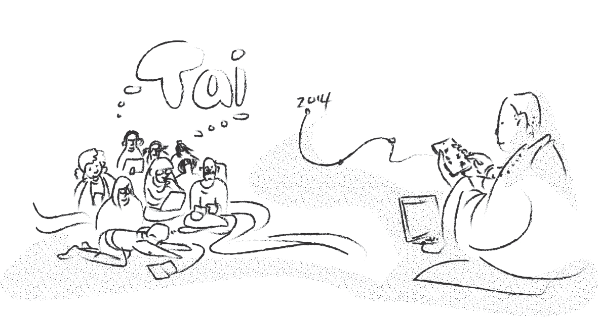
Tai 师父说：“大家现在能在这里学习佛法、追求真理和解脱，都是上辈子修来的福报；大家都是佛前大种福田的人，否则无法遇到此等妙法。”为此，我们也真心希望看到这部书的所有人都能珍惜这样的机缘，从Tai 师父的修法中获得真实的利益。
第01 章 Taiguanglin 的修行历程(24)
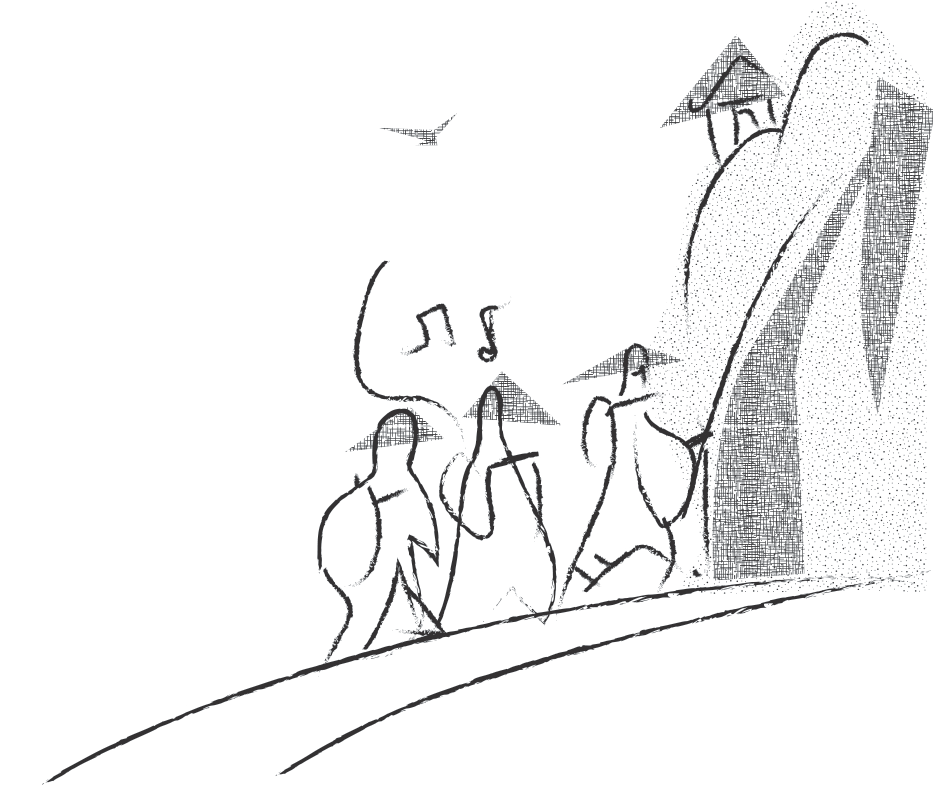
白龙腾顶化乌云
楼主的Taiguanglin 网名是谁起的？(2014-02-25，11:49)
Taiguanglin
这不是什么问题！不过既然问了，就如实相告。那是我真名的拼音，还有师祖给起的法名，还有投胎前的法身名号。反正叫啥无所谓！
920626777
那请问你闭过关吗，又修习些什么？(2014-2-28，08:12)
Taiguanglin
我主要打坐参禅，闭关的时候一天只吃一个西红柿和一个胡萝卜，大部分时间都在打坐。
920626777
佩服！不打坐时，还看经书吗？睡觉吗？是在屋中不出去吗？
Taiguanglin
一天打坐二十小时，每隔五小时踱步一小时；不睡觉，一开始打坐靠墙坐，困了就那么坐着靠墙睡；几天后身体进入状态，就不用睡觉了。没重要的事不出去，起码四十九天是不出门的。
920626777
感到楼主确实有实修见地，能说一下你是哪个宗派的吗？
Taiguanglin
一说宗派就落分别。法本圆融，唯有一乘。
920626777
看了以前楼主的帖子，既已学佛，而且实修，知道宿命通，为什么向人寻问测字、问姻缘？而且你既然要指导大家，你的宗派应向大家表明一下，好让大家有所判断。阿弥陀佛。
Taiguanglin
我非汉人，跟一位中国朋友聊天中听说中国有一种预测法，居然用随意出的一个字就能占卜。我好奇，不过上街从来没见过，就在网上翻看，看到百度贴吧里有人测，那就随便测看看啦，看人怎么说。大家都问事业、爱情，我还能问什么。
宗派不说，现在住的庙是禅宗一派，具体就不说了。
920626777
难道楼主不是中国人？不用纠结哪个民族吧。我只是问问大致的宗派，像禅宗、净土宗、密宗等，不是问细致的，你说得太细了，我也不懂，呵呵。
Taiguanglin
我拜在禅宗门下。一说门派就落分别，佛法唯有一乘。
佛陀当年打了百种拳法，弟子们按照喜好各学一套，各自开山立宗收徒传艺。我从这里学一点，从那里学一点，在自己肚子里融会贯通，再把它忘得干干净净，打出来就是这种百花错拳；像这个也不是这个，像那个也不是那个，甚至还有一些是佛经里没有的。我就这么打，你就这么看，也别深究。
判断一个人是不是善知识，首先看其戒行。自己不守戒，嘴上吹得满天神佛的人不是善知识，不用理。在网络这样的环境里，大家都不照面，所以靠这个戒行无法判断；那就求其次，看说的法入不入理，契不契合佛陀传法的宗旨；再来，就是求名闻利养的不是善知识。
我叫大家放生做功德回向给冤亲债主，却不提去庙里布施，就是这个原因。供养三宝也有大功德，印经流通也有大功德。一切供养中法供养第一，但是一提钱大家就很敏感，所以，不提钱，更不露脸。
大家不要管我是谁，只看我打的拳能不能健身护体，降伏烦恼。不行就别看，有用就多看。
我的帖子无版权，版权是佛陀的。佛陀不收版权费，欢迎翻录。看到的朋友如果喜欢，可以随意贴到任何地方。
上丘化
怎么修出意生身？意生身与成佛是什么关系？我不想踢馆，但我想问—些真东西，谢谢！
Taiguanglin
意生身是什么？你如何定义。(2014-3-2，12:35)
意生身在我看来是在问元神出窍，这类问题不答。拿理论来考验人的不答，来捣乱踢馆的删。你把理论背得滚瓜烂熟，你还是凡夫。你真悟道了——早该在这个人间消失，去了天界或者出轮回了！
我把修行当作人生第一大事，不干别的，把全部精力投入修行也有十多年。去韩国、台湾、西藏、中国大陆、斯里兰卡等有佛教的国家，自费游历学习。在他们庙里交自己的钱住上几个月、一年，甚至几年，是为了追求解脱生死的真理，不是来跟人辩论，就这我也不敢胡乱判断别人的见地如何如何。
你那么了不起，那你跟佛菩萨论法去，别跟我这个凡夫论。佛陀说了，在成阿罗汉之前连自己也别信，凡夫之间不要论根器，因为你看不出来。
我的生活很紧张，时间都是按小时来计划。我把宝贵的休息时间拿出来写帖子，写自己所悟到的佛法，是给大家指路。当然，走不走是你的选择。我开的是道场，不是擂台，不跟人争辩。
你问问题，自己心中都有答案，你还问什么，无非是想证明我没有修为，你比我高罢了，就这心态还学什么佛。上面说得很清楚，此帖针对的是实修人，不是搞理论的。
问我什么境界，我从念咒入门，修念佛三昧，到参话头，话头破了，你说是什么境界！如果你修得比我境界高，那你应该能说出这是什么境界！
我说话很冲，是在赶时间，也是我的风格，其他观者就理解一下吧。
無法無天dlf
我是初学者，无师自己瞎练的。单盘能一小时，看了师父的帖子发现自己走了好多弯路，以后就照师父的路子一步一步走。先克服身体上的缺陷也就是双盘，再到女人，一个一个克服。师父在楼上提到部分的时间修行表，请师父说一下每天的详细作息时间，也就是一天在干什么？好让大家越发精进，不虚度时光。
Taiguanglin
每个庙的作息时间都不一样。我们的庙在郊区，每天都有信徒来祈祷，周末更多，所以比山里只管修行的庙要轻松些。
三点起床，三点半开始礼佛，五点半结束；该做饭的、该打扫的去干活，剩下的打坐一小时，这就到六点半了。吃饭、洗漱、休息，我不吃早饭。八点开始听讲经的去听讲经，禅堂开门，修禅的去修禅。十点开始礼佛，听讲经的都出来一起礼佛，禅堂的有些是挂单只修禅，这些不出来，其他和尚都要来礼佛，到十一点半结束。
有法会的时候，和尚讲法；有人来超度死人，就接着超度法会。按照过午不食的戒律，本来到十二点半之前要吃完饭，但我们庙要迎合信众，有法会的时候就一点吃饭、两点吃饭，这个就守不了了。吃完饭休息，这段时间该干嘛干嘛，不会管。三点又开始讲经，有的去听经，有的出去干活，该坐禅的去禅堂。我去偏殿磕头，磕头两个小时，八百六十四个五体投地。然后到厨房喝水、找水果吃，运动完不补充维他命和水分，肌肉会受伤。晚上六点开饭，大部分和尚都不吃，有干活的吃，挂单修行的居士们有的吃。七点有晚课礼佛，到九点，我有时候不参加，直接去禅堂打坐，有时候就在自己床上打坐。这几天发帖，发完再打坐两三个小时，十点睡觉。
有时候去山中庙挂单修禅，那是一天十六小时坐禅。凌晨两点起床，两点半到六点半坐禅，早饭时间，八点到十二点坐禅，午饭时间，一点半到五点半坐禅，这种庙不做晚饭，六点到十点坐禅，然后洗漱睡觉，基本就十点半十一点了，一天睡不足四小时，但这个身体适应了也很舒服。
值得05
2014-3-5 00:44
师父是在哪个庙啊，我也想去学打坐。
Taiguanglin
秘密，你要学就到附近的庙学就行。(2014-3-5，19:32)
去看宣化上人的即问即答讲法，你问，我答，你再问，我再答，你怀疑反驳，那就拜拜。你问神通或者修行境界，那就说你自己修看看，修到那个程度就知道了，这就是禅门的风格。
我也是禅宗门人，我没有反对辩论。我的意思是我不喜欢辩论，这是我的风格。我开中餐馆，你来要西餐，这就没道理了嘛。
教宗、密宗都有辩论科目，他们有一整套完善的辩论技巧和训练过程，没理也能说出三分理，去跟他们切磋辩论，相信对喜欢辩论的人来说有莫大的帮助。我这里只讲实在的，不跟人辩论。(2014-03-09，20:00)
我妈妈是医生。我小时候经常去我妈妈的医院里玩，看那些病人个个都是愁眉苦脸的，时不时就有人死，家属的哭喊声震荡在整个楼道。当时我就想，原来所有人最后都要这么痛苦地死去。那个混得好的人无非就是多几个探病的，混不好的就那么几个亲人轮番守着，有的没钱被轰出去。不管你混得好不好，最后的结局都是痛苦地死亡。
我很怕打针，不想吃药，但偏偏就体弱多病，要经常吃药、打针。人人都会死，那我起码要死得不痛苦，不能像医院里那些病人一样，死前还在身上插那么些管子，还得开膛破肚动刀子，想象一下都恐怖。后来偶然的情况下看到《大悲咒》，上面说念这个咒可以去病，我就试试了，结果一试还真灵啊，就这样开始了修行。
不孝忤逆女
2014-3-14 21:40
楼主你不会是在明月禅寺吧。
Taiguanglin
不，那里也有韩国和尚吗？别打听我的住处，这是秘密！传出去要死人的，我还不想死呢，还有很多事要做。
不孝忤逆女
有这样严重啊！我就是随便问下。只知道那里和一个韩国寺庙很友好。贴了很多方丈和韩国和尚的照片——我原以为韩国没有佛法。您要是中国人就完美了。
不孝忤逆女
我没别的意思。要是楼主是中国人，那我会觉得与有荣焉。嘿嘿！
Taiguanglin
师父突然叫我带两个去年刚从佛学院毕业的师弟去山中庙坐禅，过了端午节再回来！初学不懂禅房的规矩，要是出现境界，也好有人指导。所以，我要离开一段时间了！
大家也需要时间修行——这个修行不是那么快就能看到变化的！三个月其实也很短，就看大家如何精进了，最后还得靠自己。善知识也只不过是指路牌，走路还得靠双腿，不经历千雕万琢，成不了金身大佛。
如果觉得自己障碍多、业障重，那就拼命磕头吧！韩国有一个女孩子有先天残疾，走路都不顺当，话也说不清楚，去见当时的大和尚圣哲法师——这位法师现在已经圆寂了。当时要见他，得先磕三千个头，这样人家才肯见你。
这个女孩磕了三千个头去见那个和尚，说自己身有残疾，活得很是痛苦，都不想活了。
和尚说：那就去死吧。
女孩说：可自己又不想死，父母没有放弃自己，觉得死了对不住父母，自己也希望像别的普通人一样，过一次正常人的生活。
和尚说：既然想活，办法倒是有，就是磕头，把你这辈子要遭的罪全部用磕头来提前受报。
从此这个女孩天天磕头！每天三千个，磕了十年。一旦觉得生活不如意，就增加数量；一天磕一万个头，连续磕一百天——这算一个百日祈祷。要磕一万个头需要二十小时，从半夜十二点开始到晚上八点才结束，中间吃两顿饭，还不能吃饱，吃撑了就不好磕头了。
这种百日祈祷她来了四回！现在能走路了，也会说话了，还出了书，还到各地寺庙去讲自己的经历。
当你怨天尤人唉声叹气的时候，宝贵的时间都流失殆尽，一去不复返了——修行也是年轻人的事！在年轻的时候打好基础，把身体练好了，等年纪大的时候，靠这个底子可以一直修下去。年轻时坏事做尽，抽烟、喝酒什么坏毛病都染上了，等到年纪大的时候，想改基本就不可能了！身体也承受不了高强度的修行。
好了，祝大家好运！
愿佛菩萨保佑各位！
295066960
楼主师兄好，我想问一个问题。您现在已经证到圣果没有？如果有，日常生活感觉有什么不一样呢？多谢楼主。南无阿弥陀佛。
Taiguanglin
不要管别人的境界，这些和你没有关系。你觉得我写的内容在理就学，不想学就算了。
圆圆柔柔摘月光
不过好失望啊，看到您不收徒，不愿意卷入别人的因缘里边这段话，心里真的好失落啊。
Taiguanglin
我不收徒，这里不是我负责的地界。管多了让别的师兄弟们多没面子啊，呵呵！不收徒是因为我不贪图那名分，也希望大家不要贪图师徒名分。我有吃有穿，也不需要物质供养，在这里我就是虚拟人物。
拜师皈依受戒都是形式。心皈依，心持戒，心中向往佛国，视佛如父，你就是合格的佛子。心中诚心皈依释迦牟尼佛，皈依阿弥陀佛和观音菩萨，皈依传法上师，你即是我的门生。
作为出家人，无欲则刚，不向众生索求一切，只管布施，方能心无挂碍，来去自如。我能布施的也只有法，望大家珍惜而已。
我们都不是这个娑婆世界的人，不想卷入这个世界的因缘中，这也是我们的原则。善缘、恶缘都是缘，唯有无住相布施，不求报施恩，才能轻松离开。我教别的后辈们都是如此。
乞丐认为自己可怜，应该受到别人的同情和布施；一个出家人认为自己是僧宝，应该受到众生的尊重和供养，这两者有什么区别？认为自己应该受到尊重、应该受到供养的和尚是精神枯竭的乞丐！三世诸佛出世也无法解脱。
对于在家信众，供养僧宝有大功德。你也别管人家是不是骗子，别管人家有没有修为。你布施是你的功德，他行骗是他的恶业。你有你的善报，他有他的恶报，两者没有关系。你知道了对方是骗子，那就别再布施，在不知道的情况下布施的都有相应的善报。(2014-06-03，21:08)
我曾经也是胖子，为了修行减了十五公斤——都是靠磕头减的，前后用了两年。减肥不能太快，身体承受不了反而生病。
阿啦顶身等
您不会是韩国那位慧敏僧人吧？我今天刚听到他的名字。
Taiguanglin
不是！慧敏也见过，他比艺人还忙；不是禅僧，是学僧。
精诚唯一
我想问下楼主，那个老和尚跟你拜礼的时候，你回礼了吗？
Taiguanglin
和尚磕头，如果不是自己晚辈，那就得一起磕头回礼，对磕头。
陪着烟消遣青春
2014-06-19 10:10
我能随师修行吗？
Taiguanglin
不收徒，但教修行。看完那个长帖子，自己选择修法。初学从磕头、练呼吸、念经、念咒开始。
欲安欲静
2014-06-18 11:16
楼主慈悲，您收徒弟吗？
Taiguanglin
不收徒，但愿意学的都教。(2014-6-19，20:44)
我以前拼命念《大悲咒》的时候，一天念八百到一千遍，结果睡觉的时候身体是睡着了，可意识还清醒，还在念《大悲咒》。(2014-06-20，22:19)
我也是这样熬过来的！舒服到两个小时后，脚脖子的筋开始疼，更疼的是股关节的软骨——就是大腿骨和骨盆连接处。那疼得真是深入骨髓！刚出家的时候锄地种蔬菜，老是用一个方向锄地，结果身体重量全部压在左侧股关节，当时就有些疼，感觉软骨被磨损。后来不干活了，就不怎么疼了。可打坐的时候居然发作出来，实在是太疼了！一下子从舒服的感觉被拖出来。(2014-06-23 20:41)
出体问题，在没练成阳神的情况下出体，会消耗巨大的能量，频繁地出体会把身体拖垮。
我上大学的时候也玩过，出体之后连房门都出不了，只能在屋子里转。还有一次遇到非常情况，夏天太热，开了窗户睡觉，出体后顺着窗户就出去了。结果外面有野鬼，让野鬼拽着飞了老远，飞过停车场和运动场，往山上的坟圈子飞去。我吓坏了，拼命挣扎，好不容易回来了。以后再也不玩了！(2014-06-30，22:01)
别着急！
我念《大悲咒》念了三年，一开始也认为只要把这个咒念到死就可以了。后来念到妄想少了八成，自己时常处在发呆的状态。然后就学坐禅，身体又动来动去。师父叫我磕头灭好动的习气，又磕了三年，身体自己想静下来，然后坐禅。
没有一口吃成胖子的方法，先念佛念到脑子里的妄想减少八成以上。
ruofeilulu
老师您是82 年的？居然和我同岁啊！可以冒昧地问问是几月的吗（如果不方便就算了）？我觉得冥冥之中，总有一种很奇妙的力量在指引我修行。当我每到一个阶段的时候，总会遇到善知识，可以让我少走弯路。刚刚尝试打坐，虽然可以直接双盘，但是很多地方都心里没底，正在这时候就看到老师的帖子了。真是太奇妙了！我已经开始按老师说的练腹式呼吸了，希望赶上大家的进度！
Taiguanglin
不告诉你，不要打听我。生日、年龄都无所谓啦，我是网络里的虚拟人物。
ruofeilulu
又冤枉我了啊！韩国和中国文化差异咋这么大嘞？我不是要打听老师，只是觉得是同年的人比较意外，随便问问好玩而已。不回答也可以，我没有问姓名、地址、电话啊。
圆圆柔柔摘月光
对了，师父这个层次了，还会做梦吗？还是可以自己控制梦境？突发一问。
Taiguanglin
平时无梦，有时候白天太累，又没空打坐，睡觉的时候姿势不对，压到了不该压的地方，血液循环不好就会做梦。
阿啦顶身等
师父啊，你怎么现在都两天来一次了？好想念你哒！
路过的小胡子
好好修行呀！等你有成了，不是天天可以神游太虚，找师父喝茶聊天。
Taiguanglin
想我啊？我只是网络里的虚拟人物！
第02 章 磕大头(23)
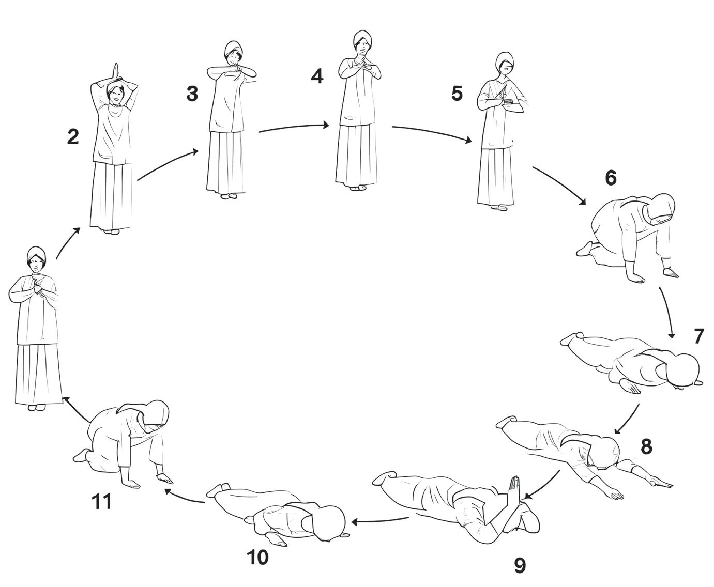
toton126
老师说的是不是大礼拜呀？我这里有两种做法，烦请老师抽出几分钟看一下。哪种是对的，我们就打算入手哪种了。( 见附图：图1) (2014-06-21 08:01) （医家正推法的视频已用十二幅截图替代了。另一种做法，原帖中没有，不知道toton126 指的是什么——话头禅）
toton126
前面一种是一个中医师推荐的，叫医家正推法——锻炼全身，开通全身经脉的。麻烦老师了！
Taiguanglin
两种方法都好！要想对内脏加大振动的力度，让内脏更加健康和强壮，就选择第二种磕头方式。一开始会出现恶心的现象，就是内脏受振的结果——坚持一段时间就会好的。不用在意！
supid128
我现在用的方法是这样的( 见附图：图2)。
supid128
我现在做的跟这个比起来，难度有点大？从第五个动作过渡到第六个动作时，他是膝盖先着地然后匍匐下去，而我做的是自然下倒的时候，双手撑地，然后向前推出，重重地落在地上，后面的动作相似。我也不知道哪个动作好，所以还烦请楼主师兄指点一二，感激不尽！
supid128
为了更加直观，我发个视频链接上来( 见附图：图3) ( 此处用十二幅截图代替此视频了——话头禅)。在下就是这样做的，相当累人，但是为了学佛，这点苦又算得了什么。
Taiguanglin
我是上身挺直的情况下，膝盖先着地，然后手着地，这个视频里的方法，头比身体低( 附图3 红圈位置)，这样容易气血逆流。还有，直接在硬地板上磕，膝盖容易受伤。我是放着垫子磕的——用不着那么虐待自己。身体对修行人来说是宝贝，弄坏了想修复可不容易，还会耽误很长时间。
supid128
师兄，我是重重地摔下去，看师兄所讲的应该是轻轻下去，是吧？
Taiguanglin
说磕头，我是胸口离地面十公分左右的时候双臂撤力，让身体掉下去。功夫贵在坚持！我怕你那种坚持不了多久。一星期起码要来五次，一次五百，中间休息一天。如果你可以那样，坚持一年两年那没什么。在硬地板上直接磕，最好有护膝。
supid126
练了两天的大礼拜，每天一百零八个，要半个小时以上。现在两肋骨很痛，后臂也有点痛。感觉家里的地板干净多了。我怕自己不能坚持，我是穿着短袖做的，是不是要穿件毛衣或厚一点的裤子？这样做，怕收不到效果，我是按第二个视频做的。
Taiguanglin
磕头得先有垫子。市场有卖的泡沫地板，可以拼接的那种；要么瑜伽垫，放两三个瑜伽垫，别把膝盖磕坏了。
supid126
还有就是，现在买了那个泡沫的垫，搭起来之后，磕头时，两手向下滑，滑不下去了——因为摩擦力太强了。我不是先跪着，然后身体趴下去，而是借双手向前滑的力量倒下去的。现在有了这个泡沫垫之后就不行了。不用泡沫垫，在地板上滑是很滑，但是身上好痛，两个肋骨很痛，担心会内伤。
Taiguanglin
不要非做那个摔肚子的磕头，可以先跪下再趴下，坚持一年效果也一样。如果非要摔，那就把垫子的两边剪掉，让手可以趴到地板就行了嘛。别摔出毛病来，可以轻点摔。
《心经》可以念，什么经、什么咒都可以，念经持咒主要的目的是灭文字妄想，和里面的义理没有什么关系。
supid126
楼主老师，昨天大礼拜一百零八个，用了十七分钟。继续做下去，身体有点撑不住了，原因是我穿着冬天的羽绒服和棉裤在地板做，这样会滑一点，有可能是热的缘故。但是身上不疼了，完全解决了。老师讲，五百个要一个小时完成吗？看样子自己耐力与体力都没有完全跟上。昨晚二百个，差不多是身体的极限了。而且时间因体力的不支，而变得更长。看样子自己身体虚得很。
supid126
经过今晚的实验，我在地板上垫了一条被子，身上衣服脱光——用于散热。然后把空调也关了，风扇也关了，因为练功出汗最忌风。然后双手全十，上举过头顶，然后下来，到胸前，身体向下倒下去；快到地的时候，双手掌撑地，感觉身体的重量都在手上——不知道这样会不会对手腕产生影响，请老师指正！身到快到地面的时候，双手松开，胸膛压在被子上，一点也不疼。做了三百个，用了差不多八十多分钟，有点累。站起来的时候是跪着起来的，每次下跪起来膝盖咯吱咯吱地响。不知道这样频繁地起来，对膝盖有没有影响？不知道这样做行不行？师父说磕五百个是一个小时吗？
supid126
还有就是，三百个做完之时全身汗如雨下，整个头部很热，有点头晕，感觉发动机热过头了，心脏跳得很快，感觉要脱水，水会流光，做完可以立马喝水吗？感觉好口渴，知道是不能立马洗澡的。整个干被子，变成水被子——就知道流了多少汗了。现在不是很热，要是再过一个月，大热天的话，这样做不知道身体能不能承受？
supid126
老师，我不知道你的肚子的肉会一块一块地动起来。我看到那些视频，都是深水自由潜水的人会做横膈膜运动。他们把肚子缩到差不多贴后背了，然后来回地做波浪翻滚的动作，好好玩。不知道这样做，对腹式呼吸有没有帮助？他们可以潜水二十分钟，真是神呐！
Taiguanglin
我磕头是这样的：双手合十站好，下跪，膝盖着地，然后向前倒，双手撑地，身体下到一半就双臂撤力，然后双臂伸展；起来的时候反过来做，撑地支起上身，跪坐的姿势下双手合十，然后靠腿力站起来。不做举手到头顶的动作——年轻人求的是速度，十三分钟做一百零八个、六十五分钟做五百四十个、一百零五分钟八百六十四个。不做多余的动作，就是起来、趴下，起来、趴下。用鼻子呼吸，呼吸比正常人都慢，也就一分钟十次左右吧，平时少于五次。
你做完后要散步十分钟，绕着房间转，让心跳平复，收点汗；然后喝温水，吃点常温的水果就行了；然后再洗澡。一开始膝盖都会咯咯响的，关节不够润滑，等练到一定程度自己不响了。
Taiguanglin
第一，减肥——胖子无法结双盘；
第二，放下我慢心。你可以给过路狗磕头的时候，算你具备了学无上妙法的资格。你看这里，我发帖，就有人捣乱攻击，有的没凭没据，就是看不顺眼——这样的心态如何修行？
第三，帮助气血循环，加快打通经脉。我打通完了，但还继续磕头。因为每天还吃一顿饭，这一顿饭里也有对身体不好的毒素，呼吸的空气里也有，所以用磕头出汗，让毒素随着汗水排出体外，减轻肾脏解毒的负担。三四天不磕头，感觉身体开始变沉。
现在还年轻，一天磕八百六十四个五体投地，就是西藏喇嘛们直接趴地下的那种。磕头的时候累，但磕完舒服啊！你想双盘，但身体不听话——我建议你磕头！
磕头和其他运动不一样：不需要任何器械，只要一个垫子，不需要上街当吸尘器，不受天气影响，不用花钱上健身房。磕头没有任何危险，其他运动有一定的危险系数，一不留神伤着自己也不好。还有磕头对排毒绝对有好处，和其他运动不能比：你跑步三十分钟，闻闻汗的味道，磕头一个小时闻闻汗的味道，磕头的汗臭多了，说明排毒更顺畅。
自在叶儿飞
已戒肉戒淫( 师父说过“肉都戒不了，还修什么禅定”一直激励着我，当然欲望还不能泯灭)。开始磕头，努力逐步瘦身。再求教师父：像藏传佛教那样磕大头行吗？
Taiguanglin
学喇嘛们磕头可以！铺上垫子，别把膝盖磕坏了。
不孝忤逆女
有个人提问，请楼主回答。他这样问：楼主，我以前结核病治好后，身体虚弱！一直修《元极功法》前面一个唵字中的第一节( 后面的那些也都没有，地摊上买的！)。你前面讲的肉戒、淫戒都能体会到！可是功法残缺，又没动功辅助，所以这半年身体里的气一旦达到一定程度，就会有气逆和气隔( 在肺里郁结) 现象。这个时候平时睡不好时那种哈欠总是被这种气硬逼到肺里郁结( 也就是想打哈欠，打不出来！)。最近都不敢再认真地修！现在基本也都不敢修了，以前感觉气血充盈，现在感觉体内空空的，并且身体肌肉没有耐力，容易引发酸痛！
Taiguanglin
你的肺里有很多钙化点，就像人的皮肤受伤之后会结痂一样。你的肺里有结痂，这是有形有质的实物，不是气。你不能把它排出来就不可能打通经脉。你也不能手术，这东西就像沙子一样，又小又多，手术也不能都拿出来，也不会有医生让你手术的。
办法倒是有，就看你有没有毅力了。办法就是磕头，五体投地，像西藏喇嘛们那样，直接趴地上的。但是动作要求非常严格，你必须按照这个要求做才有效。
你先买几个大的泡沫垫子，足够你趴在上面，膝盖那里也要有，膝盖直接碰到硬的地板就疼得厉害，做不了几个；再买串佛珠，不是挂脖子上的那种，是可以拿在手里的，不大不小的，有一百零八颗的佛珠，用来磕头时数数；衣服尽量穿得宽松舒服，直接穿着裤衩，光着膀子上也行；再找个浴巾铺在垫子上面，好吸汗。装备齐全之后就该开始了。
分解动作如下：你拿上佛珠，双手合十，双脚稍微分开；然后先下膝盖，这个时候上身要挺直，不能弯曲；膝盖着地之后，身体向前倾倒，双手撑住地面，然后像俯卧撑一样下身；关键动作在这里：当你的胸部离地面还有十公分的时候，双手迅速撤力，让你的胸部、腹部直接掉下来，重重地砸在地面；然后双手向前伸展，手掌向上翻，额头着地——这样就结束了下去的动作。起来的时候就是倒着来：先收回双手撑住地面，双手要贴在胸部两侧，然后用臂力撑起上身，再用腰力把身体收回，成跪坐状，双手合十，上身挺直，再用双腿的力量站起来。这样就是一个了。
起来的时候一定要先把手收回，再起来，不能手还在地面上的时候，膝盖先起来——这样就会撅起屁股，气血逆流往头上灌，这样不好！整个磕头和起来的过程当中，你的头一直要在比身体高的位置。
这种磕头法的重点就是把身体往地上砸的那一下，这会让你的内脏受到振动。一开始可能很不舒服，但习惯之后内脏会越来越健康强壮。这种振动会把你肺中的钙化点振下来。
每天至少三百个！一开始从五十个开始，没做过的人做五十个，第二天全身都酸痛。习惯之后逐渐增加，最好五百个。如果做得熟练，那五百个只要七十分种。
做完后洗澡休息，然后结降魔坐，念《地藏经》，要出声念，让体内的浊气都从声音中喊出来。一天念一遍，念完回向给你的冤亲债主。
这样一天的修行时间大概在三个小时。过三四个月，你开始会吐痰——痰中带有黑血——这就对了！把它全吐出来。坚持修行，相信一年就能把肺清洗干净。还有，不要吃肉，这是必须的。等吐得差不多了你再开始练双盘打通经脉。祝你好运！
圆圆柔柔摘月光
师父，这个问题又是一个非常小的问题，您体谅体谅吧。只是想请问您：磕大头的时候，膝盖那里有没有加护膝？我今天不过才磕了一百个，膝盖已经破了？我想像不到磕到四百个，我会不会残掉？师父的磕大头过程和心得能写一下吗？也是指导，也是榜样和鼓励，顶礼师父。
Taiguanglin
磕头的时候放垫子啊，别往硬地板上磕。一边放音乐一边磕头吧！我以前是放着《大悲咒》磕头的，人多的时候不放，人少就放。一边一起唱一边磕头，声音不要太大——这也是练呼吸的好方法！你看歌手们，有些人边跳边唱，有些人只能站着唱，唱出来对腹肌和内功都有好处——内力充沛的时候声音洪亮。你现在呼吸困难，那就默念吧！别管什么鬼道众生了，你现在自己的饭碗都不是满的，顾不上别人。
满城金甲
我昨天磕头三百二十四个，昨天没大事，今天早上起来双盘都上不去。
圆圆柔柔摘月光
我今天早上磕大头，因为膝盖破了，所以我是直接磕下去，然后用脚的力量撑身子起来，结果脚又破了。然后晚上打坐就能坚持二十四分钟。我发现，如果腿太累了，是不是双盘就比较痛？您能磕三百多个，我好生羡慕啊！满城金甲@ 圆圆柔柔摘月光：不是磕大头，是接佛足——我这地方不够。一百零八个歇一次，一共三次。满城金甲@ 圆圆柔柔摘月光：我是接佛足，不是磕大头。我佛像前面的地方没有我身高大，就不勉强自己了。每一百零八个，歇一次，一共三次。之前我双盘大概能坐二十分钟吧！
Taiguanglin
要循序渐进，不要勉强。一开始磕一百个就不错了，慢慢来！
自在叶儿飞
因为本人比较胖，相对腿比较短，双盘时，脚无法搭靠到大腿根部，只勉强有个双盘的意思，这样能打通经脉吗，不然如何是好呢？
Taiguanglin
那样打坐也可以，谁都不是一开始就能做到标准姿势的。还是运动减肥吧，胖人肠子里有太多脂肪，整个内脏体积太大，往上顶起横膈膜，让呼吸困难。
要坐禅，先练成腹式呼吸，减肥是必须的，少吃多运动。不要吃什么减肥药，只有运动没有任何副作用，吃了药反而对身体伤害更大。不要着急，慢慢来！
平时还要多念咒或者念佛，修行才能让食欲从根本上开始减弱，强忍不是办法，还给自己带来巨大的烦恼。加油！
其实，我曾经也是胖子，为了修行减了十五公斤——都是靠磕头减的，前后用了两年。减肥不能太快，身体承受不了反而生病。
自在叶儿飞
阿弥陀佛！师父，弟子每次磕头没多少( 每次才五十四个) 就大汗淋漓，如同水里捞出来的一样。磕完头后，一咳嗽感觉脑后闷疼，血冲头顶，这样有问题吗？感恩师父开示！
Taiguanglin
没问题！一开始都这么困难，每天坚持，每天增加几个，慢慢来。
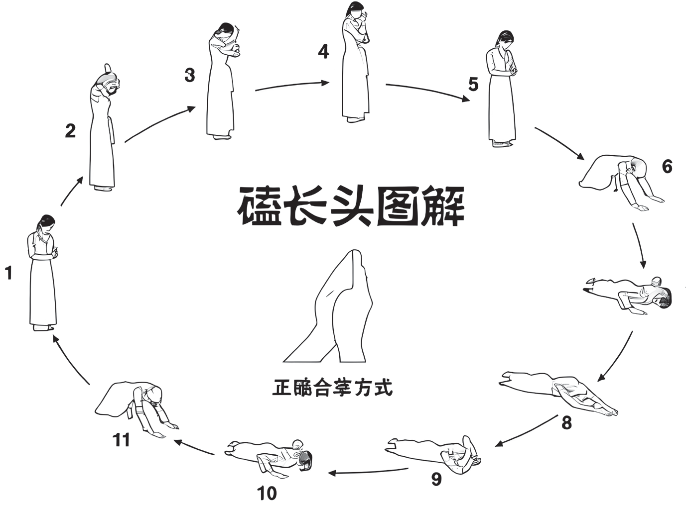
supid126
可以选择清晨五点吗，准备打算跳跃式地从三百到五百进发，不知道有没有难度。向楼主老师看齐！
Taiguanglin
修佛不管外面的幻境，但是人体的自然规律要遵守。
早晨刚起来，身体很放松，还没都醒过来，这个时候，站着练呼吸最好！不要做强烈的运动，会伤到肌肉的！
上午和下午可以磕头，晚上也别磕头了。如果你是上班的人，那晚上下班回来磕头比早上磕头要好。磕完，再打坐一个小时，或者两个小时，然后睡觉。磕头的数量自己掌握。正常情况下，人要越练越精神，如果第二天觉得疲劳，那就减少数量。
我前面关于身体部分的论述很重要，不管你信佛还是信道，还是无神论者，身体都是实实在在的障碍，把身体调好是第一步。仔细看血压部分，如何把血压降下来，把进入头部的血液量减少，上火的原因在这里。
这回就给懒人和病人们教方便法，我的初步修法就是磕头和练呼吸。如果你身体实在不能磕头，也没有时间，那就可以用下面办法，不过效果肯定不如磕头快。要练呼吸，首先要放松身体，身体越放松，腹肌越能扩张，所以先从放松身体开始练起。
第一个办法这样，躺在床上，不要枕头，把腿分开到舒服的程度，把双臂也分开，像大字一样躺；然后拿个枕头垫到后背，在你的膻中穴对面横着放，把身体的中间垫高；就这么躺着尽量不要打妄想，要么心里默念佛，就这么躺一个小时，不要睡着，不要观呼吸，更不要控制呼吸。每天坚持，一两个月下来，腹肌就能放松很大程度，可以练腹式呼吸了。
还有一个办法，也是躺成大字型，吸气鼓起肚子，吸到极限，然后憋气，使劲收腹，再鼓起肚子，反复做三到五次，再呼气。这个方法一次只能做二十分钟，憋气的时间长了氮气就会进入血液，所以不能多练，早晚各一次。这个方法可以运动所有内脏，让内脏里的血液循环加速，以后练腹式呼吸的时候更容易把内脏压下去。练到一定程度会有经常想拉屎的感觉，这是正常的，把宿便都排出去，内脏体积就减少了。也练一两个月。
这两个都是教给老年人和病人们的方法。如果你还年轻，身体比较健康，那就磕头、慢跑去吧，别躺在家里浪费青春了。
第03 章 开胯压腿(17)
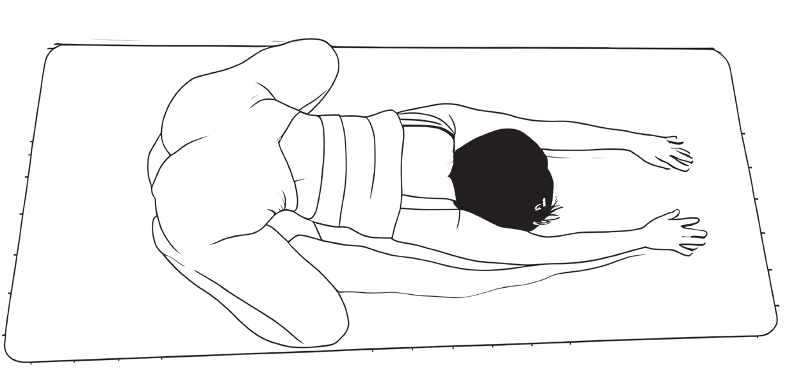
墩儿娘
末学实在盘不起来双盘，可是末学觉得年轻呢，想学一下。可是腿疼得搬不成，后来末学把腿提起来，不挨地儿；好不容易有那点意思了，末学再慢慢把盘着的状态下放，用手辅助着坚持了一阵，末学不会盘。师兄说的，这个脚放那个腿根；末学的腿太僵硬了，怎么做呢？阿弥陀佛，请赐教！
Taiguanglin
练瑜伽吧！如果是大城市，有瑜伽馆，去学。这个不是一天两天就行了！
要是自己来，就从磕头开始，每天磕五百个；然后，坐的时候把两个脚掌对接，就像合十一样；然后使劲往里拉，碰到蛋蛋——这样你的膝盖会起来的；你尽量往下压膝盖，贴到地面位置，你找人从后面站在两个大腿上更好！
膝盖贴地面了，坚持这个姿势每天一小时，然后身体向前倾，额头贴地面，坚持，坚持到呼吸顺畅，不痛不累了，再试试双盘。
墩儿娘
末学仔细读了几遍，基本看懂如何做了。太佩服了！阿弥陀佛。正如末学名字一样，末学是一个宝宝妈，才接触佛法半年多。附近有瑜伽馆，末学也向往一学，可是末学照顾孩子无闲暇去学。磕头，末学可以，阿弥陀佛！
墩儿娘
阿弥陀佛，感恩师兄！末学磕头的时候，孩子们经常以为我是要让他们骑马，就爬到末学背上来，呵呵！练盘腿，孩子也来爬，末学觉得疼，还撵开孩子。阿弥陀佛！师兄居然说可以让人从后面站到大腿上，真是震惊不已，阿弥陀佛！师兄们对自己真的很严厉，真是不经寒彻骨，难得扑鼻香！
墩儿娘
阿弥陀佛！诚心感恩师兄慈悲详细教导。末学一定把师兄的教导记在本子上，抽时间来练习。阿弥陀佛！阿弥陀佛！我佛慈悲！大智慧无量无边，太幸运了！阿弥陀佛！合十感恩！
Taiguanglin
希望你早日进入状态，但不要着急。我还以为是居士，原来是女菩萨，对不起！
教大家简单的动作，让你快点打开胯骨，早点练成跏趺坐。
第一个动作，你坐在蒲团上，双脚合十，把两个脚的脚掌对接，就像双手合十一样；然后把双脚使劲儿往后拉，让脚后跟碰到你的小弟弟——这样你的两个膝盖会翘起来，会结跏趺坐的人两个膝盖会下来贴地面的。你就使劲儿压两个膝盖，压到它贴地面为止。你可以坐到墙角下，背靠墙，让一个人从你后面站到你的两个大腿上；然后靠墙站着，一直把腿压下去为止，每天练。然后在这个姿势下，向前倾身，一直下去，让你的鼻子贴地面——一开始呼吸困难，但多练练就好了，这是一个动作。
还有一个动作，叫青蛙姿势。你像青蛙一样趴在地上，后腿要成Ｍ字形；找个枕头垫在胸口，然后头着地；你的屁股会翘得很高，会结跏趺坐的人屁股很低，小肚子基本能贴到地面，而且腿还保持着Ｍ字形。就像周星驰的电影《功夫》里，那个火云邪神练的蛤蟆功一样，你的头也要贴地。你就使劲儿打开胯，尽量让屁股下来。一开始呼吸困难，胯也疼；每天练，练到呼吸顺畅，胯也打开为止。这个不能找人站到你的腰上——那你胯里的韧带直接被撕开，你都走不了路的。
这两个姿势每天练，练得差不多了就能打坐了。还要磕头加快气血循环，这样打坐的时候经脉打通得快一些。
supid128
分享一下在下开胯的小小心得。楼主的第一个动作呢，可以不用人来帮你压( 见附图：图4)。以前看到小朋友学舞蹈的时候，都是老师帮她们踩两大腿；由于力量没有把握好，用力过度，造成永久性骨折，后背俯身也是这样。那有什么办法不伤身体，又可以轻松压下去速速开胯呢？办法还是有的，而且可以自己单人操练。做任何运动之前，都有几分钟的热身运动。这种开胯与劈一字马一个样，稍微热身一下就成，踢踢腿，扭扭脚之类的。关键时刻来了：当你坐下两脚掌对接如楼主所说那样，往自己的鼠蹊部贴到底；后面我会上图的，让你看得更清楚；然后自己在两大腿上加一本书，或者旧的衣服，或者哑铃，又或者沙绑腿，那种公斤级的最好；等适应之后，不太疼了，公斤的重量自己一点一点增加。这样在没有人帮你的情况下，自己可以很好地完成，而且腾出两手做些别的事——玩电脑、打游戏——转移痛的感觉。这个也是瑜伽的蝴蝶式！后背俯身式也很好操作( 见附图：图5)。现在是冬天，更好，可以在床上做。把你的被子叠成豆腐块；然后如骑马一样坐在上面；两脚掌贴床面，两脚掌向两边撑开；俯身，慢慢地俯身。由于你这个没有做过，拉开会痛，所以要慢慢地一点一点加大难度，从被子下降到枕头，最后拿开枕头，脸部与床单贴平，那大功告成。当然你一个人俯身的力量没有那么大，那自己单人的时候也超好办。我相信现在一般人都有一个属于自己的背包，你在做的时候身上背一个背包，在里面添一些东西，只要增加重量就成，直到加到自己能适应为止，祝你好运。这个动作我们叫趴青蛙——因为像青蛙嘛！这个动作叫跨鹤坐也有利于开胯( 见附图：图6)：
墩儿娘
阿弥陀佛！师兄在此楼教开胯，并发图，末学十分受益。这仨动作其中俩动作楼主师兄亲自给末学讲过，末学都理解不太好，师兄一发图，末学顿时理解了。惭愧末学愚钝，受益两位师兄赐教。现在不到一周末学已经能双盘了，虽然还是不太规范。
墩儿娘
师兄所说和另外一位师兄所发图特别管用。那几个动作热身后，腿盘起来果然不再那么硬。只是末学双盘总是上面的腿外侧的脚踝处的大骨头，硌得下面疼；而且上面那个腿麻到麻木，阿弥陀佛！请问师兄这个是什么问题？有何对策？
不孝忤逆女
我感觉阁下是因为双盘腿盘得散，才会出现硌得疼的情况。盘上后尽量使双脚完全伏上大腿，大腿肉肉的，不会硌的。解溪穴别落在空处，不会太疼。
不孝忤逆女
刚开始盘，麻是必经之路——会麻到像不是自己的脚一样。但是盘得久了，有了些基础，就不会全是麻了；逐渐有知觉，才是进步的。是我个人感觉，请楼主指教。
不孝忤逆女
如果你说的是腿骨硌腿骨，我的感觉是，坚持下去，时间一长，腿好似变软似的，也可能是适应了，就不会有太多不适。万事开头难！
不孝忤逆女
墩儿娘，你双盘没？按照楼主说的，把双脚放在大小腿的折缝里。我试了试，感觉非常轻松好用，三十分钟没什么难忍的感觉，就是感觉有些散。
不孝忤逆女
不过确实是做到双足心向上了，盘一个小时应该没啥问题，你试下！
不孝忤逆女
可能我坐得过于散了，脚根本没压到大腿上。不孝忤逆女@Taiguanglin，不知道我这么样，还算不算是双盘。墩儿娘@ 不孝忤逆女：阿弥陀佛！感恩师兄。末学在练，盘得不太好，还是坚持不了多久。阿弥陀佛！望师兄指教。不孝忤逆女@ 墩儿娘：我觉得除了坚持和忍耐没有他法。我去年刚练时只能坚持几秒，数几秒就打开，疼得要死。不孝忤逆女@ 墩儿娘：但那时很努力，每晚家人睡着了，我是务必要起来摸黑练一会，每晚必练。现在最久能到一小时，毕竟和那时是天壤之别。不孝忤逆女@ 墩儿娘：以前也常发帖请教如何延长双盘时间，几乎回答都是磕大头，那你也可以磕。我刚才磕了不少。共勉吧！不孝忤逆女@ 墩儿娘：我还想请问你打过佛七吗？如果有，请麻烦和我讲讲感受。嘿嘿！墩儿娘@ 不孝忤逆女：阿弥陀佛！感恩师兄，末学现在也是。趁孩子睡了，练会儿，今夜练得又不困了。阿弥陀佛！末学着实还没怎么磕过大头呢。末学并未参加过佛七，只看山西小院的碟，说佛七很好。阿弥陀佛！感恩师兄！
Taiguanglin
那位美女已经为你解答了！你再努力，脚再往上一点，脚脖子外侧的大骨头进入右腿的大腿和小腿折叠成的缝隙里就不疼了。这样你可能又觉得脚脖子的韧带疼，还得再往上，脚都上到大腿上就不疼了。慢慢来，不着急。要是胖的话磕头减肥，越瘦越容易，愿佛菩萨保佑你。
supid126
楼主师兄，大腿真的很粗，有什么办法减大腿的？双盘脚放上去之后，两膝盖翘得好高。
Taiguanglin
少吃多运动，减肥吧！多练蝴蝶姿势和青蛙姿势，膝盖就下来了。
minspark
师父我想问，双盘的时候，别的痛倒还好，一条腿压着另一条腿的那个着力点真是疼死我了。我要在中间垫个毛毯吗？我怎么没听别人说过这种情况啊！
无事不问卜
那是因为你的膝关节太硬的原因、先把关节练软一点再双盘吧。ruofeilulu@minspark，师兄，呵呵，我也是这样呢，要多做点准备活动，慢慢就好点。
Taiguanglin
谁都有这样的阶段，不用介意，可以先练青蛙姿势、蝴蝶姿势。
第04 章 腹式呼吸(47)
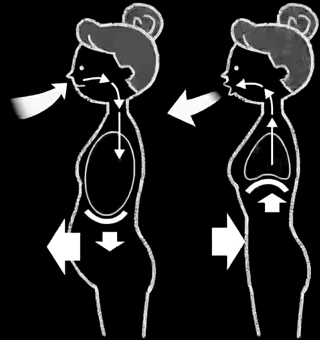
非缘非非缘_
对了菩萨，逆腹式呼吸有什么好处吗？必要吗？
非缘非非缘_
菩萨，逆腹式呼吸同顺式呼吸相比之下，有什么优势吗，有必要吗？
Taiguanglin
那是过渡时期，比胸式呼吸好，但不能用来坐禅。坐禅需要放松身体，逆腹式呼吸不能让腹肌放松，始终处在紧张和绷直的状态。不要着急，慢慢练，用三个月时间练成腹式呼吸就很不错了。这是要改几十年的呼吸习惯，不是说变就变的。
Taiguanglin
呼吸要练，每时每刻想起来就练。这是必须的！不为别的，就为健康也得练。
圆圆柔柔摘月光
关于练习腹式呼吸，有几个疑问，劳烦师父指导。1、呼吸的时候，可不可以不轻咬牙齿，舌头抵下齿？可不可以不用发出SI……的声音？因为在上班，这样好难为情。不用这样的话，可以随时随地练习。2、练习的时间，每次以多长时间为宜？还是每天不间断地练习就行？我晚上睡觉的时候也练习可以吗？3、刚吃饱饭了，是不是不适合练习？因为肚子鼓不出来啊！
Taiguanglin
练呼吸随意，关键不在那个SI，而是要用腹部呼吸——练SI 是为了更快地锻炼腹肌。练习这个没有时间限制，只要你不出现不良反应就一直练，更准确地说，以后一直这么呼吸，直到老死为止。这是入定的前提条件，你没练成腹式呼吸就别指望进入初禅。
一开始需要刻意地练，等变成习惯之后就不用管，身体自己会这么呼吸的。吃完饭不可以打坐，也不可以练腹式呼吸，至少要等两个小时，饭下去后再练。等你练成腹式呼吸的时候你的饭量也会明显减少——吃完饭后强练呼吸或者打坐都是作死的行为。
呼吸的时候，不要管胸部。人们都习惯了胸式呼吸，以为扩胸才能吸入更多的空气。你要关注肚子，让肚子鼓起，这个会吧！实在不行就先练肚子鼓起的动作，和呼吸隔开，让肚子尽量鼓起，然后再收腹，反复地练。把这个动作练熟了再一起呼吸，当肚子鼓起的时候吸气。
supid126
楼主，站着练呼吸，鼓肚子吸气；呼气时，两齿相合，发嘶声；气吐完，然后继续；然后习惯成行住坐卧。吸气鼓肚子，呼气的时候也要两齿相合，发嘶声吗？感觉这样不自然，呼的时候不嘶行不行，只有吸气鼓肚子变成自然，呼气自然鼻子呼气成不？
supid126
还有楼主现在呼吸一分钟只有两次，为什么到了二禅要四十次的呼吸标准？这个四十次，是一分钟之内，还是什么？
Taiguanglin
可以不嘶——这是快速强化腹肌的方法，不方便就不用做。吸气的时候放松腹肌，在腹肌上撤力，腹肌就会扩张很大，然后呼气的时候用力收缩腹肌，同时下面用力收缩。
是呼吸一次的时间四十秒。
supid126
倘若腹式呼吸练成了之后，那它自然吸气时肚子微微地隆起，呼气时微微地缩进；还是人为练呼吸那样，吸气时隆起来很高很高，呼出时缩进很深很深？
supid126
还有就是，吸气时肚子鼓起，鼓得不能再鼓，使吸入足够多的氧气，然后立马呼出，而不是闭气；呼出时或出嘶声，或不出，尽可能地压缩肚子到最深，最好是贴到后背，把废气都吐尽？
Taiguanglin
呼吸是这样的：在腹肌上撤力放松，腹肌就会膨胀，吸气，然后不要停止，用力收缩腹肌，呼气。每次吸入的气只要比平时多20% 就行，不要拼命使劲练。目的不在延长呼吸时间，而是练成腹式呼吸。只要把原来的胸式呼吸习惯改过来就行，平时不用刻意地做，也会自己做腹式呼吸。呼吸时间的延长是靠打坐来做到的。
关键是：打坐的时候不要观呼吸，更不要控制呼吸；让身体自己来，慢慢地呼吸时间就会加长的。
圆圆柔柔摘月光
师父，我似乎找到了我肚子鼓的原因——在您回果明的答复中看到的。之前您教呼吸的时候，光是很详细地教了怎样吸气，呼气没有详细说；所以，我呼气的时候没有缩紧腹部，导致老是吸气时鼓肚子，呼气时就自然出气。所以想跟您确认下：呼气的时候是要缩紧肚子的，一扩张，一收缩，对吗？在打坐的时候，经常会有种错觉，感觉自己的身体倾斜了，或者以各种奇怪的姿势在坐着，甚至有时感觉自己的脖子都转到腰后边去了。总之身体是各种奇形怪状的姿势，这是不是跟您师弟的那种僵硬一样的道理？反正每次我都不自觉地睁眼看看，才发现压根不是那种奇怪姿势。这归根结底还是因为气脉没通吗？
Taiguanglin
呼气的时候也要用力啊。算我疏忽了，抱歉！等你呼吸练好了，吸气的时候不用用力，直接撤力，让腹肌放松，它鼓得更大更舒服，你只要用力收腹呼气就行。
身体感觉不对劲，就是因为你的气还没调匀。气走得正常，感觉身体姿势就正常；气不通畅——一边通、一边不通——感觉身体向一侧倾斜。我也有过那种感觉，自己慢慢会好，不用管。
炎明王
师父强调用鼻子吸气的重要性，但我现在练磕头，十个以后就开始喘粗气，必须用嘴吸气才跟得上，不然很难受。请问该如何处理？我现在是在沙发上磕头的，感觉我家的沙发也不算软，有一定的硬度，这样可以吧？2011 暖暖的初夏：师父，我今天也是和炎师兄一样的情况，“注意力比较集中进入到比较宁静专一的境界时，我的呼吸会自动地变得很细微，很轻很浅，腹部也会自动地跟着一鼓一缩”。
请问
1、呼吸对上腹部还是下腹部有要求吗？我是在上腹部。2、轻柔呼吸的时候整个手臂到指尖都是发麻的，这是气在运行？需要收功不？PS：我是上班的时候坐直了练的。
Taiguanglin
要一直练到你的小弟弟上面的那个肌肉也会动为止。四肢的感觉不用管，没有任何副作用。重点观察头脑和胸口处，这里要是堵得慌，那就换个姿势。
炎明王
请问师父，心跳一分钟超过五十次，呼吸超过十次是指平常状态下还是刻意控制也算？我刚才测了一下，心跳大约六十多接近七十；呼吸我没有过分刻意压制只是稍微拉长了一点，有五次，感觉自然不难受，这算比较好的吗？
Taiguanglin
呼吸次数是看平时的呼吸，不是刻意拉长的，你要拉长一分钟两次都可以。心跳五十次，呼吸十次不是那么简单能做到的。那些运动健将，特别是跑马拉松的人，每星期跑三次、四次的人能到这个程度。
觉真是我
老师好，我发现自己平时用的就是腹式呼吸，都是肚子在起伏，就是呼吸好像很浅，这种情况需要刻意拉长做深呼吸吗？
Taiguanglin
在平时，一分钟呼吸要在十次左右，这样的身体打坐不会因呼吸出问题。自己拿表数呼吸看看，如果比十次多，那就可以拉长呼吸来练习，不然就不要练习，直接打坐就可以。
zhugewuyue
师父，今天胸闷，心绞痛了一天。貌似你之前说过是呼出太多二氧化碳引起的。那我这现在该怎么办呢？看这架势挺严重的。
zhugewuyue
师父，该不会是心脏不好身体在自动修复吧？晚上睡觉的时候试图把注意力不要放在呼吸上，好像停不下来了，但貌似好像又没自动腹式呼吸……只是注意在呼吸上好像移不开了。
Taiguanglin
早期修行重点放在运动上，磕头或者跑步，先强化心肺功能。否则，练呼吸的时候出现不良反应的几率很高。
自在叶儿飞
感恩师父法布施，用最通俗易懂的文字开示最上乘实用的实修佛法。这擦边球每一拍都是师父的慈悲心血，弟子终身受益，无限感恩。现在双盘二十分钟到半小时，放腿时最艰难，脚的颜色已经从前些天的深紫色变化到红色，是不是已经有点排毒效果了？请教师父：昨晚刚盘上右脚，忽然觉得心慌气短，于是改盘左脚在上，依然有胸口堵得透不过气来的感觉。坐不住，于是早睡了，不知什么缘故，是和晚饭略饱有关系吗？阿弥陀佛！
Taiguanglin
吃得太饱就不能正常腹式呼吸。晚上少吃点，吃了就去散步一个小时，让食物下去再打坐吧。那是排毒效果。
雨夜箫吟忆平生
还有个问题女生怀孕了能练呼吸不？谢啦师父！
Taiguanglin
怀孕的时候不要练呼吸，横膈膜下压内脏对胎儿不好。
zhugewuyue
师父我再问几句，呼吸是练到身体自然腹式呼吸，还是每口呼吸都要多20% ？原来前几天打坐昏沉犯困，是因为闭上眼睛打坐，好像意识落到无底深渊。昨晚上估计佛菩萨加持，让我挣脱开来。今天眼睛睁着，也不困，很清楚。
Taiguanglin
不能犯困，练到自然腹式呼吸就行。平时每分钟呼吸次数少于十次，然后就靠禅定的进步来提升呼吸质量了。
mlhgf888
师父，磕头时胸口很不舒服，像有团东西往上涌，很不舒服，是我的业障深还是别的？
Taiguanglin
你的横膈膜不能正常下降，到了极限了，感觉就是呼吸被堵，下面的内脏体积太大，少吃点再减肥就行。慢慢练，不要着急。
皮卡堂69
师父，我练呼吸怎么不能呼吸到丹田，在胃的位置卡住了，很是不爽啊。
Taiguanglin
一开始都那样，中腹部以下的神经都是死的。你要多磕头，多做腹肌运动来激活腹肌神经；还要压缩内脏，让内脏体积减少，减肥排宿便，少吃等等。
炎明王
师父我现在呼吸上有一个状况，汇报了望您给点评下。当我注意力比较集中进入到比较宁静专一的境界时，我的呼吸会自动地变得很细微，很轻很浅；腹部也会自动地跟着一鼓一缩，应该也算腹式呼吸吧？呼出之后还会自己停几秒钟。
Taiguanglin
对，就是这么做的。继续努力！
3hhx
控制呼吸怎么办啊，已经不能自然呼吸了，鼻子这里很重。
3hhx
试了试腹式呼吸，吸气的时候肚子鼓起来，感觉很好。现在我们这里打禅七。
Taiguanglin
你不要观呼吸，也不要控制呼吸。时间越长越难改过来，早晚会和身体原有的呼吸机制冲突，严重的话真会死人的。呼吸就要自然呼吸，你没打通经脉那就观丹田，要是通了经脉就参情绪或者听声音。
minspark
我刚打坐的时候就观呼吸( 感受氧气进出)，慢慢地它就从胸腔呼吸变成腹部呼吸了，所以你说的那个“吸气时把肚子鼓起来，呼气自然呼”的那个步骤忽略了，这样可以吗？后来感觉耳朵还是心脏在那里振，像体内有个发动机似的——噔噔噔的！后来又没了。然后我感觉缺氧，接着腹部呼吸好急促，待感觉不缺氧了，腹部呼吸又正常了。接下来这段时间，我是不是就可以开始念咒念佛到下座了？按这样打坐没问题吧？ruofeilulu@mm 师兄，老师主张打坐时不要观呼吸，我也是上座后调整呼吸，一正常就开始念咒。现在熟练了可以一上座念咒了。加油哦！
Taiguanglin
呼吸平时站着练，打坐直接念咒就行了。打通经脉前就观丹田，最好双盘。
圆圆柔柔摘月光
师父好！这个问题有点不好意思，但是又确实造成了一点困扰。我练习腹式呼吸已经一周多了，现在的问题是我肚子变得好鼓啊。正常鼓着肚子吸气的时候，感觉就跟怀孕四个月、五个月似的。我想问师父，这是因为我腹部有气，还是因为内脏在我练习腹式呼吸时也扩展开了？等练成了腹式呼吸，肚子会瘪下去吗？
Taiguanglin
会瘪下去的！排完空气，减肥排掉肠子里的脂肪还有宿便，少吃点。不要着急，你进步很快。不这么呼吸会生其他的病，虽然会比一般人小肚子鼓一些，但不至于难看。
果明通超
我才发心练了腹式呼吸三天，月经就来了，今天是经期的第四天了。只好不练了( 因为我记得师父在开示“练习打坐和呼吸中的各种现象”，特别开示了女子经期不要强练腹式呼吸，否则会引起血流量变大，导致身体虚弱)。但意念中总是要用腹式呼吸，但没有前几天那么大的幅度和那么大的造作。这几天照样做早晚课，继续练双脚合十和青蛙趴——为能降魔坐作准备啊。看书和打电脑时就练双脚合十。昨天双脚合十坐着，全身有些部位发热，额头和脚板出汗了。磕头也磕了一百零八个，没有磕大头。我还没有开始磕大头。照常上班和做事，没有什么血流量加大和头晕的现象。只是这一周来睡眠减少，晚上老是睡不着，身体心里有些烦躁。不知是心里的原因还是身体的原因。今天下午，理一理最近所发生的烦心的世事，想想弥陀的救度的大恩和一切法缘起无我的道理。晚饭后走了走，然后发心从今天开始恭读六卷本的《说无垢称经》，今天读了前二卷，烦躁的身心平静了下来，现在可以安心睡去了。感恩弥陀，感恩三宝，感恩师父！阿弥陀佛！
Taiguanglin
练习呼吸，吸氧量加大，大脑疲劳度就会降低，睡眠明显减少，是好事！白天也不犯困，人越来越精神。
chanshihua
有一种情况，昨天晚上打坐练呼吸时，一会儿就有了热感；就在我想停下的时候，突然肚子在自动地起伏收缩，而且幅度很大，有一点吃惊；持续了大约半分钟，慢慢停止；之后有气往上走，想打嗝。听您说往上走不好，就往下压，过一会就放了几个屁排出了，之后感觉胃很舒服( 肠胃一直不好，也一直便秘，所以很消瘦)。今天上午诵经时，从肚子到胸前面都是热热的。请问师兄，那个自动起伏是不是在调节肠胃？这段时间也一直在练腿打坐，现在单盘都得忍着疼，脚腕肿了。师兄说的那些几禅虽然对我还很遥远，但我为了健身和开智慧会向着那个方向努力的。
Taiguanglin
排气很好啊！从上排就打嗝，从下排就是屁，排气再排宿便。内脏体积减小，呼吸更好，身体发热修复，这都是我们修行想要的境界，继续努力。
ruofeilulu
老师，我昨晚打坐时默念几遍了《大悲咒》后，感觉身体就像是平常快要睡着时那种睡意朦胧的感觉，但是我的意识却很清醒，我还反复确认问自己困不困，答案是不困。坐了半小时后下坐，很久都睡不着了。这是什么情况？
无事不问卜
个人体会师兄应该是掌握念咒的窍门了，念咒、念经只去感觉那个发音就对了，念着念着身体就放松了。只有一念，妄念不生，念咒的功效就出来了。
Taiguanglin
本来就这样！呼吸练好了，打坐的时候会有充足的氧气进入大脑，本来犯困的时候也会变得清醒，睡前打坐反而不容易睡觉。所以你还是早点打坐，坐完再活动半小时到一小时，然后困了睡觉。
再回风起云涌
师父，我按照您的方法，已经练习腹式呼吸将近两个星期。直到昨天打坐时，出现了一个奇怪的现象：呼气时将气全部呼出之后，腹部还会不由自主地继续向内收缩一下，这不会是什么副作用吧？具体位置是，以肚脐为中心点，带动周围的肌肉，向内凹陷。现在我不用打坐也能自主控制这个肌肉收缩，可以使自己的腹部看起来更扁。目前还没有出现不适的症状。
Taiguanglin
没问题！打坐的时候不要练呼吸，也不要观呼吸，最好念佛或者观丹田。练呼吸在平时练，只要练成腹式呼吸就行，不要刻意地延长时间。
圆圆柔柔摘月光
我仔细观察过小孩的呼吸，因为我练习呼吸的时候，就觉得闷。晚上孩子睡我旁边，我就观察他，真的是肚子一鼓一鼓的。用个不好的比喻，师父见过癞蛤蟆一鼓一鼓的吗？
Taiguanglin
小孩都很容易学的。孩子们刚出生本来就是腹式呼吸，后来逐渐变成胸式呼吸。小时候抓好，在成长过程中有充足的氧气，再保障营养，那身体发育和智力发育都会比其他孩子好很多，加油！
ghyuerf
昨晚意外发现先生的自然呼吸竟然是腹式呼吸，吓了我一跳。趁他睡着的时候我反复验证，他的小肚子确实一直随着呼吸一起一伏。但是我又发现了另一个意外，我知道人的脉搏除了手腕、颈部，还有一个就是肚脐眼。我以前经常会测试自己的肚脐脉跳，每次都能很明显地感觉到，可是开始练腹式呼吸后发现摸不到了，摸我先生的也摸不到。这是为什么？
Taiguanglin
能感觉到肚脐的脉搏是因为腹肌在压迫内脏，内脏又压迫后面的腹部大动脉，都紧贴着，肚脐的脉搏就是腹部大动脉的脉搏。练腹式呼吸，腹肌打开，腹腔变大就不容易感觉到了。
圆圆柔柔摘月光
师父，我貌似上火了，已经便秘好几天了。师父，这跟我打坐有关系吗？真是疯了，要么就是想拉肚子，这次没有想拉肚子的感觉，开始便秘。关键是师父，我以前几乎从不便秘的。请师父给指导。
Taiguanglin
拿表看看自己呼吸，平时一分钟十次到十二次就可以了，再练就过头了。练过头了身体就不让你继续练；大肠停止蠕动，人就会便秘，还会腹胀。当然也有可能是饮食问题，吃肉多了或者吃辣椒多了都会便秘，喝牛奶也会便秘。多喝茶就好了，还有绿豆粥之类的。
Taiguanglin
那就看看自己呼吸次数吧，你是不是白天也在拼命练呼吸？已经快两个月了吧，也差不多练成了。
圆圆柔柔摘月光
练成了是什么感觉啊，师父？反正我现在几乎形成习惯了，用肚子来呼吸。
圆圆柔柔摘月光
我是没敢说，也不好意思说，其实练了一个月。我今天才翻日记，我6 月18 日写的，一分钟我居然呼吸了二十七次，我今天又测了一下是十八次。可能我自己测得不准，因为明显觉得测呼吸时比平常要快。
Taiguanglin
这个进步已经很大了，你还是歇一个月，等身体跟上呼吸变化后再练——平时要到十次左右就可以了。
圆圆柔柔摘月光
师父，我没听您的话，这两天虽然没打坐、磕头、诵经，可是我还是自觉不自觉地在练腹式呼吸。今天吃完饭休息半个多小时，在非常平静的状态中测呼吸是十二次半。可是，我身体出现了一个小问题，我不确定跟练呼吸有没有直接关系。对了，我便秘已经好了好几天了。但是，最近两天，我的肚脐眼有点难受，丝丝的。昨天就很痒，不是外围痒，而是里边痒。然后摸肚脐眼，感觉硬硬的。我昨晚抹了些红霉素药膏，今天不太痒了，但是就有点不舒服，可是我表达不出来到底是怎么个不舒服法，有点像肚脐眼那里堵了一股气，还是粘稠的气的感觉。师父，您觉得这个现象跟练呼吸有关吗？我现在压根不晓得我要怎么停。因为潜意识下意识，我已经喜欢了这种呼吸方式，不这样呼吸，我似乎也不晓得要怎样呼吸了，请师父告诉我要怎样做？
Taiguanglin
肚脐周围的筋膜舒展的时候会痒，没关系！本来是硬的，舒展开来就软了。继续打坐吧！
我叫你不要继续练呼吸，可没叫你不要打坐啊——打坐要天天坚持。磕头等月经过去后再磕。便秘先喝点通便的茶吧，有通便用的茶吧，长时间便秘会让身体中毒的。
不能拆除
师父你好！末学有一问题还不是很明白，我以前就学会了腹式呼吸，但是打坐的时候，随着越来越静，念头比较少和细，我的呼吸就越来越慢，但是却越来越浅，基本上就从腹部呼吸变成了只剩下一点点的胸部呼吸了，不是你说的呼吸越来越深，我这样是哪里不对？你帮我指点一下！还有就是你说的这个呼吸原理，人体从吸到呼，全部都能吸收的一个循环是六秒，你也强调练呼吸练到每分钟十至十二次最好，但为什么修行越深入，呼吸频率会越少，那既然要最大限度用氧气，为什么修行不保持在六秒每次这样的频率？顺，祝师父六时吉祥！
Taiguanglin
把所有帖子全部读完，十至十二次是平时呼吸，不是打坐的时候呼吸次数；打坐时呼吸越来越深，次数越来越少才正常。
觉真是我
楼主菩萨好，末学打坐前后二三年左右时间。前两年主要是单盘持咒，最近一年开始双盘打坐。现在时间差不多一个小时，坐的是莲花坐。有一个问题想请教下，关于腹式呼吸的。以前也曾纠结过这个问题，有人主张打坐时自然呼吸，有人主张腹式呼吸。最近我也有过亲身体会，感觉呼吸深一点，就不容易昏沉，而且腿不容易痛。还有躺在床上练腹式的时候，发觉睡觉的时候用的就是腹式呼吸，关于这点不知道所有的人睡觉都是腹式的，还是我的呼吸方式还不是腹式？而且我如果尝试呼气的时候用力的话，那吸气的时候就很不自然；如果呼吸的时候，腹部全程撤力，吸气会很舒服，但呼气就会感觉很浅。关于这点是不是我的腹式呼吸哪里存在问题？
觉真是我
感谢楼主菩萨答疑，还有习练腹式时感觉吸气没有呼气长，这个情况需要刻意调整吗？
Taiguanglin
你坐着练，就把呼气吸气时间变得一样；站着练没关系，感觉头胀头晕就停止，缓一下再练。
supid126
我可不可以，提肛专门挑时间，先练一百下，或二百下，然后练呼吸可以吗？
桃花恋乐园
打坐同时腹式呼吸时，是吸气提肛，还是出气，还是放松？提肛只是平时磕头时练习么？如果观呼吸具体怎么观呢？感恩师兄！
Taiguanglin
打坐的时候不练提肛，打坐要放松、放松、再放松，这样才能进入禅定的状态。你提肛就不能入定，下面的肌肉都处在紧张状态，无法静下心来。所以，只在磕头的时候练，这就够了。
观呼吸就是观察，不是控制。让身体自己呼吸，腹式呼吸也是自己呼吸。一开始没练成腹式呼吸，那就只好控制腹肌来做练习；练成了就不要控制，只是把注意力放在呼吸上而已。如果你没打通全身经脉，你还是观丹田吧，这个对打通经脉更有帮助。
果明通超
弟子恭请师父开示：1、呼吸如何与磕头配合才好呢？2、走路时思念弥陀，同时练习腹式呼吸，可以这样练吗？3、读咒诵经时应如何练腹式呼吸？早上四点起，打坐。降魔坐双盘不起了，应该是右腿受伤三个月没练腿，退步了吧。莲花坐还基本可以双盘起，但坐一会就受不了了。于是练青蛙和双脚合十。趴着练青蛙时睡着了。晚上睡觉醒来心里莫名烦躁时，趴着练青蛙，感到好多了。
磕头
早上晚上各念佛心数数，磕头五十个。磕头时想同时练习呼吸和提阴缩肛，提阴缩肛是在起身时提。那么呼吸如何与磕头配合才好呢？
练呼吸
站着练习吸气——鼓起小腹，呼气——收小腹。走路时思念弥陀，同时练腹式呼吸。脚步、阿弥陀佛、呼吸配合。抬右脚，同时心念阿，吸气鼓肚子——左脚，同时心念弥，呼气收小腹........ 走得快，小腹鼓收得快；走得慢，小腹鼓收得慢，这样练可以吗？
Taiguanglin
磕头的时候多练一种就可以了——要练呼吸就不要练提阴缩肛。心里还要一边念佛，同时做三件事，意识跟不上速度。
只练呼吸的话，起来的时候吸气。在引力作用下，起来的时候内脏自己下沉，横隔膜下降更容易，消耗能量更少，练习的效果更好。
磕头趴下的时候呼气。如果练提阴缩肛，那就起来的时候用力，趴下的时候放松。呼吸不要管，就让身体自己呼吸——这样也能提升心肺功能。
平时边走路边念佛、忆佛，还练呼吸，这样最好——我平时都是这么练的。这个时候可以一起练提阴缩肛，呼气的时候小腹用力收紧，提阴缩肛；吸气的时候放松小腹，让小腹扩张。一开始练，你只能用力扩张腹肌；但练到一定程度，你会发现在腹肌上撤力，直接放松，腹肌扩张得更大，呼吸更舒服——这样让身体始终保持微微发热的状态，修复身体速度大幅度提高，双盘的时候更容易打通经脉。
念咒、念经的时候，如果你不出声，只是嘴动，声带不动，那就以呼吸节奏为主，做正常的腹式呼吸；如果你要读出声音，那尽力吸一口气后念诵，念到气尽为止——这是增加肺活量的训练。觉得头晕头胀就停止，缓一缓再练。边走边练呼吸，尽量延长呼吸时间；走路速度在提高，但呼吸速度要越来越慢，你跟着一起加速呼吸就不是练呼吸了。念佛、忆佛在脑子里，不影响走路和呼吸。
chanshihua
这些天从发现这个帖就一直在静静地看，学到了很多，很敬佩师兄的法布施，感恩！我没有修禅。有一天无意看到说静坐能按摩神经，调理睡眠，引起兴趣。于是就去找有关静坐的好处，找着、找着就来到了这个禅定吧，就看到了师兄的这个帖——我想是缘分吧。我想多了解一些实修的问题。眼下我的主要功课是诵《心经》《地藏经》，念地藏菩萨圣号。在今年之前是为自己求的多，惭愧，菩萨慈悲，满足了我的一切愿望，我现在想发心好好修行。有说修行就是修心，有说要发大菩提心才能了脱生死，有说一句佛号念到底就能往生西方。我有时觉得修行很简单，有时又觉得很难。现在看了师兄的一些开示，也想修禅定，不影响上述的修行是吧？而且我喜欢静，只是年龄有点大了，好在我已素食几年，肉、淫都戒了。这几天在练腿，早上站桩，晚上磕头，睡前静坐，才几天，发现睡眠好多了。师父说的那个呼吸法，我也试了，呼吸一会儿小肚子就热呼呼的。我胃下垂几年了，一直没调理好，请问师兄，这个呼吸法适合我不？
Taiguanglin
每天坚持练呼吸和打坐，完全可以调好胃下垂。当腹部膨胀和收缩的时候，内脏也会一起运动，这样加速内脏里的血液循环，可以加快修复受损的内脏。记得磕头的时候一定要提阴缩肛，防止痔疮。练腹式呼吸的过程中，所有内脏都会重新排位，压缩总体积，再往下挪一挪；过程中会出现经常想拉屎的感觉，这个都是正常现象。过一段时间身体适应了就好了，而且这种肚子里有屎的感觉很不爽，所以会越来越吃得少。只要不出现头晕眼花等现象，少吃也是境界提高的一个标准。说真的，胃下垂都不算病，比那严重得多的各种慢性疾病，只要练好呼吸，常打坐，基本都能治好。
上面讲了放松身体的方法，再说说这个呼吸。大家千万不要误解，练习呼吸的目的是把原来的胸式呼吸习惯改成腹式呼吸，并不是为了延长呼吸时间。
虽然说呼吸时间的长短与禅定境界有密不可分的联系，但是你用平时练习来想达到那个程度是不可能的，反而会出现很严重的不良现象。
还有安般法里说，要短入息，长出息。你要是打坐的情况下这么练，两三个月后身体就会反弹。横膈膜会卡在一个地方无法正常活动，肺会收缩，肠子不能蠕动。这个佛经里的内容可能在翻译和传播的过程中出现错误了。
要么就是站着这么练，一有不良反应马上停止。你一定要坐着练，那就让入息和出息的时间一样——这样才符合人体呼吸的正常原理！出现不良反应的可能性降低。
你想延长呼吸时间，想在每次呼吸中吸入更多的氧气，不仅要激活整个肺，还要强化肺功能。更重要的是，你的血液要足够干净，里面的血红素的量要足够多，否则光练呼吸没有用。
进入四禅的人血液是什么样的，整洁到什么程度呢？
普通人的血液滴在毛巾或者布上，等它干成血迹后想洗掉是很困难的。以前在医院里洗那些沾了血的床单和衣服的时候，都要先拿盐水泡一天，洗的时候放的洗洁精里也有特殊成分用来化开血迹。
进入四禅的人血液滴在毛巾或者布上，首先它比普通人的血液颜色鲜红而且清澈，就像红色墨水一样。普通人的血液跟这样的血液比起来，颜色深又浓稠。这种清澈的血液干了之后，不需要特殊处理，只要泡在清水里几个小时，它自己就会化开消失，不留痕迹。不用放盐，不用放洗洁精，也不用搓洗，就那么放几个小时就没了。
你的血液干净到这个程度的时候，血液携带的氧气量会达到普通人的三倍，葡萄糖量达到两倍；当然，血红素和胰岛素的含量也完全可以搬运这个量。
这是第一点——血液的整洁度！
还有就是你身上的每个细胞都要适应这样的血液，特别是脑细胞。人的脑细胞异常敏感和脆弱，血液里的各种元素含量变化稍微多一些，大脑就会让身体僵直，让你不能进行呼吸。
所以说，呼吸时间的延长是需要长时间的修行，让身体逐渐变化升级才能达到的。要是你每天拼命练呼吸，过不了几天身体就会造反。
你只要把呼吸习惯改过来就可以了，以后就靠打坐和运动来慢慢净化身体，呼吸时间就会自己变长，不要刻意地去练习。
禅宗不谈禅定里的境界。你看过电影《盗梦空间》吗？里面有一句台词，叫你不要想大象，你会想什么？另一个人回答，大象。就是这个原理，我一说禅定中的境界，你就开始刻意追求，很容易入魔；所以我只靠呼吸的时间间隔、身体的变化来描述禅定——这都是在打擦边球。如果你刻意地拉长呼吸，你还是会出现不良反应；所以叫你站着练，这样你对身体的感觉比较敏感；头晕还是头胀，马上查知；还叫你多吸入20%空气就可以了，别拼命吸气。这些都是经过长时间的修行和观察别的修行人得出的最好的修法。
两天没上，发现外面出现了很多粉丝，为我做宣传。中国是个神奇的国度，骂人比夸人更能捧人。有人骂说明这个帖子有影响力，大家也别跟着起哄，也别求吧主删帖。吧主让我发帖已经很了不起了，吧主有吧主的立场，不能随便删，这样以后没人来看了。本帖还会继续写，无法无戒负责把大段文章复制过去就行了，那边的回答也会继续。
我不收徒弟，但教的绝对是真实的修法。你照着做，效果绝对显著。像我们圆圆柔柔摘月光同学，因为剖腹产的缘故，身体底子很差，却用三个星期就做到双脚排毒，身体发热，这速度我也很吃惊，说明圆圆柔柔摘月光很用功。
要是你不懂这些呼吸的原理和氧气的作用，你就坐去吧。算你每天坐两个小时，前一个小时用来放松身体，后一个小时开始做腹式呼吸，从40% 肺开始一点一点激活，其他时间你又不练呼吸，一年累计下来练呼吸的时间才三百六十五小时。你用这速度练一年、两年，好不容易有点发热的感觉，它还不稳定，时好时坏；状态好的时候感觉来了，状态不好就没感觉。你也不知道什么原因，还傻傻地等，等啊等，等到心烦气躁就起来。这样辛苦修到身体发热，这个感觉来得太不容易了，应该给它起个非常正式和气派的名字，就叫火定。现实就这么滑稽，良师的作用就在这里。
如果不考虑心理因素，不考虑灭习气和文字妄想还有淫欲等，只考虑身体的修复时间和打通经脉的时间，你用我的练习法，身体本来健康的人打通全身经脉，浑身发热到恢复平静，进入欲界禅定，只要三个月就够了。
但是修行不能求快，更不能求境界——这样只会让人增加烦恼。很多人因为不能安心而焦躁，想安住在某个境界里，想让注意力高度集中，想让情绪持久，这些境界都是靠前面长时间的修行一步一步达到的。每过一个月看看自己的变化，和前一个月有什么不同：头脑里妄想减少了，双盘可以多坐十分钟了，磕头可以多做几十个了，呼吸变得更深、更舒服，这样你就进步了。
想知道更上层的理论，先说明，阿罗汉的境界里没有语言，所以无法用我们的语言来描述。也在琢磨该怎么解释这个分别心，你要看就多等等。现在还会继续写现阶段的修行，就是身体和四禅，这是对大家最有用的。
我的时间有限，6 月23 日开始庙里开始超度法会。天天开，连开四十九天，最后一天就是农历7 月15 日。大家都知道这个节日，所以我也比较忙，每天上网的时间不会太长，但是问题可以继续留，长篇讲法也会更新，虽然速度不会像前面那么快。大家也把注意力放在修行上，别终日泡在网上。
今天就到这里吧。有人说我们是团队，我们本来就是团队，有组织、有纪律、有目标、有依靠、还有觉悟，是吧各位？呵呵，加油吧。(2014-06-19，22:07)
关于呼吸，大家练习可要小心谨慎。正常人一分钟呼吸十八至二十次，你打坐需要练到一分钟十至十二次就够了，通常需要两三个月就行，这段时间基本不会出现身体反弹的现象，可是再拼命练，身体就会造反。
呼吸练好的标准是连续打坐两个小时——身体痛是正常现象——主要看头部反应。气血上涌、头胀头痛、头晕、犯困昏沉出现幻觉——这就说明呼吸还没练好，需要平时多练。如果打坐的时候，意识清明，头脑越来越清爽，那就说明呼吸练好了。
想让呼吸减少到十次以下，不能强练。身体要跟上呼吸的变化，需要长时间的打坐和磕头慢慢练习。
还有，妄想的多少也影响呼吸。修行越好，妄想越少，呼吸就会越长。如果你每次打坐不能坚持两个小时，那你呼吸没有练好也没关系，尽管打坐。前期就是熬疼，一两个小时内就算对身体有一定的影响，其他时间再运动、练呼吸、睡觉就能恢复，不用在意。
还有，身体状况不好的人、呼吸超过一分钟二十五次的人，要分两到三次来练习呼吸。练一个月，休半个月；二十五次练到十八次左右就休息，继续磕头和打坐，通常打坐只能坐一小时。等身体跟上呼吸变化后，再练习一个月，然后再休息——这样循序渐进！
别想一口气就练好，身体造反也是相当痛苦的——切记！
第05 章 诵经、持咒、念佛(82)
不孝忤逆女
合十了楼主！关于打坐时持咒。有的说持好，有的说出声伤身体，默持也不好。那么到底是好，还是不好呢？
Taiguanglin
不出声，只动嘴，不动声带，你要是可以心里默念最好；但是妄想太多，一会儿咒就断了，所以嘴念；脑子里妄想别管，一边打妄想，一边用嘴念。
蜀州隐士
师父，持咒是不是持一种就可以了？我现在每天双盘诵《大悲咒》一小时，是出声的，这样可以吗？
Taiguanglin
坐双盘的时候念咒，那就不能出声，嘴动声带不振动，这样就可以了；最好是连嘴都不动，要默念。但是对于初学者，这个不可能，一会儿就起妄想，咒就丢一边去了。所以嘴上念，脑子打妄想也别管，也别刻意控制，一边打妄想一边念，我也是这么过来的。
阿啦顶身等
哦忘了说，我之前都是闭着眼心里默念，张嘴无声念感觉不舒服，没有默念能使我更静心，但我也不知道哪个好？师父，念佛号的话最好是张嘴念么？
圆圆柔柔摘月光
这个问题师父回复过很多次了，要么你就张嘴念，但是不要双盘；要么你就默念，嘴动，但是声带不出声。阿啦顶身等@ 圆圆柔柔摘月光：我说的是嘴不动。圆圆柔柔摘月光@ 阿啦顶身等：那就是默念了。师父说了，默念最好；但是怕你有妄想，所以才让嘴动——但是声带不出声音的；但是又怕你双盘，出声让血液往上走。所以，师父最后的结论是没有妄想的默念最好。
Taiguanglin
那就双盘默念，这个最好了。
zhugewuyue
师父问下，双盘打坐时，动嘴不出声念佛和舌抵上腭默念，两种念法杂念妄想差距很大啊。对于初学，您是建议动嘴不出声呢，还是直接舌抵上腭？两种念法打坐效果有差距么？
Taiguanglin
舌抵上腭默念最好。妄想太多不能默念，只好退而求其次——嘴动声带不动的念法。连这个都不行，那就出声念，但是出声念就不能打坐了。
無法無天dlf
顶礼师父！我把打坐看得太简单了。不想那么多，知道得多就畏首畏尾，尽管打坐就是了。请问师父，《大悲咒》的发音，我是照着《大悲咒》男声唱的歌发音的，这样如法吗？还有师父文中多次提到文字妄想，妄想前面加个文字是什么意思，我百度不着。
Taiguanglin
发音不重要！中国内地一个发音，藏传密宗一个发音，还有印度发音，去韩国还有一种发音，日本一种发音。发音不重要，你随便选一个，都有效。
文字妄想，中国人在脑子里想事情肯定是用汉语吧，英国人用英语，就这个能写出来的语言妄想。
回贴也要讲关系
弟子谨记！虽然我目前连双盘都只能勉强坚持一小时，但是师父的警示会贯穿以后，师父能明言此中厉害，乃是有担当大慈悲，弟子拜谢！
再回风起云涌
师父好，佛经里总是在不断暗示，修行到一定阶段，就算在睡眠中也是清醒的。可到底要如何在睡眠中才能保持清醒呢？请师父开示。
Taiguanglin
我以前拼命念《大悲咒》的时候，一天念八百到一千，结果睡觉的时候身体是睡着了，可意识还清醒，还在念《大悲咒》。
墩儿娘
末学就是想问，念佛时候末学学的就是念清“阿弥陀佛”四个字，口念清，耳听清。师父您说的思情，就是一种思念的情绪，思念阿弥陀佛，这种思情如何安住的？不是阿弥陀佛文字，不是阿弥陀佛佛像，对吧？这种思情怎样存在和保持的？它会变成对亲人的思念，有点没着没落的感觉？请问师父，这种思情是怎样做呢？以前是念这四个字，思情还是不太会，恭请师父开示，阿弥陀佛！
Taiguanglin
别着急！我念《大悲咒》念了三年，一开始也认为只要把这个咒念到死就可以了，后来念到妄想少了八成，自己时常处在发呆的状态；然后就学坐禅，身体又动来动去，师父叫我磕头灭好动的习气，又磕了三年；身体自己想静下来，然后坐禅。没有一口吃成胖子的方法，先念佛念到脑子里的妄想减少八成以上。
之后才能引出情绪，否则不是文字妄想就是各种影像在眼前飘来飘去。你现在不要追求速度，更别追求境界，只要完成每天的任务就行。努力！
aslw2211
如何制作杨柳清静水，以灭贪嗔痴三毒？
Taiguanglin
喝水都能灭贪嗔痴，那还要修行干什么？你直接找所谓的高僧大德给你制造水喝不就完了么？佛祖也不用传法四十九年，直接造水一人一杯，大家同登极乐多好！修行没有捷径，只有下功夫。
你要问大悲水怎么做，我可以告诉你：先沐浴更衣，烧香礼佛，念“普照清真言”，自己面前放一杯水，每念七遍《大悲咒》对着水吹口气，最少四十九遍，多多益善，最后念“补阙真言”，然后把水喝了。你要给别人喝，那叫他先念几百遍观音菩萨再喝，有没有效果就不得而知了。
浮生有涯
师父你好，我和墩儿娘的想法完全一样，就是自认为愚钝之人，今生唯有一心念佛求生净土！我想以我目前的信愿程度，如能清醒寿终必然没什么犹豫地跟佛走！问题之一是如若某天不幸意外死亡( 不是没有可能)，以我现在的“功夫”( 目前有空就打坐念佛)，能否成功往生估计难以保证，那么修持到什么程度才能稳妥往生，另正常寿终修持到什么程度才不至于神识昏昧，往生失败呢？
圆圆柔柔摘月光
《地藏经》第七品“利益存亡品”中其实描述得很清楚，就是行善之人，临命终时，亦有百千恶道鬼神，变作父母眷属来引诱你去恶道中。其实，还是要念兹念兹，念到佛心合一的境界。就是不是你在念，而是佛号是从你心里流出来的，念也念，不念也念的那种程度。
Taiguanglin
《阿弥陀经》里说，临终前，要连续一心不乱地念一日、二日、至七日才能往生——这就是念佛三昧。你要是一心不乱地念七天，和打坐入定七天一样境界。现在每天坚持念，念到脑子里的妄想减少八成以上的时候，你自己也想坐禅了。现在不要想太远的事情。
我也是这么修过来的，一开始拼命念《大悲咒》，以为只要把这个咒念到死就可以了，后来妄想少了，自己想坐禅了，然后再坐禅、再磕头什么的。不要着急，慢慢来。
娑婆如梦
南无阿弥陀佛！师父传教的方法很是切合我心意。准备按照师父的方法修行，先双盘念《大悲咒》。《大悲咒》的版本很多，有唱诵的，有念诵的，请问师父您平时打坐持的是哪个版本？
tiaotiaoqi
同一问题，另外，《大悲咒》挺长的，好难背啊。还有，我已年过四十，双腿实在盘不上啊。半年前搞过散盘，结果骶尾部及双膝外侧隐痛难忍，很久才好；怕留下永久伤害，不敢再打坐，可有好法？
娑婆如梦@tiaotiaoqi
练双盘年龄不是问题，也不必担心练双盘会对身体造成伤害，刚开始这疼那疼都是正常的，每个人都是这样过来的。腿太硬先散盘，循序渐进，配合晃海练习慢慢就成了。
无法无戒@tiaotiaoqi
别担心，我的年龄估计比你还大，双盘问题基本上能解决了。心别急，但要精进。我个人感觉是先选一脚单盘，累了，换一脚单盘。等通了经脉，就没那么痛苦了。
Taiguanglin
磕头的时候用唱的。我用那个印度版《大悲咒》，节奏快，适合磕头——一边一起唱一边磕头。打坐的时候没有什么版本，越念越快；三十秒念一遍，呼气吸气之间也不间断，就是疯狂地念——这么快也会有妄想跑进来。努力吧！要计数的话拿着一百零八念珠记，一天能念八圈就不错了。如果你是以打坐为目的，那就嘴动声带不动，如果是念咒为目的，那就出声念。
ruofeilulu
老师，打坐到底是跟您一样持《大悲咒》好，还是能加速气脉通的《六字大明咒》？还有我现在每天持《准提咒》，南怀瑾大师的说法是持这个咒也能振开什么脉，不知是不是这样？
路过的小胡子
好像是有高僧说《大明咒》可以激起共振，不过个人感觉初学哪样方便哪样好。
Taiguanglin
这要看你文字妄想的多少了。你背《大悲咒》，要是不能读完，中间会被妄想打断，那就先念《大悲咒》吧；等你什么时候开始觉得《大悲咒》太长，念着都烦，那就改念短咒。
ruofeilulu
谢谢老师，试了打坐时念《大悲咒》，感觉双腿里面顿时那种麻麻的感觉直窜，这是正常的吗？
sadsads3
楼主大师，有个问题想请教，每天念一百零八遍《大悲咒》，可以一次回向吗？我想分为早五十四遍和晚五十四遍念，能晚上念完一次回向吗？念之前，要念发愿文：“南无大悲观世音，愿我速知一切法……”吗？
Taiguanglin
不要管这些俗套的东西，怎么念都可以，怎么回向都可以。
莫大先生0
请问师父默念和出声念经在诵持效果上有没什么差别？
路过的小胡子
师父帖子前面有说，应该是默念比较好。
Taiguanglin
没有差别！不过，你给鬼道众生念《地藏经》，那就出声念——效果都是灭文字妄想。如果妄想太多，无法默念，那就出声念。
雨夜箫吟忆平生
师父，《秽迹金刚咒》里“含那大”“摩那栖”“卓吉那”，都读nuo 么？最后呸读pei 一声吧？谢谢师父！
Taiguanglin
按照你的读法读就行，咒语的发音并不重要，一个《大悲咒》有中文版的、梵文版的、韩国也有韩文版的、日文版的，都不一样。但是持《大悲咒》的人都有殊胜的感应，修行也在进步，所以不要介意读音。
回贴也要讲关系
听师父如此开示，弟子就放心了，不必再对读音纠结了。我以前经常对阿弥陀佛的“阿”到底念a 还是e 还是o 而烦恼。我个人的习惯是念o，可能受了奶奶发音的影响，我一直听她老人家念的o。说到这里不禁开始想念她老人家了，愿她往生极乐净土！阿弥陀佛！阿弥陀佛！阿弥陀佛！
蜀州隐士
师父，你说的《秽迹金刚咒》，是不是在禅定中的所有魔障都有用？感恩师父，合十。
Taiguanglin
主要针对淫欲和淫魔。对其他障碍也有用，特别是外来的魔——不是你意识中的习气起来的魔。我到后面会讲在禅定里出现的各种障碍怎么分别好坏。
蜀州隐士
师父，《秽迹金刚咒》在网上有好几种，不知师父说的哪一种，有的还说要有传承才可以念，是这样吗？感恩师父，合十。
Taiguanglin
《秽迹金刚咒》全本的咒音如下：嗡 比哈咕噜 嘛哈波若 含那大 温支温 须嘛尼 微得梵 摩那栖 嗡卓吉那 乌殊沙摩 咕噜哄哄哄 呸呸呸呸呸 司瓦哈。没有传承也可以，不用管那些。
持戒吃素！念《不动明王咒》，每天念。可以对着清水念四十九遍，然后把水放到房间角落；如此反复做四杯水，放到四个角落，可以形成结界，阻止外邪侵入。每隔几天重新做水、换水，把原来的水洒到房子周围就行了。就看你心诚不诚了。
精诚唯一
有的能看到鬼道的同修，说拿着米念《六字大明咒》加“舍”，撒到外面施食，鬼道众生就能吃到了，这样他们真的可以吃到吗？能利益他们吗？
Taiguanglin
给鬼施食有专门的咒语，而且最好是能一心念佛的那种人做。不建议初学做这个，因为鬼道众生看的是你脑子里的想法。你一边施食，一边想着自己有多大福报，他们反而恨你。如果你在外面晾被子，天快下雨了，你一边施食，一边想着被子会不会被雨淋，这样鬼拿到的食物就变成了棉花；脑子里想什么它就变什么，所以我不建议初学做这个。你还不如给蚂蚁施食、给鸟施食、给野狗、野猫施食，这样同样有功德——他们也不管你心里想什么。
ruofeilulu
楼主老师可否讲一下《六字大明咒》？以前有一次梦中，有好几个精怪来袭，我居然在梦里举起双手，持《六字大明咒》时手心放出很强的白光，那些精怪就退了。至今，好几次鬼压床念佛号都没用，念《大明咒》才好。
Taiguanglin
《六字大明咒》是观音菩萨法门中最殊胜的一个！从身体层面来说，六个字对应身体的六大重要部位：
念om 的时候气从丹田起；
念ma 的时候气往下走，绕过会阴，在尾巴骨部位共鸣，这是三关之一。每一个部位不止一个穴位，有很多穴位和很多神经，所以就按部位来说。
念ni 的时候气往上走，在后背中心部位共鸣，这也是三关之一；
念be 的时候气在后脖子共鸣，就是玉枕穴到大椎穴之间的部位；
念me 的时候气在头顶百会穴到眉心印堂穴这个部位共鸣；
最后一个hom 就在膻中共鸣，也是冲开中脉的最后一关。
这样中脉七轮中，六个都有位置，只有喉轮没有——这个就靠发声来共鸣。声带要振动，喉轮的各大穴位也会一起振动。
你想用《六字大明咒》来加速打通经脉，那得出声念。音不要太高，而且要用低音；身体共鸣，而不是拔高声音，只让咽喉振动。你去庙里听和尚们礼佛时的声音，修为越好的人声音越低沉，但是又很有穿透力。
至于意识和灵方面也有很殊胜的作用。这个咒本来就是观音菩萨化身护法金刚时念的咒，完全可以用来抵御外邪，就看个人根器和修为了。
炎明王
还有就是那个施食饿鬼。照你前面说的那样，如果只是脑子里想的话，我觉得自己搞了这么久的各种观想，这点基本的定力还是有的，肯定不会多打什么妄想。我现在一般都是施食的时候念《六字大明咒》加“舍”，同时观想所施的食化为光供养法界一切的受苦众生，还会观想他们都受光而化为佛菩萨身，这个也是我自己瞎鼓捣出来的，不知道对不对？还是得来问你！还有个问题就是不知道这个观想要多久的时间，我以前都是自己念几遍，观想大概十来秒钟觉得景象够清晰了就结束了。这两天在网上看别人说有念咒半个小时或者至少十分钟才有效的，还说如果施食不到家反会被饿鬼整，这个有点把我吓到了，请指点！
Taiguanglin
如果你可以在施食的时候做到一心不乱的话，那给鬼施食也行。先做功课，如果你每天打坐，那打坐完了头脑清醒，没有多少杂念的时候施食就可以了。如果真的是以大慈悲心给鬼施食，那就不会被网上说的吓到了，鬼也知道你这是为他们好，他们不会害你；如果是贪图福报，那还是悠着点，鬼能读出心思。
erikmu
元音老人的心中心修行方法，我没去报名学习，所以知道的不完全，应该是双盘，然后念《六字大明咒》，手结印，貌似有六种手印。初期网上公布的是莲花印，如果深入修的话要保证双盘两小时，两小时应该是把六种印都弄一遍。师父觉得这种念咒法门如何？
Taiguanglin
念咒的目的是消灭文字妄想，这是最重要的目的；其次，保护自己不受外邪侵扰。至于手印，我们不用管，你只要念就可以了。禅门只有一个三昧印，其他不管，一直修到开悟为止。
無法無天dlf
我平时在工作中没事就默背《楞严咒》，与人交流时我就中止，交流后继续接着前面的背；最重要的是我可以一边工作做事一边默背咒，或者一边胡思乱想一边默背咒；做事与默背是同时进行的，请问师父这样可以吗？还有我在持咒时，头上的大小血管会在头上缓慢地跑，有师兄说是气机启动了，是这样吗？
Taiguanglin
平时念可以，有空就念，这样最好了。还有，气感和血管里的血液流动感不一样；如果你感觉到的是血液的流动感，那并不是好事——那是血液还不够干净！
前面也说到了，经脉畅通的时候是感觉不到气的流动的，血液也一样，血管内壁光滑，血液又干净，那就感觉不到血液的流动才算正常。
等你戒肉、戒烟，加上磕头出汗，把血液里的毒素排得差不多的时候，就感觉不到血液的流动感了。但至少你能感觉到说明身体的感觉能力大幅度提高，开始感觉身体内部的变化——普通人都到了脑出血的前夜还不知道自己要完蛋了。
人就这样，五根追逐外界的五尘，基本忽略身体内部变化。能感觉到身体内部那也是很了不起的境界——很多疾病在出现前就能预知，提前排除病根，这样就不会生大病了，除非是业力感召。
如果是气感，那最好靠打坐都引到丹田去。气可以用意念慢慢引导下去，血液的流动感不能控制，用这个来区别是血液的流动感还是气感。加油！愿佛菩萨保佑你。
众生未度不言休
师父，如何防止非人和妖魔鬼怪吸你精气？
Taiguanglin
《楞严咒》，《秽迹金刚咒》，不吃肉。
精诚唯一
最近几个月吧，我和儿子在家的时候，儿子还不到五周岁，有次傍晚他看到有个黑色的人影从我上网的房间的( 当时我还在上网) 墙上直接穿墙而过进入了厕所。当时家里就我和儿子，然后他就跑到厕所，看了看，来跟我说，我看到有个黑影子从墙上出来进到厕所里，怎么就没有了啊？问我是怎么回事？我知道他不会说谎，如果他没看到他也不会这么描述的。我想可能是路过的众生吧，我怕他害怕就说你看花眼了。期间也没发生什么事情我就没在意了。还一次离这次他看到不长时间隔了一两个月吧，有天晚上十点左右我和儿子躺在床上准备睡觉，已经灭灯了。他妈妈在外地工作，所以家里只有我们两个。外边有灯光，这里说明一下我的房子是五楼。然后他跟我说窗户外边怎么有个狗熊看我们啊？我看了看他指的窗户外边，什么也没有。再说是五楼窗户外边……我理解他可能看到个动物脸的样子和他电视里看到的狗熊差不多吧，所以他说是个狗熊，没看到身子只看到头部，他说一闭眼睛再睁眼的时候就看不到了。过后家里也没发生什么奇怪的事情。我想问下师父这是什么情况啊？不会有什么事情吧？我儿子就看到这两次，有什么要注意的吗？不知道我这表达能力师父能看明白吗？恳请师父慈悲开示。
Taiguanglin
看到不好的东西，你可以轻放《大悲咒》或者《楞严咒》。夜里睡觉的时候放，声音低得不影响你睡觉就行，如果自己每天念就更好。我们周围本来就有很多鬼道众生，到了夜里出来活动，他们也有他们的规矩，不能随便扰乱人类的生活，所以不用害怕。
無法無天dlf
《秽迹金刚咒》主要是针对淫魔和外魔的，而我持的是《楞严咒》，《楞严咒》是否也有除淫魔和外魔的作用？我这样问的目的是：如有，我就不多此一举；如没有，我就持《秽迹金刚咒》。
Taiguanglin
你能背全《楞严咒》已经很了不起了！这个咒算是咒中之王，一切外魔不能侵扰；条件是你得心正，不要求乱七八糟的东西，一心求解脱，求往生极乐就可以。
無法無天dlf
谢谢师父！顶礼师父！师父的所有帖子我会抄在本子上，作为今后修行的方向，南无Taiguanglin 恩师，南无阿弥陀佛！
路过的小胡子
我是刚毕业学生，六七岁就闻佛法，一直搁到现在还没实修，也没人带。家里有个叔叔以前出家，现在还俗了。现在一闭上眼睛，就想到了电影、电视里面恐怖的妖魔鬼怪，吓得不敢闭上眼睛了，心也静不下来，求师父指点，阿弥陀佛。
hy2hx
对于初学，师父应该会说：念经、念咒、布施、放生去，先消灾。消灾的过程也要练习楼主说的呼吸法。
Taiguanglin
灌水弟都回答你的问题了，想象力太丰富也是病。觉得可怕就念《楞严咒》，可以降伏一切妖魔鬼怪——前提是你不吃肉。
阿啦顶身等
师父，您说有方法防止退转。您是要放后面说呢，还是现在对于我们说了也没啥用呢？还有您说的妖魔鬼怪不会变菩萨来诱惑我的意思是：我念咒了它们不会变，还是不管念不念咒，它们是不可能变成佛菩萨的意思呢？
Taiguanglin
念咒了就不能靠近，靠近了也会被吓退，变成佛菩萨也会显形被吓退。
yangfuming11
师父，我想问一下对于戴关于佛的挂件有什么说法吗?
Taiguanglin
挂件只当是装饰品，能起护身作用的不多。你还不如选一个咒，天天念，念到梦里自己都会念的时候，外邪不能轻易入侵。
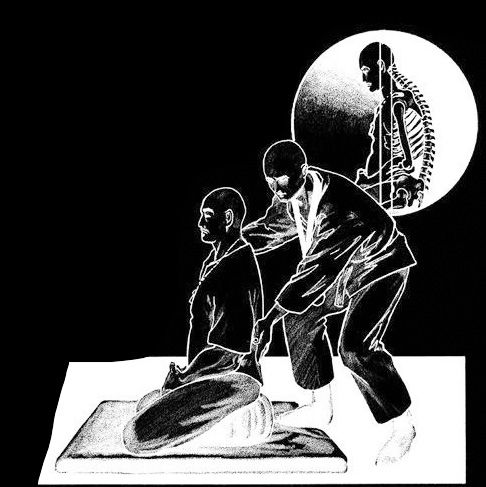
墩儿娘
末学是一个接触佛法刚一年的初学，末学想学的是念佛法门。末学想问一个问题，为何末学跪着出声音来念佛的时候，末学的脑袋一会儿就开始憋得慌，头顶有点发沉的感觉。这种感觉过一会儿突破以后就会产生种种意境，比如有时候末学觉得自己坐在莲花上开始转了，末学的肉体还跪在那里。末学真真睁眼看着的，自己确实升起来开始转了，那种转没有一点眩晕感，非常惬意舒适，也不影响末学听什么看什么。外界发生的一切末学都看得清楚明白，只是末学感觉自己是在半空中坐着莲花转的。这种感觉持续好一阵以后，末学清楚地感觉到，自己被慢慢地放下来，落到地上，不再转了。师父，末学的肉体一直跪在那里的，但是末学真的在空中转了很久，这是怎么回事啊师父？还有师父，有时候这种头顶憋的感觉突破以后，末学觉得另一种情形，就是末学的头仿佛变成了一个桶，就是末学的身体一直到天空都是一个圆柱体，末学的身体感觉不到了，就感觉完全融入这个强大的圆柱形气柱了，然后感觉这种气柱不断地有气流往上走、往上走，这种感觉很久才会消失。师父，末学不出声念佛只在心里念、心里听的时候不会有种种事发生，末学出声念一会儿就总出种种情况，这是怎么回事师父，请师父帮助末学，阿弥陀佛！
Taiguanglin
念经不要跪着念，不能双盘就单盘。
单盘的时候在屁股后面三分之一处垫垫子，这样能让脊椎挺起，比较舒服。你要专门念经，那就出声念；你要专门打坐那就不要出声，嘴动声带不振动。
跪着会让腿部血液循环受阻，心脏会增加血压，这样也会往大脑流入更多的血液，开始头胀，有可能会出现幻觉，不是好事。
如果你单盘坐着念经，还有那种殊胜的感应，那是天人来听经，通常还有异香。
还有一个很长的文章，总结起来就是求快。初学修行不能求境界——只求量，给自己定个修行的时间量。每天完成就可以了。别想着怎么快点入定，快点进入念佛三昧，这样只会给自己添加更多的烦恼。修行的境界也看因缘，还有消业的进度，修到一定程度就会出现业障——消了业又能进步一段。不要着急，就算不能入定，一辈子念佛也能往生。你越是放下，进步越快。
还有梦境，这也是一种信号，人人不一样。我以前精进的时候经常做上学的梦，梦里总是快要考试，可是我还有很多不会，弄得我很着急。醒来的时候还带着那种着急的情绪，起来一看，原来是梦，长舒一口气。从小学开始一直做到大学，黑暗的高中生活梦不知做了多久。如果长时间不修行，这种梦就会消失，我就知道自己懈怠了，应该更精进。后来随着修为的提高，我在梦里知道自己在做梦了，一梦到自己在教室里，就想NND，又来了，调戏一下女同学吧。后来梦也消失了，人也舒服了。
梦境人人不一样，有人说自己经常做吃饭的梦，修行懈怠的时候就不做了，修行精进的时候就做。有时候真的是佛菩萨开示，这种梦通常在凌晨快醒的时候做，而且醒来之后记得清清楚楚。
我也想如如不动呢，谁都想，继续努力吧！着急只会让自己烦恼而已。
无住生心金刚经
我现在双盘打坐，只能如意坐，最久是一小时十分钟，是极限了！平时也就半小时——感觉是在熬时间！为了感知时间，所以就背诵《金刚经》，这样做可以吗？
Taiguanglin
打坐的时候念经不要出声音。出声音气会往上涌，不能形成循环，腿会更疼。嘴动声带不动就可以了。
tiaotiaoqi
新人求解惑，本人已至中年对人生有一定体悟，多年接触佛法，作为世间法部分，与实际映衬，看世间百态，如拨云见月，反掌观纹，深为赞叹，视为宝典，依教奉行，受益匪浅。读经效果，不可思议，真实否？如品六，“读是经一遍……。百由旬内，无诸灾难”，即方圆四百公里均无灾难，如此说来，一国之内，只要四至五个僧人，处不同方位，志心读经，该国即无灾害？又如品十二，“合受重病者，寻即除愈”“服水既毕……即获聪明”，净空法师及大愿法师解释颇为牵强，难以令人信服。此障惑难以释怀，望同修悉心教我，勿以为憾，不胜感激。
Taiguanglin
读经效果看你的境界。文字妄想炽盛的人和四禅以上的人读经不是一个级别，四禅人念一次阿弥陀佛能抵一万个普通人念一万次阿弥陀佛，你无法理解读经的功德也是人之常情。等你修到那个程度，咒未念出，念头一动，周围群邪自行退散。
295066960
楼主师兄好，我想问一个问题。我现在每天读一遍《金刚经》，大概多长时间才能有一些不同寻常的事情出现？多谢楼主。南无阿弥陀佛！
Taiguanglin
念经不要求什么境界！就算看到殊胜的境界，那也是你信心不足，佛菩萨给你制造幻觉，让你增强信心而已，以色相、声音求如来不会有结果。
雨夜箫吟忆平生
师父，我打坐念《地藏经》时间长了，感觉脖子后面那个脊柱有点疼，是不是念经低头的原因？师父怎么办好？
Taiguanglin
把书本立在桌子上读，拿手抓着，就像小学生读课文一样，别平放在桌子上。
圆圆柔柔摘月光
因为是家庭主妇，所以时间不太够用。我是在一边干家务活的时候一边诵《地藏经》的。心不是太专一，而且，因为分神了，经常会跳到其他品，但是一会就能意识到自己诵错了，就会重新诵一遍正确的。想请问师父，这样子读经，可以吗？或者这么问吧，我随时随地都可以默念《地藏经》，但是一旦有事就打岔过去了，等忙过一阵再接着诵，这样断断续续的，可以吗？
Taiguanglin
念经断断续续没关系，贵在坚持。还要练呼吸，练到身体记住腹式呼吸，自己会做腹式呼吸为止。
众生未度不言休
请问师父，读完《地藏经》是否需要念“补阙真言”。“补阙真言”如何念？愿师父慈愍宣说！
圆圆柔柔摘月光
真晕。你请的经书，经的正文前后都有啊。一般读经之前要念“香赞”，然后是“净三业真言”，有时会分开，有“净口业”“净身业”“净意业”；这个真言完后有“安土地真言”，然后“普供养真言”，一般后边会加上一段“觉林菩萨偈”，然后就是“祈请文”，最后是“开经偈”，然后就是正文。正文完后，会有“地藏菩萨灭定业真言”。然后是“补阙真言”“补阙圆满真言”“七佛灭罪真言”，《往生净土神咒》《报父母恩情咒》，最后是大回向和小回向。补阙真言：南谟喝啰怛那，哆啰夜耶。佉啰佉啰。俱住俱住。摩啰摩啰。虎啰，吽。贺贺，苏怛拏，吽。泼抹拏，娑婆诃。您读《地藏经》之前，前后的这些真言不要缺，念时间长了，就背下来了。刚开始肯定是磕巴的。就那个“净三业真言”，我读了好久才能背下来的，觉得很绕口，还有《往生净土神咒》。加油吧！
墩儿娘
圆圆柔柔摘月光说得没错，这些都是要读的。“补阙圆满真言”，末学听说是这种作用，我们读经都有可能有读得不准确的地方，“补阙真言”应该就是忏悔这一过失，使之趋近圆满。读久了就熟练了，再久了自己不用加意识，它自己就可以在那里背了，师兄多加油！阿弥陀佛！
Taiguanglin
出家人通常念第二种，你随便选，网上有发音注音。我们念长的那个。
不孝忤逆女
请问楼主，读《地藏经》时，快读还是慢读？还是快慢都没关系？快读会不会有不敬的嫌疑？不记得自己是谁@ 不孝忤逆女：读清楚最好，九十分钟最佳。因为鬼道众生要听声音的，念太快听不清人家就不听了呢。人家还要看心光的，你心里是利他的想法就是清净白光，自私的想法就是烟雾笼罩。
浮生有涯
师父好，师父说出声念佛诵经太过则伤身，我的体质目前完整读一遍《地藏经》有点透支，有点头晕脑胀。我想请教师父，如果放录音自己认真听，其功德是否跟亲口诵读一样？请师父开示，南无阿弥陀佛！
Taiguanglin
自己念更好！你的体力也太差了吧，是女孩子吗？坚持念就好了。和尚们礼佛，一次唱诵两个小时，一开始都很累，练几个月就好了。不着急！
自在叶儿飞
已戒肉、戒淫( 师父说过“肉都戒不了，还修什么禅定”一直激励着我，当然欲望还不能泯灭)。开始磕头，努力逐步瘦身。再求教师父，师父说要天天念经、念咒，但如果偶尔因故中断，或者没读完整，有障碍吗？感恩师父辛苦开示，顶礼师父善知识！
Taiguanglin
念经、念咒不一定要读完，看的是时间。时间越长越好，没时间读就中断，下次读的时候接着读就行。
zhugewuyue
师父，像我这种上班一天十来个小时坐电脑前面，经常思考，而且大量聊天的人。晚上修炼完以后就平躺床上什么也不想，后脖子神经还能恢复么？另外我最近打坐，总感觉脑袋瓜子里怪怪的，有时候读经也会出现。感觉后脑有种睡前的麻痒昏沉感。这是活性氧么？
Taiguanglin
可以恢复！多练练，多运动脖子。睡前的昏沉感是缺氧，一开始都有这样那样的感觉；但没修到半年以上，这种感觉都是暂时的，也不会对人体有什么影响，不用介意！
圆圆柔柔摘月光@ruofeilulu
刚才使用师父教的方法，果然抄经好过很多。你也试试。我下边这么垫的( 见附图：图7)：
ruofeilulu
谢谢圆圆柔柔摘月光，我今天也试了。稍微强一点(见附图：图8)。可能因为我的脖子已经酸太久了。你和我抄的都是《僧伽吒经》啊，呵呵。
圆圆柔柔摘月光
呵呵，我最近在抄《僧伽吒经》。脖子酸痛啊，手臂也是，不过用这个方法好了很多。
圆圆柔柔摘月光
很重要的一个问题，刚想起来。抄写过很多经，自己也写过很多经咒。当初为了背下《楞严咒》，抄写过很多。请问师父，如何处理这些带有经咒的纸？抄写过的经书，必须要送到寺庙里去吗？可是有的时候自己在本子上抄写的，或者在纸条上写下的为了方便背诵的咒，送到寺庙去好吗？还有，我为了忏悔而抄写的《地藏经》，有很多忏悔的话，是要烧掉吗？这个问题，有一些迷信的思想在里边，希望师父能给指导。也不是关于实修的问题，师父谅解，因为困扰过很长时间了。
Taiguanglin
抄写经书的本子在佛前烧掉就可以了。
炎明王
刚才去印光大师贴吧看了下，惊觉原来目前中国佛教界对于念佛的发音有很大的争论，就是“阿弥陀佛”的“阿”字，有说念“啊”，有说念“额”，有说念“哦”，师父怎么看？
Taiguanglin
念“额”比较好，比念“啊”和“喔”消耗的能量少，念起来又方便。还有不用管这些发音，发音不一样念起来都有功德，都有殊胜的感应。韩国人念a mi ta bul，也照样能修行。
不能拆除
师父你好，关于念佛我有一问题请教。以前在网上看到了一种叫金刚念，就是嘴巴不动，用腹式气念，说是对打通气脉有帮助。这样就又出声念了，而且我念声音还比较大。我念了一段时间了，觉得很好。每次念完能感觉人比较精神和清醒，肚子也特别饿，这种金刚念好吗？真的对打通气脉有帮助吗？你说的是默念最好，可是我默念的时候，妄念总是特别多和粗；金刚念然后出声念，我反而能更好地把注意力集中在咒上面。用这咒语去驱赶妄念，我是坚持金刚念好，还是改默念好？谢谢！
Taiguanglin
出声念比较好，但每天念的时间不要太长，两到三个小时就差不多了，对打通经脉有帮助。默念最好，但是妄想太多，那就先出声念。
awalee
请问楼主师父，今天听到有人说，不念佛持咒，打坐很容易魔扰。这个该如何避免啊？打坐的时默念阿弥陀佛圣号可以吗？
295066960
关于念佛，楼主有什么好建议？南无阿弥陀佛！
Taiguanglin
念佛念到脑子一片空白、唯有佛号时，开始转入参思情。
ziping80
大师你好，我在默念佛号时体会到有一个在念佛，旁边有个妄想时不时跑出来，但它不怎么影响在念佛的这个。然后还有一个可清楚地觉察到前面这两个的。还有极少时候，很隐约地觉得在这第三个之后还有一个“知”，望大师开示我的这个情况。大师功德无量！南无阿弥陀佛！
Taiguanglin
念佛的是第六识执着中的意根，观察自己念佛的是第七识分别心，后面还有第八识妄想，一般人是观察不到八识的。
minspark
师父可不可以戒斗的部分再详细解说一下？本来我磕头忏悔自己不孝顺父母，晚上做梦就梦到跟父母吵得好激烈，什么道理都抛到脑后去了。没办法，只好又忏悔。嗔心一来，只靠一句阿弥陀佛可以吗？
Taiguanglin
念佛就可以了，习气不是一天两天形成的，不可能说灭就灭，只能靠长时间的修行来一点一点灭。加油！
不能拆除
师父你好！打坐的时候经常会出现这样一种状态，就是第七识能一直念着佛号( 以前是观鼻息，看师父的帖换成念佛)，前面六识处在一种类似于我们平常说的愣住的状态，就是能知道旁边声音和看到前面东西，但不知道声音内容和对看到的东西很细微，这样是不是错了？是昏沉吗？
Taiguanglin
念佛是第六识，第七识是知道自己在念佛的意识。要清楚地知道自己在干什么，声音要知道，衣服和皮肤摩擦的感觉也要知道，昏沉就是半睡半醒的。
toton126
老师既然有顿悟之法，那我可不可以一下子切入参思情，每时每刻、每分每秒都想念阿弥陀佛？自己知道，自己不是极乐世界的人。不知道佛祖能不能感应到呢？徜若衣食往行都想着阿弥陀佛的话，到了什么样的境界，才能算成功？还有眼根灭是什么情况？
Taiguanglin
任何人都可以忆念阿弥陀佛，都可以往生。没有什么成功的标准。一直忆念，一心不乱最好。禅定中的境界自己体会，不谈。
雨夜箫吟忆平生
师父，修行到什么程度才能不起嗔念呢？现在某些境界来了还是会起嗔心，动了嗔念又很懊悔，但是境界一来又控制不住。很苦恼，师父！暖阳1 飞舞：师父，我对于佛号提不起来，去年报的共修六百万佛号，现在才一两万。念佛号看到阿弥陀佛我害怕，但反思自己我也没有毁谤过。唯一不妥就是，最开始觉得哪个佛也没有观世音菩萨了不起，出过这样的比较。但是念佛号，我看阿弥陀佛觉得我做坏事了一样害怕。
Taiguanglin
你念观音菩萨就可以了，看《观世音菩萨普门品》。
星辰残月变
往生西方好像很难啊？不是说死前十声阿弥陀佛圣号即可往生吗？所以只要多修善福、持五戒、修十善，保证死前神识清明就可以了吗？
阿啦顶身等
说起来简单做起来难！所谓平时修行十分，梦中一分；梦中十分，临死一分。星辰残月变@ 阿啦顶身等：什么意思啊？阿啦顶身等@ 星辰残月变：意思就是，你平时都已经不撸管了，但还是会不由自主地做春梦。你每天在梦里念经了，到死的最后一刻你想的是我的儿子该怎么安排、孙子该怎么办，忘了要念佛号。很多人念了一辈子佛号，到死那一刻也不一定能想得起来要念，想的还是俗世的事情。
Taiguanglin
不可能！《阿弥陀经》里都说了，要连续七天一心不乱地念佛才可以。
不孝忤逆女
有人问他念佛时，左肩不由自主地颤动，像冷颤一样，是什么原因？
Taiguanglin
念佛的时候左肩痛，那是念佛时牵动了气。那个地方的穴位阻塞，气不顺就那样。如果你打坐的话，那个地方会疼得厉害，但是不打通就会一直那样，还是练双盘吧！
欲安欲静
楼主慈悲，我是学道的，我们道教修炼需要师父口诀，没有口诀修不了，不知道佛教有口诀这么一说吗？
Taiguanglin
修佛没有口诀，谁都可以修。
ericwangc
每天看师父的帖子就是每日功课之一了。打坐左右脚单盘都行，双盘还是盘不来，准备开始采用磕头法。还有，我最近一直在背诵《金刚经》，背了一半了。打坐也背，总是背到第十分左右就开始来妄想，然后停下来默念《大悲咒》第一句。惭愧，只记牢了第一句。又清净了。但过不了多久，心中会起来无名焦躁；盘的腿会一阵用力就痛，然后自己意念让放松下来；然后心中焦躁越来越大，扛不住焦躁就睁眼看看，每次都是三十分钟。然后换个脚单盘，妄想就很多，也就只能再坚持十到二十分钟。睡觉一直无梦，有遗精现象但无性梦和快感，只是醒过来湿湿的。我已经守身有一百多天了，自己觉得没有动淫念，怎么还会这样？
Taiguanglin
你先按照上面的动作来练，再磕头。一开始不要过度强迫自己，这样只会让自己更烦恼。
每天定个时间，早晨起来打坐三十分钟，睡前三十分钟。主要还得念咒、念经来消灭文字妄想，还要消灭各种痛苦的情绪。那种焦躁也都是苦情，一开始都那样，坐到一定程度就会开始烦躁胸闷，实在坚持不了就起来走动走动，该干嘛干嘛，别一根筋跟自己过不去。一般不念个三年咒，没把脑子里的妄想和各种不好的情绪消灭一半以上是很难打坐的。不要着急！
至于遗精，你都不能结双盘，没能打通全身经脉，更不可能做到炼精化气，那精液满了自然会流出来了——这个和有没有淫欲无关。身体自己会制造精液，没有淫欲也会制造，关键是怎么把它转换成无形的气，再存到体内。
如果你是已婚的居士，那你也别因此冷落了妻子。佛法是让人走向幸福，最后走向解脱觉悟的，不能因为学佛给别人带来烦恼。
果明通超
顶礼师父！恭请师父指导。另有两个问题：1、单盘或双盘时脚要放在腿上的哪个位置最好？2、为什么心里老是会翻腾出一些过去的人和事？是让我反复练习法门用的吗？周学习略记( 二) 2014-7-6
磕头
增加了磕头个数，早上一百零八个后做早课，晚上一百零八个后做晚课。磕头时，合掌念佛，磕下去念佛，起来收阴提肛念佛，合掌心记磕头数，念佛。有时会去想其他事，但不影响心记数。加快念佛速度代替想其他的事。感觉身体成了按程序进行的机器。今天星期日，网购瑜伽垫到了，开始学习磕大头。磕了十个就去对照师父有关磕大头的开示，纠正动作，把握要领。领会学习如下：
磕下去特别注意三点
1、膝盖着在垫子上时及以前，上身保持直直的；2、双手在垫子上向前伸一段距离后，中间会停一下，突然撤力，让胸和腹部自己跌落到垫子上；3、双手继续向前完全伸展，翻掌并额头着垫。起来时，按照师父开示的方法，可以锻炼三力：1、双臂力( 用双臂支起身体)；2、腰力( 用腰力收回身体成跪坐姿势并合掌)；3、腿力( 用腿力起来，不用双手着力)。晚上十点后开始学习磕大头，不小心磕到了十一点过了。没有记数，不累，汗也出不多。磕完了冲热水澡( 这不但可以除汗臭，还可以缓解明天可能会有的肌肉酸痛)。没念《地藏经》，学唱了一段“叩钟偈”，用腹式呼吸。以前学唱老是哭，现在比较平静。感觉师父开示的每一点都有深义，照着做，可以少受苦，少走弯路。
呼吸
早上起床后，先站着练腹式呼吸，再做早课，做早课出声念，注意用腹式呼吸。下午有时间会站着专门练一会，其它时间有时会想起用腹式呼吸。有时不知用的是什么呼吸，如看书、抄经、开车、做家务、聊天等时间。
打坐
早上起床前练青蛙趴，晚上临睡前练青跬趴。或早或晚至少练一次半个小时的双脚合十，然后练单盘。这两天单盘时右腿自已掉下去很多，翘得没有以前高了。双脚合十时，额头基本能着到床。
身心反应
身体没有特别的反应，心里却时常翻腾起本来已暂忘的某些事情和人，这些事一翻腾起来，心里或喜或恨，就跟着起来了。今天晚上抄经时，竟然都如此，抄经也清清楚楚，翻腾起来的人和事也清清楚楚。今天抄经时一翻腾起那些人和事时，我就去想弥陀念念救度大家，自己被弥陀救度的事。翻腾一次，我就想一次弥陀救度的事，翻腾得越厉害，我就想弥陀救度的事越厉害。这样可行？恭请师父慈悲开示。
Taiguanglin
很好啊，你不把妄想翻出来怎么消灭它们？平时不怎么想，一修行妄想就来——一开始都这样。不要刻意地控制自己不去想，来了就来了。实在不能继续修行，那就干脆坐着打妄想，或者一边散步一边打妄想，从东想到西，从西想到东，一直想到你能记起的最小时候的事情，想累了就回来继续修行。
路过的小胡子
师父，为什么我心境退退转转，上上下下。因为老是想一个问题，试图用佛法来解释；当无法说服自己的时候，就生了退转心；想通了之后，又觉得自己愚昧无知——老这样上上下下。问师父有何良策？
Taiguanglin
都这样修过来的！最好的方法就是不要想，放空脑子；可是又不能不想，那就一边念佛一边想。想就是烦恼，不要解释什么；接受就完了，不想就轻松了。
Taiguanglin
多读佛经，多念咒，多磕头，注意力就上来了。
不孝忤逆女
读经时或者看到佛和弟子的故事时，总是感觉感动、汗毛激竖、泪欲盈眶。这样情况多了是不是悲魔入心了？
圆圆柔柔摘月光
我觉得不是，只是一个过程而已。以前的时候，每次我看到宣化上人这四个字，我都忍不住流泪。
Taiguanglin
佛经里说，读经时情绪激动会流泪的人都是前世与佛结缘的人——这不是什么坏事！所谓的悲魔，其实是藏在自己意识内悲伤的情绪发作出来的——这是坐禅触动了习气种子的缘故。要说外魔入侵，你现在连欲界禅定都不能进，外魔对你没兴趣。不用胡思乱想，继续修行就可以了。
第06 章 消业(29)
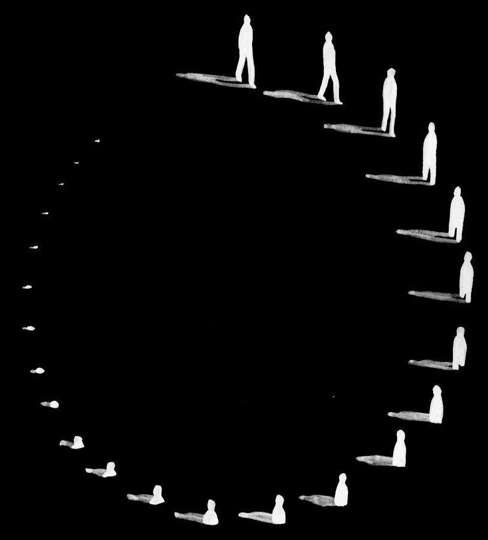
星辰残月变
师父，是否修行禅定前需要先忏悔宿世业障？好像说没有忏悔不能修禅定，不然一定会入魔啊？
Taiguanglin
忏悔是必须的。
忏悔分理忏、事忏两种。理指法，事指业。
理忏就是忏悔自己不懂佛法真理，忏悔的对象是佛菩萨和自己。忏悔自己无始以来被无明所覆，造无量业，轮回六趣。
事忏是针对每一项所造的恶业来进行针对性的忏悔。把你能想起来的所有恶业，这辈子干的一切坏事，一一忏悔。你杀过虫子，那就向虫子忏悔，回向修行功德，求得原谅。你向某人恶语相向，让其伤心，那就对他忏悔，最好找到当事人，认错道歉，求他原谅。如此这般把一件一件事情，全部忏悔。
zhoujianbang12
师父，这一生如果做过很多善事也做过很多恶事，那么死后会去哪里？是善果先成熟还是恶果先成熟？
Taiguanglin
通常是善果先来，恶果后来。
圆圆柔柔摘月光
修行到一定阶段的时候，会不会果报来得就很迅速？这样描述，可能有点不清晰。我举个例子来说吧，就拿诵《地藏经》来说，诵到一百部的时候，或许对境起心，骂人的时候，隔一会就会有个小小的报应；比如诵到三百部的时候，迷恋物质了，或者注重享受了，是不是也会受一些业报？比如你非常在乎自己的容颜、面容，当你修行的时候走上了岔路，开始迷恋养颜，或者化妆来保持自己的容颜，会不会就受一些业报？我吃素到一年半的时候，也就是去年八月左右开始，身上开始起荨麻疹。不要说是天气原因，也不要说是体质原因，为什么以前的天气就没起？我不知道是什么原因，也是因为这样，在家人的强烈反对下，断断续续地不再吃素了。这段时间，因为自己迷恋外相，导致脸上过敏，半毁容状态。这些都是因为修行的动机不纯，有了业报吗？请师父开示。阿弥陀佛！
Taiguanglin
你说得对，报应会来得越来越快——我也深有体会！说几句别人难听的话，自己难受好几天。至于业报，你可以看妙法老和尚的因果故事，有两本书，网上能找到。单是爱美丽没有业报，要是凭借美貌，鄙视丑陋之人，那就有报应。
语言能力也好，其他什么专业能力也好，第一个看的是前世积累。前世干过的事就容易上手，学起来非常快，别人眼里就是某方面有天赋了，我很多前世都在中国。修为和学习能力有密切关系，修为越高，脑子里的妄想越少，记忆力、注意力都会相应地提高，学习起来更快。
有“发菩提心真言”，网上找看看，让人一下子发菩提心的确不容易，那就退而求其次，发慈悲心，从身边开始做起，拔苦予乐。
守五戒和宣化上人说的那些只是守护自己不造恶业。咱要修十善，先学会微笑，学会称赞，见人微笑打招呼，多赞美几句，遇到悲伤的人就多安慰几句，遇到受挫的人多鼓励几句。每天给自己定个数，比如一天我要称赞三个人，这也是大布施，每天坚持说好话，不说坏话。还要每个月拿出一部分收入放生布施，捐给慈善机构吧，感觉中国的慈善机构都不靠谱，绯闻太多，那就多放生吧。然后再用身体帮助别人，去养老院当一天义工什么的。这种布施当中看到别人苦，也会坚定自己的出离心，帮助人的过程中也会感受到快乐。
星辰残月变
冤亲债主是怎么来讨债的？人死了不是直接下地狱受报吗？为什么可以出离地狱？他们是不分白天黑夜都跟在你身边么？什么样子啊？
Taiguanglin
地狱的不能出来，来讨债的都是鬼道的。来的话，就附体在你体内。
墩儿娘
末学的父亲从小有癫痫的病根，现在六十岁，靠药物控制，偶尔犯病，犯病时候特别痛苦的表情，很像动物临死前的难受样子。以前末学替父亲读《地藏经》，现在父亲自己读；读了两个多月了，每天早饭后读。父亲最近经常口干想吐，有时候去呕几阵，他每天坚持读、放生，这种呕吐让母亲担心，末学想请师父开示。
Taiguanglin
你父亲应该是冤亲债主附体。翻开眼皮看看，是不是有黑色血丝冲向瞳孔。不过没关系，他自己念《地藏经》再好不过了，呕吐是那些冤亲债主在挣扎的反应——它们离开的时候会让人上吐下泻；吐出来的和拉出来的都不正常，又黑又臭，气味异常。走之前还会严重地发作一次，熬过去就可以了！
ccav777777
师兄，我有个疑惑，想请教您。你说在禅定过程中，曾经遇到三个鬼魅试图吸精气，后来遇到佛菩萨加持才度过。这三个鬼魅在你已经达到我们凡人很高境界的情况下，并且还在寺院里这种鬼精不敢入的地方，怎么才能找你并附着在你身上？我昨晚睡觉时迷迷糊糊间，感觉有个男人( 鬼) 趴在我身后试图吸我的精气，可是我家供了家神的呀( 财神、门神)。我起来第一件事就是上网，查是在什么情况下鬼能吸人精气。得到结论有二：一、内心发淫邪时；二、彼此有渊源时。现在我想请教师兄，这种鬼魅到底是什么？我们凡人遇到的和您这种出家人遇到的是一种吗？如何化解？
Taiguanglin
有前世因缘、业力牵引的话，你就算出家躲在大的寺院里也没用，照样会来欺负你的。所以最好要先背熟一个咒语，用来对付这种外邪入侵的情况。还有发心要慈悲，你不能恨他们，你恨他们，他们就更来劲儿了。
所有的正法修行都在佛菩萨的加持下进行，所以要诚心诚意皈依佛菩萨。这不是叫你去庙里领个皈依证就完事了，是真心皈依，这样出现障碍的时候能得到佛菩萨的加持快速突破。佛陀苦修的时候也遇到过这种情形，那是他化自在天的魔王、魔女下来捣乱，一般在欲界禅定里快要灭除淫欲的时候会出现这种情况。
一般人修行，那肯定有淫欲的，会感召一些魅鬼来吸精气也很正常——这都是修行过程中必须跨过去的一个坎——所以前面说到了《秽迹金刚咒》。
也可以把写有《楞严咒》或者《秽迹金刚咒》的小册子放在枕头底下睡觉，有一定作用。还要加强身体锻炼，身体好，阳气足，鬼魅就不容易近身了。身体越虚越容易招邪，特别是女性月经的时候。还有，吃肉更容易招邪！肉里充满了动物的怨气，这些很容易感召外邪入侵，就算没有外邪入侵，这些怨气也会变成幻觉来袭扰你——所以戒肉是必须的！再来念咒。每天坚持念一个小时，什么咒都可以。念熟了，就算在睡梦间有东西靠近，你也会自己念起来。还是不放心就把写有《楞严咒》的册子放枕头底下睡觉，还要运动，等等这些办法都一起来吧。
如果那个男鬼天天来，那就说明和你有前世因缘，是讨债鬼来讨债了。那就做功德回向给他了，按照前面说的还债消业的方法来。
愿佛菩萨保佑你。
無法無天dlf
师父有提到《地藏经》消业的问题。我学打坐两个月时没看任何佛经，只在百度学打坐，之后用了一两天上班的时间背会了《心经》，用了三天的上班时间背会了《大悲咒》。背会《大悲咒》了，见到再香的肉也恶心，于是只能断肉了。后来，母亲身体不断生病，就读《地藏经》为母亲消业，读了一个月，每天三遍。后来天天鬼压床，只要一睡觉就压我，就连爬桌上睡也压我。以前胆大包天，现在把我压成了胆小鬼。夜晚不敢独处，而且压我时连嘴也堵住了——连阿弥陀佛也念不出来。但只要念出来，就不压我了。反正把我压怕了，于是再也没持《地藏经》了。这几天心里又痒痒了，想为母亲继续持《地藏经》，我是隔一天一遍《地藏经》。现在主要持《楞严咒》，花了两个星期的夜班时间背会了《楞严咒》，现在有事没事心里就默背《楞严咒》。请师父开示，弟子三叩头，不虚言，阿弥陀佛！
回贴也要讲关系
层主师兄会背《楞严咒》，而且只用了两周，我要向你学习啊！随喜！
回贴也要讲关系@Taiguanglin
师父，弟子记忆力很不好，自觉属于健忘，应该怎么解决好呢？弟子叩问。
要得_
无法，你太牛了，背经咒怎么这样快，我做不到呢？
Taiguanglin
你还是继续念《地藏经》吧！那个小鬼压你，也不能把你怎么样。你不要起嗔恨心，也别怕。你就心里想，如果我前世得罪了你，我忏悔，我向你认错，我念《地藏经》的功德你也有一份。如果我成道了，定来度你。如果他愿意跟你交流，那就最好。慈悲无敌人！他要是向你提出什么要求，不要轻易答应，看你能不能做到再答应，有些做不到的事情答应了，那就惹上麻烦了。
Taiguanglin
作为已婚女性，尽夫妻间的义务无可厚非。我们说恒顺众生，这也是消业。再说女人是被动的，应该没啥大问题吧。还有，厌恶做爱和喜欢做爱是一样的，都是执着，所以我不建议在家人修白骨观、不净观之类的。修到一定程度看异性就自己会联想起不干净的东西，这不是我们修行的目的。
至于吃肉，你给家人做，自己再另吃——不要给别人添堵。信佛修行是很好的事，可学佛的人往往以修行的名义给别人添加烦恼，这就不是慈悲心了！让别人也有了攻击佛教的理由——让人造业下三途却是因为学佛的人，这个不是智慧之举。
堕胎的问题，通常堕胎三次基本就是地狱；不过，忏悔做功德回向，求得孩子们原谅，让他们放下仇恨心去投胎，你就可以往生了！他们走之前会跟你打招呼的，说不定你要生一场病或者出点事故什么的。诚意到了，菩萨出面调停，送孩子们去投胎就结束了。不过这个杀生的业不灭，等往生极乐，在那里再学习和修行，境界高了再回来还报就可以了。
死亡只是肉体的泯灭，( 只不过是) 你放下了身体！做爱就是布施身体，死亡就是解脱，又有何妨。你现在的修行很好，以后会教呼吸法，一起练，打通经脉更快。
不孝忤逆女
有人问他为什么一帮人念《往生咒》就会昏倒？
Taiguanglin
念咒、念经的时候会晕倒是因为有冤亲债主附体，他不希望你接触佛法，这样妨碍他讨债。要忏悔，要真诚地忏悔，再放生回向，还要每天念《地藏经》 。念之前多念地藏菩萨，求地藏菩萨加持，否则还会头痛。还有，不能在夜里念——冤亲债主都是阴鬼，晚上更来精神；白天念，再回向给他。一般人不用管白天黑夜。
寒山玉屏
阿弥陀佛！谢谢师父开导！我还有个疑问想请您开示。在我的人生中，总有一些人在我困惑时给我解答，却又转眼消失。但是我本人又三心二意，很懒散，不肯好好实修，老是断断续续地，念佛、念咒就哈欠不停，犯困，这是业障吗？我本人意志不坚定，老是不肯用心去修行，持之以恒，又懒又散乱，今天看这个法门好，明天看那个法门好。该怎么让心定下来啊？2011 暖暖的初夏：顶礼师父，师父吉祥安泰！弟子请问：家庭违缘多，定课的时候常会有杂七杂八的事情冒出来，主要是小孩生病或者醒了要抱。要怎样才能尽快减少违缘呢？在家人修行不易，感恩师父开帖慈悲开示。
Taiguanglin
都是业障！不要躲。你要修行，那业障必须消完。只要有心修行就可以了，每天凌晨和睡前是最好的时间段，努力！
阿啦顶身等
还有，师父，您说中阴身的话，会有冤亲债主变成亲人勾引下三途，那也会变幻成佛菩萨害我们吗？因为我曾经听人说，若有人喜欢佛菩萨，有些冤亲债主或者妖魔会幻化成佛菩萨来骗人，是真的吗？若是，那该怎么办呢？前几年我就是听了这样的话，后来梦到南海观音，刚开始好开心。马上想起那人说的有些妖魔会幻化成我最喜爱的佛菩萨害人，又想到一些打坐的人说在定中也会看到佛菩萨，但不要当回事。一想到这些，我梦中就想你是妖怪，我不理你。后来第二天我就开始头痛得打滚撞墙，从来没这么头痛过——我知道佛菩萨不会为这个惩罚我，但那又是咋回事啊？
Taiguanglin
先背熟一个咒语用来防身吧！死后念咒、念佛也管用，那些妖魔鬼怪不能变成佛菩萨形象来勾引你。
不孝忤逆女
你好楼主，今天我出了远门。我回来后，我妈告诉我她打死了一条蛇。我是有点害怕，因为有关蛇的传说就很多，而且我最近真是懈怠得要死。我该怎么做呢？因为我妈已经好多病了。
Taiguanglin
只能叫她忏悔，念《地藏经》回向，放生回向了。她不愿意，那你帮着做也行，尽人事吧！也别太放在心上，谁没点杀业，还不照样这么活着，该来的都会来，来了也别怕。修行的目的不是躲灾，而是用大无畏心来承受果报，修得越好，承受能力越强。连死都不怕的人，还有啥可担心的呢？尽人事吧！
hongfu_qitian
你好！想请教你一个问题。如何看待财物失窃这种遭遇？是否可以这样理解：在以前某一世本人曾经偷过现在这个盗贼的财物；又或是反过来，在将来某一世，本人也会盗走现在这个盗贼的财物，从而才能结清本人和现在这个盗贼之间的业帐？
chanshihua
真的很感恩师兄的法布施。还有一事，一直疑惑，每次去放生，当把鱼儿放到江里，大伙就往天上看；有些人看到了莲花，我什么都没看到过；那个老师就说看不到的赶紧跪下忏悔。我觉得看见与看不见跟修为关系不大，但有时又疑惑，那些莲花是佛菩萨表的法吗？给人信心？为什么有的人能见着，有的人见不到？
Taiguanglin
至于那个什么天上莲花，你别介意。按照他们的说法，你看到了说明你罪业少，你看不到说明你前世罪业多——就应该多忏悔。不用管这些说法，你好好修行就是。
zhugewuyue
师父，今天晚上打坐状态特别好。是不是因为今天去放生了的原因？记得好像前几次放生后晚上打坐状态也特别好。两者有关系么？
Taiguanglin
有关系，善业能激起良好的情绪。
不孝忤逆女
有人问放生一车一车的泥鳅不破坏生态环境吗？连人都计划生育，放生一点缺点都没有吗？问许多修行门派流传下来，为什么很少有系统的相关书籍，特别是白话版的？
Taiguanglin
你管那么多干什么？向来都是人满为患，从来没听说过泥鳅满为患。你放生是你的功德，泥鳅可是很感谢你的。没有出家的人很难接触里边的书，外边流通的都是很普通的书。每个修行门派都有自己的相关书籍，就是不对外开放而已。大部分实修的经验对初学未必有帮助，对外只传最简单的人天福德法，还有念佛法门等。
阿啦顶身等
师父，都说有修行的人算命是算不准的，那我们这些正在学习的人，算有修行的人不？怎么样才算有修行嘞？
Taiguanglin
你是修行人！实修超过三年，命运或多或少都会往好的方向改变。
观兰法
说实际的，自己修行的根性太劣，可以说是愚顽不化。还是为我这样根性的人提个问题吧，念《地藏经》里种种地狱大苦，心生种种恐怖，把这些感受种在八识田里，于修行有什么关系？
hy2hx
让你生起出离心。话说佛祖就带过他的弟弟去地狱，弟弟看了地狱立马精进修行了。
观兰法
我的意思是，这些种种怖畏恐惧心理也一样种在阿赖耶识里，到将来某些时刻总有种子翻腾时，这么多信息总要给予处理。如果在明心见性后当然不怕了，万法平等了。但有没有可能在没明心见性前，这些怖畏心理总是不合时宜地来给你捣乱呢？hy2hx@ 观兰法：你都知道了，我想应该就不会怕了。最怕的是突然有个人半夜三更突然冒出来，那才会吓死你，那才会让你产生出怖畏心理吧！在冒出地狱的念头或画面的时候，师父不是说了嘛，不用鸟它，继续念佛。美女、恶魔、佛祖都一样，遇鬼杀鬼、遇佛杀佛，害怕个毛。所以师兄应该不用担心这些吧！
观兰法
我还是自私点，为了让老师看得见，把这个问题回复放这里。我的意思是，这些种种怖畏恐惧心理也一样种在阿赖耶识里，到将来某些时刻总有种子翻腾时，这么多信息总要给予处理。如果在明心见性后当然不怕了，万法平等了。但有没有可能在没明心见性前，这些怖畏心理总是不合时宜地来给你捣乱呢？我知道有些人就是因为看《地藏经》里那些地狱大苦，才有些抵触心理，不愿意读《地藏经》的。
Taiguanglin
你既然这么执着地追求真相，那我也直接告诉你：佛陀说了，凡是你看到的一切景象，听到的一切声音——不管是现实还是在梦中，只要你对其产生情绪波动——那样的事情就与你有缘。当因缘成熟时，你就会遭遇那样的事情。你读《地藏经》里地狱景象就心生恐惧，说明你与地狱有缘，当因缘成熟时，你会下地狱。所以说，现在不是你担心那些读经的记忆出来捣乱的时候，而是赶紧想办法在下地狱之前消除地狱报。
圆圆柔柔摘月光
为什么你会恐惧呢？我读到那里的时候，心里是痛苦的、不舍的，尤其是担心我爱的人，特别是父母。我怀着的是假如读经真有功德那就都给这些地狱里的人，帮助他们脱离苦海。
观兰法
对于那些希冀红尘浊福享受的人，有什么有效的棒喝？为什么心里对美色总是放不下？对美色一点抵抗力都没有。明知道这是造物主有意给这个身体设置的机关，但就是身不由己。
Taiguanglin
你还是先念《地藏经》吧，每天一遍以上，然后回向。如果出现头痛恶心、病情加重等现象，那是冤亲债主妨碍你修行，不要恨他们，诚心忏悔，求得原谅。念经前请地藏菩萨加持，心中默念地藏菩萨，然后想你的需要就可以了，有空就念“地藏菩萨灭定业真言”。
后面还有呼吸法，一起练，站着练、躺着练都行，呼吸法练好了可以快速治病。就怕这个债主不肯轻易离开！尽人事吧，不要放弃。还有，有条件的话多放生、多印经送人，把功德回向给债主。晚期癌症的人都能治好，有啥不可以的？只怕你不肯下功夫而已。
不孝忤逆女
哦，好诶！若我堕了三途，楼主你千万别把我落下，要赶来救我！合十，南无阿弥陀佛！
Taiguanglin
你都干了什么缺德事，还怕堕入三途呢？直接用大字贴上来让所有人看，这叫大众忏悔。呵呵！
不孝忤逆女
很多缺德事。反正你发了愿。我会好好修行。不足的，你到时救我。
Taiguanglin
朝闻道，夕死可矣，从现在开始不再犯就行了。尽人事嘛，会尽量帮你的！如果去见了阎王，他要虐待你，那先报我名字，管用！
第07 章 五辛、烟酒肉(33)
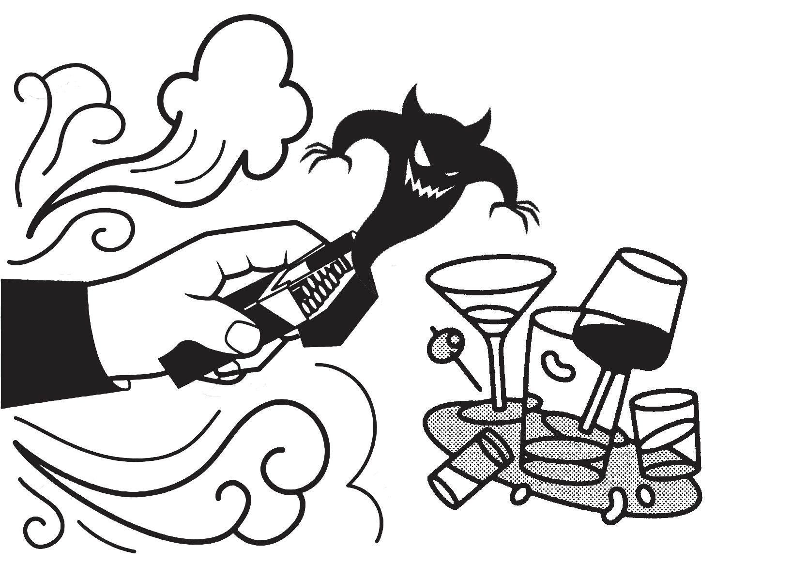
Taiguanglin
烟里的毒素在血液里堆积，血液不干净，头脑也会昏昏沉沉，而且烟毒上涌，百会穴很难冲开，膻中穴也是。抽烟基本和修行无缘了！到死的时候，你要想升天界，那意识要从百会穴出来才行，可是那里会形成烟障，从那里出不来，那顶多轮回到人间了！
hongfu_qitian
你好！想请教你一个问题。你在前面似乎说过吸烟的人基本与修行无缘了，这种说法在本人看来，应该算是给想修行的烟民们判了死缓。希望你可以重新从轻发落，改判有期徒刑或是其他什么的。
supid128
有一点不明白，楼主师兄一直说戒欲之重要，比如吃饭里面的大蒜、葱、香菜，还有喝酒，这些也要戒吗？真修行，肯定得戒的；抽烟嘛，为了健康得戒之，为了修行解脱道，那更得戒。抽烟是习气，也是执一种表相？
Taiguanglin
五辛生食增加嗔恚心，熟食增加淫欲，而且引来鬼道众生亲近你，天人和护法善神躲着你。对于初学感觉不到有什么大影响，但是进入禅定开始，你时常会被鬼道众生骚扰，被吓出定，这样就不好玩了，所以尽量不吃。
喝酒不醉就好，但是喝完打坐肯定进不了状态，酒精会随着你的血液流淌全身，进入大脑，头就会痛得厉害；特别是已经修到欲界禅定以上的人，一喝酒头痛得厉害。我试过的，还不是高度酒，一般米酒，估计和啤酒差不多的度数，就这喝一杯就开始头痛。
抽烟上面说了。
自在叶儿飞
已戒肉、戒淫( 师父说过“肉都戒不了，还修什么禅定”一直激励着我，当然欲望还不能泯灭)。开始磕头，努力逐步瘦身。再求教师父，修行必须要忌葱蒜五辛吗？感恩师父辛苦开示，顶礼师父善知识！
Taiguanglin
戒不戒五辛，对初学没有太大的影响。如果你可以入定了，那就应该戒了。吃五辛的人周围时常有饿鬼围绕，定中看到饿鬼会被吓出定。
星辰残月变
师父，请问我们是否可以喝啤酒啊？我自己可以不喝，但是如果去叔叔家拜访，一定会拉着我喝，还有过年时在家也是。是否需要坚持持戒啊？
路过的小胡子
我们初学建议强烈持戒，等慢慢养成习惯不喝酒了，那就不用强求了。但是如果去叔叔家硬要喝，不喝拉脸这种那你就喝嘛。回贴也要讲关系@ 路过的小胡子：不喝拉脸这种性格真的无语啊。我一个同事就是，无酒不欢，你不喝，他可以起身来喂你！但是就是这么一个酒仙，还是被我降服了，他还算尊重我的信仰。我说我已经皈依了，持五戒，不喝了。他还是要叫我喝，我坚持，他也不强劝了。好啊！善哉！路过的小胡子@ 回贴也要讲关系：呵呵，这样好啊！我家里人总是叫我吃肉补下，我不吃，他们就盛一碗。我爸他脾气暴躁，不吃就瞪着我。哎，我从小到大都是这样的。我四叔从我小时候就出家了，快二十年了，现在还俗了。内中原因我也不知道，我想抽个时间跟他好好谈谈。回贴也要讲关系@ 路过的小胡子：怎么就还俗了呢？你觉得他修得如何，从言行上观察，现在结婚了没有？路过的小胡子@ 回贴也要讲关系：结婚了，生了两个小子。可能是迫于家庭压力吧，全家人上至奶奶下至叔姨都要他结婚，哎！路过的小胡子@ 回贴也要讲关系：我小时候就跟他睡的，叔叔那会儿过一两年回来一次。我那时候还觉得很神奇！叔叔他双盘的时候，呼吸呼出来的气是有彩虹颜色的——我还以为做梦呢！所以睁大眼睛看了，到现在记得特别清楚，也不知道他现在怎样！他之前还有好多人给他发短信，问修行的事。他还怪我怎么不给他发消息。路过的小胡子@ 回贴也要讲关系：我就是跟家里长辈好像有代沟，不愿意跟他们谈心，跟他也谈得不多。他现在也忙着做生意去了，他还有两个儿子拖着呢，估计是想给他孩子挣够了长大的钱，然后做自己想做的事吧。我前年还跟他去了当地的寺庙，应该是供养啥的吧。回贴也要讲关系@ 路过的小胡子：原来如此！有家庭了，有老婆孩子，心里始终有牵挂。出家这事要想清楚，不能冲动。回贴也要讲关系@ 路过的小胡子：出家得是父母同意后，寺院才收的哦。如果家境比较好的话，估计没几个父母能同意，尤其是独苗。
在时光中打转
食肉和食素有何区别？同为生命体，或者果实视为子孙后代，杆茎视为躯干四肢，拿来实用，与杀有何区别？不是也会给它们带来痛苦？为什么有酒肉穿肠过，佛祖心中留一说？JOJO 绯寒：大部分植物属于无情众生，您可以查查看。
韩不立
酒肉穿肠过，佛祖心中留。怎么解释？修禅，有必要禁欲吃斋吗？
Taiguanglin
我不懂这类问题，你爱修不修！这里都开始教初禅到四禅的高端修行，不回答这类纯理论性问题。
zq12367
酒肉穿肠过，佛祖心中留；后两句是“世人若学我，如同进魔道”。
不孝忤逆女
有这种情况，我不吃肉，我给家人做菜得尝试咸淡；然后我做梦时，看见肉，会尝一口两口，试试。
Taiguanglin
Taiguanglin@ 不孝忤逆女：还没到！菩萨是宁舍身命，不食众生肉。从不吃肉、发愿断肉开始，起码要七年才能成就。佛经里也说，断肉七年以上，天人不再躲着你，开始亲近你、保护你。
不孝忤逆女
南无阿弥陀佛！对不起！那我给家人做肉食，这怎么算呢？如果也算杀生，那我可能一辈子达不到。虽然这问题太普通，但又太普遍啊！
Taiguanglin
自己不吃肉，劝别人吃，也是恶业——有果报！你看妙法和尚的因果故事这本书，你劝家人少吃，或别吃。他们一定要吃，你也不必跟他们起争执，就给他们做，于你没有果报。
不孝忤逆女
从事与肉食有关的工作怎么样呢？这个问题很多人难解，楼主认为呢？
Taiguanglin
能不干就不干，干了也别想太多——也是业报所致！不是人人都有福报出家或者干清净的行业的，发愿早点结束这种生活就是。
星辰残月变
还有我家是卖鸡蛋的，这样的话业力岂不甚大？我妈喜欢吃肉，我劝没用，说我爸身体要补，所以一直都是猪油炒菜。我一直在努力戒肉，至少一个月没吃肉了，现在看到肉有种恶心的感觉。但是我家都是猪油炒菜，怎么办啊？我不吃不行啊！吃的话，我又会出现恶心的感觉，而且和吃肉有什么区别？
Taiguanglin
吃肉的问题，尽力吧！你可以自己做一个菜吃嘛。凡事不要过度，没必要因此和父母发生争执。
回贴也要讲关系
请问师父，我目前吃公司伙食团，荤菜里面有蔬菜；我吃里面的蔬菜，但有猪油在菜上，如此断肉否？算不算吃素了？拜谢师父！阿弥陀佛！
Taiguanglin
算！但不影响修行，没关系！你已经做得很好了。戒行的成就也要看因缘。你生在草原国家，不吃肉都不行。这不算什么大事，别放心上！
星辰残月变
师父，是这样的，我现在已经开始吃素了，吃了两月了。但是每天我妈还是会用猪油炒菜，我不吃不行的。这个师父肯定明白，一般早上去外面吃，也是吃素面，但是偶尔也会沾上油渍。我这样算不算都白持戒了？
圆圆柔柔摘月光
这个问题师父说过好几次了，都是在回复别人的问题时说的。肉边菜，没有条件的可以吃的，六祖还吃了十多年呢！
Taiguanglin
别太在意持戒不持戒的问题，你向持戒的方向努力就很好了。肉边菜先吃着，猪油也先吃着，但是别自己找着吃就行了。
星辰残月变
师父，我已经开始戒掉肉食了，不过家里还是用猪油炒菜，这样算不算和吃肉一样啊？鸡蛋算不？除了修习禅定，还有什么办法可以知道自己的前世？月亮究竟有什么啊？还有修习禅定一般人需要坐多久才可以入定？抱歉啊，问题有点多。求师父一一解答！谢谢！
不孝忤逆女
这问题我前几天就遇到了。在外面吃东西，虽然没有吃肉，是有肉汤的。然后想到，一个人没办法的情况下就果汁泡饭。
Taiguanglin
都算吃肉！除了禅定，还有地藏法门。看《地藏经》，一天修行四小时来算，通常需要三年能打通经脉，冲开丹田——入定没个十年功夫很难！月亮怎么了？不要问与你无关的问题。
舌战群牛
师父，你好。我是一名快毕业的大学生，本来我有很多问题想问你，但是，想到师父时间有限，就问主要的吧。就是看了师父的文章，我已经发心吃素了。但是因为处在我们这个环境，要与荤彻底绝缘还是很不现实的——因为朋友的交际或者出去工作跟领导的交际，或者有时候跟父母朋友出去吃饭，点的基本都是荤菜。我有点迷茫。不是做不到，只是我可以做到不吃肉，但是我会吃那些跟肉一起炒的菜，也就是肉边菜或者用荤油炒的菜。我不知道吃了，是否也会有影响。望师父开示。
Taiguanglin
慧能法师也曾一度吃着肉边菜修行呢！不要管那么多，你已经做得很好了，肉边菜可以吃。
吃什么都可以，大家都是细菌，我也是，谁也没有资格评价谁，所以前面有人问别人的观点怎么样，我都说不知道。
对于吃什么，我只是客观地说，吃了这个对什么有什么影响，仅此而已。不会因为你吃了肉，我就说你不是佛弟子什么什么的。我没有一切苦情，见任何事情都不会有情绪波动。
对于奶制品，我也爱喝牛奶。有一阵子，我每天下午磕完头就喝一杯鲜牛奶，然后不吃晚饭；结果肾脏越来越疼，没过几天就不能运气，也不能入定；右手的大拇指、食指、中指开始起皮，越来越严重——最后抓东西都不能用力，所以就不喝了。改喝豆浆，也有这样的反应，也不喝了；酸奶反应虽然不那么严重，但还是有，也不喝了；奶酪也有反应，所以披萨也不吃了。只有豆腐类可以，豆干、干豆腐之类都可以。
还有蘑菇类，中国、韩国、台湾的寺庙都喜欢用蘑菇做菜，吃了也没什么特别的感觉。但是在古印度的修行文化当中，蘑菇也是不能吃的。因为蘑菇通常都是长在动物尸体腐败的地方，就是说，动物死在了树旁，腐败的时候出现大量的蛋白质，树上就长起了蘑菇，所以印度的修行人不吃蘑菇。现在的蘑菇栽培的时候也会注射蛋白质。现在也有一些科学家认为，吃蘑菇会吸收重金属，让重金属粘贴在肾脏不能排出，所以不应该吃。我个人是尽量少吃，因为从小就不是很喜欢蘑菇类，不过吃一些也感觉不到有什么不良反应。个人喜好罢了。
至于奶制品，你想坐禅入定就别吃。在禅房里长期坐禅的和尚们都不吃，这不是什么因果问题，吃了增加肾脏负担，不能运气，不能入定。
奈何花落K
楼主，我想和你说一下饮食的事情。我曾在某佛教论坛见到一个人，由于多年不正确的素食，最后得了糖尿病——貌似很严重的样子。是他在八年中很少吃蛋白质类的原因。再加上我自身的体会，我认为对于蛋白质的减少，还是循序渐进比较好。楼主应该是功夫已经比较深的缘故，所以身体不需要太多蛋白质。但对于初学者或在家的人来说，工作、家庭杂事较多，妄念多、功夫浅，所以应该还是需要一定蛋白质的。这件事情我本身也深有体会。给大家参考，提醒大家注意一下。
归向西方
楼主说得很对，我也是实修者，吃素近七年，发觉饮食越来越趋向清淡，越不能接受高蛋白、高脂肪类食物了，吃了以后就会痰多不舒服，反而少油只吃蔬菜和米面类食物就很舒服，营养足够。我现在连豆腐豆类都少吃了，没有缺乏营养的问题。
Taiguanglin
关于饮食问题，这个也不能求速，身体有适应的过程，一下子不吃会眼冒金星的。高蛋白的有豆腐类可以吃，豆腐天天吃也没关系，对身体很好。咖啡我不喝，有些咖啡只是有咖啡味而已——这样的没关系；有咖啡因的咖啡会让心跳加速，不能入定。你自己看着办，修行是为了灭一切执着，所以我不喝一切会上瘾的饮料，不喝咖啡、可乐和茶。对于需要排毒的人，普洱茶是首选。要大量喝，还能排血液里的氮气，还有助于消化，在禅房里的和尚们喝得最多的就是普洱茶。
圆圆柔柔摘月光
师父有说过，磕头之后，会去厨房找水和水果。什么样的水果都可以吗？西瓜、桃子、樱桃、荔枝、甜瓜、葡萄、苹果、无花果、香蕉、芒果、火龙果都可以吗？水果不限？
Taiguanglin
什么水果我都吃，有啥吃啥！没有水果，就啃胡萝卜、小白菜。这个没什么特别的讲究，你爱吃啥就吃啥。
ghyuerf
师父，你能否用你的理论详细解释下吃下辣食后出现的全身热、出汗、流鼻涕现象，感恩！
Taiguanglin
辣味并不是味道，是痛感。如果是味道，那抹在皮肤上为什么会痛呢？吃辣的时候舌头、食道，还有胃部都大面积接触到辣味，大脑以为人受伤了，就让血液循环加速来修复身体，所以就会出汗发热。
ghyuerf
请教师父，我听果素的人说，长期果素( 每天只吃水果，不再吃其他任何食物) 一二年后，月经也会消失，但是生育却依然正常。而且在果素的情况下月经消失后依然能怀孕，生出来的宝宝也健康，这个跟你说的情况有否相通处，具体原理是什么？还有上次你说吃辣的人会热是因为辣是痛感，但如果吃辣的以后出现嘴上长疮( 很多人吃热性的食物——不仅仅是辣的——后都会出现这个现象) 这个怎么解释，如何预防？
Taiguanglin
吃素打坐会让身体变得健康，而不是失去该有的生育功能。而且做到炼精化气的女人，月经血都会用来练气，月经会消失，但不会失去正常的功能。
辣是痛感，人感到痛的时候自然血液就会去修复受伤的地方——嘴上会去更多的血液，就会上火长疮。不吃辣就可以了嘛，要么吃完马上喝牛奶，把辣味洗下去。
非缘非非缘_
过午不食，对平常不修行的在家人来说适用吗？健康吗？会引起胃部疾病吗？
Taiguanglin
现在一般的养生学说也都提倡晚饭少吃，不要大鱼大肉，不要吃太油腻的食物。不吃也没关系，习惯一阵子就可以，不会营养不良的。肚子饿之前早点睡觉就行，要是真饿，吃点水果或者吃几个饼干，再喝水，然后睡觉。
ghyuerf
2011 年的时候，我曾经过午不食半年，当然不是严格的。有时候午饭会到一点多才吃，而且常常吃得过饱，只能说是不吃晚饭做到了。后来因为人瘦得厉害，半年瘦了二十斤多吧，而且嘴里出现甜味。当时百度说可能是糖尿病或啥啥的前奏，有些害怕，就放弃了过午不食。请教大师，现在如果想重新开始，要注意些什么？再出现口甜感，怎么应对？
ghyuerf
当时百度说可能是糖尿病或啥啥的前奏——想起来了，是说消化系统紊乱，感觉有点像。
Taiguanglin
过午不食后，唾液变甘甜并不是糖尿病。下面已经说了症状，你是没吃晚饭，气的运行变得流畅，所以会有那样的变化。减少食量和修行要一起，单是减少食量会让你营养不良的！要练呼吸，要念经、念咒来消灭文字妄想。普通人的大脑消耗50％的葡萄糖，你文字妄想减少了，能量需求就少了，吃得少也没事了。
ghyuerf
当时不仅仅是因为出现甘甜，还因为身体消瘦太厉害了，脸色也差了，确实有点营养不良的样子才停下的。大师的意思是不是我现在得先过段时间，再过午不食？
Taiguanglin
嗯！循序渐进！先念三年的经或者咒——不要着急啊！断食不是随便就可以玩的！
再回风起云涌
师父，我一直有个疑问，是不是所有的和尚都骨瘦如柴？我发现寺庙里的和尚，面部都很消瘦。可再看看佛菩萨们的雕像，个个都有些微胖，尤其是面部都非常饱满。难道说佛像都不与本人相符吗？是美化过的吗？如果不是，那佛菩萨也是修行人，为什么同样是修行人，可现实中的修行人，一个比一个面部消瘦——就连虚云老和尚也是如此？难道说修行的人就没有面部饱满的吗？师父能否重点说下，修行层次与饮食方式的对应关系？这样可以避免很多人走进误区！如果强行日中一食的话，会不会病倒呢？
Taiguanglin
不能随便节食！妄想没有减少，突然缩食只会营养不良。最初可以不吃晚饭，饿了可以吃水果，或者几片饼干和热水来对付，还要坚持修行，这种状态至少一年以上，然后再不吃晚饭；再过一到两年，开始不吃早饭——也是一开始拿水果或者水煮素菜来代替。要循序渐进！不是一下子啥都不吃，否则会生病的。
星辰残月变
师父，我这边很多信佛的人。每个人都会经常烧香、烧纸，去菩萨道场进行各种活动。但是每个人每天都在吃肉、杀生，更别说慈悲心。不知道这类人的后果会如何？是否往生，还是生天上？
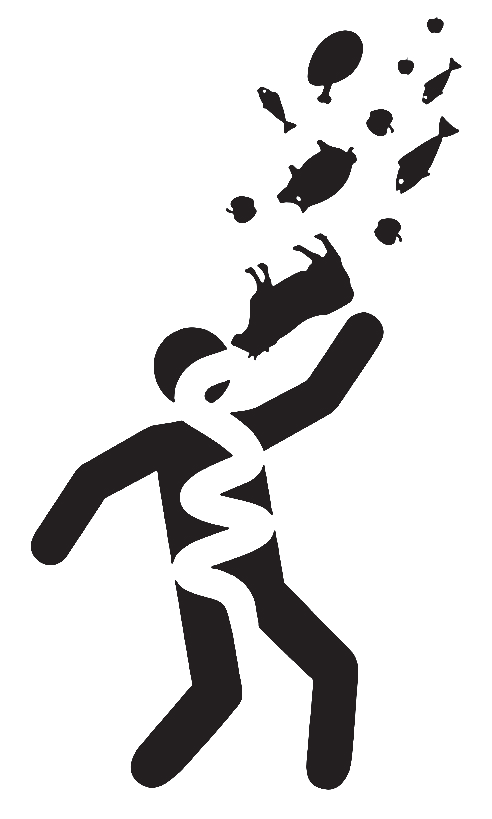
再回风起云涌
师父，闭关的时候是否要将需要的食物一次都买回来？但是如果以水果为食物的话，闭关一个月，水果应该都烂了！中间是不是还要出去买吃的？闭关时候的饮水量，是否比平时要减少很多？还有，在闭关连续打坐的休息间隔中，可以听音乐来放松吗？Sailing 旅：楼主前面回复中提到一定要双盘，但这个问题困扰了很多初修。有的说要注重修心，不用双盘，有的说要双盘。请问双盘到底何用？为何这样才能打通气脉？原因是什么？
Taiguanglin
只有双盘才能打通经脉，单盘不可以，只能算静坐——我也不知道我们的身体为什么会这样。有人也说什么瑜伽呀、气功啊之类的也能打通，但姿势都是双盘。
如果一定要说原因，我个人认为在双盘的情况下，内气的通道——就是经脉会形成封闭的循环系统。看东西消耗气，所以闭上眼睛；听声音也消耗气，所以尽量找安静的地方。等不再被声音吸引注意力的时候，可以不用管外面吵不吵；舌头也会消耗气，所以闭上嘴，把舌头贴到上面去；手指会消耗气，特别是大拇指和食指消耗最大，所以结手印。手印有很多种，打坐都建议结三昧印，把右手四指放到左手四指上，两个大拇指对接，双手自然放到小腹前；脚底也会消耗气，把腿结成双盘，形成封闭的循环系统——这样气不会外露，至少漏得少。逐渐打通经脉，在身体内循环往复，全通了就进入绝对健康状态。
打坐时可以进入忘记身体存在的境界，叫坐忘——这样才能进入以后的欲界禅定。
单盘没有打通经脉的效果，气不能形成内部循环，坐到一定程度就不再向前了。双盘也要换腿，两边都要打通，只打通一边的人也进不了禅定状态。
还有饮食很重要！吃肉不行——肉里有太多毒素，血液浑浊，气不能正常循环。牛奶不行、豆奶不行——高蛋白的食物肾脏无法分解，坐的时候会腰疼，而且还容易便秘。酸奶不行、牛奶含量高的冰淇淋不行、奶酪不行。鸡蛋偶尔吃一两个没关系，但也不能天天吃，必须是无精卵，不能变鸡的那种。
吃饭后两个小时内不宜打坐，食物堵塞经脉，腿疼得厉害。
我个人现在是日中一食，精力充沛，身体健康。每天只睡四个小时，礼佛时发声一起唱，一天唱三小时——这也很累的。下午还要磕头八百，晚上打坐，凌晨上午打坐——不觉得累。
祝你好运！
第08 章 淫欲、炼精化气(29)
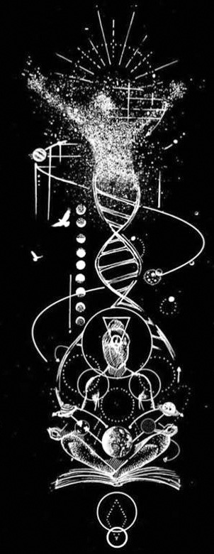
花开现人
末学有三个问题请教：一、在打坐时，双盘似乎淫欲心更盛，如何解决？二、晚上睡前双盘打坐，更容易漏丹，如何解决？三、你是如何理解《楞严经》中火头金刚的火光三昧的？阿弥陀佛！
Taiguanglin
这是必经的过程！平时没事，一打坐满脑子女人——是习气外露，是灭习气的过程。而且时间还不短，有时候两三个星期，有时候更长。
我是磕头熬过去的。磕到没力气的时候，再打坐——靠着墙坐着，只要保持腿的双盘就行。没力气的时候腰肯定会塌的，就靠墙坐。还有，不要吃肉，晚上不要吃饭。一天两顿足矣，吃多了更是淫火炽盛。
熬过去一次就可以舒服打坐一段时间，但还会发作。这种情况会反复很多次，但每一次发作都会比前一次程度低——说明淫欲在减少。要彻底灭淫欲，从你打坐开始算起，三年肯定不够。你如果戒肉很多年，那会快一些。
漏丹是什么？是梦遗吗？这个不用管，你到炼精化气的程度就不会梦遗了。有个办法有一定的作用：打坐前二十分钟，你尽量吸气，吸气的时候肚子要鼓起，然后憋气；接着小腹用力，收缩肛门和尿道，坚持几秒，再慢慢呼气；如此可以增强丹田的肌肉，开始在小腹聚气——是炼精化气的初步阶段；但不要做太久，二十分钟足够了，然后自然打坐。
火光三昧是观自身火大，怎么观？也得先达到可以忍耐的地步你才能观，观自己淫欲如火，烧遍全身。如果你淫欲发作的时候实在无法控制，那就起来运动。现在这种观四大的修法不流行，很少有人修，所以也很难找到有经验的人问。我也没有修这个法门，所以也不好多说什么。
阿弥陀佛，祝你好运！
无住生心金刚经
有没有方法炼精化气，我感觉淫欲心太重了，想把它化掉？
hy2hx
师兄早，师父有方法啊。不过对于初学，师父应该会对你说，念经、念咒、磕头、练呼吸、布施放生去。这样业障消得差不多后，再开始学双盘，这样打通全身经脉后，就可以炼精化气了。
Taiguanglin
淫欲是习气，是意识层面的，炼精化气是身体层面的。先灭了淫欲之后，才能做到炼精化气——不是先炼精化气了就灭掉了淫欲。人活无数世，淫欲根深蒂固，不是说灭就灭的。
多念《秽迹金刚咒》——有空没空一直念着；还要一边练呼吸。说实话，彻底灭除淫欲没个十年功夫不行，所以，有淫欲你也别太自责——这很正常！男人到七十都能做呢！
红宝石199
师父上回开始说，女子炼精化气结束就会渐渐斩赤龙，这个我有点体会。不过现在淫欲还没有完全伏下，所以这个阶段还没有结束，再一次验证还没到欲界禅定！我就是有点混乱，因为道家是说女子要先通过人为的手法把赤龙斩掉，然后才能进行炼精化气。从我自己的体验来说，不做这个功夫，也可以先修禅定，然后身体自然会有改变的。我想问师父，您听说过有尼姑仅通过修禅定，没有任何道家的功夫，就斩断赤龙、达到欲界禅定的么？
Taiguanglin
还有其他停止月经的方法吗？动手术可不行。只要一直打坐就可以做到炼精化气，月经会消失。只要修到没有淫欲，再坚持两三年，月经就没了。但是想生孩子的时候，还是可以生的。
红宝石199
我是通过打坐使它慢慢减少的，但是不稳定。有时候有，有时候没有，感觉和心情还有淫欲很有关。看来我要继续伏淫欲，谢谢师父回答。
星辰残月变
师父，如何炼精化气啊？最近坐禅感觉自己抵制色欲的能力大大地增加啊！定力越来越强了。
Taiguanglin
恭喜！继续打坐，自己就会炼精化气。
十一因缘
断淫欲后精出否？俗人说，精满自遗！修行人自梦中也清醒明觉，自不会梦遗。请问精还出否？
十一因缘
别说话了好么？漏狐狸尾巴了！真气自来水@ 十一因缘：佛法真有意思。一字断真假。十一因缘@ 真气自来水：这就是我慢过盛，害自己害别人。修行先学戒！毗尼在，则佛法在；戒也无，何来定慧？复制粘贴谁也会，学佛要认清自己。
Taiguanglin
有人问我淫欲断没有，我说断了；出精否，我说不，他就说我露狐狸尾巴了。
断淫欲的标准是什么呢？叫“梦中持戒”。有不少佛经里反复提到，大菩萨是在梦中都持戒。梦中有美女勾引你，你不行淫就算成就了淫戒。你只要发心断淫欲，这种梦肯定会来。男人本来就有梦遗，女人没有梦遗，但修行到戒淫欲的阶段，就会有这种梦。这是一种考核，也算是佛菩萨加持你，让你知道自己到了什么境界。
彻底灭淫欲会如何？还会不会有梦遗？精液还会自己溢出来吗？不会！只有刚成就淫戒的一两个月内出一两回，之后就不再溢出来了。
什么叫“炼精化气”？就是把有形的精液转换成无形的气存到体内。打通全身经脉，让气在体内循环，不再向外漏。打通丹田和会阴，让丹田气海可以容纳无限的气；接着进入“炼气化神”的阶段——这是道家练气的程序。但不管修道修佛，身体都是一样的——这些过程大同小异。
在炼精化气和炼气化神中间，还有一个阶段叫“炼气化丹”——它把无形的气再转换成有形的丹。这个丹，人活着的时候是无形的，是一种高度凝聚的能量；但人死之后火化，这种高度凝聚的能量就变成坚硬的物质留下来，就是舍利。
宇宙是物质和能量的混合体。运动时是能量，静时是物质。物质和能量可以转换，物理上还有一个方程式E=MC²——在人的身体里也能适用。人活着的时候刨开肚子，没有舍利；死后火化就有——不火化则身体不腐。
炼气化丹过程中，随着这个丹凝聚的能量越来越大，产生吸力——就像物理上，物质的质量越大引力越大一样。丹的吸力逐渐透过皮肤，向外伸展；不但自己关掉身上会漏气的外部穴位，还会开始吸外界的气。
我们说的用皮肤呼吸就是这个。吸的不是氧气，是外界的气。人需要食物、水和氧气——这些在体内分解转换成精，就是营养；精再转换成气。内功浑厚的人就是跳过了前面阶段，直接从外部吸气。所以，不吃不喝可以活，泡在水里几天可以活。
有丹的人都可以吸外部的气，自然不会遗精了——精液会自行转换成气来源源不断地存入丹田。
男人不会再遗精，女人不会月经，这都是无数的修行前辈证实的事实。我个人不遗精已经很多年，一天一顿饭都开始减少饭量，精力充沛，健康得很。
《四十二章经》里有一段，弟子问佛，宿命通如何得？佛答：灭淫欲即可。如果你彻底灭除淫欲，进入初禅，你就能看到自己的前世今生了。
修行会出现的第一个神通就是宿命通——其他神通都在宿命通后面。你连自己是谁都不知道，说自己神足通，可以灵魂出窍，可以去地狱，有天眼通，看六道众生。你骗小孩可以，在真修行面前没什么好装的！
我周围也有很多修行人。凡是自称修行的，我看眼睛，没有彻底戒肉的人眼睛有杀气，直接能看出来。肉都没戒，后面的淫欲还没开始戒呢！有啥好谈的？
你要看别人什么程度，首先你得超过别人。自己没到那个境界，你无法判断别人什么程度。
有无聊的人看别人开帖论法，就想存心捣乱。你就在我讲的法中挑刺，也算你有素质，是来和平切磋的。我也只说我自己认为的，不跟你非要争个高下。我啥都没开始讲，你问我名字，我答了；就问淫欲断没有，我说断了，就说我狐狸尾巴露了——什么意思？你们两个别再在这里留言，我一概不答。就算论法，你们也没有虚心求学的态度——不予理睬！
十一因缘和真气自来水两位，先学会做人再修行！要拆别人的台，也要有两把刷子才行！
无事不问卜
你说戒淫会出现那种梦境，确有其事，我经历过了而且把持住了。当时做那种梦眼看就要漏了，忽然冒出个念头：要修禅，怎么可以在梦中做这种事！就醒了——而且两个多月也没有漏！我算不算戒淫成功了？还应注意些什么？
Taiguanglin
你很好啊，继续坚持修行就可以了。前面的基础要打好！持戒、磕头、念经、念咒都是必须的。
无事不问卜
师父、我戒淫失败了！差一天就够一百天不漏，哎！昨晚梦中出现了个大美女，刚开始还有点清醒拒绝了；第二次这个美女居然带着高潮的表情扑上来，哎！一泻千里啊！差一天就百天。这种梦扛不住啊，该怎么办呢？
无事不问卜
念了两天《六字大明咒》，怎么就做淫梦了呢？这是为什么呢？
Taiguanglin
没什么，戒肉都要七年，戒淫怎么会几个月就能完成呢？坚持修行就行，不要刻意地求境界，这反而更让人烦恼。
非缘非非缘_
腹部，在我理解下呼吸深度越靠下越好，最好完全在肚脐以下，甚至再往下有两块三角形的肌肉，呼吸做到那里可以牵动会阴和尾闾。最近做了不少春梦，但是都被我克制住了。
Taiguanglin
梦遗是正常现象，不要刻意控制，满了就该倒掉。比丘戒里也说道，除了梦遗之外不要漏精。等你灭完淫欲，进入炼精化气的阶段，自己就不会漏了。你硬是把它控制住，反而打乱了正常的气循环，就会出现各种不适感。只要不是频繁地漏，就不要控制。前面有人说一打坐就漏，那是小弟弟和前列腺都松掉了，要运动来锻炼。如果不是这种情况，就不要控制。
ruofeilulu
老师，请教一下。今天午睡时做了个梦。一个大帅哥躺在我身旁问我，喜欢我吗？我回答说，不喜欢！好险啊！好像连我的衣服都掀一半起来了，我拒绝了以后，他就消失了。这算是一次考验么？
星辰残月变
师父说的不是很懂啊？我想戒淫，但是师父说习气外漏很可怕的样子啊！我想知道戒淫开始多久会出现这类情况啊？会维持多久啊？现在梦中美女引诱最多忍住，没有破戒，中途忍不住，开始手淫，不过最后关头都忍住了。
路过的小胡子
哎，打了半天字一下子没了，心疼！手淫克制不住自己——我以前也常这样。然后手淫完了就后悔，但是下次还继续——这就是没有定力的表现。没有定力，再聪明也谈不上有智慧。学佛嘛，就是觉醒，就是解脱，跳出轮回——所以最基本的就是持五戒十善。平时一举一动、一言一行，都要观察自己是否合于此。这是我自己的意见。
马达硬盘
欲望，不能压制的——越压制，反弹起来越猛烈。最好的办法就是“承认它的存在，不被卷入；欲望如云时聚时散，我如旁人般观看”。这是一个学习与实践的过程。只要经常来这些有正能量的贴吧，天天熏陶学习，自然戒掉。
Taiguanglin
每个人情况不一样，我怎么知道你要多久才会有习气外漏的现象呢？淫欲犯的时间不会超过一个月，短的话两个星期就过去了。
hongfu_qitian
你好！想请教你一个问题。观看日本成人爱情动作片是否构成犯淫戒？还有性幻想呢？
Taiguanglin
看毛片算犯戒，但是不用在意。有淫欲很正常，慢慢修行消就可以了。
寒山玉屏
我想请问一下。比如我有妻子，要如何做才算不邪淫？有人说拥抱、接吻都是邪淫，是这样吗？夫妻之间如何相处才是不邪淫？
Taiguanglin
你只要不出去嫖妓，就不算邪淫。能结为夫妻是累世修来的缘分，不要因为修行害苦了对方。如果你小于四十岁，一个星期三次，再打坐、运动、练呼吸，身体完全能承受。
hy2hx
师父，戒色戒了一段时间后，是不是会突然很烦躁，情绪不稳定，什么坏情绪都会来？
珂骏
建议你去戒色吧，看看吧主飞翔哥的《以戒为师》和《以戒为药》，里面有很全面系统的解释(PS：他也信佛)。hy2hx@ 珂骏：我早就是戒色吧的吧友了，但是色这种东西太难戒了，只能一步一步来了。也难怪佛老大都说，要是再来一个和色这样的欲，那人类就彻底没救了。
回贴也要讲关系
是啊，从端午开始戒的。但是手不动容易，心不动难啊！有时走在街上眼睛都要多看几眼，心里起妄念，而且知道已经起妄念了，但是还是忍不住多想几下。有时很恨自己，今天戒不了，明天戒不了，可能到死的时候还是戒不了。说慢慢来，慢到什么时候？可能到死还是打妄念。
星辰残月变
手淫的果报怎么消除啊？有什么可以增加抵抗淫心的法门没有？
Taiguanglin
戒淫念《秽迹金刚咒》吧！多布施，积攒福报就是！谁没有手淫过，没去找妓女就很不错了。
hy2hx
师父啊，我老是冒出一些对佛像、老阿婆、动物们等邪淫之类的念头，这是什么情况啊！怎么办啊！网上几乎都没这类问题的回答。跪求师父回复，救命啊！
Taiguanglin
继续念佛！其他没什么事，这都是再正常不过的事。看到菩萨像就想到和菩萨做爱，这种念头都是人之常情，你有罪恶感就对了。淫欲不是一两天之内出现的，哪有说戒就戒的！慢慢来，你是正常的人，没有任何毛病，加油！
hy2hx
有师父指导就是好，不然天天看经念咒却浮现出那些画面，自己却不知如何是好。希望楼主即使在韩国修行住持，也要时常来这个帖子啊，网上的在家修行人，还真真难遇见善知识啊！
不孝忤逆女
楼主，我还想问个普通的问题，但是众说纷纭，没有特别肯定的。
不孝忤逆女
子时打坐，可行，还是该休养？还有女众究竟是双盘，还是单盘？再有，您如何彻底戒掉淫欲？
Taiguanglin
子时也可以打坐；晚上更好，安静——不过别影响正常的休息。
单盘无法打通经脉，没有用，只能算静坐——要双盘！看我上面回答别人时提过双盘，一开始结降魔坐。灭淫欲不下十年功夫不行，先戒肉；然后就是靠禅定来灭的。现在对你细说无益，戒肉也要六七年，加油吧！
星辰残月变
师父，看你前面说，修禅定会引发淫欲习气种子吗？好可怕的样子啊！我真心不想再行淫欲，求教师父怎么化解啊？淫欲来时真的很痛苦，我再也不想再犯淫欲！
Taiguanglin
不着急，慢慢修，有淫欲正常。平时多念佛，发愿灭淫欲就可以了。
第09 章 打坐时的身体反应(178)
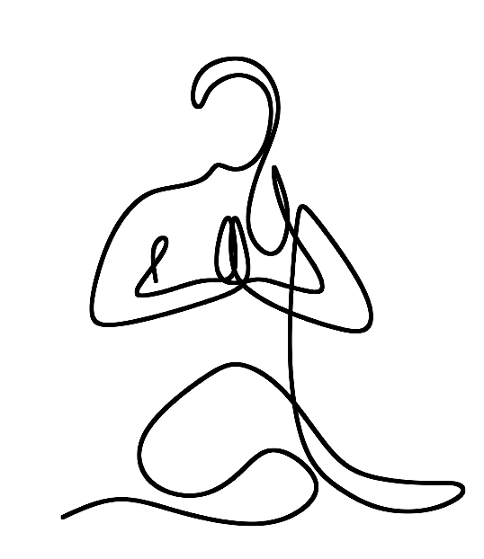
无事不问卜
师兄，你好！最近才喜欢上禅坐。我是坐单盘，我的方法是感受呼吸，感觉细微、柔软、越来越静，有时能到没有感知了。最近两天坐着坐着头脑突然会有被电击的感觉，一惊一惊，这是怎么回事？求指教，谢谢了！
Taiguanglin
单盘的话，内气不能形成循环；流到一定程度，到某个穴位就不走了；越积越多，开始刺激神经——人的各大关节——膝盖、手肘、后脖子都是气容易凝聚的地方。你还是坐双盘吧！一开始都疼，先把右脚放到左腿根部，再把左脚放到右腿上，这叫降魔坐，打通人体右侧经脉，就从这个开始。
无事不问卜
师父，双盘那是真痛。象蚁咬，集中不了精神，有什么好方法吗？
Taiguanglin
不行就磕头了。磕头可以加快气血循环，对打通经脉有很大的帮助。每天坚持磕五百个，要一小时；磕完再打坐，你会舒服些。
降服身体不是一朝一夕能办到的事，有极其极端的办法，你肯定做不来：一天只吃一两个水果，不要活动，一直打坐，坚持二十天，可以直接打通一侧经脉。
不孝忤逆女@Taiguanglin
一直是指不下坐？还是间断地坐也可以？
不孝忤逆女@Taiguanglin
双盘有没有年龄限制呢？
Taiguanglin
Taiguanglin@ 不孝忤逆女：要持续一天地打坐，不是连着坐二十四小时；一开始的时候打坐一小时，起来走动十分钟；到最后连坐五小时，起来走动一小时，做一些简单的瑜伽动作。屁股的皮肤也要透气，特别是夏天炎热的时候会起痱子。而且，初学打坐不能在户外，风对人有影响。
圆圆柔柔摘月光@Taiguanglin
我只知道双盘或者单盘后磕大头，腿会舒服很多。
Taiguanglin
本打算帖子沉了就不再上了，没想到有这么多人来顶。感谢不孝女等所有来顶帖的朋友，这也让我感到挺有负担的，感觉不说点新鲜东西都对不住大家的期盼。还有，恭喜打通全身经脉的朋友，后面的修行的确不是那么简单，没有完善的理论基础和善知识的指导，基本都会堵在半道上。
可是目前我没有收徒的打算，也不会见任何人，更不想介入别人的因缘当中，所以不想介绍别的和尚给谁。不过大家别担心，我把后面的修行过程也写上，为后学留一盏明灯，望大家珍惜这样的法缘。
上面的问题都看了，提问的朋友还在的话出来冒个泡，我就回答。纯理论性的问题，试探性的问题就算了，我没那么多时间。
至于打坐时的气感，如果你单盘，那你永远也打不通中脉，也不可能进入禅定的境界。气感还是会出现，可是气不能形成完整的循环，会在头部、胸部汇集，等气强到一定程度就会冲开某个窍穴开始外泄，到了这时候想再堵上窍穴就不容易了。所以一定要双盘，双盘半小时都比单盘两小时有效果，只有不断地努力，别无他法。
如果你双盘，又没有观头部，可是还有气在头上汇集，那你就换腿打坐。不一定打通一侧之后，再打通另一侧，可以二路并进，换腿打坐；另一条腿又会很疼，但是气很快就下去了。心法只有两种，不是观丹田就是念佛，总之不要观膻中以上任何地方。后面我会把气的原理详细讲解，后面会出现更加神奇的内容、更加微妙的理论——这都不是凡夫所能领悟的部分。
Taiguanglin
你不双盘能练到那个程度已经到极限了，不可能再有进步了，还是双盘吧！看完我前面的帖子，只看楼主就行。周二开始讲四禅的理论，到时候看吧。
你应该找到答案了吧？
第一，你单盘。单盘的极限是两个小时，超过两个小时就会开始发麻，过不了多久身体僵直就会出定——单盘只能进入欲界禅定。
第二，你没练呼吸。如果你还吃肉的话，你的吸氧能力不足以让你进入初禅。
第三，你观丹田。这个结果已经说了！
综合所有来看，你现在已经到了极限了！你的脑细胞已经开始受损，所以意识昏沉；注意力、记忆力下降，睡眠时间增加；睡得多了也不觉得解乏，头脑也不觉得清醒。我看你还是暂时别打坐了，专门练呼吸和磕头，先练成腹式呼吸。你已经到了这个程度了，一个月足够练成腹式呼吸；然后开始双盘打坐，左右都要打通；不要观丹田！参疑情或思情，听声音也可以，这些都比观丹田强。
不管你信佛还是信道，要修到阳神真气，这些都是必须的过程，愿佛菩萨保佑你！
无事不问卜
我是坚持单盘，慢慢上双盘。我单盘也能进入师父说的欲界定么？有个什么尊者在给佛剃头也能进入四禅，所以不一定要双盘才能入定，是这样吗？
Taiguanglin
单盘的情况下，骨盆会向一侧倾斜一点，就这一点的倾斜会让你无法长时间地打坐。要进入初禅就要坐四个小时以上，单盘是坚持不了四个小时的。当然，作为前期的方便法你坐单盘也没什么，坐的时候拿垫子垫高屁股后面三分之一的地方，这样脊椎就会挺直，会坐得舒服些。
红宝石199
师父，我本来以为身体气脉已经通得差不多了，因为可以很舒服地坐一个小时，浑身暖融融的。看了您的开示后，我开始延长打坐时间，今天坐了一个小时二十五分钟。问题是我的腿又开始痛，两脚倒是一直红润的，感觉不是那种气脉不通的痛，而是纯粹因为腿脚别在那里时间长了而痛。我想请问，这仍然表示气脉没通吗？你们打坐那么长时间，腿没有感觉的吗？还是一旦延长了也会痛？
Taiguanglin
这得从医学角度来解释：
皮肤要全部更换需要二十八天，也就是说，你现在的皮肤中最老的细胞是你二十八天前吃的食物变成的。肌肉细胞和内脏细胞全部更换要两到三年，筋细胞需要三到四年，骨骼细胞需要七年以上。
当你打坐的时候，只要你的内脏和肌肉全部修复完毕——内脏没有隐患、肌肉非常放松，筋脉就算通了，坐着不会再疼。但是人的筋和骨骼却还没修复；当充足的氧气和葡萄糖开始修复筋和骨骼的时候，这些地方就会开始疼。人最容易受损的筋和骨骼在脚脖子处，人的所有重力全部压在脚脖子上，生活了这么多年，没有受损是不可能的。然后是膝盖，然后是股骨头关节。这些地方的筋和软骨会发痛，而这个发痛时间就是九十分钟到两小时之间。
所以我说打坐要打通全身经脉和修复所有身体细胞，需要每次都打坐两小时以上——这个两小时不是随便说的。前面也说到，要进入身体发热的阶段，不管心理因素，只管身体修复的速度，那按照我的练习方法勤练呼吸，只要三个月就够了；但是进入欲界禅定却要两到三年，原因就在这里。普通人骨骼的修复需要七年以上，我们练习呼吸，吸入比普通人多两倍以上的氧气，只要三年就可以修复骨骼，你越是精进修行，修复得越快。
所以你不要担心现在的疼痛，那是脚脖子的筋和软骨开始修复的表征而已。有些人内脏和肌肉的修复和后面的筋骨修复的感觉是连在一起的，有些人却分开来。因为肌肉和内脏受损的程度较低，而筋骨受损的程度较严重，这样肌肉和内脏修复完后就会进入比较长时间的舒服阶段，等开始修复筋骨的时候又会开始疼。
我也是这样熬过来的，舒服到两个小时后，脚脖子的筋开始疼，更疼的是股关节的软骨——就是大腿骨和骨盆连接处。那疼得真是深入骨髓！刚出家的时候，锄地种蔬菜，老是用一个方向锄地，结果身体重量全部压在左侧股关节，当时就有些疼，感觉软骨被磨损，后来不干活了，就不怎么疼了，可打坐的时候居然发作出来，实在是太疼了，一下子从舒服的感觉被拖出来。
问
师父，我最近一直在用一种方法修炼，但不知道是否存在漏洞或副作用，请师父指导。单盘，观双手，感觉到手上有麻和热的感觉，然后就观这种感觉，最后热感逐渐地扩散到全身，全身的知觉逐渐地减弱，闭着眼眼前也有些亮。我害怕走火入魔，所以特来求教。
Taiguanglin
双盘吧！双盘半小时都比单盘两小时强。还有佛门修行没有观双手的法门，那是练气功或者练武的人玩的。你还是选择观丹田的方法吧。
觉真是我
楼主菩萨好，末学打坐前后两到三年左右时间，前两年主要是单盘持咒，最近一年开始双盘打坐，现在时间差不多一个小时，坐的是莲花坐。有几个问题想请教下：我用的是莲花坐，左脚在内，右脚在外。目前这样的姿式双脚差不多可以摆放端正，坐着也挺舒服；要是换脚过来，会感觉特别别扭，而且会盘不到位。这种情况是不是有长短脚的问题存在呢？还是没习惯的问题？还有以后要换脚，是要等到这个坐姿先坐到两小时以上呢，还是现在就要交替进行？
Taiguanglin
两种坐法必须都要坐。单坐一种，等气感强烈，而且不能循环的时候，可以再换另一种；也可以每天换着坐。腹式呼吸，在吸气的时候肚子撤力，呼气的时候用力收腹。打坐的时候不要观呼吸，也不要控制，平时站着练就好。
雨夜箫吟忆平生
师父，我现在双盘不了，平时只能单盘念《地藏经》。请问师父，单盘对以后能练成双盘有作用不？
Taiguanglin
先练单盘为后面的双盘做准备也可以，
有帮助。
Taiguanglin
先戒肉，再磕头，少做爱，每天睡前一小时，疼也坚持。把前面的帖子都看完，有谈双盘的。
supid128
有个问题向楼主请教，磕头是不是西藏和尚做的大礼拜呐？前天晚上做了大概三百多个，昨天全身酸痛。在做的时候，已经只能撑到一百多个了。感觉这两天地板干净了好多，而且大冬天全身一身汗，冬天出汗太多不太好吧？错了，现在是春天，但是天气还是很冷。从中医的角度，这样有没有不利于身体呐？请师父指点。还有以前自己做开胯，把尾巴骨打通，两肾之间每每有热流，精力充沛。可现在没了，热流也没了。娶了老婆尽人事嘛！老婆年轻，要求过分了点——知道这样做必伤身。是不是尾巴骨没有开通，对精的伤害不是很大？开通之后，就直接炼精化气了，是不是？这样伤害会更大？那修行之人这方面的节制怎么办？磕头嘛，反正我是一年四季都坚持来的，从来没感觉到有什么不对。冬天更好一点，不累；夏天温度高，流汗多，消耗的气力更多。对于修行人而言，很多医学常识都不适用。我一天吃一顿饭，磕八百六十四个五体投地，唱三个小时佛，只睡三个小时。这对一般人而言，一个星期就会营养不良、虚脱晕倒的。关键是自己的信念，还有内功。等你做到三气归元，就能感觉到精力充沛，比一般人吃得少，却能干更多的事，睡眠也明显减少。你还是把前面打通全身经脉的部分都看一遍吧，要先用降魔坐和莲花坐打通身体两侧经脉，然后才能开始打通任督二脉。双肾之间有气感是第一步，气会随着脊椎一路上去，中间有好多大穴，都要一个一个冲开，到了头顶百会穴，还要再下来，冲开人中、膻中，到丹田，再到会阴，重新回到双肾之间，这样才算打通了全身经脉。一旦打通，每天坐一两个小时，你也会发现精力愈来愈充沛，一个星期行房两三次都没问题。当然，要看你年龄了。三十多岁的人打通任督二脉之后，一个星期三四次都可以。完事后再打坐一小时，让身体快速恢复。当然，不行房那是更好的了。自己的身体自己知道。
zhoujianbang12
昨天双盘成功，坚持了十分钟。腿脚的感觉有时候疼，有时候不大疼。最后起来的时候是麻了，双脚呈紫色，左脚更厉害。小腹与两肾处能感觉到温暖，很难集中精力观呼吸，很难放松。
Ruofeilulu
老师，昨晚坐了几分钟脚就变色了，这是在排毒么？( 见附图：图9)
圆圆柔柔摘月光
你脚的颜色比我好很多呀——是排毒。继续坚持！最后发红转白就好了。我的脚底中间开始转白了，两边还不行。继续加油！
Taiguanglin
一开始都那样，坚持几个月就没事了——是排毒！
圆圆柔柔摘月光
师父，我打坐超过二十分钟后，脚的颜色就会非常恐怖，不晓得您看不看得到图。这样没问题吧，我要继续打坐吗？发图总也发不出来。总之，脚的颜色就是深紫色的。
不孝忤逆女
难道这是传说中的排毒吗？为啥我一个小时都不变啥颜色？圆圆柔柔摘月光@ 不孝忤逆女：不可能是排毒，好像是经脉严重不通造成的吧？
圆圆柔柔摘月光
师父，昨晚一直用手机传不上来；今天在公司里，截下照片，您看一下，麻烦您给个建议( 见附图：图10)。除了磕头之外，我还需要做什么？这是因为我的经脉严重不通造成的吗？(2014-06-06，08:28)
观兰法
有强行盘腿强忍导致腿坏死的案例，循序渐进！(2014-6-6，09:09)圆圆柔柔摘月光@ 观兰法：我确实有点强行打坐！每次只要忍到实在忍不住了，我就会松开。圆圆柔柔摘月光@ 观兰法：我这个身体素质，练了一年了。从单盘开始练起，到现在双盘，我都觉得不可思议。所以让我相信，只要有恒心、能坚持，目标一定可以达成。所以，双盘二十分钟后出现脚的这个问题，我才发出图片来请教楼主师父，不知道原因如何？可否继续？能盘上，本身已经是受到佛菩萨的加持了墩儿娘@ 圆圆柔柔摘月光：啊呀，怎么都黑了，我还以为你抹的墨水呢，怎么会这么严重哦！圆圆柔柔摘月光@ 墩儿娘：不是黑，是紫的——灯光的原因——看着像黑的！估计要是黑的，我可能离去见阎王不远了
圆明如意
2014-6-6 11:58
你查查血色素是否正常圆圆柔柔摘月光@ 圆明如意：我每年体检，去年十月体检结果非常好。以前心脏不太好，去年也回归正常。
Taiguanglin
双脚变紫很正常！坐双盘的时候浊气下沉，从脚底涌泉穴排出，血液里的毒素也会堆积到脚部，有些人是从双手排出，不管从哪里排，都得排。
剖腹产进入体内最多的是氮气，排毒也会有更大的难度。
不过我也像你这样过，比你还严重。我严重到脚底起皮，走路都疼，坚持了一年多才好的。
你每天坚持磕头一个小时以上，要出汗的磕。普通的磕头要六百个，磕五体投地要四百个，出汗越多排毒越快。
还有，不要吃肉、不要喝酒、不要吃蛋类；不要吃一切奶制品，鲜奶、酸奶、奶酪、冰淇淋，还有豆浆；油腻的东西也尽量少吃，吃得清淡点好，这些都会加大肾脏负担，影响排毒；还要白天多喝普洱茶。
想快速清肠还有办法，晚上不要吃饭，喝盐水，盐按照你的口味来放，再挤一些柠檬汁进去，这样不会反胃，不过白天会拉稀。你上班如果受影响就不要喝盐水了，有些人喝了也没反应，体质不同。自己决定吧！
总之，双脚变紫不是坏事，是好事——说明气开始通了！啥反应都没有才是坏事。
娑婆如梦
师兄不必担心，初练双盘都是这样，这确是排毒通经的过程，坚持坐下去自己就知道了。
圆圆柔柔摘月光
师父，愁人！刚才打坐，我不晓得到底怎么了，两只脚火烧火燎的；可是，左边胳膊旁边竟然凉风习习，一股感觉像是刺骨的寒意在我胳膊那里。到现在，这股凉意让我胳膊还是觉得冷。师父，这是有鬼道众生来了吗？
圆圆柔柔摘月光
还是我专心打坐，让身体的感应极其细微，从门缝透过来的冷风？这也太刺骨了，到现在这胳膊还是冰凉的。
Taiguanglin
从皮肤开始冷是外面冷空气来的缘故；从骨头开始冷，那是冤亲债主或者鬼道众生来的缘故。
在气通之前也会有一段时间非常凉爽。只要平时多念咒，一般不会有鬼道众生来捣乱的，都是身体在往好的方向发展之前的反应而已！
你的脚还紫吗？
圆圆柔柔摘月光
报告师父，脚开始分化了。有的地方颜色开始变成红色，但是很多白色斑点。可是在脚底和脚趾头下边的位置，颜色竟然往黑紫的方向发展；不是脚底，是脚后跟那里！
Taiguanglin
白色就是正常的，红色变白就行了；脚趾头、脚后跟毒素汇集，再坚持一阵子就好了！排毒从脚掌中间排，那里先好起来。打坐完了你可以用热水多泡泡脚，不要着急，不会死人的。我脚掌起皮一年，也自己好了；你都不起皮，有啥好担心的！
圆圆柔柔摘月光
其实不管怎样我都不会动摇的，就是希望有人给加持鼓励一下。之前问过很多人，都不建议我继续打坐，只有紫玉檀师兄和红宝石让我继续坚持。而得到您的鼓励，我更是没有任何后顾之忧。
圆圆柔柔摘月光
这个之前师父回答过我，双脚掌变紫黑都是在排毒。不要怕，继续坚持！过段时间开始发红，然后会转白，就好了。
皮卡堂69
降魔坐的时候，我的左腿毛孔全是黑黑的颜色给堵住，但打完坐又没事，不知道原因？师父，疼痛上移到股骨头、骨关节位置；膝盖、脚踝疼得少了。呼吸还是卡在了中庭穴、鸠尾穴附近，只是现在比之前稍微好点了；并且还发现练习腹式呼吸的时候，左锁骨下方大概天宗穴位和中庭、鸠尾穴附近一起也有被卡住的感觉。是不是意味着，这些穴位是我后天某些行为造成了堵塞？师父有时身体打坐很容易、很享受；有时熬疼得厉害，身体真的很微妙哦……还有就是身体笔直的情况下腹部呼吸不明显，稍微弯曲更容易腹部呼吸，太弯曲脊椎估计也不好吧？师父，您说过颈椎弯曲基本完蛋的……
Ruofeilulu
我也有这样的问题，身体太努力伸直反而不容易呼吸，后来看到万行法师说是太伸直就压迫尾椎了，要倾斜一点，就是脖子到背保持直线，但不是弯曲。不知道是不是这样，还请老师开示。我昨晚试着倾斜一点，确实呼吸顺多了。
阿啦顶身等
我也是呢，我一双盘背就很自然地挺起来，小腹也很自然地收紧吸着了；但是发现这样呼吸很难感觉得到，也不知道是腹式的还是其它的呼吸。
Taiguanglin
坚持一段时间就过去了。至于挺直腰板的问题，你不要刻意地挺直。如果塌得厉害，呼吸都困难，那就挺直——但是不是挺得笔直，只要挺到你舒服就行。多打坐，当修行到腹肌放松变大，体内气足的时候腰板自己就会挺直。不要着急！
众生未度不言休
明师，我是今年过完年打坐，没几个月。因对自己特别狠，单盘没多久，硬上双盘；有时候吃完饭就马上上座，有时候一天吃一个红薯，坐一天，把自己脑袋坐得空空的。
现在遇到的问题是
身体湿寒病非常严重，特别是左腿，难以排出。单盘左腿在上，两小时没有感觉，没有痛感，右腿马上就有气感；双盘左腿在外，也是一个多小时也没有气感，这让我感觉我左腿废了。为了清体内邪气，就站在高山上做全套功；我都快把自己练成人干了，还是非常难以排出。磕头大礼拜也是一万几千左右。
Taiguanglin
众生未度不言休，这个名字霸气，我喜欢！就冲这个名字我也应该给你一个满意的答复，还要让你彻底治好病。
你是在身体没有放松的情况下强练双盘，腿部血液循环严重受阻，血液里出现大量的活性氧，开始腐蚀膝盖的软骨，让软骨发炎。对于活性氧我还得写一篇。
初学不可以单练双盘，而且还长时间地练。我建议一天只坐两次，一次坐到无法坚持的时候起来就行。
对于你，你先别打坐一个月，先练呼吸，站着练。如果腿疼，可以坐在沙发上练，但不要盘腿。然后磕头，一天两个小时慢慢磕头，不要太多。如果腿疼就散步，不要磕头。心法并不重要，身体是关键。如果你强练下去，膝盖炎症加重，真的会瘸的！按我的方法练，练到腹部发热，热流逐渐蔓延全身，走到膝盖的时候，就是在修复膝盖了——要坚持到这种感觉为止！一个月要是不够，就多练几个月，一直到膝盖治好为止。
1083733609
合十！坐一会一只腿就麻了，这个时候是继续坐，还是放下来休息啊？早上是先去方便，还是先坐禅呢？可不可以在床上坐？
Taiguanglin
坐到疼痛难忍，实在无法忍受的时候，再下坐——都是这么熬过来的。疼痛说明你身体很不好，就算去医院查不出毛病，体内各个内脏都有隐患。
还有打坐的姿势，最好是双盘，先从降魔坐开始练起，练到气感强烈就换腿，等经脉都通了之后也要每天换腿。单盘也一样，要每天换；不能只坐一种，否则骨盆会倾斜。身体的平衡被打破，那就不能进入深定了。
珂骏
双盘的时候腿脚感觉不太疼，但是坐完之后很疼，甚至延续到第二天；另外，打坐的时候( 双盘会，单盘不会，平时也不出汗) 头部出汗厉害，请问师父是何解？
回贴也要讲关系
师兄，这帖子你能看到很有福报，麻烦师兄从头到尾看一遍，你会获益匪浅！很多疑问会有解。
Taiguanglin
双盘的时候，腿部血液循环受阻，血液不能下去就会上头，头要减压就要出汗；还有，疼的时候就会出汗——这都是必须的过程！一开始都是这么熬过来的。最好用磕头或者慢跑来加速血液循环，把打坐时留下的不良影响消掉。
皮卡堂69
嘿嘿，师父，我妄念少了，打坐十五分钟。打降魔坐的时候，感到腹部右半部很凉爽，左半部闷热。左脚本来紫色的，现在感觉凉气畅通无阻的，感觉可以继续哦！师父，不像刚开始那么艰难了哦。我背《心经》，然后想起我妈妈在异国受欺负；非常累地工作为了我们家，然后我把这种念转接到佛祖，然后眼睛红了。但效果很好哦，没有其他妄念了。师父，这样可行吗？
浮生有涯
师兄精进，随喜赞叹！我打坐四个月，现在上降魔坐最多十分钟，莲花坐三分钟。皮卡堂69@ 浮生有涯：哦，我莲花坐更久哦。因为不疼，降魔坐今天有进展哦，左脚不再紫而不透气了，能感觉外面的风，感觉敏感了，然后有个凉气从脚面往外透出来的感觉。师父来了我想问问，应该是好事吧？有个问题，天天磕头流汗后好累啊！最近天热了，更觉得好累，老想睡觉了，吃完饭就困死了！皮卡堂69@ 浮生有涯：估计师兄比较胖，双盘需要太多时间了吧！我比较瘦。浮生有涯@ 皮卡堂69：不胖的！体质比较差，偏头痛；左后脑有东西堵得很死，右后脑也不太通。皮卡堂69@ 浮生有涯：血液浑浊，堵塞血管了。还有，寒气、湿气以及药物堵塞的可能性也不小。据说，有的人接生的时候，就错位了脖子和脑袋的一些血管，使劲拍打或许有效哦！我也一样哦，我是堵塞毛细血管，比如眼睛部位还有语言部分，也属于天生的、遗传的，拍打捏筋法有效哦，要使劲拍。
皮卡堂69
然后不吃肉、不吃油腻的会好很多哦。当然，打坐完全打通那就上上等了。回贴也要讲关系@ 浮生有涯：莲花坐三分钟？莲花坐就是跪坐，臀部压在双脚掌心上。你说的莲花坐是不是右脚在上的双盘呢？那叫吉祥坐。浮生有涯@ 回贴也要讲关系：多谢师兄纠正错误。嘿！
Taiguanglin
可以！一开始就是熬疼熬时间，能让你多坚持一会儿——干什么都行。三昧印是右手放到左手上。
阿啦顶身等
师父，我现在双盘脚踝不疼了，改两边的胯疼了，这节奏下去，这疼的地方是不是会慢慢往上移啊？有什么说法不？
Taiguanglin
全身都疼一遍就好了，后背也会疼，后脖子也会疼。加油！
回贴也要讲关系
师父，还有一个问题想请问您。弟子坐降魔坐，约半小时后，如果动一下身体，比如用手臂把身体撑起来，屁股离开座位( 希望血液循环好一点)。这个时候通常左腿就会开始麻起来，越来越麻，一会又慢慢的不麻了，右腿一般很少麻，只是痛，这是什么情况？需要注意什么呢？
Taiguanglin
降魔坐本来就是熬左腿的，莲花坐是熬右腿的。
墩儿娘
末学双盘刚能盘上，坚持五六分钟。反正是腿难受，就拼命搓手，可以坚持五六分钟甚至更久，不搓手就难受不行。呵呵！
Taiguanglin
打坐每天坚持到坐不下去就行了，时间不重要；每次时间很短，那就早晚练两次。
众生未度不言休
老师，我有几个问题，冒昧求问，愿慈愍宣说。1、打坐中总是犯昏沉，这样会死脑细胞，那么我早上五点起来打坐，非常困，打坐也犯昏沉，可以坐吗？2、曾经打坐一天只吃一个红薯，从早上一直坐到太阳下山，腿疼了就下来走走。打坐全部落在昏沉中，最后感觉是：醒来看到夕阳，微微一笑，心里充满喜悦……我是谁？不知道。我在哪里？想不起来。不知道自己在干什么，一天坐下来身心非常空静。有没有吃过饭？忘了。我接下来要做什么？忘了。只剩下一个情绪，就是内心淡淡的喜悦。楞了挺久才回过神！当时打坐头和腰都是耷拉着的，完全是昏沉——导致我现在打坐非常容易昏沉。3、下丹田的振动感。这个振动感一旦身心静下来，我把手劳宫贴气海，振动很强烈，比心跳还强。有时候注意专注在那里，比如在手指上，手指上会出现跳动感；有时候在脚上，感觉气血也在动。4、目前的法门是老师说的腹式呼吸法。因为我又学过道家守窍和气功，所以有时候会自我创新。“打坐双盘-腹式呼吸-自我暗示”，催眠放松自己，放松完全后，或者一直放松到底。如果散乱就观想，似看非看从天目穴观想自己回到七岁模样，继续观想日精月华从百会穴进入头顶，再到双手进入气海。下丹田出现红光，下丹田发热出现火光，红光、火光上面有水，红光、火光透水出现金光，火光烤水出现气态莲花。吸气时，感觉所有外面能量透过皮肤血液进入莲花中，莲花盛开；呼气时莲花关闭照亮心脏，体内浊气散出体外。5、最后一个问题，就是打坐需要收功吗？要怎么做？
Taiguanglin
你的膝盖怎么样了？叫你先别打坐两个月，专门练呼吸和磕头，或者散步来治疗身体的嘛！
发困犯昏沉是缺氧！你的呼吸还没到能打坐的程度，先练成腹式呼吸。平时一分钟呼吸要在十次左右，练到这个程度并不难，两到三个月就够了。只要换成腹式呼吸，自然就能到这个程度，然后再打坐，就算发困的时候打坐，一会儿就变得有精神了。
你要是不愿意磕头，那就每天出去散步四个小时。一边练呼吸一边走，还要观察自己身上所有感觉，这种觉照练习也可以克服犯困，到后面进入忘我的安乐状态的时候也容易快速突破。
下丹田的振动也是你没做到水升火降，就是那个腹部大动脉还在受压迫，你得先把腹肌打开。
注意力放哪里，血液就会更多地流到哪里，那里就感觉气血在动了。
你的观想也太复杂了，越简单越好。你现在经脉没通，直接观丹田就可以了。
还有佛门修行人慈悲为怀，布施为本，修行中也不会观想从外面吸气。你要吸，就得有内外之别；内有能吸的主体，外有可吸的客体——这就违背了内外无别的基本佛理。佛门修行不吸气——不吸草木精气，也不吸日月精气——咱们只关注自己的身体和意识。身体彻底健康之后，就关注注意力；集中注意力听声音，或者参疑情、思情，不搞别的。
道家理论上可以修到四禅，但是实际修行到二禅就很了不起了——因为所有修行都在身体上用功！等修到冷暖觉或者眼根的时候，就会和天人感应；你自己也可能看到天界，或者天人来带你去天界玩——你就舍弃身体升天去了！那修行也只能到这里，不能再向前了。
众生未度不言休
老师，因为今天是十斋日，我早上特地去放泥鳅。被我放生的地方开满了红莲花，我摘了很多莲蓬里的莲米回来煮着喝，然后念了两遍《地藏经》，磕了三百多个头，加半小时浑圆桩。晚上施食，原本阴霾的月亮周围变得非常皎洁清澈。我的膝盖由于曾经频繁高密度打坐，湿寒非常重，下雨天有时候会疼。
众生未度不言休
老师，您叫我别打坐，但是我最近特别累。磕头磕两百个屁股肌肉很硬疼，肌肉酸痛很难恢复。我是说我以前刚学佛的干劲，我一天做一千个大礼拜，再通过打坐、休息恢复身体；第二天接着干。现在不打坐，身体肌肉吃不消，恢复太慢。腹式呼吸，我都是肚脐上面的肉收缩得自然；再加上我之前在部队当兵，腰间盘有点变形突出了，所以我身体里面虚，体力又非常强。打坐的话特别能熬，熬了一段时间后，疼痛没了，打坐就非常容易昏沉。我基本都是双盘，熬腿能熬到两小时。有时候睡去了，要等到一股热流冲脊椎到后脑上来，才会清醒。落在昏沉，出现过很多景象，能看到月亮、太阳、山上；不过我看到的月亮外面有很多乌云。现在不打坐了，我早上五点再也起不来了；原来都是按点起来上座，现在不坐了。就是睡醒很困、很累，平时就是放生和念《地藏经》。
Taiguanglin
我叫你练呼吸了呀！每天都练！不是一天练一到两个小时，而是从早练到晚，一直都练。练到身体微微发热，热流一直通到脚趾头——要始终保持这种状态！这样精力也充沛，也会快速修复膝盖。你是不是没练呼吸啊？练呼吸才是关键！
要行住坐卧都练着呼吸啊！加油！
众生未度不言休
谢谢老师！一般都会关注呼吸，但有时候心念会跑掉。
众生未度不言休
哎呀！老师，我今天中午不听话，坐了一个半小时，感觉很好。每分钟呼吸在四到六下，之前是十二下。
Taiguanglin
恭喜，你已经练成腹式呼吸了，可以打坐了。练成的人就算在发困或者头痛的时候打坐，也会很快就恢复，意识变得清爽。你没练成的时候打坐，本来清醒，越坐越昏沉。试着坐两个小时看看！
坐两个小时以上的时候，身体、腿可以痛，但是不能昏沉；必须清醒，如果昏沉就别坐了。
Taiguanglin
转经轮有用，转一遍算是念一遍佛经吧，也是方便法——让你不打妄想！尽量集中注意力到转经轮当中。
众生未度不言休
老师，我最近感觉很容易疲惫，特别是睡醒后，头晕虚汗，特别是午休。
Taiguanglin
你还是多吃点，一天两顿饭吃好，呼吸也要注意。现在身体不好，大部分葡萄糖和氧气都拿去修复身体了，当然感到累。午后睡一觉是好习惯！
墩儿娘
师兄，今晚末学好像可以右脚放左腿根，左脚再放右腿上了，是左脚放右脚小腿上，不知是这样不？师兄，末学可以这样坐好久。左脚掉下来一次，又弄上来了，再坐。末学就觉得腿这里热乎乎的，末学结着手印，吸气肚子鼓起来，呼气呼出去，末学第一次做到这样。末学觉得左面的腰部的后面疼，末学的右背沉和疼；尤其是末学的头顶，不知道怎么描述，好像有东西在头顶压着一样沉乎乎的，而且还热乎乎的。阿弥陀佛！后来末学还觉得末学这样坐的状态，开始移动，仿佛不在原地了，飘忽飘忽地，睁眼看看还在那里，闭眼就觉得忽悠忽悠地。等末学的宝宝动了，末学要给他把尿，末学就结束双盘。两腿跟硬棍子一样，试了两三分钟才把腿搬回来，左腿麻了都。呵呵！阿弥陀佛！见笑！请指示末学的做法需要怎样改进或者纠正。阿弥陀佛！
Taiguanglin
完美的姿势是，把左脚也要拉到右腿根上！不要着急，慢慢来！不要闭眼，要半睁着眼，看前方一点五米处，集中注意力念佛，不要念出声，嘴动声带不振，努力！
Taiguanglin
顺其自然！昏沉就昏沉，困了就睡，醒了继续！
脑子里的妄想和睡眠如同硬币的两面，同时存在；白天妄想多了，晚上睡得死。昏沉就是睡眠——睡眠会失去知觉。一入睡，一睁眼一宿就过去了。打坐的时候失去知觉，一睁眼时间过了很多；以为是什么境界，那就大错特错！你只要认识这不是境界，是睡眠的另一种状态就可以了。坚持下去！
随着妄想减少，这种现象也会过去。等白天不打多少妄想的时候，睡眠也基本消失，昏沉自然就消失了。还有戒肉，吃肉发困；戒淫，体内精气不足，也会发困。加油！
阿啦顶身等
最近也不知道咋回事，七个小时觉得睡不够，八个小时觉得睡不够，八个半小时还觉得睡不够。天天想睡觉，心有余而力不足的，盘坐一会就开始翻白眼陷昏沉了……
Taiguanglin
缺氧犯困！还是站着练呼吸吧，还要运动。还有，修到一定程度会出现障碍，突然非常想吃肉，突然心烦气躁等；犯困也是一种。不要着急，坚持修行扛过去就行！
Ericwangc
刚刚开始学修定，碰到两个问题：1、清早打坐，念头像做梦，但早晨起时，想不起昨夜做的梦。知道这些是幻的，观呼吸不久，又过去了。不知道怎样守得住呼吸？2、午后打坐，单盘。好好地坐着，时不时打个机灵( 瞌睡)；霎那之间，非常短，伴随腰尾椎处不知哪节一松。勉强坐个四十分钟，睁眼看看，自己坐相全没有了，腰往后塌了。请教师兄不知道有没有法门纠正？
Taiguanglin
打坐一开始不是妄想就是昏沉。把注意力集中到呼吸是第二阶段，第一阶段要灭文字妄想——用咒语或者念佛。
你就坐着念《大悲咒》，背熟了只要三十秒。你可能连三十秒都坚持不下来，又开始打妄想，忘记自己念到哪里了；等念咒念得脑子里的文字妄想减少八成以上，觉得念咒都嫌麻烦的时候念佛，就四个字“阿弥陀佛”，或观音菩萨，念谁的都一样；等念到念佛都累的时候，开始观呼吸——这需要几年功夫。
午后打坐不适合，饭后两个钟头不要打坐，等吃的都下去了再打坐。发困很正常！
还有要结双盘，先把右腿放到左腿根部，再把左腿放到右腿上，这叫降魔坐——是打通身体右侧胃部和肝部。你的左腿会疼得厉害，但要坚持；打通了，不疼了，胃肝恢复健康，你吃什么都容易消化，没有消化不良便秘什么的。然后再换腿，打通身体左侧。
如果你年纪很大，那没办法！单盘就单盘吧，尽人事而已。你还年轻那就努力双盘吧，单盘无法打通经脉，进不了禅定。身体胖无法结双盘，那就运动、磕头——减肥吧！
修行就是和自己的战斗，连自己的身体都赢不了，还谈什么解脱、普度众生啊！
加油吧！
yuan___yu
打坐如果被周围的人打扰受惊，有没有事？
Taiguanglin
没事，继续坐就行。你如果一心念佛，或者一心观想，一般声音打扰不到你，除非有人碰你。
圆圆柔柔摘月光
双盘半小时，第二天右眼疼痛不堪，有关系吗？师父，到底盘腿后，要不要做一些按摩动作？
Taiguanglin
打坐结束后，要下坐的时候，不能突然起来。你看那些气功大师们发功完了，最后再做一个动作，就是双手抬起从上往下压的动作，这叫收功——把气送回丹田。你打坐的时候气在全身循环，突然起来，气还没回到丹田，留在头颅或者胸口等地方，就会痛的。
起来前，至少有五分钟要观呼吸。在一呼一吸间，观想气在往丹田流进，就像天台宗的入门观法一样；然后再起来，慢慢松开，轻轻地活动活动就好了。
下面你说听外面声音寂静，你没有放音乐吧？那样也可以，你就一直听外面的寂静，会开始听到身体内的声音的。
还有肚子不舒服的问题，你是不是强行练腹式呼吸？这个要关注的是肚子，不是呼吸。肚子鼓起再收缩，呼吸就跟着起来了。有些人一开始太着急，想强行练呼吸；下面总是用力，结果十二指肠下垂，就会出现总想拉肚子，上完厕所还觉得没拉干净。凡事不能强求，让身体慢慢适应，有轻微的便感也是过程。不要在意！
最好的办法就是不观气，让身体自己来，念佛、念咒什么的。你要听声音，那就一心听声音，不要观气或者肚子的感觉。
無法無天dlf
请问师父，打坐时舌头是不是要抵住上腭两个凹进去的小点点，这两个凹进去的小点点是什么穴，起什么作用？还有这几天勉强能双盘，但盘得很散，不标准；痛得根本不能静心，单盘一小时腿就痛得坐不下去了。
Taiguanglin
舌头也会向外释放能量，所以用舌头抵住上腭，减少能量消耗。你只要自然地抵住上腭就行了，不要使劲儿往里卷——这样反而让人分心。等打通了整个督脉，气到了人中，接着要下到任脉的起始点，就是下巴的承浆穴的时候，舌头就要起桥梁作用；这个时候舌头自己会很有力地卷起贴到上腭，让气顺着舌头下到承浆穴。
还有双盘本身就不是那么容易练成的，一年内能成形就不错了。要磕头出汗，这样加快气血循环，还会快速排出血液中的毒素，还会减少肾脏的解毒负担，打通经脉会快一些。别想单靠打坐来练成双盘！还有少吃饭，晚饭不要吃，吃多了内脏负担大幅度增加，气更难循环。
加油！不要着急，慢慢来。
阿啦顶身等
我这段时间一双盘，膝盖里面的经脉就感觉扭得疼。第二天开始，一旦站久了这膝盖就疼得不行，深蹲不下去，这是什么原因呢？再问个跟打坐修行无关的，就是这半年好会吐口水啊，嘴巴里一直生出口水。
Taiguanglin
不要吐口水，都吞下去，那是督脉通前的征兆——是好事。口水里有巨大的能量，你吐掉身体会变虚的。
膝盖疼是你呼吸方法不对，你是吸气之后憋气呢？还是缓慢呼气？或者没有做前面磕头的基本功？你的血液里有太多氮气，到了关节这样空间大的地方，本来溶解在血液里的氮气会变成气泡，让关节很痛。
看下面的呼吸练习法，慢慢练，不着急。要是强行打坐，伤到关节以后很难康复。
蜀州隐士
师父，我现在每天凌晨三点起来打坐两小时，前一小时还行，就是后面一个小时老是向后仰，想请问师父，这是什么问题？是姿势不对吗？
Taiguanglin
你有运动吗？是你体力太差，才会那样。你是不是终日坐在办公桌前啊？
蜀州隐士
我没有坐办公室。早上打好坐后就工作，工作基本都是跑来跑去，也算运动吧！我现在到一小时后就会疼痛、昏沉，时不时就往后仰。请问师父，有办法改变这种情况吗？
Taiguanglin
如果你每天过度地运动，也会变得气虚，打坐时身体倒塌——打坐也需要身体里有一定的能量。你就坐着练呼吸吧，吸氧足够了就能生产足够的能量了。
蜀州隐士
谢谢师父！可能是我工作太累了，那我练呼吸吧！
圆圆柔柔摘月光
多谢师父指导，看来身体出现的一些反应，这都不是事。怪不得我磕头打坐、练习腹式呼吸这几天，总觉得想上厕所；喝普洱茶多了，就感觉能放屁。哎呀！我是难以想象，如果我是在庙里在禅堂跟大众一起，我该多么难为情。还有几点小小的问题，我索性一次问个够吧，从师父嘴里说出来，我是信服的。1、打坐过半小时，双脚会一直发热，感觉里边火烧火燎的，这是不是好事？代表经脉正在打通的过程？火烧火燎的时候，其实感觉不到太多的腿疼。2、双盘后，下坐的时候，发现两条腿上，都是深深的压痕。大腿根那里，还有下边小腿侧的腿肚子上，都是深深的压痕。想问师父，什么时候可以没有压痕？必须要气血通之后吗？请大家原谅我这些小问题，师父不会起情绪的，希望各位同修也不要因为别人的问题而升起自己的情绪。顶礼合十！2011 暖暖的初夏：顶礼师父，向师父请教打坐的问题。恭请师父慈悲开示。心静的时候，可以一边念咒或者念佛双盘三十五分钟左右，盘的时候不是特别疼，但下坐的时候脚掌侧面和脚心很疼。第二天膝盖走路有点别。这是姿势不正确吗？另外，坐的时候总是觉得歪着，一腿向前，一腿向后，但怎么都调不好。脊柱也是从左到右有个弧度。
Taiguanglin
先磕头锻炼身体，磕头还可以矫正脊椎。还有脚疼、膝盖疼都是很正常的事情，都是这么熬过来的。盘腿也不可能一次到位，慢慢来，不着急。只要是双盘就行。
无住生心金刚经
打坐到最后，腿疼可以忍受，但是屁股开始更痛，难以忍受，该如何办？顶礼，谢谢！
无住生心金刚经@非缘非非缘_
我感觉是屁股的骨头尖。痛得不行时，就用俩手撑起来。无住生心金刚经@ 非缘非非缘_：还有，如果我心不清净，想一些不好东西，后腰肾的部位也很痛。
Taiguanglin
你不坐垫子吗？双盘的话着力点不在屁股，在大腿上，屁股不会疼。你是单盘？双盘、单盘最好都坐垫子，单盘还要垫高屁股，这样腰板能直起来；双盘就坐一般的垫子，但不能太厚；厚的话身体部分比腿部分重，身体部分会下陷，腿部分会向上翘起，这样屁股骨头会疼。
淫欲动的时候，不仅腰疼，连前列腺都疼，最后头也疼。平时多念经、念咒吧！打坐的时候尽量别想女人。呵呵，加油！
无住生心金刚经
谢谢师父教导！我主要是双盘，如意坐！感觉淫欲太难降服了，有个体会就是双盘打坐后，淫欲更炽盛，这是咋回事？我也坐垫子。师父说的磕头很好，可惜我所处的环境不允许，只能打坐！
Taiguanglin
一开始都那样！前面我也说过了，平时没想法，一打坐满脑子都是女人，出去跑步可以吧，慢跑就行；还有多念《秽迹金刚咒》，有空没空一直念着。功夫不是一天两天练成的！有淫欲很正常，每天坚持修行，慢慢会好起来的。
无住生心金刚经
谢谢指导！我有个疑问，看过南传佛教的修法，给人感觉是腿痛着也可以入定，不知是否属实？
Taiguanglin
可以入欲界定！要把注意力高度集中到一处，让你忘记身体的痛楚。你能做就试试，这个不是一般人能做到的。
无住生心金刚经
说得也对，看了一些关于南传佛教的文章，说是腿痛也可以达到四禅，我的理解是即便能入，也不常久，因为腿疼可以让他出定。我这样理解不知对否？
Taiguanglin
四禅是肯定不可能的！四禅是阳神扩散的境界，身体疼就代表阳神被禁锢在身体里。先把身体彻底修复完了，用剩下的能量来凝练阳神，注意力也要消失。
果明通超
恭请师父指导，弟子现在可以开始练习磕头和双盘了吗？弟子已经在周末把师父写的帖全部拜读了一遍。三月前每天磕头一百零八个，有三年了吧。有时自己也双盘坐坐，但没有得遇师父指点，总担心坐得是否正确。三个月前，我从一米多的高处往下跳时，竟然右胫骨外侧髁骨折，还好骨块无移动，右膝外侧副韧带一到二度损伤，髂胫束轻度损伤。休息了三个月，在平地上可以正常行走，但超过六个小时也会感到痛，走路就会有点拐。上下楼梯还不是很正常，右腿还有些吃力。
Taiguanglin
可以！双盘的时候，那些受伤的地方会很疼的，坚持吧！
欲安欲静
楼主，慈悲！双盘痛，还继续盘会有问题吗？
Taiguanglin
从头到尾好好看，练呼吸、磕头都是必须的，痛是再正常不过了。
Zhugewuyue
打坐的时候身上还有点燥热，这是好现象么？
Taiguanglin
身体热就好，是在修复身体。
阿啦顶身等
师父，昨天开始脚底会不固定时间地发热一下，这是为啥呀？
雨夜箫吟忆平生
师父，看电视时可以练双盘不？FS 冷傲孤绝：请问师父，头上有强烈的气感怎么解决呀？
不孝忤逆女
楼主回答过这个问题，答案在开帖不久的四十七楼和四十八楼。
Taiguanglin
如果你一直坐一种双盘，那就换腿。还有，不要观任何地方，你现在就应该参疑情或思情。
Zhugewuyue
师父，我问下，现在天气热，打坐的时候状态好，身体也会发热。我打坐的时候开个电风扇吹吹，行不行？另外，打坐的时候，早上有晨勃，要是隔几天不打坐就没有了。这身体恢复不是永久有效的啊？
520panweihong
绝对不能开风扇。避风如避虎，避色如避箭——这是修行的常识。
520panweihong
运动是为了加强筋骨，调节气息。你一吹风，气息就散了，还容易生病。
Taiguanglin
不要吹风扇，吹多了关节处会疼，而且磕头的时候消耗体力更快，热量都被风吹走了。
不打坐肯定会退步，哪有吃一顿就一辈子饱的人——要每天坚持！可以修三天、歇一天，但不要放太长时间。
星辰残月变
迭加坐时，腿很痛啊，还不如盘腿坐得舒服啊！直接盘腿坐可以吗？禅定？
回贴也要讲关系
师兄，必须双盘，否则只能算静坐，不可能入禅定的。帖子里师父说了无数遍了。练双盘本来就是要你疼得无法忍受了才下座，光是脚痛还可忍；但是痛会使你内心无法平静，注意力涣散，没法再坐了，这个时候就下座吧。如果你还想盘，那么先活动一下关节，感觉能盘了再盘吧，分两三次盘。星辰残月变@ 回贴也要讲关系：是不是坐到以后不疼了就可以啦？需要换腿不？
回贴也要讲关系
师父是这么讲的，说降魔坐通了右边，换吉祥坐打通左边，以后两边换着盘，不能一直一种姿势。师兄，你可以花点时间把这帖子从头到尾无遗漏地看一遍，利益很大的。
Taiguanglin
降魔坐是右腿先放到左大腿根上，再把左腿放到右大腿上。莲花坐是反过来的。跪坐不是打坐，不能用来修行。
Taiguanglin
初学半睁眼好！这样妄想少，闭眼妄想很多；修到一定程度自己闭眼。
無法無天dlf
师父好，弟子向师父三叩头。师父我有两个问题请教：一、打坐时我用耳朵听外界的声音，不去理会，一直把注意力集中在耳鸣上，这种耳鸣声不大不小，一直存在。我听这种耳鸣声如法吗？有时偶尔耳朵会像气球爆了一样响一声，不过爆声不大，是从耳内传出的，这正常吗？二、打坐时舌抵上腭。我是用舌尖上卷轻轻抵住上腭的两个凹点，然后舌尖在上腭跳来跳去，影响注意力；如果我用舌面抵住上腭的两个凹点，情况会好多。我可以把注意力集中在耳鸣上，请问师父是舌尖上卷抵上腭呢，还是用舌面去抵上腭呢？如果用舌尖，它跳来跳去分心怎么办呢？
Taiguanglin
有耳鸣说明身体不好，不是肾不好就是听觉神经有问题——正常人应该没有耳鸣。爆炸声是有充足的氧气进入大脑，开始刺激听觉神经，让神经发生反应的。不要介意！但是不要刻意追求那种声音。
舌头不要管！等开始打通任脉的时候，舌头自己会被贴到上腭上，现在就算不把舌头贴到上腭也无所谓。
听静音刻意修行！你有耳鸣的时候听那个声音可以，但是千万不要追求，那样会出现更严重的幻听。
圆圆柔柔摘月光
师父，这是“画师点金发”的：师父好，从零开始练习双盘已有一个多月，吉祥坐二十分钟左右，降魔坐五分钟。因为右脚膝盖很痛，请教你这个问题，是先把降魔坐专门练好再说，还是可以同步进行？我想先用三个月将双盘搞定，再一心修禅可以吗？麻烦师父有空帮末学解答，谢谢！
Taiguanglin
先坐降魔坐，坐到气感强烈的时候换腿。还是先磕头、练呼吸吧！盲目地打坐只有痛苦，进步很慢。
果明通超
我也是这样的情况，现在明确了。感恩师父解惑！感恩画师问！感恩圆圆柔柔摘月光转！呵呵，这次心是生起感恩，不哭了，笑了。呵呵！
画师点金
感恩师父解疑明示！我的确魔念太多，现在终于有方向了。要降魔，一心先练降魔坐！
非缘非非缘_
菩萨，已通任督二脉的唾液确是略带甜味的。以前观虚无窍的时候，从舌尖和舌头两边能感觉到甘甜的味道。现在不守了，练呼吸的时候唾液很多，那种甘甜虽然淡，可还是有。上网一查，唾液发甜有可能是糖尿病的节奏啊，晕！
Taiguanglin
糖尿病会有很多症状，不只是唾液甘甜。糖尿病人会吃得更多，喝得更多，还要尿得也多，但是身体会越来越瘦，尿频、尿急越来越严重，口干舌燥，非常想喝水，身体乏力，容易疲劳。你不可能得糖尿病，放心。
圆圆柔柔摘月光
师父啊，一个小问题，双盘屁股下边到底要不要垫垫子？今晚开始时没垫垫子，结果十五分钟就坚持不了了。
Taiguanglin
还是放垫子吧！不放垫子会把皮肤坐坏。人的皮肤也需要透气，长时间打坐的时候不放垫子，屁股会起痱子，相当痛苦的。等经脉都通之后可以不放垫子，但是还得看气温；温度高，会出汗的情况下还是要垫子，就算上身不出汗，屁股紧贴在硬地板上会出汗的。
圆圆柔柔摘月光
师父，按照目前这样的进度和情况，换腿打坐的时间如何掌握？现在，右腿在上最多可盘三十五到四十分钟，左腿在上最多可二十五分钟。是每天两条腿都盘，都坚持到最长时间吗？还是今天左腿，明天右腿，先通一侧？
Taiguanglin
那就早晨一次，晚上一次，早晚坐不同的坐。如果只能晚上打坐，那每天换。都坚持到最长时间，你坐一种已经感到气感强烈吧，特别是气不能下去的时候就得换腿。
无法无戒
谢谢师父开示！这两个月的进展，比我预计的稍慢一些，主要是双脚的疼痛。我好像只有一次是从感觉到痛，再坚持下去，到不痛才下座的；其他的都是感觉到痛后，半小时就散乱了。还有一个疑问，当双脚的疼痛减弱以后，我感觉到腹部一直在充气，从下丹田开始，慢慢满上来，再充胸部，直到气满到中丹田，然后双肩开始疼痛。现在感觉整个胸腔和腹腔是充满气的，同时把下丹田和中丹田贯穿了起来。请问师父，我这个充气过程的感觉是不是我的错觉，还是实修过程当中确实有这一阶段？虽然我对气还是比较敏感的，但这过程的感觉是非常弱的，似有似无。
Taiguanglin
充气正常，最后会感到身体膨胀的。这是体内能量足，身体放松、肌肉舒展的反应，不要介意！骨头的修复的确很痛苦，只能坚持了。
笨笨7060
师父，我双盘右下左上二十多天，现在能坚持四十分钟左右，观丹田，静不下心。这几天左边牙也痛，头也痛，真难受。想师父给点建议！
圆圆柔柔摘月光
我这两天休息，没有做功课，居然也是左边牙痛，头也痛，还有肚脐眼里边也难受，一直发痒，摸着肚脐，硬硬的，不晓得是不是上火了，应该跟修行没关系吧？
Taiguanglin
先做到水升火降，就是打开腹肌，让血液不要上头——这样就不会出现你这种情况了。多练呼吸和磕头吧！
圆圆柔柔摘月光
师父，报告师父一个好消息。我换腿，今晚居然盘了二十多分钟。我觉得自己还能坚持，有一个现象想问师父。我原来是左腿在上的，现在换成右腿在上，过了十五分钟后，右大腿就像在滚动转圈，大概持续三四分钟，就是感觉大腿里边那个骨头在不停地转动，速度还蛮快，是好事吗？
Taiguanglin
嗯！气感人人不同。一开始修行，头半年都是好反应，等过了半年开始慢慢出现不好的反应，所以我把不好的反应都写下来给大家。
不孝忤逆女
楼主，早晨我坐一个小时，右腿在下左腿在上。以往坐久两脚都没知觉象打麻药，今天左脚始终没麻、能动，能代表那边是通了吗？
Taiguanglin
是双盘吗？双盘要过两个小时才算通了。
不孝忤逆女
前几天，我看见一个老太太，她双盘腿就很轻松。她说她五十开始练盘腿。现在六十还多，盘两三个小时没问题。
Taiguanglin
要进入初禅，每次打坐时间要达到四个小时，努力吧！不过也别太着急，欲速则不达。
红宝石199
听说打坐中，心很静的时候，一直是有唾液分泌的。我个人感觉是刚上座的时候，心还比较粗，呼吸也粗的时候，是有唾液的。但是后面心越来越静，特别是呼吸也变细了以后，反而没有呼吸了？是这样吗？还是我还不够静？
Taiguanglin
彻底断呼吸要到四禅才行，之前呼吸会越来越细，会断断续续，自己还能感觉到。要是妄想起得多，呼吸也会变得粗重，那就深呼吸几分钟，让心静下来，继续就可以了。
雨夜箫吟忆平生
有个真气运行法也讲打通任督二脉，大体上就是，轻轻意守下丹田，等下丹田气感强了自动向下流动，冲破会阴，然后冲背部各穴，过百会到前面任脉，最后又回到下丹田。过程也是强调不要意念控制气，让它自己流动冲穴，勿忘勿助，您看这样如法不?
雨夜箫吟忆平生
主要是我念佛的时候总是有意无意轻守下丹田。
supid128
如何判断自己全身经脉已打通，有什么特征？举例一二。谢谢！
Taiguanglin
这个前面也已经讲过了打通任督二脉时候的感觉，前面找( 此处指的是《坐禅》的第二章第04 节里的内容——话头禅)。
圆圆柔柔摘月光
师父，下颌总是不经意就不咬合了？这是正常的吗？刚开始的时候就是牙齿轻轻咬合，可是过一会，下牙就下去了，然后就又轻轻合一起，立马意识又出来，有解吗？星辰残月变: 初禅到四禅各有什么好处啊？
920626777
感谢楼主大师的讲法！想问一问，在修行中，为什么会退转？如何防止退转？听说四禅会气住脉停，想问一问这是什么状态？气住脉停人的肉体怎么生存？气住脉停能多长时间不呼吸呢？谢谢，阿弥陀佛！
Taiguanglin
我们每时每刻都在用五根，要灭五根境界，就要长时间地不用五根，所以要坐禅。如果长时间不坐禅，对于五根境界的执着又会升起，会退转，所以每天坚持打坐是必须的。
气住脉停已经在前面讲过了。
星辰残月变
我现在打坐可以坐到全身麻酥酥的，而且感觉会越来越强，最后脑中好像整个人旋转了起来，全身感觉尸体一样；不去刻意感知身体的感觉，就没有感觉。这样打坐有效率吗？这算初禅前的哪个小节啊？
Taiguanglin
很好！继续努力。如果身体变冷，那就是极度缺氧，不要继续打坐。你现在淫欲未灭，不算初禅。
路过的小胡子
师父，我打坐时候，经常突然一下手被弹飞了。睡觉也是的，手也能被弹飞，不知道什么情况。
Taiguanglin
正常！身体已经习惯了动弹——你不去控制也会自己乱动。磕头还有一个目的就是消灭这种好动的习气。磕到一定程度，身体自己都想静下来——这个时候打坐就没事了。不用担心！
阿啦顶身等
再问一个问题哈，师父，是该先洗澡再打坐呢? 还是先打坐再洗澡？因为现在天气太热，又不能吹风。先洗再坐，就得再洗一遍；先坐再洗，又怕水对刚打坐完的身体有影响……
Taiguanglin
你随便吧，体内气足的人不怕水。
回贴也要讲关系
师父，您说苦情破灭，阳神开始向虚空扩散，逐渐减少自我存在的满足感，就是欢喜心。理论上入定时间没有限制，可以一直坐到死。弟子请问，如果到了这个阶段，自己一个人打坐，如果没有人在身边，会不会就这么坐死了，定入得很深的情况，自己能控制出定吗？
Taiguanglin
不会死的！这个时候入定很深，并不是什么都不知道，对外界的变化很清楚，该起来就起来，而且时间过得很快，身体不会变坏。
红宝石199
师父，看了您的开示，我的确曾经出现过天目爆炸的事情，不过没出现什么神通，好险！现在不太观呼吸，也把关注点转移到膻中穴了。因为是女人，不太敢观丹田。也许还是我太用力作意，观膻中穴会感觉胸口那里堵，而且容易昏沉。正在摸索中！
Taiguanglin
观丹田可以！你没打通经脉就观丹田。如果担心，月经的几天不打坐就行了，休息几天无妨。观膻中时间长了不仅会堵，心跳还会紊乱，不是好方法。
非缘非非缘_
菩萨，听教练说练习瑜伽可以停止女性的生理期，这应该是练精化气了，那么可以通过瑜伽渐渐修成漏尽通吗，最多可以到几禅？
Taiguanglin
现在的人都认为瑜伽只是体操动作，其实不止这些。瑜伽在印度的历史比佛教还早，有一套完整的哲学体系，从宇宙到人间都有解释，在修行上，从呼吸开始，各种动作都有说法。瑜伽可以练到二禅，也是靠双盘。都是在身体上用功，不能超越身体。漏尽通是佛的最后神通，不是不月经。
圆圆柔柔摘月光
师父，请问双盘时胳膊会不会麻？我不知道自己是错觉还是果真是胳膊开始发麻，而且时间越长，就感觉胳膊开始用力了，请问师父，这个是正常现象吗？
Taiguanglin
你低血压，血量也应该比常人少，上动脉出来后分成三根，去头部和双臂，上动脉的血量减少，颅内血压下来了，头脑清醒了，同时去双臂的血液也减少，双臂开始发麻。该吃吃，坚持练呼吸，营养充足就好了。
众生未度不言休
老师，打坐中很多哈欠是怎么回事？这种情况出现在我双盘一小时后，连续七八个哈欠。现在打坐没有烦躁感，就是腿疼，屁股被气脉感觉要撑爆了一样。苦啊，然后气脉又没了，从膝盖后面另一条经脉重新走，又苦痛一番。面对苦痛只能熬吗，老师？
Taiguanglin
打哈欠正常，打喷嚏也正常，这是大脑中控制打哈欠的神经开始被激活的原因。腿疼只能坚持了，现在只要头上不出现问题就要坚持下去。
燃然8
您是真坐禅的，首先感谢您的开示，仔细看了你的帖子，感触很深，也证明一点，我的猜测和您说的完全一致。放下了很多疑惑，感觉踏实了！请问我打坐有过五脏六腑疼的经历，一共三天吧，那以后不经意间总能闻到檀香或者说不出的异香，这是什么原因？
圆圆柔柔摘月光
我诵《地藏经》一年后，有一天晚上异香扑鼻，我起床诵《大悲咒》和《心经》。那几天那股香一直伴随我，动辄就可以闻到香味。后来再也没闻到过。
920626777
请问禅宗见性后，往往闭关n 年，这些年在做什么？
Taiguanglin
不知道，别人的事别问我，问那些闭关的人吧。
满城金甲
楼主我还有一个月就中考了，成绩不好，如果继续修禅影响考试吗？我学禅一年了，只有过半清醒血往头上冲的感觉( 就一次)，耳边感觉清凉且有声音，然后我害怕了就摇一摇下来了，这是什么情况？我现在想边修禅边学习，天天念《楞严咒》的同时练双盘，坐累了就起来学习可以吗？
Taiguanglin
关于禅定时的各种反应都写了——自己看。修行对读书很有帮助！读书看的就是注意力，修行可以大幅度提高注意力。每天坚持打坐一小时最好了。加油！
圆圆柔柔摘月光
这个问题不晓得师父能不能回答，这里人多。有女同胞实修的帮忙回答下吧，如果师父能回更好。就是打坐的时候，脑后扎个马尾辫子，为什么总觉得辫子在拖着头往后？师父是光头，没有头发的困扰，为啥我总觉得头发挺碍事的呢？
Taiguanglin
说明你身体静下来，感觉变得灵敏，开始感觉到头发的重量了。修行人通常建议短发，长发就散开，前后分开，让重量平衡，这样就会好一些。
人生如蚁0
师父，为什么打坐每隔一段时间，身体里好像有一股能量膨胀，让人难以静心入坐？很想发泄这股能量，但多听佛经、佛乐可以压制，拼命干活也可以。
Taiguanglin
人的意识里本来就藏着各种苦情，还有注意力、文字妄想。坐禅坐到一定时间，这些就会爆发出来；人就会突然间心烦气躁，或者不安、忧伤等等，这个时候硬撑没有用！你想坚持下去的欲望也是执着，两种执着交战，人更加烦躁。还不如起来动一动，该吃就吃，休息好了再坐。
回贴也要讲关系
顶礼师父！弟子有个问题，弟子目前练双盘，目标一小时。有时能勉强挣扎着坐满，有时不能，中间要下坐活动一下关节，不那么痛了再盘。这样分两次坐满一小时，请问这样有用吗？还有，弟子有业障，练打坐不是昏沉就是妄念，实在没办法就打开电脑双盘着看您的开示，这样感觉时间好过一点，同时也练着呼吸，请问这样有用吗？最后能通吗？忘师父开示！感恩！
Taiguanglin
有用！一开始都是那么熬过来的，最后都能通。磕头或者慢跑都是必须的，每天坚持半小时到一小时的运动吧。
回贴也要讲关系
多谢师父！弟子平时就是很少运动，我就磕头吧！一边磕头一边忏悔，还可以消一点业障。
星辰残月变
打坐时一直流汗啊？平时坐着都不流的！一打坐就感觉汗一直流。
墩儿娘
嗯，末学感觉单盘没什么，一双盘就立刻脸发热，浑身发热，很神奇！呵呵。珂骏@ 星辰残月变：双盘有种背部拉扯、血气到会阴那个地方下不去的感觉。如果晚上吃了东西，感觉丹田处不舒服，也没有什么气血循环的感觉，就觉得堵在那儿了。
Taiguanglin
要坚持！一开始都那样，身体越不好越会流汗——这都是必然的过程。我也是那么熬过来的，何止流汗，一开始打坐呼吸都困难，喘气相当厉害。
红宝石199
师父，我打坐的时候是观念头的，这样就不自觉地会内视印堂部位，就是两目之间鼻根的地方。大概几个月前发生脑子胀痛、轻微恶心的症状，当时不知道怎么回事。不过，停止打坐了几天，然后有天晚上睡眠中天目的部位发生爆炸，自己听到巨响( 当然别人听不见)。当时吓醒了，心怦怦跳。后来头痛就好些了。我也听说这是和观头部有关的禅病，所以以后就把注意力转到膻中穴了。可是最近又有点这个问题，因为我观念头就要提觉照，提得用力了，下座后就会有点头疼。我都不知道怎么办了？
红宝石199
响应无法无戒师兄，我简单介绍一下自己的修行情况。我打坐已经断断续续十年了，很懈怠，所以现在也才可以双盘一个小时。皈依受了五戒，但严守淫戒，还没有吃素。现在正在努力延长打坐时间，目前可以坐一小时二十分钟，也在磕头和站桩。就这样！
Taiguanglin
观丹田，不要观膻中！只要轻微地观，要是觉得意念太重，那就一边念佛一边观，分散意念。
觉醒上路
师父，您好！我是从禅定吧跟过来的，有些疑问，想请教您。我练静坐断续有三年了，起因是2011 年罹患抑郁症，三年反复发作了三次。因此，上网摸索，开始静坐。静心法门是六妙门数息，等妄想少一些的时候，开始随息。期间出现过坐中身体既高又大的感觉。但也就是那么几次。现在我采取的是双盘，时间在三十到五十分钟之间。去年发作的抑郁症还没好，今年五月，开始吃抗抑郁的西药——帕罗西汀。打坐吧和福至心灵吧有同修劝我一心念佛，也有劝我放弃双盘，因为双盘力量大，我的境况不适合，改回单盘，等静心程度深了再上双盘。您能给我释疑吗？顶礼，感恩！
Taiguanglin
磕头吧，慢跑也行。情绪不能坐着灭，动起来才能有效果。晚上睡前双盘到不能坚持为止。如果情绪起得严重，就念长咒——《大悲咒》，双盘念——嘴动声带不动地念。
supid126
楼主老师，我刚刚看了一个视频，好像讲藏传佛教的，修禅的，叫《三年三月零三天》。我想请教的是，此人修为如此之高，不吃不喝都能活。看您的文章，好像到了三禅以上，是不是理论上讲可以坐到死呐？( 此视频地址:http://v.youku.com/v_show/id_XMTk4MjkxNjM2.html——话头禅)
SEGA1999
这是电影( 色戒) 里的一个片段，不真实记录！首先他盘腿的姿势就不对了！
supid126
然后他用那个什么钵，敲响让他出定。身体很是虚弱，毕竟三年多了哦！日本那个《禅》下载去看了，好好看。2011 暖暖的初夏：请教师父，1、我双盘二十五分钟后会开始烦躁。倒不是疼得多厉害，就是想动坐不住，是习气吗？2、最近痰好多。吐出来都是很浓的深黄色的，好恶心，也没咽痛啥的，是什么情况呀？3、晚十一点睡，四点左右起来双盘莲花坐三十分钟，降魔坐从不能上坐到盘十分钟，礼拜一百二十个左右，有时间再睡个回笼觉。练呼吸，没感觉特别困，只是有时头胀胀的，是缺觉还是供血不足要加大磕头量呢？感恩顶礼师父！
Taiguanglin
二十五分钟烦躁是习气。一开始人人都那样，不要着急！修行要排出支气管和肺里的脏东西，痰多是好现象，都吐掉。头胀是血压上升，缓一缓再练呼吸，可以加大运动量来强化心肺功能。
Zhugewuyue
师父，我问下。我现在能双盘二十分钟了，可是打坐就犯困，很困很困，眼皮都睁不开，更别提什么效果了。还有左耳根连嘴巴的这根筋有些痛。请问是哪里有什么不对么？之前看你说打坐是要在觉知的状态。
桃花恋乐园
师父前面讲禅定是清醒的，困了就躺下睡吧！要坚持的话，会影响脑细胞。zhugewuyue@ 桃花恋乐园：我这是一打坐就犯困，打完坐和打坐前都还是很精神的。
非缘非非缘_
昏沉一起，马上知觉，但不是强行用意。一沉掉就知觉，一知觉自然清醒；清醒了不要用意，不要为了克制昏沉过度用意，尤其一开始明明不昏沉。这时候就要放松，不要怕昏沉而用意。总之，什么法门都好，观丹田也好，观什么也好，不要用意。
Taiguanglin
困了就睡——别虐待自己！犯困是轻微缺氧的时候——平时多练呼吸，练成腹式呼吸就不会犯困了。练习方法在上面的帖子上自己找。你现在只能坐二十分钟，疼的地方多了去了，这都很正常！你是不是只用一边的牙齿嚼食物？无所谓了！能坐两个小时的时候，基本上哪里都不疼了。
还是狐狸2014
楼主我双盘盘不了，现在就是散盘。但是以前邪淫太久身体搞坏了，现在一坐晚上就漏。每次都漏，不坐就不漏，所以不敢坐了，只站桩拜佛，有什么好的经验吗？嗯，我也是被人推荐来看，但是太长了，我只看了一点点。不知道楼主有没有专门讲过这个事，如果说过就不用回复了，我自己去前面找，没讲过的还是讲一下吧，谢谢了！
hy2hx
师父一定会说，念经、念咒、布施、放生去，先消灾。消灾的过程也要练习楼主说的呼吸法。
Taiguanglin
你的下面肌肉都松掉了，尿频、尿急等等，天气冷的时候更严重。现在没有出现这种症状，以后也会出现。磕头、练呼吸，锻炼腹肌，上面的帖子上有。磕头的时候注意，起来的时候提阴缩肛，小腹也要用力；平时一直练呼吸，肚子鼓起吸气，肚子收缩呼气；肚子收缩的时候要用力缩腹，还要提阴缩肛。
你现在不练，以后年纪大了会非常频繁的尿急，一宿要跑好几次厕所。这方面男女都一样，女人生完孩子下面的肌肉也会松掉，而且女人尿道又短，不练以后有苦头吃。这和信佛修行没有关系，不修行也应该练。
圆圆柔柔摘月光
师父，过半小时坚持不住的那个时候，感觉气冲到脸上，感觉整个面部急剧膨胀，似乎面部充血，要爆掉的感觉——我连手印也放开了，赶紧观丹田的呼吸，把气引下去，这样对吗？
圆圆柔柔摘月光
还有啊，师父，打坐过程中，甚至包括下座后的日常生活中，我发现自己的鼻子变得更好使。本来鼻子就很灵，但是打坐中感觉更灵敏，是我的错觉还是自然反应？
Taiguanglin
你的进步也太快了！脸是不会爆炸的，放心。双盘要换着坐，别只坐一种。
鼻子灵敏很好啊，说明鼻子里面的神经细胞都被激活了。不过到二禅的时候鼻子会变得很迟钝，毕竟人对鼻子的依赖还是很小；而且，周围的味道臭味比香味多得多，鼻子给我们带来快乐的时候很少，带来烦恼的时候更多。
圆圆柔柔摘月光
师父，这是进步吗？我今天好担心，怕自己别走火入魔了。我生怕没办法把呼吸引到丹田去。
阿啦顶身等
师父，我今天双腿盘坐了三十来分钟。本来想练习腹式呼吸的，但发现我一盘坐就挺背收腹的，再去练习腹式呼吸就比平时困难，放松不下来。然后我就直接心中念佛号了，但是我习惯闭眼观想佛号的字，一字一字地心里慢慢念，不知道这样行不行？中间发现全身发热，但慢慢又开始头晕有点想吐了，这是为啥呢？最后，每次双盘完，拿下脚都得慢慢拿；第一麻了，第二因为是左脚在里右脚在外，所以左脚脚腕连小腿的有条筋好痛，这有关系么？
Taiguanglin
身体发热是氧气充足，但是脑细胞却不能跟上这种血液的变化速度，所以会出现恶心的感觉。所以我建议站着练呼吸，这样对头脑的感觉比较敏感，一有不舒服马上停止，用普通呼吸来缓解。腿不舒服是正常，脚脖子处一开始都疼，等习惯了，筋打开了就不疼了。
Zhugewuyue
师父，我问下，我最近打坐有杂念。二十来分钟坐下去，嘴里都没有口水。是不是一点效果也没啊？我记得好像在哪里看到过，说打坐有没有效果就看打坐时有没有口水，多不多？另外我打坐时肩膀就是放松不下来；时间久了，身体自己会调节么？2011 暖暖的初夏：顶礼师父。弟子练习呼吸一周多了，有些问题想恭请师父慈悲开示: 1、呼吸。下腹变紧、变硬，但掌握不好多20% 吸气的量，总是头发胀。现在，呼气后，忽然撤力，让身体自己吸气，这样可以吗( 弟子以前练过几天瑜伽的腹式呼吸) ？练习呼吸一段时间后会觉得胃部到鼻腔都堵着，以前有胃炎和咽炎，是与此有关吗？2、双盘。降魔坐盘不上，只能右腿在上盘莲花坐半小时，可以先练莲花坐吗？3、梦境。修行是否要注意梦境的提示，还是直接忽略为好？有时梦见与人争执，这是嗔心作祟吗？比学佛前( 一年多) 少了很多情绪波动，但还是会有，比较淡，而且大部分时候可以及时观察到。又梦见过世的爷爷去世当天被肢解带回家超度，请问这是亡者的求助吗？需要做些什么还是不必理会？感恩师父。恭祝师父二六吉祥。
Taiguanglin
如果你胖，就先磕头减肥！一天吃三顿饭，那就少吃一顿，或者每顿中少吃一点，让内脏体积减少一些；这样练呼吸的时候，头胀的感觉来得会轻一些；最好空腹的时候练，早晨起来练呼吸最好。
撤力吸气是对的！
练到一定程度，本来有病的地方会发作，这是正常现象。继续努力！
双盘先练哪个都行！先练降魔坐是为了先打通胃部，消化好了，身体修复的速度也会加快，所以建议先练降魔坐。
念《地藏经》回向给去世的亲人，算是尽孝吧！一天念一遍《地藏经》，对初学很有必要。要坐着念，你就单盘坐着念吧！
Ghyuerf
看了师父的帖，想到我从小一吃饭就会出汗——我们农村叫做蒸笼头，说是月子里的时候，大人给戴了帽子引起的。偶尔会有头隐隐痛的感觉，但不强烈。后来学了原始点后( 类似于阿是穴原理)，每次头隐隐痛的时候，一按头部的原始点就好了，所以一直也没在意。还有，因为我母亲怀我时，当时家里孩子多，养着累，她想打掉我。所以用了很多民间的方法，也去了医院多次，可是都没打掉，最后只好生下来。可能我的体质差，也跟怀孕时母亲的折腾有关系吧。先天失养，现在要如何补呢？反正，我一直的感觉就是中气提不起来。我很早就接触气功养生之类，几十年来一直想学师父说的腹式呼吸法，可就是一直提不起来。这两天又试，发现站着练，我出来的是逆式呼吸。只能躺下，用双手压在肚脐眼上去感受，才能做到腹式呼吸；可是躺着做，马上就睡着了。而且一直以来我都是睡不够，早上根本没法早起做功课。昨晚躺着做腹式呼吸的时候，才一两下，突然就觉得一股气往上冲，然后左耳就嗡嗡叫，不敢再继续，也就没肚子热的感受。但是，我以前练过胎式呼吸，就是用意念打开全身的毛细孔呼吸，做这个很有感觉，全身暖暖的，做到深处好像身子要飘起来的感觉。还有双手的手掌，我也是一直非常有气感的，就是一口中气提不上来。今年曾经遇到一个修行人，他也说我只要能把经脉打开就OK 了，可是一直找不到方法打开。
Taiguanglin
磕头吧！不动起来不行。站着练呼吸，重点放在磕头上。睡觉吉祥卧，能快速冲开膻中。
星辰残月变
师父，是这样的，现在还不知道我的境界。打坐也有几天了，现在的感受是开始全身暖洋洋的，后来感觉一震，感觉整个人都在旋转，感觉很舒服，这样算什么境界啊？为什么每天坐完了，白天感觉很精神啊？以前睡七个小时，眼皮都睁不开！还有就是，我坐着出现那种感受，然后退出来，躺着就会更快进入那种感受，全身麻麻的，好像对手臂失去控制，快要遗忘的感觉，但是只要退出来就什么都没事了！我新学的，怕修坏了。麻烦师父一个一个回答，麻烦了！
Taiguanglin
好现象！继续努力。不要求什么境界——你才几天能有什么境界。
身体发热是在修复身体，这是第一步。氧气多了人就精神，睡眠减少。继续练吧！没事。
星辰残月变
最近每天中午时都会头疼啊，为啥？禅定后我都拍打全身了。
Taiguanglin
中午温度升高，血压也会升高；中午吃饱饭，腹压就会升高，颅内血压就会升高，也会有点头痛——这都是你的身体还没适应快速变化的缘故！等适应了，腹压也下来了，自己就没事了！
皮卡堂69
师父，您回来了。我之前一个月回韩国看我妈妈！我从看到你的帖子以来，一直在磕头赎罪。我不吃肉了！之前吃了些鸡蛋还有贝类、虾，我想可以慢慢来，现在都不碰了。至于打坐和呼吸，都在学习当中。打坐总是坚持不了，又出来，时间过得很慢；现在三十分钟也要分好几次做。腿可以盘上，但坐久了脚底发紫，血液不通畅的感觉。我天生注意力不好，脑子好多想法打转。唉！怎么办啊？但自从看了您的帖子，心里有愉悦之感。想向善，觉得这是正道！之前糊涂无知的狠了。磕头出汗能灭自我心吗？我的痛苦都是来源于我的执着之心，我这么理解对吗？非常感谢您的妙法，我之前真是愚昧至极，一心想事业，反而失去很多。特别是身体……唉！谢谢，能碰到您！
Taiguanglin
你好，我认识他，他不认识我。我还是无明小和尚。
磕头、练呼吸、打坐三个一起来——先把重点放在磕头上！
tsjery
师父，我按照你说的方法练习磕头。第一天磕了六十个，腿痛得不得了；第二天磕了八十个，腿痛得走下坡路都费劲；第三天磕了七十个；第四天腿痛有了很大缓解，磕了一百个；第五天磕了一百一十个。但是这时，我开始有个疑问，长此以往，膝盖能负荷这么高强度的运动量吗？今天是第六天，开始刚磕几个，膝盖在站起来的时候很痛，于是就用手帮助支起身体，磕了一百三十个。但是磕完后，慢慢走动的时候，感觉左腿的膝关节很痛！用手按左腿膝盖内侧后半部很痛——感觉是韧带。不过这几天磕头，身体还是很舒服的。感谢师父的开示！阿弥陀佛！
珂骏
我明白磕头的妙义所在了！双盘( 降魔坐) 最疼的是哪里？右脚脚踝和膝盖后面的韧带，疼痛持续时间最久的是膝盖后的韧带——磕头刚好锻炼了这个部位。同修，坚持！我是在外面租房子，床小，不方便。
Taiguanglin
磕完头打坐吧！双盘不行就单盘——坐到不能坚持！这样还是可以修复身体的，呼吸也要坚持练。加油！
tsjery
已经单盘打坐快一年了，双盘还是盘不上。一是岁数有点大了，另外就是大腿太粗。现在增加了磕头、练习呼吸、压腿。正在加倍努力练习，时刻以南怀瑾老师的“只问耕耘，不问收获”自勉。顶礼善知识！阿弥陀佛！
supid126
还有个问题就是，如何能做到夏天穿棉袄而不热，冬天可单衣过冬——寒暑不侵呢？
Taiguanglin
要做到寒暑不侵，首先要打通经脉，还有内气充足。
人体有控制体温的系统，就像空调一样，这个系统也需要消耗能量。如果你在高温下磕头，你会发现体能消耗得非常快。外面的气温越高，体内的控温系统消耗的能量也越大；外面的气温太低的时候，同样消耗能量。如果你体内能量充足，内功浑厚，那对温度变化的抗性会大幅度提高——那些练气功的人都能做到这个程度。
人要真正超越温度的限制，那得修到二禅，突破冷暖觉。这样人一旦入定，就不再受外面温度的影响，身体始终保持在正常温度。在不入定的情况下，对温度的感觉虽然还在，但是可以承受的温度变化范围会大幅度提高。
冬天可以穿单衣，夏天就不穿什么棉袄了——别人拿你当神经病！用不着这么特立独行。
supid126
还有一个问题是，打通了中脉的时候，是不是力大无穷呐？
Taiguanglin
力气会大一些，但不至于力大无穷。更大的变化是耐力和体能！你可以一天一顿饭，参加工作又不累，回来还可以磕头一小时。
磕头的原则是安全第一，还要持之以恒。不求一次磕头的效果，你每天坚持五百个，一星期做五次就够了——休息的时候就休息！
行道子888
一、实修内容1、双盘：每天一到三次，每次三十五到四十分钟，还无法超越四十分钟。看了师父的帖子之后，才下决心双盘。以前都是单盘或散盘，时间四十到六十分钟，断断续续大半年。打坐时用观呼吸的方法。2、持咒：持《准提咒》。午饭和晚饭后，经行和持咒同步，每次持咒两百到三百遍。个人觉得功效，其一是动静结合的动，其二是去除头脑中的各种妄想。持咒经行的时候，可以减少很多妄想。可以这样想，人生总的时间是有限的，持咒的时间起码没造“意业”，造业的时间和机会都减少了很多。3、大礼拜：每天一次，每次一百二十到两百个。这个体会是越拜越舒服，身体感觉更中正，拜后腿会觉得轻盈。二、身心体验1、以前单盘打坐，已经经历了浮阳之气的气感阶段( 个人觉得就是身体表层的气动，主要是背部)，目前都没什么气感。身体唯一的感觉就是热感，最初发自右脚脚心；现在则不定，有时在腿，有时在手臂，有时在肩颈。2、持戒方面。对肉、色基本都不动心。肉基本不吃，吃了也没当成是肉，见到也没有什么特别要吃的欲望。避不开的场合，吃了也不会挂怀自己破戒了、吃肉了。色戒方面，大体也是如此；个人体验是肉、色戒，要发心，或者叫下决心去戒，才有戒掉的可能，然后戒的过程会有反复；以戒肉为例，我的体验是三个月左右，反反复复的，就不怎么再想吃了；但到目前为止，没经历师父所说的、明确的梦中持戒的考验；色戒方面应该算是有过一两次，能适时而止。3、妄想方面。对生活中的经历，以前会浮想联翩；对修行的境界，以前会经常对照身心附会；现在这些妄想都较少，还是有。可以形象地说，以前是一片一片连在一起的，现在是断断续续一块一块的，经常可以及时觉知。@ 不到师父，贴在这里，希望师父针对性地指点一下。
Taiguanglin
打通经脉的关键在于呼吸！平时练呼吸，练到平时身体都会微微发热的程度——离打通经脉很近了。别的照原来的修法做！平时想起来就练呼吸吧。
非缘非非缘_
昨天晚上打坐，感觉非常清晰，不只是气。以现在的理解能力，个人感觉，菩萨开示的，仅仅是用道家的话来讲，就是修命的东西，对于我们普通人来说至少够用十年。听了菩萨的教诲后，我想得很自然，气不足我就炼气，液不足我就凝液。以前守上丹田，头顶感觉很紧；现在头顶跳动后，会感觉很清凉，会不断地有能量像闪电一样从眼睛往下划，舌头会被拉得很高，仿佛有人从头顶把舌头扯到眼睛里一样，喉咙会鼓得跟铁桶一样，脊柱会挺得非常直，从头顶到下丹田感觉被吸在一起一样。这种气通全身的感觉我以前经历过了，但是由于当时很不明朗，还在守上丹田，感觉很模糊，断断续续，可能和缺氧加上脑细胞疲劳的原因有关。心态放松，过了很长一段时间后，清楚地感觉到会有情绪在中宫和中丹田之间升起，会回忆起自己往日的贪嗔痴发作的情景。我就去追这个情绪，伴随着类似稍微烦躁的苦情。不久，这种情绪会消失，然后再升起，但是一次比一次微弱。中丹田跳动后，变成无法准确感知的情愫。这个时候，我居然感觉身体在反抗，不是肉，不是经脉穴位，而是透过骨头，从玉枕到脚底感觉每一块骨头要往一起聚！所以我想问菩萨，经脉和骨髓是否有直接的联系？中脉指的可能不是经脉，而是骨髓？而且中脉也是贯穿全身的吗？骨髓是通过大脑或者神经联系起来传递能量的吗？这样的能量和气一样吗？是哪种气？具体怎么启动的？
非缘非非缘_
难道是业力深入骨髓，坏到骨子里了吗？
圆圆柔柔摘月光
师父，我也有同样的一个疑问，就是坐到很痛的时候，其实不是腿痛难以忍受，就是非缘所说的那个腿的骨头、胯部的骨头，似乎在往一起聚的那种感觉，骨头在往里缩进的痛。非缘形容得比我好。
Taiguanglin
你现在的气是凡夫阴气！要等到热感消失——这个时候身体修复完毕，从此能量再一次凝聚开始，第二次激活身体！所以现在就不要管什么气。
你问情绪对气和身体的作用，这么说吧：身体是木偶，气是后面扯木偶的线，人的意识就是抓着线的主人。你要改变以前的认知，身体只是衣服而已，并不是你的真身；真身是气，这个气一开始从血液中产生，但是一旦形成循环就会变成高维度物质——不是我们这个世界的物质了——所以不会顺着血管或者骨头里面的空洞流动，完全是自由的。可以说，这个气和身体是不同空间的物质，却重叠在一起。当人的意识产生情绪的时候，气的中心出现引力点，这个点在膻中，开始往里收缩，气的收缩就会带动身体的收缩。先从血管开始，末梢血管收缩，肌肉就跟着僵直收缩，骨头都是靠肌肉和筋连接的，也会被一起往里扯，所以你的感觉就是连骨头都在一起往里收缩了。当你的情绪变淡，气的中心引力点力量变小，身体又会放松膨胀，血管膨胀，血液循环畅通，肌肉跟着放松膨胀，骨头也跟着拉开。
进入二禅以上的人，身体很放松，骨头都被拉开，关节处被拉得空间变大，双臂的长度比原来变长，双肩宽阔，胸部宽阔；看起来很有精神、很放松、很清爽，明眼人一看就能看出来！
无法无戒
顶礼师父！上个月初开始，双脚的脚背痛得很厉害。上座三十分钟后开始，基本上坚持不到一个小时。到这个月初，基本上好了，偶尔还会麻一阵子。主要部位是两个大脚趾对应上来的脚背。这几天，两个肩膀开始痛得很厉害；还好，上座开始痛，估计三十到四十分钟后慢慢消失。但把心都痛乱了，偶尔也会坚持超过一小时。虽然忍痛快两个月了，但不知道后面会如何。我自己真担心这阵痛把我的精进心都痛乱了，一上座，就下意识地担心这个痛。问题一，我看师父在介绍修复骨头的时候，也是痛得很厉害。所以我想请教一下师父，等我全身痛一遍以后，在以后的打坐中还会痛吗？修复内脏会痛吗？我希望能了解一下，可以有个心理准备。以前打坐，耳朵能听到“嗞”的耳鸣声，今天早上突然发现，虽然我很静，但听不到这声音了——我本是想选这声音来修耳根圆通的。问题二，这耳鸣声是不是到一定阶段后会消失？有关这一点，我们都没经过专业基础训练，如念经，所以心都比较散乱，特别是痛得厉害的时候，就用这耳鸣声来压制心的散乱。谢谢师父！
无法无戒
师父，我补充一下，我的颈的后面部分一直是在胀痛，胯部好像没痛的感觉。手指，入座没疼痛感，但平时手指关节处有紧绷和痛的感觉。我左脚有过轻微骨裂，右肩膀车祸时被撞过，这两处痛得特别厉害。自我感觉似乎是通经脉的痛，而不是修复骨头的痛。2011 暖暖的初夏：顶礼师父，弟子请教：1、站桩的时候反而会比打坐有更强的气感，心也更静，这是为什么？可以配合起来练吗？以打坐为主，站桩为打坐的一半时间。2、我最近参加了五明佛学院的四十万《金刚萨埵心咒》共修。从开修到现在一个半月状况层出不穷啊！嗔心烦恼也比以前更厉害了。忏悔还会出现业力反噬？还是我自己心没有调整好呢？我是修净土的，一年多前开始学佛。3、打坐时经常不经意间发现自己腹式呼吸，但是平时还是反反复复。练呼吸的时候，肚脐上方左腹部会有刺痛感，不强烈。需要做调整吗？顶礼师父！感恩。
圆圆柔柔摘月光
初夏，我本来也以为我自己可以如如不动，真的对好多事都可放下。可是昨天公司内部调整，我发现自己根本做不到，还是会觉得不公平。好事没轮到自己，真的也是失落和不服的！所以，修了这么久，还是一检验立马从头开始啊！好溃败的感觉。2011 暖暖的初夏@ 圆圆柔柔摘月光：我是去医院检查，有个指标不好——高危致癌，下个月去复查。我本来觉得自己对往生挺有准备的，但发现还是情执很重，放不下父母、孩子。大德说了这样的人往生没份。这次检验真是立竿见影。还发生了一些其他的事情，不过我想只有通过每次的检验，发现自己的不足才能精进进步吧。不管这！2011 暖暖的初夏@ 圆圆柔柔摘月光：这一世结果怎样，总是在增上的。因果啊，阴律是公平的，只是我们看不到。小利益就别纠结了，抓紧时间修啊！我这次是大大地修了把无常。茜茜锐锐爱甜瓜@2011 暖暖的初夏：初夏，不要担心，你一心持地藏菩萨或者观世音菩萨！你修净土就持阿弥陀佛！相信肯定没有问题的。你看我在这个贴吧里有个写我实修的帖子里，写过一个真实的事件，是紫玉檀师兄写的，百分百真实的，就是讲一个关于得病后来康复的事情。不过那位佛友念的是《地藏经》。应该没差别的。
圆圆柔柔摘月光
真没想到你的检验来得这么快，而且强度这么强！唉，我都没脸说了！我老公还说我，你不是学佛吗？你都学了这么长时间了，怎么还会计较这些？你到底是在真学还是光动嘴皮子学的？我自己都没脸汗颜呢！我老公说我：你学佛，不应该学得自己越来越柔软，越来越慈悲吗？你这是假学佛，就是个伪佛子。惭愧惭愧！2011 暖暖的初夏@ 圆圆柔柔摘月光：谢谢你。真是阴差阳错，今天去医院发现少拿一份报告，没有发现癌细胞。我很感激这段经历。阿弥陀佛！圆圆柔柔摘月光@2011 暖暖的初夏：这都是考验！一切都是考验啊。各种各样，看看到底你修到什么程度。2011 暖暖的初夏：顶礼师父！弟子练习呼吸以后，双盘顺利多了，莲花坐三十五分钟，降魔坐也从盘不上到现在的二十五到三十五分钟。弟子发现打坐时有这几种现象，想请师父看看是什么情况：1、感觉有两股暖流是从两边的腰眼开始垂直往上走的，右面的比较顺利，但左边的到肩胛骨这里开始堵得厉害。两边的肩胛骨到后脖颈这段都不通，但左边酸痛得多。2、打坐的时候气感很强，下座大多是因为感觉身体膨胀坐不下去了，痛倒是其次。继续坐下去没问题吗？还有在丹田觉得有种充盈感，这也是气吧？3、变成大小眼了，右眼变大，而且看东西明显比以前看得清楚( 我散光)。两眼不协调挺难受的。师父，这是以前单修莲花坐，不修降魔坐的关系吧？以后需要花一段时间只修降魔坐吗？师父，弟子有好多天没做小礼拜了( 家里地方小，做不成大礼拜)，几乎每次磕头孩子都要搅和，哪怕四点起来都一样。晚上十点多孩子睡着了磕头，早上站桩可以吗？早起打坐时她在旁边翻来覆去的也很让人无奈啊。有时就直接枕我腿上了。您上次说修行要等业障消完。不会消完了我就舍报了吧？我1982 年的，都奔四了。
ruofeilulu
已经不错了好吧，同是1982 年的，我只能等孩子和家里其他人都出去的时候才能拜忏呢。
Taiguanglin
你的反应都是好反应。继续打坐吧！每天换腿坐，一天坐降魔坐，第二天坐莲花坐。别想太遥远的事。我也是1982 年的，我觉得我很年轻啊，担心未来都是多余的，修好现在就行。晚上磕头，早上站桩很好啊。
圆圆柔柔摘月光
1982 年的老修行好多，紫师兄也是！看来那一年大规模的投胎活动啊！
果明通超
恭请师父开示，身体的这样反应作这样调整行吗？学习略记( 一) 2014-6-29
呼吸
着重在练腹式呼吸。想起和有时间就练，练得较为勤。
磕头
每天磕头由两次分别磕五十个，合为一次性磕一百零八个。磕时感到累，但还能坚持。磕完后要休息一会才能出声做功课。
打坐
右腿单盘翘得很高。继续在练双脚合十和青蛙趴。四个月没有在身体上用功，退步太大。修练贵在每天坚持。
身体反应
2 日斋戒，26 日六斋日，继续斋戒。开始头胀和晕，感觉从小腹到胸口有点堵和胀。不想吃东西，想呕吐。身心难以长时间保持平静，不定时明显感到发慌和烦燥，情绪低落。六斋日斋戒坚持了两年半了。身体感觉一个月斋戒六天很舒服。
调整
看了师父有关血液循环原理的开示，知道应该根椐个人的情况，注意磕头运动、练习腹式呼吸、打坐三者强度的调整。自己本来好静不好动，而这四个月少于运动，也没有磕头，心肺功能不很好。现在心肺功能不强，这两周来又对腹式呼吸的练习过于频繁，幅度过大，所以副作用出来了。现阶段应该选逐渐增加磕头的个数，坚持步行一个小时，增强心肺功能。腹式呼吸要练习，但现阶段不要太猛( 前两周有点猛了哈)。继续练双脚合十和青蛙趴和右腿单盘。阿弥陀佛！
果明通超
顶礼师父！阿弥陀佛。恭请师父指导。学习略记( 三) 2014-7-17
磕头
从7 月8 日开始，一周多来，每天磕一百零八个大头。用时从五十分钟左右减到二十五分钟左右。现在能很轻松地磕一百零八个大头，全身出汗。观音会期7月14日至7月15日在寺当义工，中间也抽时间去磕大头了。7 月14 日晚通宵，15 日整天需干活。下午好困，真想去睡觉，最后还是忍住了。去和同修们一起干活，心里默默地配合着干活的节奏念佛号；干活和念佛号就像磕头念佛号一样，一切都是那么寂静。晚饭前去磕了一百零八个大头，心中默念观音菩萨圣号，磕头时感觉身轻如燕。晚饭后继续干活直到凌晨，不磕睡、不昏沉、头脑很清晰、心里很欢喜。感恩三宝的加持，感恩观音菩萨，阿弥陀佛。16 日早上五点起床，去大殿上早课。感觉自己的声音很浑厚，融入到大家的声音中，所有的声音汇成了一个声音一样，早课很殊胜。晚上下山，回家洗洗、吃饭、睡觉，没有磕头。早上醒来身体基本恢复，今天补磕昨天没磕的大头，很有节奏、很轻松。我可以再增加磕大头的数量吗？
呼吸
这周忙，专门练习时间少，想起时就练几次。晚上睡觉吉祥卧，早上醒来时，我注意到小腹在用腹式呼吸，呼出后确实是停一会才又吸气的，睡中我就不知道了。下次我让我丈夫趁我睡着了观察一下了哈。
打坐
一直每天练双脚合十、青蛙趴和右脚在左腿上的单盘。7 月13 日早起练呼吸后，单盘打坐中，很明显的腹部发热，然后膻中发热；接着，后背中间下面，可能是命门的位置发热；这个热顺着背中间向上一直到后颈，可能是到颈百劳的地方，后来就特别感到后背大约是命门的一小块地方非常烫。我也不知怎么办，所以就没去管，身体爱怎么样就怎么样，我就悠闲地心里不紧不慢地念着佛号。腿不麻也不痛，后来有事就下座了。一看时间，就有一个小时左右了。请师父明示如何做才对。这次上山，有位师兄告诉我，打坐后下座前，要按摩才可以下座。从面部、眼睛、头部、耳朵、颈部、肩部、胸部、腰部、四肢都要按摩或转动或拍打或捏拿——这些地方都有好多穴位。以前不知有哪些穴位，这次上山正好山上有位师父，是学过针炙。他有个塑料人，上面标满了人体的经络穴位。在山上没时间看，一时半会也看不懂，就请下山来了，了解了解应该对修学有帮助吧。请师父明示，对于初学打坐，下座前需要做这些吗？塑胶人身上的经络穴位如何和自己身上的一一对应呢？是不是要自己身上有些反应了比较容易对应呢？
Taiguanglin
坐双盘吧，坐到不能坚持再坐单盘！起来的时候先观五分钟丹田。如果你本来就观丹田，就可以直接起来；起来后活动活动，腰和脖子扭一扭就可以了，但是不要马上做激烈的运动。
果明通超
顶礼师父！阿弥陀佛。开始打坐，恭请师父指导。学习略记( 四) 2014-7-22
磕头
从18 日上周星期四，因为要补磕前一天没磕的大头，竟可以磕二百一十六个大头了。于是从18 日开始就每天磕二百一十六个大头了，用时四十五分钟左右，加上晚课的读诵就一个小时多一点，不是很累。磕头不很累的原因，我观察了一下自己，有一个关键点，是离地面十公分时，双臂突然撤力，胸腹整个身体包括四肢都尽量放松，头脑也放松( 放空脑子) 地跌落在地面上，只有双手翻掌接佛足，好像在这一刹那之后身体用力起来就没有那么累了。这几天都这样磕，一口气磕二百一十六个大头，全身出汗，身上和面部长的痘痘也消退了不少。
打坐
从17 日晚上开始打坐一个小时，早上打坐一个小时。先双盘，后单盘。双盘的时间从十分钟左右到三十分钟不等。第一天双盘只能坚持十分钟，第二天双盘坚持二十分钟或三十分钟了。第三天就惨了，早上醒来一双盘，腹部以下身体很烦乱燥动，坐一分钟都很难受，不是腿痛。练呼吸，念《大悲咒》，念佛，念弥陀的念，念救度众生的大恩，又哭又笑，好难受才坐了不到十分钟，就改为单盘了，才好了一点。坚持了一个小时单盘，晚上打坐双盘又好多了。到今天双盘能安定地坚持二十五分钟左右。手指头有气在冲，像要从指头冲出来似的。才双盘上去时，两小腿交叉的地方，在下面的右小腿骨头很痛啊！一咬牙，让两腿盘好，放松，不管那痛的小腿，过一会就不痛了。坐时按照师父建议的念《大悲咒》，心念，没动嘴巴。但感觉没有把每个字念清楚，中间有念掉的情况。打坐时，心里默念《大悲咒》和腹式呼吸如何配合呢？放腿下来时，两腿盘得很紧，要慢慢地才能把它们分开放下来，不能马上下床活动。师父说下座时观丹田五分钟，是已经松开双腿再观吗？
呼吸
嗑头后走，走时专门练十分钟，还有就是打坐一个小时的前十分钟练了呼吸。专门练呼吸练得比以前少多了。
身体反应
中午饭和晚饭后就特别困，就想躺下去睡觉。手指头的气好像要冲出来似的，痛。阿弥陀佛！
Taiguanglin
打坐的时候不要管呼吸，只管默念咒。呼吸就平时练，站着练。下座时，在双盘的情况下观五分钟丹田，再下座。手指头有气感是上血压高，呼吸还没练好，腹肌还没打开到足够的程度。多练呼吸就好了。
果明通超
感恩师父，阿弥陀佛，知道了！站着和走路练呼吸要加强才好。
果明通超
顶礼师父，阿弥陀佛。昨晚记完学习略记后，结双盘打坐，只坐了不到五分钟，腹部及以下就开始躁动，身体根本就静不下来，观察了下不是双腿交叉的地方痛，也不是腹部肌肉痛引起的，我也不知是什么引起的，为什么会这么躁动。持咒、念佛、想念弥陀对众生的大救度大恩..... 都安定不下来呀，根本安定不了这个身心。不到十分钟就改为单盘了，只是稍微好转了一点，身体还是很躁动，边念《大悲咒》边坐着磕头，然后又坐一会。就这样折腾了一个小时，好燥动地坚持到了一个小时。不过喉咙感觉很甘甜——这样的情况这一周就出现了两次，这一次最猛烈。好不容易有师父指导打坐了，我是一定要好好学的，一定要忍受过去才行。请问师父这是什么原因呢？有什么妙法可以对治吗？
圆圆柔柔摘月光
其实刚开始双盘就是很反复的！有的时候状态好，半个小时都没问题；状态不好的时候，五分钟都坚持不了。慢慢克服吧！磕头、诵经、持咒，用尽一切方法。我是用了大概两个月才慢慢开始正常，每次都能半个小时。其实，最主要是心静，万缘放下。我发现，只要在坐中有所牵挂，就不行！
Taiguanglin
正常！躁动的时候，磕头吧！身体已经习惯了动弹，你不控制也会乱动，用磕头灭好动的习气。
无法无戒
师父，我也遇到类似你师弟的情况。我一天分四到六座，每座也只有六十到一百二十分钟。特别是在通气脉的时候，要不腰不自在，要不是手脚不自在，坐的时间很难超过一百分钟。我自己以为是因为通气之故，所以没去在意，但我也很想加长每座的时间来考验自己。
Taiguanglin
你要清楚地知道自己打坐是为了什么！现在的你是为了灭淫欲，接下来是五根境界，然后是一切苦情。每次打坐坐到坚持不下去为止。
你要细心观察自己的身体和心情变化！如果是心理原因让你无法继续，比如文字妄想、注意力、淫欲、各种苦情，比如烦躁、不安、忧伤、愤怒等等。这些原因都属正常——修行就是为了灭这些！就等这些消灭对象出来捣乱的时候，继续坚持！坚持的话会让你越来越烦躁。坚持不下去就起来，该干嘛干嘛。如果是身体某处开始酸麻胀痛，愈演愈烈，最后呼吸困难而无法坚持——你要发现问题所在并及时排除！否则拖垮身体只是时间问题——越精进越严重。
继续看帖子，后面有答案。
热血无赖中文版
我是初学者，我在行住坐卧中修行数息已经一个多月，妄想已经减少了一大半，至少不再念念无间了。以前打坐要么腿麻，要么昏沉。今天打坐也是昏沉，昏沉到一半时，突然一股气从脊椎灌顶流向全身，好像有什么打通了；全身柔软、轻度愉悦，一种热量散发全身，顿时昏沉、腿麻等一切不适感没有了，很安详，感觉坐多久都可以了；有中等强度的耀眼白光，听不到气息的声音了。请问这到了什么地步？离初禅还有多远？我发现数息已经容易分心了，要随息吗？
热血无赖中文版
我天生喜欢看佛经，我已经看完了《金刚经》《楞严经》《法华经》《地藏经》《圆觉经》《六祖坛经》《心经》，正在看《楞伽经》。这些经上整天说听闻一句有多大福德，这些福德对修行有帮助吗？
Taiguanglin
你目前只能算静坐！把前面打通全身经脉的部分都看——里面有答案。最好把我所有文章都看！佛法是一个完整的体系，断章取义很容易掉入偏门。
福德很重要，修行路漫长又遥远，你没盘缠怎么上路？走到半道饿死了咋办？看看我们周围，为了一日三餐忙碌到死的人们——这都是福报不够的缘故！有些人出生的时候就嘴里咬着玉如意。人最大的资本是时间——这个拿钱买不来——而修行恰恰需要大量时间！
你有大福报，不需要为了一日三餐忙碌八个小时以上，那你就有时间学佛了。在古代，佛教是贵族宗教。如果不是贵族，不是有钱人，都无法深入学习佛法；老百姓也就是跑庙积福罢了，而且只有贵族和有钱人才能花钱读书。佛经比一般的书还要难懂，学起来更花时间。一般老百姓都是文盲，怎么学佛修行？
福报不够，你连接触佛法的机会都没有！生到兔子不拉屎的犄角旮旯里，一辈子连佛字都听不到。你能有时间看佛经，这已经很不错了——上辈子积了很多福才有这样的果报！如果你在这里看我的帖子，按部就班地修行，进入禅定境界只是时间问题；我也不要你一分钱，这都是你福报足够多的缘故。
supid128
有个问题放在心里很久了，请师兄一定看完回答，万分感谢。在师兄的文章里，要修到初禅都很难，修到初禅的条件就是肉、淫都断完，才能进入到初禅的境界。这对后学升起的信心很难哦。我个人所了解的四禅八定到后面的灭尽定，都有很大的出入。个人理解的进入初禅的首要条件寻、伺、喜、乐、一心，也就是从粗心到微细心的到一心的转变。然后你继续用功，慢慢地你放下“寻、伺”，只是剩下“喜、乐、一心”，就是进入二禅的境界，说白了还是心与呼吸从粗到更加微细的变化，然后再继续用功，自然就会舍下“喜禅支”，而只有“乐”跟“ 一心”，就进入三禅。然后再继续用功，会发现“乐禅支”里面还是有用力，于是觉得“乐禅支”也可以放下、超越，你自然会放下“ 乐禅支”，而进入“一心”，这样就叫做“舍”，然后“念清净”，你的念很清净，就是进入四禅，只有“一心”的世界。如果你要进入四禅，要出禅定，心的波动一样会从很微细的，然后慢慢越来越明显、越来越粗，于是会从四禅、三禅、二禅、初禅这样下来。就是初禅到四禅的一个过程。从初禅到四禅主要做到“止观双运”。看心与呼吸的一路变化的细微过程，直到清静本身。这个还不是很难，然后是五定到八定的。初禅到四禅，就是系在出入息上面，一样都是以风界为所缘，以色界的地、水、火、风为所缘而进入禅修、禅定的世界，就是进入“色界”的世界。所以，“色界”就是初禅到四禅。再来，要进入到“无色界”，必须要放下原来“色界”的世界，这时候你的所缘要有一个转换，“所缘”就是专注的目标，意即“寻、伺”的目标，当你锁定一个目标，系住心猿意马的目标，叫作你的所缘。这时候要做一个转换，如果是在“色界”方面觉知，就没办法跳开。从“四禅”进入“五定”，“五定”就是空无边，“六定”就是识无边，“七定”是“无所有处定”，“八定”是“非想非非想处定”，“九定”是“空无边处定”，进入无质无碍的世界。所谓“空无边”，色界——地、水、火、风，这些是有质有碍的，如果以此为所缘，范围都是有限制的。所以，必须要放下“色界”，才能够进入到“无色界”的世界；再来就是进入到“无色界”——没有质碍的世界。进入到“无色界”，就是进入没有质碍的世界，不超越地、水、火、风，就没办法进入。六界里面的地、水、火、风，属于前面的“色界”，“空”与“识”属于“无色界”，进入到“空无边处定”，放下“色界”的所缘，然后这里做一个转换，这时候你的心融入到“空无边”，当你看自己的心量是无边无际，能够涵容万有，就是进入“空无边”。再者，所谓“识无边”是感觉到你的心量无边，无挂无碍、无边无际，能够涵容一切。前面阶段是“空无边”，是去感觉“空”的无边，后面阶段是感觉到心量的无边无际，不会再有小心眼，这是很明显的对比，心量的无边即是“识无边”。再来，当你能够体会到“空无边”“识无边”，然后继续再修下去，体会到什么都可以放下，一切就是缘生缘灭，很能安住在每一个当下，纵使无所有，也没有什么值得贪爱、抓取，然而绝不是消极悲观，不要会错意！真正能够很潇洒、很洒脱地面对一切，进入到“无所有”，再继续下去，会来到“非想非非想处定”，你的心是越来越明净、越来越微细，“四禅八定”是你的心进入越平、越静的世界，事实上你的各种欲望、欲求都没有了，很安详地进入禅悦世界。何谓非想与非非想，师兄已讲过，在进入这一种情况，“非想”并不是有粗的念头，“非非想”也不是没有念头，就是似有若无，不是真的没有，但又不是主动起那些念头，这时候还有念头，只是它很微细、很微细。如果再继续坐下去，就会进入到第九定的“灭尽定”。“五定”到“八定”阶段，并不是说没有想，还是有念头、有想，还是由想所成，是有意念，透过有为法、有努力、有造作。“灭尽定”有另一个名称叫做“想受灭”，也就是起心动念停止了，你的觉受也都停止了，进入到很深的定，叫做“第九定”，进入到这种深定，类似像植物人的情况。事实上，“灭尽定”说是想受灭，但并不是说完全没有，只是它非常的微细，如果完全没有，生命就不存在了，只是说它非常微细。但是，在这种微细的情况之下，植物人没办法起来动。觉知方面与正常人比较起来，几乎是没有，然而植物人又不是死人，虽然在“想受灭”的情况之下，他的生命力还存在，就是进入到“灭尽定”。事实上有没有“为”进入？还是透过“有为法”进入到一个很深的定里面，那时候好像都没有作为，但那几乎都很微弱、很微弱，这些都有我执。因为经历“四禅八定”，并不是说你就没有我执，所在禅定修得再好，入定再深，还是世间定。我们修四禅八定，不要放错目的，不是要求深定。有的人是以成就四禅八定、深定为主、为乐，但是佛陀也经历过四禅八定、深定，但是佛陀发现在进入禅定时，觉得说“很好啊！这世界很祥和啊！很宁静啊！没有苦啊！……”但是当他出定之后呢？所有的问题还是存在啊！内心的苦、内心的不安还是存在啊！佛陀后来才又发现，纵使我熟练、精通这些四禅八定，还是没用啊！我的烦恼、我的苦、我的不安还是存在。所以，“四禅八定”不是以修练这些为目标，而是一方面让你了解什么叫作“欲界”？什么叫作“色界”？什么叫作“无色界”？这些是属于“无色界”的。当你经历过之后，才能够讲说“出三界”。我们所讲的“三界”，就是“自我”所构筑的梦幻世界，只要“自我”还没有死，都是在“三界”里面。最后一句话，放下自我，断我执方法很多，从生活的衣食住行开始，止观双运，觉知当下每一个念头，最简单就是我现在在打字，我的心就细微到觉知到手在敲键盘的感觉，我要喝水，觉知伸手去拿杯的念头，只有这样，才能如实地安住当下，明觉越来越高，到自我断灭的一天。只要可以，今生就有希望获得解脱，完毕。上面说的是小乘佛法四阿含经里对禅定的解释，是空海法师的解脱道次第讲解里的内容。在没接触师兄之前，我是以空法海师为要，闻思修的，但是接触师兄之后，发现禅定对身心解脱有那般的重要，所以我感觉心里的天秤在倾斜。空海法师是当代的开悟者，师兄也是开悟者，发现都不一样，相同的是都有无私的大爱之心。佛法是什么，就是妄想、分别、执着。师兄这句话才是真正实修的目的。我觉得双盘修身体，不是佛法的真正目的，肉体百年后，修与不修都会腐朽，当然每个人都希望有一个好的身体。一个好的身体，在没有解脱之前，确实比没有修身体气脉的人要有本钱可以支撑。有些大德，不在乎身体，在没有解脱的时候，就因为身体坏掉，而早早离世，那是个遗憾。说了这么多，禅定、双盘都是不佛法的本身，它的本身就是师兄的那句话“妄想、分别、执着”。放下自我，断我执今生就能解脱。闻思修证，从衣食住行开始，直到死为止。在下练功，都是躺在床上的，不双盘，那样最放松，意识也最开放，意识开放的程度决定你进入定中的深度。意识越开放，越放松这样你更加容易进入甚深的禅定中。苦并不是道的本身，学道是一件快乐的事，为了学道，而忍受痛，强行双盘忍痛，那种已经违背了道。
Taiguanglin
我不想辩论，只想说，你对四禅的理解就是书呆子们在书桌前琢磨出来的。错不在你，很多人都这么认为，还到处宣说。
既然你愿意说，这样好了，你就按照你对四禅的理解，阐述一下四禅天的演化过程，从空无边处天到梵众天为止，这十八个天界都怎么变化过来、其中的众生又怎么变化——意识层面和身体层面都包括，越详细越好。要用我们都能理解的大白话来讲，最好能结合现代科学知识来解释。我知道你的修为目前是什么境界！你可以找资料。
前面我已经讲过，禅定修到什么境界就能进入相应的天界，你不知道那个天界的众生是什么样子的，你就没有修禅定的准确方向。
还有躺着练功，我也玩过。我在中学的时候，一度沉迷这种境界；现在回过头来看，那就是做梦！坐禅能入定，躺着能入梦，自己制造很美妙的梦境。进入的时候，还有进入的感觉；出来的时候是因为起了妄想。
看看佛陀和历代高僧大德，他们不是傻子，要是躺着都能解脱，为什么没人留下躺着修行的法门？吉祥卧是在打通经脉前，帮助冲开膻中穴的方便法。打通之后，这样躺着可以让气缓缓地走中脉，可以保持离禅定最接近的身体条件——但不能和坐禅相比！
只要打通经脉，再把呼吸练好，就能激起身体自我修复的功能；等修复完了，你就不再受肉身给你带来的感觉限制。你可以一坐就一天，连坐七天都可以。
四禅的每个禅定都有时间条件：入初禅起码要能坐四个小时，二禅要十个小时；后面的禅定时间都会相应地加长；理论上，三禅可以坐几天，四禅可以坐到死。等你修到四禅后，你想进入初禅只要几分钟，甚至几秒钟就可以。
但是从欲界禅定修初禅，每次打坐最好都要坚持到不能再坚持——这样才能灭那个妨碍你进入初禅的淫欲和其他各种苦情。你的消灭对象都没出现，你就起来了；每次这样反复，以为自己在进步，其实是在原地踏步！就像这个做爱，你每星期都做爱两三次——你打坐的时候是不会起淫欲的！你不做爱一个月看看——你不打坐的时候也会起淫欲！
你躺着能躺多长时间？躺个十二小时都是极限！后背酸痛，呼吸变得困难，你就起来了。躺着练功连静坐都不如！只能算是养生。
解脱的人都是强行双盘忍痛熬过去的，连这个都做不到还证悟什么！佛陀为了寻找解脱方法，什么练法没试过；还断食很多天，把自己弄得皮包骨头。他为什么这样做？他是在寻找身体不给自己带来感觉的方法——身体始终给我们带来痛苦的感觉，不能让心静下来！
他看到死人没有感觉，做了一次极限思维：既然死人没有感觉，那把身体推向死亡，越接近死亡越没有感觉。是不是这样呢？所以，开始断食修枯禅。
可是身体过了一个平衡点后，又开始出现痛苦的感觉；这个时候不是缺氧，而是真的营养不良。每一个细胞都在发出信号：它们饿了，快死了。佛陀无法继续进入深定当中，所以得出结论：不能这样蛮干！要把身体调好，调到最完美的健康程度——这个时候身体带来的感觉最少。
经过各种尝试，得出的结果是：打坐双盘能让人进入绝对健康的状态，身体给人带来的感觉最少，可以进入最深的禅定。
修行不能标新立异，要遵循前人的足迹——玩个性最后都会失败！选择本身没有错，只是结果不一样而已！你愿意躺着当凡夫那就继续；我们想坐着解脱，所以坐禅！
当时，我在网上邀请他写关于天界的演化过程的文章，包括所有看我网上文章的网友，都可以参与写作。我定了三天时间作为写作时间，等大家都写完了我再写。三天时间，谁都可以参与。
我觉得我也有必要吊一吊大家的胃口，也好让大家知道我的理论有多宝贵！你信受了，如法修行；只要肯下功夫，此生进入三禅以上的可能性很大！
后来，我等了三天，没人来写关于四禅的理论！修行没有进入四禅的人也只能搬佛经——这很正常！
( 注：接下来，Tai 师父就开始讲解四禅天界的演化过程，即色界十八天的演化过程。详情可看《坐禅》第一章第02 节的“色界十八天”——话头禅。)
第10 章 打坐时的意识反应(22)
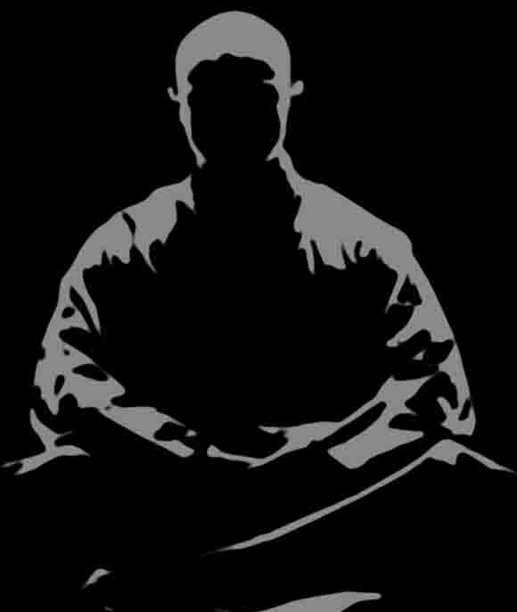
星辰残月变
昨天打坐一会就开始无杂念，马上杂念又起，我再次去除杂念之后，就感觉浑身一热，感觉很特殊，这样算是简单的入定了吗？
Taiguanglin
那只是呼吸变深，开始生产高能血而已——还和禅定比较远。继续努力！高能血走中脉的内容在前面都写了，自己看。
星辰残月变
昨天打坐感觉身体好像是一具尸体，不能控制，但是我如果想控制还是可以的！整个人处于一种很特殊的状态，很奇妙，但是只支持了一会儿，为什么？这算入定么？
Taiguanglin
不是入定！是你大脑缺氧，出现朦胧的状态。
星辰残月变
怎么确定自己进入定中呢？在进入定中之前有感觉吗？每次感觉只有几秒钟就没了，不知道算不算进去了，还是连门都没进去啊？求师父一一解答，谢谢！
Taiguanglin
还没呢！别管什么定不定，你就老老实实练呼吸打坐，坐到坚持不了就起来。不用刻意地追求定境，欲界禅定也要两到三年的时间。
rsww11
楼主好！我在听师父开示《心经》时，突然打开空，然后收摄空，感知到空里包含世界一切的心性。我在这个时候因为心生恐怖，十几秒后就睁开眼退出来了。再遇到这种境界出现，应该怎样才如法呢？
rsww11
楼主好！入定后起心动念时，眉间感觉就像发动机一样。这时候要止念，还是怎样的观想呢？
Taiguanglin
尽量不要去想，继续观照，继续你修行的法门。
rsww11
楼主好！利用耳根入定时有坠落感，持咒、念佛又感觉飘向别处，这时候是无视这种感觉？还是怎样呢？
Taiguanglin
你在修耳根圆通法吗？那会有意识掉进深渊的感觉——那是反闻闻自性的过程。继续就行！当从那种感觉出来的时候，就是闻所闻尽的时候了——自己体会！不说禅定中的境界。还有，你要确认你自己真的不是犯困或者朦胧的状态进入那样的境界的，这是要死的节奏！切记。
5473252
请问师父，入定之后读书可以一目十行，有过目不忘这回事吗？师父在读佛经或是其它书籍时是什么感觉呢？0 莫停0：我打坐时经常会惊醒，就是专注呼吸到没有东西——突然发觉这个情况，然后心就乱了。有什么好办法？
Taiguanglin
没有办法——都有这么个阶段！坐着、坐着，突然发现自己好长时间没打妄想——这本身就是妄想！继续坚持！欲速则不达。也不要强迫自己——否则只会加重烦恼。一开始坚持打坐一小时就可以了；一小时有妄想，开始烦躁不安，也不要起来。
蜀州隐士
师父这段是说的打坐不知道时间，是不是无记状态？
Taiguanglin
对，灭淫欲的时候就坐到淫欲起来，自己出禅为止。
燃然8
禅中感觉自己突然全身发冷，突然眼前一片光明，气住出现，观到自己胸部粉碎，上半身蹦裂、粉碎——很清醒！一怕就下坐了。请问前辈怎么会这样呢？
Taiguanglin
你修的是什么法门？应该还在欲界禅定当中。人的意识也会瞬间产生奇怪的幻觉，就像刚打坐时身体自己忽然跳动一样——不用管！起来活动活动，再坐就是。
Taiguanglin
这个只是过渡用的！到身体静下来，你的呼吸很微弱，甚至会停一段时间再呼吸一次，用功用在什么地方，幻觉也会产生在那个地方。人都爱惜生命，呼吸也属于身根；幻觉产生在身根，当然起恐惧之心了。要不换个法门吧！你一次坐多长时间？
燃然8
其实我可以坐两小时以上的，一般都是两小时，自觉误差在十分钟以内。
Taiguanglin
念佛吧！这个直接简单。从念到思，思念母亲般思念阿弥陀佛，抓住那个淡淡的思念之情；情要断就念佛，再引出思情。
燃然8
那就念佛陀？就这两字行不？我没看过经文，也没个念的。
Taiguanglin
不用客气！记住，关键不在四个字上，而是引出思念的情绪，就像思念母亲般，思念爱人般；也不能太激烈，那就情绪起伏大，会流泪，你就想象阿弥陀佛就是母亲，这么思念就可以。妄想来了就念佛。
燃然8
哦，好的！不懂的时候还望前辈能多给予指导。
炎明王
再补充个啊，看到楼主一再说梦中持戒很重要。想起以前的一些境界，说来请你看看。最早是打坐参禅，忽然间觉得五根接触到的一切境界都是自性化现的，当下心里就产生大欢喜，后来梦里忽然也生起类似的心，一念间把所有境界都幻化了，然后也有些妄想出来，比如看到恶龙来吃我，或者美女什么的。但立刻觉知都是内心妄想投射，一念就消了，最后只剩单一的自我意识凝聚在那里。之后不是睡着迷掉就是醒了，白天也没长久保持这些境界，妄想很多。因为我修定不怎么刻苦，后来一直琢磨这个境界，觉得应该是把那一念凝聚的意识化掉和虚空合一，但是做不到。再后来被工作、人际关系、娱乐生活这些困住，妄想更多，实修更少，体会到的境界也就更少了，多是在想道理了。很惭愧，不知道我当时体会到的那些境界算是什么呢？现在还可以对我的实修有什么帮助没有？请指点！
Taiguanglin
通常修行到一定程度，就算不能入定，也会在入睡前半睡半醒的状况下，或者是在早晨起床前那段时间，会进入类似入定的境界。
有些人还喜欢这种感觉，就开始刻意追求——不过都是幻觉而已。妄想一起马上醒来，要么直接进入睡眠状态，等第二天起来还不一定都记住——你把它当幻觉就好。就怕有些人把它当做某种暗示，开始和现实生活联系起来。比如，在那种状态下看到几个数字，就跑去买彩票；看到股市行情，就去买股票。
这都是你平时所关注的事情，所以会出现相应的幻觉。把它当真还和现实联系起来就没什么好结果了！
你就修常规的法门，不要着急！就算正常人，体质完全变化进入禅定需要三年以上时间——还是修行比较刻苦，属于上根之人。你每天只要坚持打坐一个小时以上，磕一百零八个大头，念一遍《地藏经》就可以了——这样也需要两个半小时多的时间。
加油！愿佛菩萨保佑你。
炎明王
我汇报一下自己现在的情况，继续向您讨教。身体方面没有太大的进步，不过对淫欲的控制比以前增加很多；很多时候欲火中烧，也可以一念之间化掉。我目前打坐的时候，主要做两个功夫：先是念咒加观想。这个时候我意识上是很用力的，尽量进入境界，这个显然就是第六意识；等这个做到一定的时候，我把第六意识放开，用内心里面的另一层意识。我不知道这个是否就是第七意识了，总之是里面一层的意识，来念一些《金刚经》或《心经》里面讲空性的经文句子，念着念着就觉得自我意识跟着这些句子一起慢慢变淡、变空，最后产生一种和虚空融合在一起的感觉，呼吸也明显变短、变轻。这个就是我目前做的功夫，请楼主指点。最后还要报告一件很无奈的事，就是自己在感情上受了一个很大很大的打击。有一段本来看起来很好的感情，由于很多件莫名其妙凑到一起的巧得不能再巧的巧合，就那样给破坏了。而且因为我应对得很不好，导致对方现在很生气，表示从此绝交再不来往——这个对我打击非常大，经常处于一种呼吸困难、浑身无力的状态。不但对日常生活无力应付，在修法的时候也会经常钻出来干扰我，导致中断，这个怎么破？补充，这种情绪在我进行后一个进入空的修法时不会出现。这个空很厉害，什么烦恼都可以化掉，我可以愉快地定很久；但一出定，进行前一种有为的修法和日常生活时就不行了，老是自己跳出来，挡不住。
Taiguanglin
爱情这东西，只有时间才是药，没别的办法。
关于修行，你那个空就是发呆！你打通全身经脉了吗？先打通经脉！经脉通之前的修行都只能算静坐——不是禅。你的修法基本都是自己打妄想而已。要修就修正道，别在岔路上浪费时间！
炎明王
你还是第一个跟我这样说的老师啊！别的禅宗师父都直接给我说心法——我自己也觉得这样修心不错。不过，既然你这么说了，我听你的——先搞身体。谢谢你了！
星辰残月变
昨天晚上总算进入初禅了——和以前不一样，这次应该是没差了。进入之后，全身暖洋洋的，很舒服。一直持续了好一会——不过我没继续，立刻退出来，继续感应。昨天进入至少四次！不过躺着睡觉也会进去，是怎么一回事？昨天晚上第一次进入初禅，但是进去之前，我好像看见佛像了，怎么回事啊？感觉蛮恐怖的！我没理他，马上就进入定了。那种感觉很恐怖，毕竟第一次见到异象，佛像眼睛还露光，吓死我了！
Taiguanglin
那不是初禅！初禅要把经脉全部打通，身体发热的感觉消退，还要灭尽淫欲的！你只是入静而已，在佛经里叫奢摩他！继续努力。中间看到什么都别管，不用害怕，你现在连入魔都不可能。
hy2hx
跪拜师父！最近我在观呼吸。一段时间后呼吸较细了，自己能感觉到呼出气之后鼻子能过一会儿再吸气。1、再接着，突然有种不知用何词语来形容的身体上的感觉，或身体上的体验吧！这种不知名的感觉和体验让我冒出一个念头：“咦，这个身体真的好像不是自己耶。”紧接着这种体验又冒出一个念头：“看来那个能知道自己在呼吸的那个东东应该才是自己。”再接着又冒出了“知幻即离”这句话——感觉自己好像有所感悟似的！2、再接着，又冒出一个想离开身体的念头；然后还有“尝试努力离开”的意念——我也不知能否用意念这词来表达——就是想“离开身体，却离开不了身体”的感觉。反正就像鬼压床的时候那种“想动身，却动不了身”的感觉。3、最后，感觉呼吸变粗，鼻子慢慢地吸了越来越多的空气。最后的最后，眼睛睁开了。师父，我这是快死的节奏吗？还是在学佛方面有进步的表现？还是被鬼上身了，还是什么情况？
Taiguanglin
不要离开身体！现在出体，只会把身体拖垮。打坐的时候，观呼吸要清醒——不清醒那就是脑细胞受损。清醒的情况下，会进入寂静的状态——很安静，心也平静——这是正常的！
第11 章 梦、加持(26)
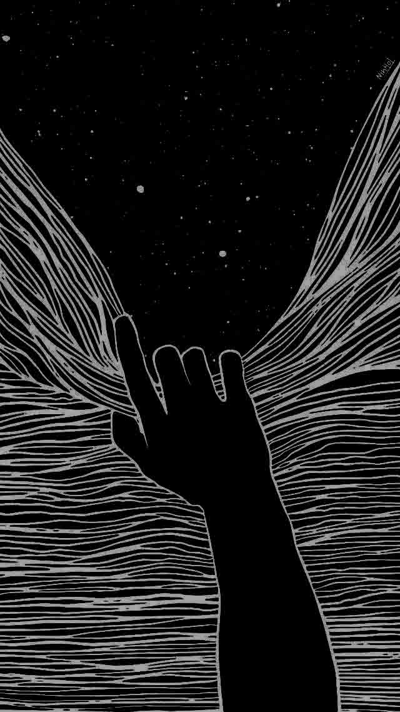
xienaifeng001
师父帮我看看这个梦，这个梦是三年前了。在梦中，我在一个无边无尽的黑暗，黑暗得还有些亮，什么也没有；我没有体感，我不知道自己是谁；周围沉寂，太逼真了；当时太害怕，努力挣脱，醒了过来。
Taiguanglin
我不会解梦！一般梦都是幻觉——不值得当真。
silverobama2
师父，你好！我有个问题想请教你。我今年年初开始信佛，吃素什么的。因为邪淫了十五年，报应来了，就开始信了。最开始时，因为不知道怎么入门，就经常看网络；有一天知道了预知时至，因为我很怕死，我几乎那段时间时常想；有天晚上，我就梦到了一个时间。我想问一下我是不是着魔了？因为我了解能够预知时至的人，要不就是大德或者是极善之人。还有就是，我小时候到现在一直有个印象在脑子里，我不确定是梦或是游戏里的。那会是我前世记忆吗？谢谢！
Taiguanglin
你很正常啊！梦见未来不算什么，也有可能是前世的梦——通常会反复做的！只做一次的梦不用在意。
圆圆柔柔摘月光
我很仔细地看了师父昨晚写的关于大脑的帖子。根据师父的描述，我的大脑如果不缺氧，缺葡萄糖，可能会出现短暂的晕厥，而后醒来时是没有记忆的。这里我要问一个情况，我怀孕七个月的时候，突然在洗手间晕倒了——当时是在跟同事聊天的时候晕过去的。同事把我扶起来的时候，我还意犹未尽，为什么呢？因为我晕倒的时间很短，可是我却在这么短的时间里有
一个非常清晰的梦
梦中去了一个非常美丽的地方，一面很大的桌子上摆满了各种各样的好吃的，看起来又美味又好看，不像是人间的东西；可是我刚准备坐过去吃的时候，我就被摇醒了。请问，这是幻觉吗？大脑因为缺氧或者葡萄糖，而产生的幻觉？
Taiguanglin
是幻觉！如果是佛菩萨加持，应该有非常明确的信息！
Taiguanglin
前面说过梦了。每个人都不一样！但是精进修行的时候，会反复做一种梦。你懈怠下来，这种梦就会消失！你现在精进修行吗？每天坚持吗？那个梦就是在告诉你，你在进步中！
圆圆柔柔摘月光
有一个小小的问题。师父回复别人的时候说过，如果梦是加持的，醒来后会记得非常清楚。我有一次做一个梦，梦到和一位师兄晚上在一起走路；结果走着走着，抬头看天的时候，突然发现，星星变得很大很大，小熊座、仙女座近在咫尺，似乎用手一摸就可以摸到。那种似乎站在太空中，在眼前看星星的感觉，醒来后仍然无比地震撼我！这是幻象吗？我三次梦到宣化上人，醒来后都能清楚地记得梦中的场景。梦中提到的人或者梦中发生的事情，甚至根据梦中的提示去搜索、查找，也能找到梦中提过的人。这算是加持吗？
Taiguanglin
那个梦算是加持吧！能得到利益就好。
圆圆柔柔摘月光
说不上利益。恒持法师是我梦过的，做梦之前不知道，后来百度才知道是美国那五朵莲花之一。后来想有个师父，上人梦里带我去了个地方，有智光和尚的字样半空显示。
众生未度不言休
老师，我已经非常久没有打坐了，没想到突然还能双盘坐一个半小时——感觉两小时完全不是问题。因为之前梦中有白衣人给我两把扇子和两蛋，后来某老师说是观音大士给我送法器和丹基，让我念莲花化生咒炼丹。下坐后，自然呼吸也是每分钟四下到六下左右——以前都是十二下左右，感觉进步非常大。
Taiguanglin
那就恭喜啦！发心纯正，自然得佛菩萨加持。以后就靠你自己走了！
非缘非非缘_
菩萨，求解一个分别心。我本来很少说梦境的，梦见各种流派神仙——这样的梦我做过很多，但是我没有去执着。前天睡前很有感觉，梦见很多飞来飞去；但是我是清明的，随时让他们走他们就走了；还梦见他们拿了很多酒或者仙丹，我让他们也吃也喝，但他们也没动；我也没管就喝了。我知道那其实是我的唾液，睡觉气循环得比较好，产生的绿茶味的唾液。我醒了以后也没想太多，可是睡在我旁边的两个人也做了这样的梦，我就惊讶了！他们没有接触过修行方面的事情，甚至抵制宗教。他们说梦见有人飞来飞去，教他们学飞行；很真实，脚一点就飞起来了。他们两个差不多的梦，以前从没做过，在那兴奋地吵吵了一天；问我做梦没有，我没说话。最后我说没做，还开玩笑说你俩上辈子是情侣来着，感情已经忽略性别了，他们还是很在意。我应不应该跟他们说信仰的事情？其实我很懒、很烦，讨厌一连串的需要负责任的事情。
Taiguanglin
修行到一定程度，就会出现加持的能力！是被动技能，也可以主动使用。在你周围的人会受影响的——梦境可以、不睡觉的时候也可以、在远方的人也可以——就看你的修为了！
信仰可以说啊，又不是犯法的事。
非缘非非缘_
做俯卧撑、仰卧起坐、练人鱼线，很累很累的时候，注意腹式呼吸。睡觉的时候起注意力会有光，很清明，身体反抗就撤注意力，然后入睡。有梦就觉醒持咒，或在梦中持咒；无梦依靠心理暗示跟黎明一起醒来，醒来时一旦出神立即持咒，然后归位——完整的一天。感觉已经解脱了！
Ruofeilulu
这么厉害啊！能知道自己在做梦。
禅修者厉害
有些人晚上做梦，白天醒来有相同的景象，为什么？
Taiguanglin
这种问题和修行无关，不答！建议去看唯识。
不孝忤逆女
有人问他经常梦里念阿弥陀佛，边走边念，问是啥情况？还有一个说自己读过几本经，又怀疑了，问是怎样。
Taiguanglin
梦里都能念佛，那是很厉害的境界！一般人做不来的，除非是前世的反应。总之是好事，努力！
念经怀疑的人，初学者不建议广读群书——这只会让你更加迷惑！你就读《地藏经》，读满一年之后再读别的佛经。
阿啦顶身等
师父，前几年我还没开始实修。在佛理上研究的时候，有天坐车，就眯了一下眼睛，突然就看到——也算梦到吧，我在一个很亮很亮发光的门前，一块块叠成的，说不出材质的那种；我一看到就马上睁眼了，才发现就一会的时间。师父，你说这是啥啊？
Taiguanglin
梦境不用太在意！如果真是佛菩萨加持的梦，肯定有重要的信息——你醒了之后还能记得很清楚。如果不是这样，那都只是大脑制造的幻觉而已。不用管！
要是下一世不能上去，还留在人间就会失去记忆！但是你可以在平时修行的时候一直发愿，希望下一世也能遇到正法，也能遇到善知识。这个愿力足够强，就能把你下一世的命运设计得比较令你满意。前提条件还是这一世的修行和持戒，还要多做善事积福。
hy2hx
看到阿拉丁师姐问梦的问题，我也有个梦的问题。
昨晚做了一个印象特深的梦
我伸出手，手心突然出现一尊金身佛像——是哪个佛我就不知了！然后放出很强烈的光，梦里感觉酷毙了。接着一下子我在全黑的世界里努力地飞行，当时自己有点怕。最后我出现在一个地方，感觉我好像是在蹲厕所，还能透过木门看见外面的人——还有点不好意思！师父，我这是脑子里的幻觉，还是真有菩萨加持我给我某种信息？
Taiguanglin
就当加持吧！这样你就开心了。
supid126
前天去游泳，防晒措施做得不到位，脖子与后背晒伤，全身酸痛，元气大伤；晚上涂了药膏就早早入睡了，大概是七点钟，恐怖的事情发生了。睡梦中，发现自己进入梦境，好像是个帝王或者古代的有钱公子什么的，身边的不是嫔妃，反正美女如群。我在她们中间嬉闹，后面逮到其中一女子，就把我的凶器放入女子的身体里；当时感觉自己的凶器很硬，很胀，女子身体的柔软真得真得很逼真。但是我立即就警觉起来，因为现实生活中我还是单身，平时最多看看日本的AV 电影，有时候打一下飞机是有的，但是从来都没有碰过女人呢！所以大惊失色，立马就唱起了《秽迹金刚咒》。没想到的是，短短的《秽迹金刚咒》，我平时念得都顺；此时，我无论如何也没有把它完整地念完，要么中间忘词了，要么最后忘记了，但是经文感觉有效果。突然，感觉自己后背有个东西，有如十二级台风一样的风力从我的后背强行拉出，但是那个东西，使劲地拽住我的身体不想出来。我很惊慌，我全身一点力气也没有，然后我把全身的意念强行集中在手上，使劲地挣扎。没想到我起来了，迅速去开灯。然后去抽屉里翻出了两本经书《大悲咒》和《大乘妙法莲华经》，然后念了一遍。因为有时候，继续睡的话，会继续进入刚才的梦境，延续着那个梦境的——所以念经文把梦境消除。然后按老师以前讲的，我把这两本经书放在枕头底下，继续入睡。看钟表，才十一点四十五分，十二点还不到，感觉电影里那些不干净的东西不是十二点钟才出来的吗？怎么出来得这么早？？问题一，身体虚的时候，是不是那些东西就容易进入你的身体，然后吸食你的精元，直到吸光为止，才会弃你的躯体而去？问题二，吉祥卧的时候，是不是枕头要垫高一些？右手压在脸下面吗？个人感觉枕头高了不舒服，所以用的是平枕。左手放在大腿上，右手没有枕在脸下——因为是平枕了，手不好放进去。我的右手水平向肩膀的方向伸直，这样行不？问题三，平时仰卧睡觉习惯了，吉祥卧睡的过程中，发现很容易变形。是不是要长时间练习，直到你这一生改过来为止？问题四，关于腹式呼吸。当我关注呼吸的时候，我就能做到腹式呼吸，当我不关注做别的工作的时候，呼吸忘了，我不知道是不是还在做腹式呼吸。这些持续了一段时间，我警觉自己没有关注呼吸，我又把注意力拉回来，又关注呼吸。我想知道自己如何在不关注呼吸的情况下也能自然地腹式呼吸，让它成为习惯？是不是没有途径，只有多练？直到行住坐卧，改变为止？时间与精进，改变一切？
圆圆柔柔摘月光
好恐怖啊！《秽迹金刚咒》不是用来应对天魔吗？你确定这个是魔之类的？你为啥不试试《楞严咒》？以前我做梦被五个鬼欺负，《楞严咒》几句话刚出口，那些鬼就跑得无影无踪了。
路过的小胡子
我那次做梦梦见个鬼吓我，然后我就念了三句《大悲咒》，就有白光照得鬼到处跑。可能是幻觉……
supid126
嘻嘻，你没有体会梦中那种酥麻的感觉！你没有体会女子身上所发的香气！你没有体会柔软面包的身体！你体会过吗？不过我没有射出来，但是真的很恐怖！
supid126
感觉真的有东西从我的身体里出来——附我的身了！我感觉当时的空气都很压抑——虽然我看不到他们，但是空气中的压抑是能感觉出来的！暖阳1 飞舞：咒语一定要多念！我有时也会遇到非人干扰，但它们都是被邪师给抓过来放我身上的。咒语多念才好。若非人道行高，平时咒念少了也不管用。
Taiguanglin
身体虚的时候，容易和鬼道众生感应！但他们顶多欺负你，不会把你怎么样。
但是那些吸精鬼只会盯上健康人，更喜欢修行人——因为修行人的精气足嘛！遇到这种事情是必然的，所以背熟一个咒用来护身很有必要。
吉祥卧也需要长时间的练习，枕头尽量低——你做得很好了！
呼吸只能多练了，习惯并不难，两到三个月足矣。
修真无争
师兄，我在睡觉有些昏沉的时候，意识中会出现一段一段的文字。有时候会定住，但我想集中精神去看，却看不到；又转到其它文字——感觉是一部经文，很长很长。这都是下意识出现的！有时候会静心，过一段时间身体会涌出一种安乐的感觉，很舒服。今天早晨出现过一次，我平时隔几天才静修一次，比较散乱。这些是什么情况？
Taiguanglin
是潜意识的反应！如果那些文字白天你没看过，那就是前世记忆啦。不知道你修的是什么法门？
通常修行都会有各种感应——最多是梦！有时候白天也会神情恍惚——就像进入梦境一样——是坚固的六识执着在开始松动。不用管！不管它自己就过去了。你追求，那种感觉就会愈演愈烈，最后被人当作疯子了。
修真无争
呵呵，谢谢师兄！我先这么修着。也没什么特殊的感应，随其自然吧！就是不知道我修禅定到什么程度，至少不会昏沉了。
Taiguanglin
我会往下写修行次第，到时候看吧！
墩儿娘
末学从去年五月底六月份开始慢慢接触佛法。末学读了一个月《地藏经》，又读了一个月左右《金刚经》。末学读《金刚经》的第一天夜里，好像是看到了末学前些世的一些事情——末学以前世跟某些人发生过什么事；好像末学一下子就知道了一些事；仿佛还看到了宇宙的形成一样；末学看到一条光柱，怎么形容啊，就像手电筒夜里打开后出现的光柱一样，那个好像是时空隧道一样的东西；转转转，就转出了这个世界。而且末学特别清晰地感觉到，即使我们此时此刻生活在同一世界，不同地点、年龄不同的很多人其实不过是同一个人罢了。阿弥陀佛！末学有一次夜里读《金刚经》，读着读着迷糊着了。突然醒来发现自
己的嘴巴在说一句话
我白某愿得一佛子！末学被吓了一跳，知道这并不是末学说的，知道也不是凭空出来这句话。末学最最喜欢《佛说阿弥陀经》。末学读《阿弥陀经》读了一阵以后，梦里梦见了极乐世界，特别特别美，说不出的好呀！里面单纯又清净、和谐；只有一个声音，可是无比好听，一切一切都在摇摆着唱这个无比美好的声音。师父，末学有时候夜里还会读经，看见很多字。使劲读，读到醒来。有时候脑子里会出偈子。昨夜末学做梦又去了那个食堂，那个食堂没有在末学今生中出现过，可是每次梦里都是那个食堂的面食部，小炒分得清楚，已经无数次，梦里每次都去这一个食堂。师父，太多太多的事很不可思议！末学在心里经常会想起来，忘不掉这些。末学怎样才能定下心，很顺利地念佛，不受干扰地念佛？末学怎样能不管做什么事，遇到什么事都不动心，心中只有阿弥陀佛呢？末学想要一种就是不管外界如何，末学的心能如如不动！没有喜怒哀乐，只有阿弥陀佛、只有极乐世界，怎么才能做到这样呢？末学看师父的话语十分受用，末学发自内心地想请教一下师父，希望得到师父的帮助。阿弥陀佛！阿弥陀佛！阿弥陀佛！恳请师父开示帮助末学，定下心来，如如不被境界动。只想去极乐世界去学习，不想再轮回。再重复这样重复了很多遍的重复了！
Taiguanglin
在原始佛教理论中有一种修行叫SATI——就是觉！行住坐卧中知道自己在干什么。
我们这里提倡平时念佛——因为平时有太多的文字妄想。对于利根之人就讲行禅——每时每刻都知道自己在干什么，对于五根中进来的感觉同时觉知；这种修行做到一定程度，你在梦里知道自己在做梦了。
不过，不管用什么法门修行，只要进入初禅的人，基本上梦里都知道自己在做梦，还能控制梦。享受一下飞行的感觉，想醒来就醒来。
现实都是虚幻，梦更是虚幻！
你只要知道不管你梦见什么，起了情绪波动，说明你和这样的事情有缘；当因缘成熟的时候，你会遇到那样的事情。
在解梦的书上说梦里杀人或者被杀都是好事！如果你梦见这种事，而起了欢喜心——你应该赶紧忏悔！
等修行到了一定火候，你会经常做被杀的梦——考验你对肉身的执着！有时候是被非常残忍地虐杀，你心中不起恐惧，泰然处之——那又说明什么问题呢！
第12 章 阴神、阳神、出体、元神出窍(22)
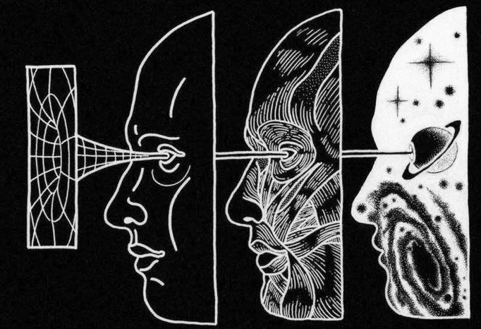
Sailing 旅：请问禅定是否是灵魂出窍，是否是阴神？
Taiguanglin
不是！禅定不是灵魂出窍，但修到一定程度可以灵魂出窍。
Taiguanglin
《四十二章经》里有一段，弟子问佛，宿命通如何得？佛答，灭淫欲即可！
如果你彻底灭除淫欲，进入初禅，你就能看到自己的前世今生了——修行会出现的第一个神通就是宿命通！
真气自来水
得道后，是不是意识能脱离肉体了？就像你在空中指挥一个肉体机器在动作，而这个机器的感受与你压根没关系，你仅仅是知道有这回事么？
Taiguanglin
能！那叫神足通——意识脱离肉体飞来飞去。境界高，还可以穿梭六道！
Taiguanglin
在梦中是带着肉体飞！神足通是现实的——撇下身体——只有意识飞。
picturesme
那我肯定是不敢让精神自己飞的，我怕我执给造一个能飞的假象，我还把假象当真了。
真气自来水
不是说神足通可以在现实中肉体飞行，缩地成寸么？
Taiguanglin
我没有这么理解！我认为神足通是脱离肉体后飞行自在。
花雨王子
大师，弟子愚昧问一些小成问题。高僧大德们出阳神的原理是什么？只求原理，不求大道理！
Taiguanglin
至于神通，咱一再强调，求神通必入魔！
你发心灭淫欲是正确的，你求宿命通就是倒霉的开始。淫欲灭尽，宿命通自己就出来了——看自己的因果没有问题！其他神通都一样！
元神出窍是神足通，理论上入二禅能做到，但是移动速度和移动范围很小——所以就说它是阴神；三禅的时候移动速度和移动范围大幅度增加，可以覆盖整个地球——所以说是阳神。四禅的时候，可以穿越空间去其他道中看，地狱、修罗、六欲天都可以！
但是除了宿命通之外，其他神通都有发挥的技巧——就是如何突破肉身障碍——这个不是什么人都能练出来的！
佛陀的众弟子中目犍连是神通第一，难道别的弟子的修为都不如他吗？不是！这个发挥神通的技巧，目犍连掌握得最熟练，所以说他神通第一。
以后会谈到神通的基本原理，这里就不详谈了！但是，技巧无法传授，只能自己摸索——都是上辈子练过的人容易出现神通。
护法神不是来帮你修行的！护法神的出现要满足三个条件：
第一，你的发心要纯。满脑子都是龌龊的想法，自私自利的人无法请到护法神。
第二，持戒精严。通常在家人很难请到护法神——没有戒行，人家不搭理你！
第三，修为。你的修为要超过他们！护法嘛，你没有法，护你什么？人家来保护你，是看你有大修为，跟着你可以学习和修行——这才会来保护！而且护法神不是奴仆，你不能使唤他们。
最初出现的护法神是土地神。他们看到自己管的地面上有大修行人，就会过来提供保护和方便，可以阻止乱七八糟的外邪靠近——这个也要到灭了淫欲后才有可能。天界的护法神出现的要求更高了——凡夫修行基本没有多大的可能请到护法神。
求神通也好，求护法也好，都是心外求法！凡人贪恋名利，你贪恋神通；凡人贪恋美女相伴，你贪恋护法相随——这有什么本质上的区别？
修行应该把重点放在灭执着上——灭到一定程度该有的都会有！
wxwy4399
肉身出离了“我”之后，感觉会不会更好？
Taiguanglin
要是回不来，就死在那里了！不要玩稀奇古怪的，没有好处，最后都是半疯半癫。
星辰残月变
师父，进入初禅前是否会有中阴身出体的情况啊？看别人写的，说初禅前会有中阴身出体，可以四处游荡，是否是正确的？
Taiguanglin
初禅出体是阴神，会消耗巨大能量——不要玩出体！
非缘非非缘_
最近做了不少春梦，但是都被我克制住了。今天又来了，大概是早晨四点左右，不是在睡眠中，我已经醒了，而且又是出了阴神。菩萨说这样不好，于是我就回到身体里压住不离体，耳朵能听见外面，知道眼睛在暗尘中。这个时候丹田气就是要往外冲，翻江倒海的气势。没办法，我用道家的方法拉回来了。怕再来控制不住，于是就醒了。醒来后，感觉有什么堵在胃里，类似喝了很多浆糊那种感觉，有点想吐，请教菩萨这是什么原因？
Taiguanglin
出体问题，在没练成阳神的情况下出体，会消耗巨大的能量——频繁地出体会把身体拖垮！
我上大学的时候也玩过，出体之后连房门都出不了，只能在屋子里转。还有一次，遇到非常情况，夏天太热，开了窗户睡觉，出体后顺着窗户就出去了；结果外面有野鬼，让野鬼拽着飞了老远；飞过停车场和运动场，往山上的坟圈子飞去。我吓坏了，拼命挣扎，好不容易回来了——以后再也不玩了！
Taiguanglin
还没怎么修行的初学会有清明梦，或者频繁出体——那是身体极度虚弱的缘故！要多运动，最好磕头——增强体质就会好的。一般参禅打坐的人，功夫到了一定程度，自己就会练成清明梦——这不是什么很高的境界。
元神出窍就不说了，自己修行，啥时候成了就成了。但是，你追求这种神通，会有外魔入侵，是很危险的！还是老老实实念佛打坐最好。
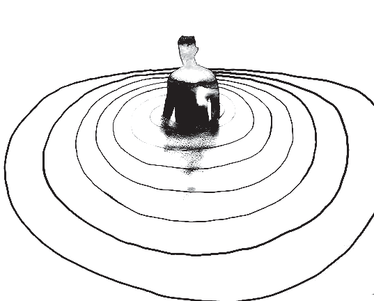
非缘非非缘_
我有时候打起坐来，气感十分足。头顶的头发好像都在动，眉间跳动，闭目可以看到气通过眼帘闪光，甚至有时候刚刚睡醒，在模糊意识下想起了打坐修炼。止观之下竟然能达到出阴神的现象，也不完全是阴神——因为脚能踩到实地，但是走不远；除了脚和腿，其他身体部位没有实质感；能看到、听到周围人说话，什么都知道。各种境界来去不一，有时候打坐连唾液都没有，觉都睡不好，有时候很有感觉。总之，层次上上下下，不知怎样才能稳。
非缘非非缘_
求稳来的，有时候口干，有时候出境界，层次上上下下。求稳，可能是福德不够吧，我有很多方向性的疑问。
Taiguanglin
你先要确认自己是在非常清醒的情况下进入定境的！如果是半睡半醒，浑浑噩噩地进入状态，那是脑细胞受损，出现幻觉而已，持续下去会变成神经病的。
为什么状态会时好时坏，那是呼吸问题！如果你晚上吃了饭，又吃了肉，那呼吸不能吸入足够的氧气制造高能血，那就不能入定了。先保持良好的身体状态，才能随坐随入！
还有出阴神，你现在观头部，这样气会汇聚到头部——能量足够大的时候就会出阴神！可是这种出体会大量消耗能量。你连飞都不会，只能在地上爬——单是这个也要消耗能量。能量消耗太多，回来之后就会很累，你也不能做到随坐随入。因为要进入禅定的境界，也需要身体储存着一定的能量。你如果继续玩出体，人会越来越虚，早晚会把身体拖垮。
你现在应该参疑情或者思情，除此没有其他方法！
你说的观全身理论上可行。这是用第七识分别心来观照身体的所有感觉，包括眼睛和耳朵。但是现代人根器低劣，中间有很粗重的苦情，这些苦情只有在遇到境界的时候才会发作，你自己觉得自己情绪很稳定，那只是自我感觉而已。所以，还是参疑情、思情最保险。
非缘非非缘_
菩萨，我的魔障看来不是一般的多。睡觉入睡一静下来就自动出体，要醒了还是要出体，我现在晚上基本维持半睡眠，不睡了。我最近看了不少资料，很多有修为有神通，用气功帮别人治病、布气立愈、德高望重的大师们，到了晚年都没了神通，没了气，都得了大病，谁都救不了。我现在白天不打坐了，放弃一段时间的修行，看可不可以心安？昨天没有打坐，不停地溜达了一整天，睡前没有作任何的心理暗示，很快睡着了。做了一个梦，开始是在寺庙里学习，后来有拿着枪的士兵来了，带来了基督教，有女人，还有肉。我没动，然后离开了，最后我又回到了那个寺庙，可是已经是一片庄重的遗迹了，然后听到一段音乐，枕头都哭湿了一片。菩萨讲得真切，呼吸到下腹部以后，会自然牵动会阴和尾闾。最近有时候耳朵会发胀，从耳朵后面到耳廓，正常吗？菩萨，我有一个执着，就是不想在梦里无法知觉，想在梦里也做主、也自由，所以总是有心理暗示。马上要入睡，如果有妄想会惊醒；可能正是这样才会出体，不知这个执着应该怎样引导？最近总是想流泪，没有伤不起，被动性质的。菩萨，您提到《易筋经》。我有一段时间翻了不少资料，《易筋经》和《洗髓经》和道家相互融合有些关系，练习《易筋经》的时候，会感觉到脚心和手心里有明显的气流通。睡觉的时候，想起了《易筋经》里的动作，一下子就缥缈仙境了。不知练习《易筋经》可以起到直接激活筋膜的作用吗？
Taiguanglin
身体虚的时候更容易出体，精神力弱也容易出体——所以磕头、练呼吸、打坐不能放下！你放下了，这种情况就不会改善。我也是这么练过来的，修着修着自己就好了。如果说针对性的方法，那得做点其他运动，足球、篮球、乒乓球等。
出体是因为意识和身体的结合不够紧密！磕头和慢跑是最好的运动，且都是机械性的反复动作——你可以一边打妄想一边做。你要做的是高度集中注意力，意识和身体高度协调地运动，这种运动可以让意识牢牢地抓住身体，不容易出体。
如果平躺着容易出体，那就换个姿势睡觉，右卧睡觉吧。
还有，修行人的一天只有清醒和睡觉两种状态，没有半睡半醒的状态！这种状态最容易出体——也就是入睡前和早晨刚醒过来的时候。所以多运动，让身体疲劳，一躺下就睡觉；起来的时候，别赖在床上，马上起来洗脸，这样能避免出体。
这种现象不是一天两天就会好的，但是随着修行的深入会好的。当出体的时候，要快速眨眼睛，或者用力动手指头，让意识快点回来。努力。(2014-07-02，22:41)
只要不是脑袋胀，其他地方没事。本来不通的毛细血管扩张，也会有胀的感觉。
情绪问题也正常，修到一定程度会把情绪种子倒出来，无缘无故很忧伤，无缘无故很烦躁，都是这么修过来的！磕头出汗可以排解不良情绪，可第二天又发作，那就天天坚持。
睡觉前你暗示自己，你会睡得很死、很舒服，一觉醒来，精神焕发，这样就可以了！
《易筋经》可以练。
浮生有涯
师父好，弟子从小体弱，二十三岁练了一种气功。有一种无形的力量启示我看了几本佛经，而对佛法有了一些了解，但没有细研修持。那时发现唱歌可以调气血，卡拉OK 飙高音，一个人在家吼好几个小时的；后来年龄大了，唱一个小时就觉得到位了，再后来觉得不需要了。练气功对身体有一定的调节，但并未改善根本。去年开始身体下滑严重，睡眠不好坐着都累。今年三月研究和实践打坐，才明白自己的前半生完全虚度！恰在此时遇到师父，真是福缘！师父，弟子有一事放不下。母亲今年五月去世，生前我也多次告诉她，默念佛号可以往生极乐( 母亲因病失去语言功能十来年)，她也默念过。我很想知道母亲往生何处，不知师父能否帮帮我，或是有什么开示，弟子合十感恩，南无阿弥陀佛！
圆圆柔柔摘月光
见《地藏经》中第四品光目女救母和第十二品“...... 是人更能三七日中，一心瞻礼地藏形象，念其名字，满于万遍，当得菩萨现无边身，具告是人眷属生界，或于梦中，菩萨现大神力，亲领是人，于诸世界，见诸眷属......”虽然，你问师父也很好，可是您母亲去世，您到底有没有为母亲念《地藏经》做诸功德呢？
圆圆柔柔摘月光
《地藏经》就是一部孝经，如何为亡人做利益，经中说得很清楚！希望您能为您母亲持诵《地藏经》。五月份，现在已经过去两个月了，不晓得还有没有用。浮生有涯@ 圆圆柔柔摘月光：惭愧得很，我是初学中的初学。母亲去世前，我除了反复为她讲述阿弥陀佛西方净土世界，自已就拼命打坐念佛，祈求大愿大慈的阿弥陀佛能帮助母亲。那时只知心诚最重要，也不知道《地藏经》。如果知道，我会在四十九日内天天诵读的。现在母亲应该已往生，不知还能做些什么。浮生有涯@ 圆圆柔柔摘月光：现在的我彻底认识到自己的愚钝，其它的修行法门难以明了和掌握，唯求念佛往生净土，学成后再来帮助所有受苦受难的有缘众生。母亲是我此生最放不下的人，若我自身有成，一定要找到她，度脱受尽苦难的她，南无阿弥陀佛！
Taiguanglin
抱歉！我没有神通，不会给人看这种问题。你自己修地藏法门就可以了，坚持三个月到半年就能感应到——地藏菩萨告诉你的，你就不会怀疑，也会在修行上增加信心。加油！
无法无戒
师父，您好！我还有个问题，请师父开示。我看了一些有关元神离体的介绍，当离体了，这识神是与元神在一起的，那本来的身体就没有意识在控制，或说就谈不上修行了。那是不是元神自己修行？还是元神离体时间不是很多，识神绝大多数时间还是在身体上，依旧在身体上修行为主？圆圆柔柔摘月光@ 无法无戒：你说的中脉，是任督脉都通了吗？我觉得老实按照师父的方法，先修再说，不要问别人。每个人的法门和机缘不同，可能到了上边，就融会贯通了；但还没到的时候，可能千变万化的。你按照师父的方法出了疑问或者有啥问题的时候，你还有指导。
小胡子
大师父，求指点！今天刚躺了一会儿，就观呼吸。突然念头都断了，像一声爆炸一样的；周围全是寂静一点儿声音也没，等一会儿又感觉到了。再过一会儿，意识好像脱离身体了，离开身体半米远；很恐惧，就拼命地想动弹身体醒来，会不会回不来了？求师父指导！
Taiguanglin
不要躺着练！
你说的情况有两种可能性：
一种就是做梦。梦境和现实有区别：你觉得自己离体漂浮，看到的周围环境等回来之后和现实不一样——那就是做梦，不用在意！
另一种是离体。如果真的离体，那是你身体比较虚弱，而且这种离体会消耗很大的能量。长此以往，身体越来越虚，头也会痛。
先站着练呼吸，打坐的时候就放松，让身体自己呼吸。
第13 章 疾病(47)
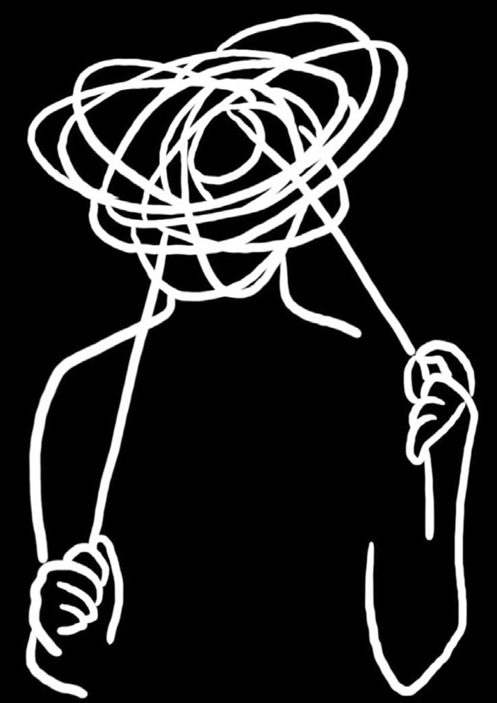
观兰法
先寄存两个问题。一、快两年不吃肉了，只在中间吃过两次海鲜。对肉没感觉。那您说吃肉边的菜算不算戒肉呢？还有我还是喝肉汤的，因为随顺环境，我估计肉汤也算肉吧？！那以后也不能喝了，那实际生活中很不方便，总不能总是自己做菜饭，很多时候是和家人、外人一起吃的。二、看您的发帖，身有残疾的不能打通经脉，也就不能入禅定。那对于我这样的身体残疾人来说，我这样的人今生就没有解脱的命了吧？我是强直性脊柱炎，身体僵直，胯骨不能弯，只有膝盖能曲动。明显是业障太深厚，今生只是受罪来的。也想过了断这残躯，但各宗教又都说自杀罪孽更大，只好糊涂瞎活着呢。心又不能沉寂，羡慕火热大千世界生活，真是进退两难。如果能看见自己因果，也就心踏实了。但这又是不能做到的，我没那个禅定功夫。不知道我今生的存活意义是什么？难道仅仅是我身心受罪，还有让世人看到我这残破身躯，得意有优越感吗？还是能激发出一些人的同情心？自己本身慧力不足，不能彻底斩断妄念，所以不能遁入空门。但又没有红尘之福，只能眼巴巴地看着花花世界不时升起幽怨自怜之念。您说对于我这个四十多岁的废人来说，出路何在？如果有人不以为这人世是苦，活得有滋有味的，甚至就像电影《青蛇》里那个许仙，被法海用佛尘拉着在空中大喊的那样，不愿意解脱，就愿意在红尘里滚，那对这样的人，只有让他们真实看到了自己轮回的种种过患，才能让他们清醒吧？更何况现在唯物主义教育，很多人根本不会去考虑精神家园的归宿这种终极问题，只是对现实考量，所以很是大无畏，只要不犯王法，什么昧良心的事都敢做。对于这样的人，佛也没办法吧？
精诚唯一
我也是强制性脊柱炎，已经十多年了，痛苦只有体会过的才知道。不管什么病都要有一个好的心态，痛苦和病都是虚假的，就连我们这身体也是，人生来就是来受报的。没有为什么，有业就有报，有因就有果。过去累劫以来造的业，不是你这一生就能报完忏悔完的，我们现在要做的就是不再造业，时时忏悔。
Taiguanglin
对于身有残疾的朋友，有一种心法叫影躯法，由达摩所传。当年慧可在达摩面前自断一臂，表示求法的诚心，达摩就传慧可影躯法，突破身体的障碍。如果说残疾人不能证悟，那慧可怎么就做到了呢？影躯法本来由少林所传，历史上少林寺出过不少身有残疾的高僧，后来少林寺经过多次战争和火灾，很多宝贵的书籍都失传了，这个影躯法也失传了。所以说，残疾人也可以修行，也可以证悟，不管你少一臂还是少个肾，还是什么脊椎炎，都可以修行。这个影躯法先从观想开始，观想自己有完整的身躯，观想真气随着正常的经脉流动，没有胳膊也可以，观想自己那个没有胳膊的位置上，真气会透过皮肤出来流动，就像有胳膊一样，没有肾也可以这样观想，身体只是幻躯，真正的身体是阳神，不是我们这个世界的物质，幻躯受损，阳神不会受损。你们两位就从念《大悲咒》开始吧，每天坚持念，越多越好，然后打坐，不能双盘就单盘，能磕头就磕头，不能就多走走，不活动，身体只会更快地腐朽。后面还会教呼吸法，人的大部分疾病都是从缺氧开始，练好呼吸，一般的小毛病自己都会好。佛菩萨不会放弃任何人，只有人自己放弃自己而已。
炎明王
我那个本来大脑中心就是自己瞎鼓捣出来的，那我就听你的先打通经脉再参了，不玩那个了。就是不知道我现在只有一个肾的情况，可以磕那种大头不？
Taiguanglin
磕头先试试看吧，一天一百零八个应该没问题，也别太勉强，慢慢增加。
炎明王
手术切除了一个左肾对寿命、健康、修行会有什么影响？可以弥补吗？最近开始放生，尽量吃素了，还在念《长寿佛心咒》，不知还能做些什么，请多多指教。我觉得我就有点像你前面说的，自己练气功，脉没打通就开始漏气了，再加动了手术，现在体力挺弱的，我还单身，没生孩子的，真郁闷，你要能帮到我就太感谢了，怎么供养你都行啊。
Taiguanglin
你就当你是正常人，从降魔坐开始练起，不用担心。没有牙的人经过修行，牙都能长出来，晚期癌症的人只要有半年时间就有办法康复，没个肾算什么。气是无形的能量，虽然一开始由有形的器官制造，但一旦气形成循环，基本可以忽略医学常识。上午打坐两个小时，晚上不要吃饭，打坐两个小时以上。还有，不要吃牛奶、豆奶、冰淇淋、奶酪等高蛋白食物。加油，愿佛菩萨保佑你。
黛眉舒君颜
看了很久，忍不住也问个问题，我是乙肝病毒携带者，还得过肺结核，肺里有钙点。都是没有传染性的。出家是我的计划，不知道一般的寺庙会不会收。
不孝忤逆女
关于肺结核钙化点，楼主有一帖是专门针对这个讲的。等会我帮你找下在几楼。
黛眉舒君颜
几月前已看过。我的问题是有这两样病，但是没传染性的，出家给不给收？另外，胜音世界的问题。不过，还是非常感谢！
Taiguanglin
抱歉，出家人过的是大众生活，一起睡觉、一起吃饭，有传染病的人不收的，出家前要检查身体，连痔疮都查，有痔疮不可以。你可以到当地的寺庙问问，被拒绝了也别太伤心，出家人吃的饭顿顿都是债，自己能够自力更生，还不如自己养活自己，再用业余时间修行，一样可以往生。加油！
黛眉舒君颜
没有传染性也不可以嘛？我现在在国企上班，这里没有这个要求的。正准备辞职，一心想出家。
Taiguanglin
你去庙里问问吧，只能祝你好运了。
tsjery
师父，如果本身是乙型肝炎病人，按照你的方法，每天磕头、练习呼吸、念经、打坐。这样坚持练下去可以吗？还有别的需要注意的吗？还需要继续服用保肝的药物吗？
Taiguanglin
一开始先吃药，三次改成早晚两次，仔细感觉身体，如果越来越不舒服，那还得正常吃药，但是修行不要放下，乙肝完全可以治疗，加油！
圆圆柔柔摘月光
师父，早上到公司来，才仔细看了您昨晚发的大段文章，看完之后，我已经是心灰意冷了，尤其是看了关于筋膜的那个段落。我剖腹产是不是已经把筋膜给切断了？筋膜还能恢复如初吗？我小腹下方这个刀口，是不是我根本也不可能会调用到下腹来进行呼吸和修复了？我真没想到当初那么任性地决定要剖腹产，会给今天的修行带来这些副作用，恐怕是今生也无法康复了吧？师父我好沮丧啊。已经快六年了，刀口的位置和样子是这样的( 见附图：图11)。在肚脐眼下方两个食指的长度处。我画黑线的地方就是位置，就在会阴的上方，长度大概有十三厘米，我怎么就觉得是筋膜的那个聚拢的位置呢？师父，我已经不知道自己要表达什么了，大概就是要不直接念佛好了，这种身体还能帮我到达深层禅定吗？
圆圆柔柔摘月光
师父啊，我痛得眼泪都要出来了，今天坐了二十五分钟后按摩了五分钟，又继续坐，又坐了大约十分钟，左腿膝盖那里，就像心跳一样，怦怦地跳，然后我上半身就开始晃，师父，您慈悲我，给我加持下，让我早日过难关吧。
Taiguanglin
那个伤口不是都缝好了吗？筋膜本身有很强的伸缩性，就算缺了一小块，也可以从旁边拉过来，那点伤口不碍修行，别担心。气不足体力差的时候更疼，也坐不直，努力吧，才一个月而已，能坐二十五分钟很好了。我一直在加持你。
圆圆柔柔摘月光
师父今天来得好早，今天心不静，盘腿时间没够，我还是磕头吧。既然师父提到了剖腹产的孩子，我就多嘴问一句，之前看到姑射山人说剖腹产的孩子会少一魄，对孩子影响大吗？我就是觉得对不起孩子因为我是怕疼选择了剖，所以一直带他读经，他四岁就能背下《大悲咒》和《清静经》，现在我领他读《心经》。我知道不要求福德，可是哪有一个妈妈不想为孩子多积攒些福德呢？请师父也说一下为孩子积攒福德的方法和剖腹产的孩子如何能像健康小孩一样？
Taiguanglin
剖腹产真是害人不浅啊，望各位没有生育的女性朋友和男性朋友，大家一定要注意，你把肚子一打开，空气就会进来，腹腔里的压力和外面的大气压变得一样，腹压要小于上面的胸压，这样横膈膜才能正常下降，胸压要小于外面的大气压，这样空气才能顺利进入肺部。你一旦打开肚子，以后呼吸的质量会明显下降，不只是呼吸困难，你的内脏大脑等所有器官都会因为缺氧而开始病变，就从你先天不足的脏器开始，什么肠炎、胃炎、鼻炎、咽喉炎，你想再把腹压恢复到正常数值，那得需要几年功夫的，还得专门练习，精心调养。手术是下策中的下策，为什么一定要把病养到那个时候才治疗。女性朋友们，你们要孩子最好一年前开始练腹肌和缩阴，腹肌强健的人生孩子痛苦很少，像拉屎一样用力几次就出来了。男性朋友们，你们爱你们的妻子，还要孩子的话，多抽出时间一起运动，慢跑也好、磕头也好，你的妻子一旦剖腹产，以后身体会很不好，你得花更多的时间照顾，剖腹产出来的孩子也没有正常顺产的孩子健康。
不孝忤逆女
破功了必须。你也看过姑射山人的帖子？我追了好久。圆圆柔柔摘月光@ 不孝忤逆女：我站桩了几天，大腿居然肿，就没再站。破功了是什么意思？不孝忤逆女@ 圆圆柔柔摘月光：还有你私信我的那个问题，我是绝对不知道的。对不起，我经常忽略私信。其实方法已经可见一斑，还是想真窥究竟。可能女众就是这样。不孝忤逆女@ 圆圆柔柔摘月光：这样会给修行人带来麻烦。甚至造些业出来。你没看到那个批评女众的帖子。写得虽然恶劣。其实也蛮有道理的。圆圆柔柔摘月光@ 不孝忤逆女：想说就说嘛，不要因为别人的话就轻易改变自己。认准自己想做的，现在师父在，不抓紧多问多学，那不是傻吗？不孝忤逆女@ 圆圆柔柔摘月光：是有点傻。不过你问的问题我还都挺爱看的。共勉。
Taiguanglin
你的孩子能遇到你这样的妈妈已经很幸福了，从小就能闻到佛法，带着一起修行就是了。还有，凡事你都要给他做个榜样，行为才是最直接的教育，用说的没用。
圆圆柔柔摘月光
师父好，我想汇报一下，其实好几天前，我就体会到了那个身体一撤力，就能吸入更多气的感觉了。虽然您有让我稍微休息一下再练，可是，我感觉已经形成了某种习惯，不能说已经练成了腹式呼吸，但是，大多数的时间上，确实是在用腹部呼吸的。另外，也想汇报一下关于身体的修复，我不能确定这个算不算一种修复。其实我觉得问了师父您，您应该也不知道( 因为是女人的问题)。我写在这里，如果有有修为的女同胞，可以帮忙解释。因为男人女人有别。我百度了一下，一般女人的月事是二十八天左右。我以前的就是二十六到二十八天，很准。这个月，居然破了记录，变成二十九到三十天。因为从来都是准时或者提前，从来没有延迟。我觉得是不是身体已经在修复了？其实红宝石之前有问过您，有没有认识的比较有修为的比丘尼师父，愿意出来讲法的？男女之别在修行上到底有没有差？请师父开示。
Taiguanglin
月经量会减少，周期会变长，这个正常。继续修行，到后面量更少，周期更长，最后消失。
阿啦顶身等
师父，上次你说口水吐掉后会虚，我现在是越来越虚了，半夜睡觉一直出汗。然后我再问个问题，自从有次十五六岁例假去海里游泳后就开始月经不正常了，就是正常的月经还是正常地来，来完好了一星期左右，开始不正常的月经几乎每天一点一点的，到现在十来年了一直这样，问了中医、西医和算命的，都说没什么，我都不知道是咋回事了！不好意思啊师父，难为你了！
Taiguanglin
那不是冤亲债主附体，是你体虚宫寒，饮食要尽量避免寒性的食物，不要吃肉和鱼类，海鲜都是寒性的，最重要的是练呼吸，练到小腹发热就能逼出寒气了。晚上睡前再用热水泡泡脚，泡个二十分钟。磕头、打坐也要坚持，气血运行好了自然就会好的。
圆圆柔柔摘月光
师父好！替所有女同胞们一起问一下女同胞们特殊
情况的那几天里
1、可以正常地练习双盘吗？只要不观丹田即可，观呼吸或者念佛都行？2、可以正常地练习腹式呼吸吗？3、磕大头也是正常地磕？
Taiguanglin
经期只要打坐、念佛就行，不要观丹田，也不要磕头，这都会让血量加大，会很疲劳的。练呼吸可以，但是好好观察自己身体，感觉不舒服就别练了，我毕竟没有体会过，不能靠我的经验来说，只能说理论，还得靠你们女同胞们交流经验，选择适合自己的修法，实在不行干脆给自己放几天假又有何妨，总比练出毛病来强，安全第一。
笨笨7060
打坐五天，只能双盘二十多分钟，每天坚持两小时以上，包括单盘，今天嘴里好难闻，自己都感觉到了。今天开始吃素，准备慢慢来，毕竟生活在这个社会，粘上难免，尽力而为，等再进一步彻底吃素。邪淫戒了段时间，一定坚持。好容易找到此帖，阿弥陀佛。
hy2hx
嗯嗯，希望这个社会到处都是素食馆。我真的好希望啊。希望能开全球顶尖素食上市公司。
Taiguanglin
胃不好，胃炎、胃溃疡什么的，坚持打坐，还要练呼吸，重点还是练呼吸，胃病自己就会好，
皮卡堂69@Taiguanglin
恩，好的。我工作长期坐着，胃出毛病了。谢谢师父，好开心啊，哈哈。
笨笨7060
末学打坐了六天，晚上不吃饭，想请教哪位师兄知道，我这两天嘴里好难闻是什么原因？何时能好啊？阿弥陀佛。
珂骏
呵呵，肠胃不好，有慢性病，或者有炎症( 夏天容易上火也是一大原因)，就会导致口臭，嘴里难闻，饮食清淡，过段时间就好。
Taiguanglin
肠胃不好，多练呼吸，练到腹部发热，再到胃部发热就行了，自己就能修复，不要着急。
hy2hx
师父救命啊，师父啊，如何才能够只吃素却能身体健壮？我现在太瘦了。瘦子还跟别人说学佛，别人一看就说学佛学成这样，还是离佛教远点。这让人好郁闷啊。跪拜师父回复啊！！！
Taiguanglin
练呼吸，你的肠胃不能正常吸收，呼吸练到小腹发热的时候就差不多了。
mlhgf888
师父，是不是我身体出问题了啊？因为出现磕头胸口堵，往上撞，当时是早上没吃早饭呢。我很瘦，两尺三的腰。师父，我大面积胃溃疡，十二指肠溃疡，去医院检查，是中度糜烂。是不是我练得不对造成的啊？因为一年前一直想辟谷，就看淡一切似的淡化食欲，吃素一年多了，不是纯素，因为有时吃鸡蛋。
Taiguanglin
你的肠胃都肿胀得厉害，往上顶横膈膜，呼吸起来就困难。你每天磕头多少个？不要超过三百个，就是半小时。打坐要两个小时，可以分两次，降魔坐。还有就是一直练呼吸，坐着站着都练，练到小腹发热，热感扩散到上面胃部，你会觉得肚子咕咕乱响，这是正常现象。吃饭一天两顿，最好吃些容易消化的粥，晚饭不吃，喝蔬菜汁或者果汁。如果症状严重可以用中药调理，我不懂中医就不说了。西药不要吃，越吃越坏，刚开始感觉好点，那只是麻痹神经而已，吃得久了会出现依赖性。
大家也别整天泡在电脑前，看电脑太久，会让玉枕穴的神经都受损，这里神经受损，丹田的神经也不能激活，凡事都要适可而止。
mlhgf888
师父，我颈椎病很重，还有腰间盘突出，是不是就不能打坐参禅了？我每次打坐后，第二天早上都感觉很累，就像干一夜活一样，是否与颈椎和腰间盘有关，望师父指点。
Taiguanglin
先磕头吧，慢慢练，磕头可以把错位的骨头都矫正过来。睡觉时不要枕头。通常每天坚持磕头一个小时以上，就是五百个以上，三个月就能矫正颈椎和腰间盘突出，最多六个月基本能恢复。不坐禅也行，光是磕头和练呼吸就行。
ruofeilulu
老师，我每天上班大部分时间都低头抄经，导致脖子总是酸，该怎么办呢？
Taiguanglin
你上班这么偷懒，老板还发你工资吗？拿人钱财，也该有个工作样吧。抄佛经是好，但是也别伤着身体。拿个东西垫起书，让书本形成斜面，而不是平面，这样后脖子就舒服多了。
ruofeilulu
冤枉啊老师，我替共产党打工，只要把手头事情完成了，空闲的时间还是挺多的，我都用来抄经了。其他人都用闲聊来打发呢，因为我家人比较反感我学佛，只有利用上班时间了。
再回风起云涌
师父，很多中年人的膝关节部位都不健康，那么打坐可以治疗关节炎吗，有没有什么具体的修炼顺序？还有感谢师父前几次的回答，简单又科学，功德无量，我在这里给师父行礼了。
Taiguanglin
打坐可以，关键是练呼吸，吸入大量的氧气，让小腹发热，让这个热流逐渐扩散，一直到膝盖，每天练两个小时，三个月基本就有明显好转。不能打坐的人坐在沙发上，上身挺直练呼吸也行。最好平时都在练呼吸，不管干什么都练着。
tsjery
请问师父夜里睡觉总是磨牙，而且磨得很厉害，牙齿感觉越来越敏感了，有什么对治的方法？
Taiguanglin
原因网上找吧，有很多种原因。通常修行一两年就不会磨牙了，那都是你睡觉的时候大脑里控制下颚骨的神经还在活动的原因，让神经活动的原因呢，一种是你睡眠不好，身体不能放松；一种是缺氧，肚子里有虫，也会让大脑神经不能正常休息。修行就好了。
silverobama2
手淫导致肾虚以后，神经症也会。
觉真是我
老师好，我最近老是牙龈肿痛，这几天连耳朵也痛，好几天晚上都无法睡觉。想问下老师，是不是打坐呼吸问题引起的，今天还去打了吊针，感觉效果甚微。像这种情况有没有好办法调节？还是先停一段时间打坐、磕头，先专练呼吸？
Taiguanglin
把所有帖子全部看完，要磕头和练呼吸，打坐先停一段时间，平时呼吸次数在十二次以下到十次左右打坐就不会有问题了。
圆圆柔柔摘月光
还有一个问题代父亲来请问师父，我老爸有严重的痔疮，最近由内痔发展为外痔，我爸很痛苦。请问师父，这个病有好的方法吗？他不会打坐、念佛的，他是坚定的无神论和马列主义者。我要做什么，才能帮我爸解除痛苦？求师父指导。
Taiguanglin
痔疮是吃得太多，腹压太高，把肠子都挤出体外了。少吃点，不要吃肉，运动减肥。还有情绪要控制，一闹情绪，腹肌瞬间收缩，会把肠子挤出去。不修行又没办法调服情绪和妄想，只能尽力了。
你就多念经、做功德回向给他，希望他早点开佛慧吧。
圆圆柔柔摘月光
读《地藏经》的功德都有回向给父母，看来还是做得不够，我继续努力吧。师父，您说得太对了，我爸就是爱吃，一顿饭，我们都吃完了，孩子也喂完了，他还在吃。那饭量杠杠的，可是让他少吃点，他又做不到。每顿还必喝点酒。师父，我来按照您之前说过的做大悲水的方法来给他做大悲水，会管用吗？
再回风起云涌
师父，我一个好朋友，患上了糖尿病，需要定期打胰岛素来维持健康，他可以通过打坐来缓解病情吗，有痊愈的可能性吗？请师父开示。
Taiguanglin
在那边写了。练呼吸加上打坐更好。
说到糖尿病，一种原因是遗传问题，另一种就是不健康的生活习惯。不仅饭量多，还吃了太多不该吃的东西，又不运动；晚上不按时睡觉，经常熬夜；情绪不稳定，容易受刺激生气，等等原因导致。
胰岛素由胰腺分泌，用来搬运葡萄糖，帮助细胞吸收葡萄糖。如果你吃得太多，小肠吸收的葡萄糖很多；可胰岛素分泌得不够，那血糖就会上升。
想让葡萄糖吸收得少，还要分泌更多的胰岛素，那得减少食量，还要练习呼吸，吸收更多的氧气。胰腺要分泌胰岛素需要蛋白质和氧气，氧气不足，光有蛋白质是不能分泌胰岛素的。
归根结底还得减少饭量，少吃肉类，多吃豆类等富含蛋白质的食物；然后练呼吸，吸收更多的氧气来分泌胰岛素——练好了三个月到半年病自己就会好。人体本来就有自我修复的功能，是你一直在用不良的饮食习惯和生活习惯来破坏身体，改过来就可以了。
糖尿病都不算什么严重的病，得了也不会死得太快——慢慢练！每星期查血糖，根据血糖减少药量。打胰岛素反而让胰腺不能分泌胰岛素，你还是找别的药看看吧；要么减少剂量，一边练习呼吸。
Taiguanglin
刚开始一条胳膊会麻好几天，不过能恢复，量力而行，别伤着身体。
awalee
我吃素差不多一年了，但贫血比较厉害，请问楼主师父，这个怎么办？感恩师父！
奈何花落K
注意多吃些花生、核桃、豆类等。walee@ 奈何花落K：我本来就贫血，血色素只有十克。吃素以后估计是饮食不合理，我吃得也少，血色素降到八克多点。最近做了一个手术，感觉恢复好慢。但我还是想坚持吃素，再过一段时间看看吧。谢谢您的回复！感恩！
Taiguanglin
练呼吸，氧气多了激活小肠，小肠吸收好了就不贫血了，还要多吃点补血的食物。不要盲目地减少饭量，这只会让你营养不良，饭量和修为有直接关系，脑子里的妄想少了，消耗的能量减少，这样饭量才能减少。
皮卡堂69@awalee
花生带红皮哦，外面的壳就不要了，熬久了，只喝汤就可以，熬不久您还得把那些一起吃。等凉了当凉茶喝也可以哦，很爽的，但要小心会对牙齿不好，太甜了，嘿嘿。
圆圆柔柔摘月光
多谢师父讲解的血压的原理，我看了一下，貌似大部分讲的是血压高，就是高血压的情况，师父，麻烦您能说一下低血压吗？我血压值是正常偏低的。所以，希望师父也说一下低血压的原理，按照逆向推断的原理，我也推不出来，请师父原谅我这个笨笨的徒弟哈。还需多诵《楞严咒》，开智慧的。
Taiguanglin
低血压问题简单啊，这年头都是营养过剩得高血压，低血压的人倒不多。首先是心脏，人的心脏也是肌肉，需要锻炼，不运动的人心脏功能太差，跳动的力量不够。其次是营养，补铁、补各种维生素和蛋白质，但是你吃得再多却不能吸收的话也没用。要吸收好就得肠胃好，要肠胃好就得吸入足够的氧气来激活肠胃，最后还是回到了练呼吸上。你已经练了一个月呼吸，小腹发热到脸发热，现在量血压应该没什么大问题了。只要打通经脉，大部分慢性疾病自己都会好，不要着急，慢慢来。
墩儿娘
感恩师父，请问师父，色斑非常普遍地存在于一些人的身体表层，而有少数人不会有，几乎所有小孩子皮肤白净光洁，可是一到青春期前后色素沉淀就开始出现，请问师父，这是怎么回事？有没有预防和补救措施？阿弥陀佛，感恩师父慈悲开示，阿弥陀佛！
Taiguanglin
是毛细血管堵塞，血液循环受阻，血液里的毒素沉淀，才会出现色斑。解决办法有两种，运动，加速血液循环；放松身体，让毛细血管扩张，这样色斑自己就会消失。而放松要做得彻底，那就是修行，放空脑子，脑子里的妄想越少，身体越放松。
Taiguanglin
缺氧，把前面所有帖子全部读完，练习呼吸。
ghyuerf
大师来了，我还有一个问题：因为我是原始点爱好者，类似于按摩的一种，公益性质的。但是很多人帮别人做多了以后，出现各种现象，比如有些人家里人常出意外，车祸啊、摔跤啊什么的，还有的人自己体质变很差，就有传言说是因为干扰了别人的因果，病人的冤亲债主就找上你了。一般的说法是，只是发大慈悲心、菩提心，就不会出现这种情况。但是坦白说这个菩提心有时候真的不知道自己到底算不算发起来了。但自己确实也遇到了这个困惑，但感觉不到是冤亲债主，就是觉得人特别无力，做啥都提不起精神，曾经有专门研究《黄帝内经》的专家告诫我不可以再给别人做原始点，不然自己小命就玩完了。但有时别人有需要还是会出手啊。感觉是做到体质特别差的时候就需要去想办法出大汗，就会恢复些。但还是无力，像双手平举的话都坚持不了一两分钟就觉得没力了。
Taiguanglin
不要给人做气治疗之类的事情，你得先练得自己不漏气才行。给别人做那些按摩也会被夺气，你的气传到对方身上，对方身上的浊气、病气传入你的身体。这都不是闹着玩的，会越做越虚。
要站着练呼吸，一开始都很累，腹肌要动起来，消耗能量不少。梦境不值得深究，如果是吸精鬼，会频繁发生，偶尔做一次的梦没什么意义。关于你丈夫，你只能多念经回向给他了，女人处在被动的位置，也算是业报吧，反抗只能让关系恶化，你就天天念《地藏经》回向给你丈夫，让他早点开佛智慧。
墩儿娘
感恩师兄发问，末学活到今天也晕过去几次，一次是母亲车祸后我握着她痉挛的手晕过去，一次是打针晕过去，一次是崴了脚晕过去，一次是无偿献血晕过去，一次下班下楼摔了膝盖，弯腰揉膝盖晕过去，末学每次晕过去醒来都是听到嘈杂遥远的声音，随后越来越近越清晰，然后醒来。末学晕过去这段时间都是没有记忆的，醒来后头脑一片空白又清凉无比，自己使劲想才想起来晕以前的情况。除了因疼痛而晕过去这两次，很多时候末学也是对晕过去有感觉的，献血那次末学感觉那个血上不到脑袋去，末学还按着胳膊，拼尽全力喊了一声，帮我按住我要晕了。然后就晕了，末学还有一个体会，如果觉得自己快晕了，如果使劲自己掐住自己人中，那么会恍惚一阵再清醒过来，就避免晕了，阿弥陀佛。末学的宝贝前两天呕吐，吐完瞪着眼定在那里了，谁叫她也听不到也不回答，后来又吃什么都吐，喝口水都吐，吐了好几次，后来好了。借师兄宝地一并问了，这到底是怎么回事，阿弥陀佛！
Taiguanglin
你的身体很虚，你还是磕头或者慢跑，每天坚持运动吧。
第14 章 坚净信(18)
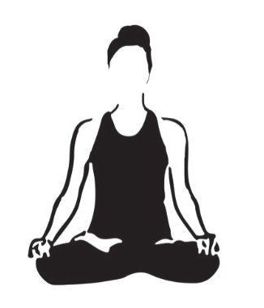
不孝忤逆女
楼主，怎么让心坚定一个方向不改变？再过几年修行上来了，多变的性格也会改变。现在只要每天坚持完成分量就行，不要管去哪个世界！
观兰法
想着自己业障重，今生恐怕没有解脱的希望，所以有自暴自弃的念头。但还是抱着些许希望，腆着脸再问老师一次。您看像我这样脊柱完全粘连像根棍一样，并且胯骨也坏死不能坐下的情况下，还能有福气禅坐修行吗？
观兰法
看老师上面的一个回帖，地藏法门也可以等同禅定？对于我这样身体法器已坏的人，还有别的什么法门吗？
Taiguanglin
信心怎么来？福德不足，所以没有信心！你多布施吧！每个月拿出一部分收入去放生，去印经送人。没有福德的人，修行路很坎坷！佛菩萨也会适当地给你殊胜的感应——做个好梦啊什么的。继续努力吧！
自己没有体验过的人很难有信心。等修行进入更高的阶段，哪怕是身体健康，长治不好的慢性疾病变好了，你就有信心了。
你的身体还没坏啊，是你认为坏了而已。练呼吸吧！氧气足够了，可以激起身体自愈能力。骨头断了都能愈合，还有什么不可以的！能站起来就站着练，不能就坐着练、躺着练。
《地藏经》要天天念！
地藏法门并不等同于禅定。看《地藏经》里面说念《地藏经》的人能获宿命通，没说等同于禅定。念到一定程度，在地藏菩萨加持下能看到自己前世因果。
精诚唯一
我问这些问题是想发大菩提心，想让自己坚定修行，因为我不知道怎么从内心升起菩提心。我从来没有对别人说我是修佛的，更不会说法，因为我知道自己没有福报，甚至自卑，只是家人知道我信佛。我连信都不坚定——虽然我也皈依了！信、愿、行很难啊；信心升不起，哪来的愿、行啊！我也有业障、痛苦、疾病，也知道众生苦，可生不起大菩提心，怎么办？我想出家修行。因为在家没人管束，有很多的毛病。可是我很懒惰、懈怠，提不起修行的信念，不精勤。我自己发誓父母百年后就出家，不然让我下地狱。可是不知道到那时，如果老了，还有收留我的寺庙吗？我还有这福报吗？看到你说的，我想自己还是先老老实实读《地藏经》忏悔吧！
Taiguanglin
想修行却无法落实到行动中——这也是一个过程。不要着急！
有了修行的愿望，就算是开始修行了！佛经上说，初发心时便正觉。一个人一旦发心修行，就算还没有行动，但未来成佛的结果已经开始形成。不要过于强迫自己，慢慢来！给自己定的目标，一天念一遍《地藏经》，这也要一个半小时的时间，足够了。加油！
墩儿娘
阿弥陀佛！末学看着禅宗的东西太高深了，末学觉得自己愚笨又懒惰，所以觉得还是修净土吧。末学觉得自己先能保证这一生结束轮回，去极乐世界，再好好跟阿弥陀佛学。末学等着看师兄讲念佛三昧啊、什么有关念佛的事。阿弥陀佛！好师兄！感恩慈悲法布施！末学看到过一点点自己轮回的事，不知道算不算吧，末学自己认为是。原来末学之前经历过跟现在这一生相似的人生，然后又经历了别的人生。今生又经历这样，还是以前的重演——末学居然不记得了以前的事，今生还认认真真，沉迷于爱恨情仇中。那次看到一点以前生的时候，末学哭了一夜，哭得好伤心：一是为自己这样认真地付出和用心其实是走原来路而哭；二来觉得轮回实在太苦了，轮回来轮回去，还是在原地轮回。末学以前还跟爱人约定三生，从那次后，末学决定，今生最后世，再不相约轮回中了。阿弥陀佛，请针对末学开示！
Taiguanglin
你很好！不要着急，修行是急不来的。
就算你用极端的方法在短时间内坐成双盘，还把全身经脉都打通了，可你脑子里的妄想和各种习气欲望没有相应地减少，你入定了也只能在各种恐怖的幻觉中苦苦挣扎，以至于失去信心。佛陀也曾用古琴来比喻，琴弦拉得太紧就会绷断，太松就弹不出音乐。修行就是这样，着急反而会有很多副作用。
你只要在三年内打通全身经脉就可以了！这三年，你要一边念佛，一边念《地藏经》回向给冤亲债主，还有你老公。这样，你脑子里的妄想也会减少一大半，各种习气包括食欲、淫欲都会减少一半。还要每天练习双盘至少半小时，一点一点打开筋骨；等一年后能坐两个小时就行了，明年再换腿来。还有你从现在开始素食，也要两年以上的时间，你的体质才会彻底改变成适合修禅的素食体质。
至于前世今生，你就当今生是还债来的，尽妻子的义务就行了。别指望爱情有多美好，最后都是眼泪。对丈夫、对孩子，付出不求回报！相信自己今生就能往生极乐。
万物唯心造，你的心向往极乐，强烈地追求就可以激发出强大的信心用来精进修行。
愿佛菩萨保佑你！
观兰法
佛陀说过，除缘识即不生。那些地狱大苦楚，在未读《地藏经》之前，在意识里没有那些概念，也就感应不到那些。在读了之后，才有那些意识，才在脑子里萦绕。这岂不是读《地藏经》的后果了吗？这是不是让一些人望而却步？一再聒噪搅扰老师，十分过意不去。
Taiguanglin
你精神上的病，比你肉体的病更严重！
认为自己不行——那肯定不行！你四肢健全，内脏也不缺，骨头硬一点而已——这有什么？我在电视上看过，有一个美国人，出生时四肢都没有，就是一个人棍，但是活得很开心。
整天发牢骚，没人同情你！人人都忙着过自己的日子，谁管别人苦不苦！
有些人能让周围人开心，说的话都是积极向上的；和这样的人一起生活，心情舒畅，有困难也不觉得多难。有些人总是把消极的情绪渲染出去，让周围的人都一起郁闷。以前在上海，看到一个坐轮椅的人出来推销商品。穿的西服干净，头发胡子都收拾得干净利落，细心地给别人说明商品，一脸笑容。我也买了！虽然不需要，但感觉不买就对不起他的笑容。
比你苦的人多的是！少林寺的历史里，还有宫中的太监出家修行，最后成道的。男人没有睾丸比少一条胳膊还严重。
努力吧！
笑容也是一种布施。别整天想着自己有多倒霉了！
920626777
这篇文章很有意义。不要否认辩论，辩论是解惑的过程。释迦在传法时，和别人做过无数次的辩论。你不辩论，如何让人知道你说的是对是错。这里的很多人也在寻找自己，你把自己的体验和大家分享，这是你的功德。但不要看不起后学，也许某个人某一天在因缘和合下会大彻大悟的哦。请问楼主主要看什么经？
Taiguanglin
尾数777 的朋友，佛法非常注重因缘。如果你遇到某位大和尚，或者在家的修行前辈，你心生欢喜，由衷地升起恭敬之心，说明你和他有缘；你就跟他学，他说什么，你也不会怀疑，愿意接受；如果他真的是善知识，那你修行起来事半功倍，进境很快。男女之间有一见钟情，陌生人之间也有一见如故，佛法更是如此。
从这个角度来看，你与我缘分不深。我说的话你都怀疑，这样你从我这里学不到什么。这里已经有几位朋友，看他们的回帖，字里行间充满了对我的信任和恭敬——这样的人和我有缘！我怎么教，他们就怎么做，不怀疑、不迟疑，修行很快就能进入正轨！
一个人学得太多也是障碍，叫所知障。已经形成了自己的价值观和人生观，看别人的东西就用自己的标准来评判；问题是自己的观点不一定正确。佛说了，在成阿罗汉之前，连自己都不要相信。有时候就得抛弃已经学到的东西，你才能学到新的东西。归根结底，还是我慢心！
我慢也分三等：我比你强，我比你年纪大，我比你出家早，我比你境界高，所以我不跟你学，这叫上慢；你也是人，我也是人，我们都是凡夫，我凭什么跟你学，这叫等慢；我不如你，这个我承认，但我就是不跟你学，这叫下慢。
我在上面多次提到磕头，放下自己，向佛、向法、向善知识低头，你才能真正得到三宝的加持和帮助；境界上去了，真正得到利益的还是自己。
我在这里根本不打算露脸，更不打算接受供养。这是一种尝试，把我的修行经验和悟到的东西，用我的方式阐述出来，用我的办法来教，看看有多大的作用。哪怕只有一个人从我这里学走真正的佛法和修行次第，那我花这些时间都不是浪费。
920626777
阿弥陀佛！楼主所想和我所想不一样。佛法不怕怀疑，大疑大悟，小疑小悟——因为怀疑使我们探索和学习。正信，不是一个人说什么就去相信，还需要亲自去实践，才知道对不对，然后才能升起正信。我觉得和楼主还是挺有缘的，因为就在你来前几天，我明白了什么是心。虽然不知对不对，但我觉得我明白了什么是心。正好这时楼主来了，说了很多实修的过程，对我来讲受益匪浅，所以要多多感谢。楼主所说的有一些观点很新颖，应该说很是开眼界哦。但让我立刻全相信，实话实说，那是不可能的，我也没有那么多的实修。我是在家人，没有什么老师，只是自己学习看佛经。我相信释迦牟尼，相信他的性空缘起。如果我没有明白什么是心的话，我看了楼主的帖子应该当神话。正是因为我懂了一些，所以一直很赞叹楼主。我问楼主看没看过达摩祖师的《血脉论》和《六祖坛经》，因为这是禅宗最重要的经典。我想楼主看一看，一定会更有收获的。达摩祖师是渐修为主，说的是二入四行；六祖慧能主讲顿悟，说的是菩提自性，本来清净，但用此心，直了成佛；像虚云、宣化等等那都是禅宗的后来传人。期待楼主继续讲解。如果我说的话干扰了楼主，那是我的错误，请原谅。阿弥陀佛！
Taiguanglin
我本不打算与人辩论，但看你的说法，又怕初学们产生疑惑，才不得不多说几句。
你说的“大疑大悟”，这个“疑”指的是“疑情”，可你把它理解成对佛法或者对佛经的“怀疑”，这个有本质上的区别。
“疑情”是一种情绪，是对未知事物的好奇心，而“怀疑”归根结底就是对已知事物的不承认，就是不信。打个比喻：
你看见了一个人从远处向你走来，只有轮廓，其他什么都看不清楚，你都不知道人家是男是女。这个时候你会产生疑情，他是谁呢？是男还是女？这是好奇心在起作用，是“疑情”。
等走到近处你发现人家是美女，你和她越走越近，产生了感情；你喜欢她，她也喜欢你，你们彼此欣赏对方，感情发展很快。
这个时候突然有人来告诉你，那个美女本来不是女性，是男的做了变性手术才变成那样的。你一开始不信，可是又有一个人来告诉你，她本来是男的；接连有三个、四个人来告诉你她本来是男的。这个时候你会开始怀疑，你想方设法从跟她的交往中发现蛛丝马迹来确认她原来的性别。
其实这个时候准确说，不是你怀疑，而是你潜意识当中已经不相信她是女性，你才会有这种寻找证据的行动。
这样比喻，大家应该能明白“疑情”和“怀疑”的区别吧。
再打个比喻：老公来晚了，老婆很生气，叫老公拿出手机要检查；这个时候老公大喊，你怀疑我——那你这个老公不是很懂女人！这个老公要是说，你为什么不相信我，那就猜对了。老婆现在就是不相信你晚归没有做出什么对不起她的事。
所以，“怀疑”就是不信！
对于凡夫而言，一动念头就落二边——只有信和不信。没有中道！就因为凡夫没有中道，所以佛陀才提出中道的概念，说修行要走中道，不可落二边。
在我眼中，老兄只是以学问接近佛教的学者，或者说是爱好者，并不是发心要学佛作佛的修行人，至少到目前为止不是。
下面这段并不是针对老兄，是针对所有初学者和发心修行，并希望自己能在佛法上有所成就的人。佛法由信而入，由信而住，由信而悟——自始至终都不能离开信。一旦怀疑佛法，你就无法在修行上有所突破。
第一，你要坚信佛法是正确的。坚信佛法是真理，是可以引领你解脱生死的唯一途径。只有这种坚定的信念才可以引发出真实的戒行，用实际行动来持戒和修行。
看看我们周围，很多人说自己信佛又信因果，但他们还在吃肉。如果你吃一块肉，你身上马上就有一块肉腐烂生蛆，还奇疼无比，你还敢吃肉吗？可因果没有这么快，所以，很多人都是抱着侥幸心理来吃肉的。说到底，就是不相信自己未来有一世要投胎成动物，让人宰了吃！不相信自己身上会发生这种事情。
坚信因果、坚信佛法的人对自己的行为和说辞都会非常注意，就怕造业引来恶报。所以说，凡夫怕果，菩萨畏因。如果你是一个佛教徒，并希望自己在修行上有所成就，那你必须坚信佛法，毫无怀疑。如果你读佛经读不懂，那你应该认为自己修为不够，而不是去怀疑佛经——否则只会让你在修行路上原地踏步，无法向前。
第二，你要相信自己，要对自己有信心。无数的佛菩萨曾经也都是凡夫，都是一步一步修行上去的，不是因为他们原来就有多了不起。
你要相信自己也可以成佛！有了这种自信，才可以引发出精进。认为自己很愚痴，自己没有福报，自己很不幸，这种想法只会引出退却之心，让你变得越来越懒，以至于虚度大好时光，等死期来临时才追悔莫及。
第三，你要相信佛菩萨真实存在。在你真正需要他们帮助的时候，他们会以适当的方便法来加持你，让你度过难关。真正的修行都是在佛菩萨的加持下进行的，到最后解脱也是在佛菩萨的引导下才可以实现。
有些人坚信佛法，也对自己很有信心，因而精进修行；但是修为到了一定程度之后就会出现瓶颈，长时间无法突破，一直在那里徘徊，什么原因？这种人非常相信自己，以至于认为修行是个人行为，不需要别人帮助——这种心态归根结底还是我慢心！是我慢心把佛菩萨的加持挡在门外。你去问问任何修行人，如果有人说，自己修行到现在从来没有得到过佛菩萨的加持——不管是在梦中，还是现实中，还是在定中——那这样的人修为肯定不怎么样！
看高僧大德们的传记，都会提到自己在最危难的时候，或者是在修行碰到瓶颈的时候，是怎么得到佛菩萨加持而成功走出困境的。你不相信佛菩萨的存在，不相信他们会帮助你，那你就像是一台没有开的收音机，不能接收到电台广播一样，无法得到佛菩萨的加持了！
修行必须具备这三种信念！三信俱全才能在坎坷的修行路上披荆斩棘，一路走到觉悟成佛的终点。就像三个木棍就可以相互支撑，在地上立成三脚架一样，缺一个都立不起来。两个木棍就算勉强立起来了，轻风一吹马上倒地。
相信佛法，相信自己，相信有无数的佛菩萨在用无边大的慈悲力来引领自己。这三个信念会凝聚成一股强大的精神力，让你在危难之时不会退缩，以至于视死如归。真正悟道的人都是舍生忘死的人！
那斯我已在路上
师父，听了您的话，我已经不吃肉了！我打算先消业忏悔，再正行，过好这一生！至于境界真不敢想！感觉自己又笨，根器一般！师父，我这样走对吗？请您指点一下！感恩！
Taiguanglin
什么样的人适合修行？一种是天赋异禀，智慧超群的人；一种是有点愣，智商在平均线以下的人。高智商的人，单靠逻辑推理也能八九不离十地理解佛经，只要有毅力就进步很快。比较愣的人不怀疑、不迟疑，会一门深入地修行，不会跳来跳去，这样也会很快地进入状态。
根器不重要，重要的是行动力！很多事情最后的结果就看这个行动力如何了。
就说早晨起床的小事。闹钟一响，心想，真不想起来啊，再躺一会儿，结果又睡着了；五分钟后闹钟又响，哎呀这个讨厌的闹钟，只要在几点之前起来就行，再躺一会儿。这么磨叽下去，最后只有迟到了。有些人就不一样，闹钟一响马上起来，都不带思考的，直奔水房梳洗，洗完就精神了。
修行看的就是行动力，看的就是你在修行上花的时间。一天打坐四个小时的人和一天打坐一个小时的人，一年之后差距就拉开了。你给自己定个时间和分量，每天要念一遍《地藏经》，或者念一百零八遍《大悲咒》，或者打坐一小时、两小时，或者磕头五百。
其实现在人与人之间的差距都不算大！再大就不能生到一个人间了。太笨就去畜生道，太聪明、太有福报就去天道。大家都在人间，谁也不比谁笨。只要肯下功夫，进步还是很明显的。
加油！
不孝忤逆女
最开始时，我觉得我可以生到极乐去，现在越来越觉得去不了了。念经时心乱如麻，具体乱的是啥都不知道。打坐时也是，观呼吸会觉得呼吸困难，少吃或不吃就更呼吸困难。嗔心特别重、像燎原之火。就想找个没人的深山，有机会进去，再也不回来。然后读经时，一想到经里的庄严场景，无法控制地就会幻想有各种垃圾落到佛菩萨身上。恨死自己！
hy2hx
师姐这是好现象啊！我接触佛法已经有两三年了吧，念经、念咒都有。然后最近我的妄念更疯狂，居然会对菩萨或佛像浮现邪淫的念头。有时候，居然对动物和老阿婆都会有邪淫的念头。楼主说我这是再正常不过的了，有罪恶感就对了！这种现象应该是在拔出我们往昔的习气。楼主说继续念佛修行就好了！
hy2hx
师姐也说恨死自己了——这说明师姐有罪恶感，所以是好现象！应该是念经、念咒的功德在拔除我们的习气。
Taiguanglin
两位美女的问题很简单，不要管就行了！
有一种定律叫人生总量定律，一辈子吃的饭有个总量。你顿顿大鱼大肉，暴饮暴食，把一辈子吃的饭都吃没了就该死了。你吃得少，又吃素，就能健康地多活十几二十年。一辈子受的苦也有总量，要入四禅必须消完这辈子带来的所有业。饭也好、业也好，都是妄想和合而成；那人脑子里的妄想肯定也有总量，你打完了所有妄想就能入定了。
修行刚开始，你会发现，你不念经、念咒的时候，反而清静些；一念经、念咒，各种乱七八糟的妄想都来了。各种苦情此起彼伏，不安、烦躁、忧伤、愤怒，弄得苦不堪言。这是正常现象！不要管，坚持下去就行。
初学修行不应该求境界，应该求量。你给自己定下每天修行的时间量，完成这个量就算进步——不要管自己境界有没有进步。追求境界又是一种执着，会给自己带来更大的烦恼；修行是为了灭除烦恼，增加烦恼就违背了修行的初衷了。
打坐的时候，有妄想也别管；你就使劲儿打妄想，打到累了就睡觉。你要是想控制，可又控制不了——这会让你更加烦躁。这种苦情一起来，呼吸就会变得急促，心跳会加快，你越急越闷。
凡夫修行一辈子肯定不能成佛！人家释迦牟尼佛也说自己修了三大阿僧祇劫呢。成佛、成菩萨都不可能，成阿罗汉有可能。这个前面说过了，先修到三禅以上境界，然后要有大菩提心，出来传法度人，这样才能遇到接引你解脱的人。
对凡夫来说，往生极乐是最切实可行的出路！
要升官，先入党！极乐世界是一个庞大的组织。哪怕是下品下生，去了有大菩萨教你后面的修行，还指导你如何消业。修行简单，只要有正确的发心，修行只是时间问题。
可是消业不简单，这个要有高超的智慧。可是咱说当局者迷！有业的人进入轮回，第一个障碍就是失忆，后面出现业障的时候，自己也很难做出正确的选择。去了极乐世界这些问题都解决了。你投胎去消业的时候，自己可以选择此次要消的业，还可以在意识中进行模拟实验。行就来，不行再改改，把难度降低。还有，对于下去消业的人，我们也有一套完善的保护方法，把风险降到最低。当业障出现的时候，告诉你怎么做才能消业。很多时候都是选择的问题，你选对了就会消业，选错了反而增加新的罪业。
所以说，只要去了极乐世界，就算进入不退转境地。等觉地的大菩萨来传法也一样，对于菩萨来说消业和传法就是修行，业消完了就成佛了。所以，先往生极乐，其他一切到时候再考虑。
有组织的人和单打独斗的人不一样，玩个人英雄主义的人基本都在地狱里。所以，咱一再强调皈依三宝，皈依佛菩萨，视佛如父。有了归属感就不会迷茫，遇到问题也会得到及时的帮助。
继续努力吧！
mlhgf888
不知道为什么就是不想活了。不想自杀，我不是小孩，这是出离心吗？
Taiguanglin
不是出离心！出离心是深刻认识到人生的种种痛苦后升起的。你那也是一种执着，不要深陷下去，及时调整心态；也要给自己立个目标，生活上还是工作上，或者在修行上，什么方面都行。
圆圆柔柔摘月光
首先，在这里多谢师父广开善门，度人度己。我真的觉得到时候了，自然有人来给你传授知识。我读《地藏经》读了两年了，用了大半年的时间来双盘，不是没有参禅，怕自己福德不够，一直未敢参禅。所以先诵《地藏经》，为自己积累福报。打坐参禅的时候，就从最近才开始。一直纠结于三个法门不知道如何取舍，在双盘时，三个法门一会用一个，来回换。首先是观心，就是观空，其次就是观世音菩萨的耳根圆通法门，再次就是凝神入气穴。感恩在这里看到了师父对耳根圆通的注解，感恩顶礼！吃素了一年半，最近在家人的强烈反对下，不再吃素。我一直告诉自己，吃什么和修行没有绝对关系，我吃不是为了欲望，只是为了让家庭和谐。现在看来，吃素还是必须的。还请问师父，可否私信或者留下其他联络方式？
Taiguanglin
问题在这里留就可以！我在的话，一直回答——就算不来了也别失望。像宣化上人说的，他带你上了一个台阶，我再带你上一个台阶，后边还会有人带你继续上去的。只要精进修行，发心纯正，不怕遇不到善知识。你很好，可以老老实实念《地藏经》两年，很了不起。
修行就应该这样，一会儿看这个书，一会儿看那个书。这个书上说这个法门如何殊胜，你就修这个几天；又看别的书，上面又说这个法门如何殊胜，你又修那个几天，把大好的时光全浪费了。
修行没有捷径，只有下苦功。你既然看到了我的文章，那我希望你能发大菩提心——这是我们传法的最高要求。就算是初学，用大菩提心修行的人，更能得到佛菩萨加持，修行会更顺利，更快地进入状态。
你有超人的心态和意识，那佛菩萨就给你超人的能力让你维护世界和平。你修了十年，还在求佛菩萨给你这个好处、那个好处，那你永远是哭喊着跟妈妈要奶水的婴儿，佛菩萨也就给你填饱肚子的奶水而已。希望你也能成为超人！这个世界满大街都是婴儿，缺的就是超人。
努力！
愿佛菩萨保佑你！
还有那些遇到骗子的人们，也应该好好关注自己，你为什么会被那样的人骗。人家说的无非就是投机取巧的方法，花点钱就能让你事业顺利，或者会让你修行迅速上一个层次，你不老老实实，稳扎稳打地修行，贪图这些便宜才会被骗。修为是用钱买不来的，你就算供养真正的大菩萨，你得到是功德，不是修为的突然进步。
今天就说到这里吧，有问题继续提。最好先把前面的都读完再提，谢谢！
愿大家都能得到佛菩萨的保佑！
无名氏
在家修行能否证道？一般的居士，都是下了班打坐，吃了饭，运动放松。有时候还得加班，还要应酬，第二天还要保持良好的状态上班。所以，真正拿来打坐的时间真的好少。这还没成家，成家以后估计几乎没有时间打坐。有人说，衣食住行都在修行，我也理解真正的大乘法都在世间。可是修定又是基础，没经过几年的不间断修行，没有一心不乱的修证，进入到社会中根本不可能做得了主。本身没什么修为，一边要赚钱，一边要修行，我感觉不实际。相反平日偷闲打的坐会不停地倒退，甚至是负增长，是福德太薄了吗？而且我发现，现在那些禅宗名人大家都不缺钱，至少不用为了钱去受苦，可以天天打坐修证。
Taiguanglin
在家人修行，只能用凌晨和晚上时间了。凌晨四点起来，修两个小时——念经、念咒、打坐都可以；晚上少吃点饭，然后磕头五百；磕完打坐一两个小时。白天工作的时候，心里念佛，还要一边练呼吸。
这样三年，基本能打通经脉进入欲界禅定。
六禅宗
地球发现的外星人，您能解释下吗？还有飞碟。可能您觉得问的问题很不合适，可学佛不想盲目，想理性科学化地学佛，所以老想把宇宙起源搞清楚。这个世界规律，大自然法则到底怎么运转的，是科学说的自然进化还是别的。六道轮回没有普及，更别说什么欲界天，极乐世界了。您讲的宇宙元神起源，我看了，可还是很多问题没搞懂。要是光音天的天人来地球时，我知道他不是肉身，吃了的话会变没了神通，但他是变成地球最早的细胞生命了吗？还是别的，这中间的演化过程是怎样的，和科学界说法接上了吗？还有天人既有神通，为什么不变好点的人类，会从细胞海洋慢慢演化成人类。佛教不认同猿人变人类，那光音天人到地球变成人类，中间过程怎样的？还有说人类一直在轮回，但最早地球形成时，那时没有生命，人类是怎么轮回的？科学界一直认为最早只有动物，包括陆地海洋，还有恐龙时期，那时没有人类，怎么轮回？我不是科学迷信者。它有局限性，比如禅坐很多解释不了，也无从解释。但它本是从物质出发就设了很多局限性，但发展好了，也能证明佛陀思想的超前和伟大，不矛盾。科学、宗教、哲学、佛法都是为了解释宇宙终极问题，入手角度不同。但也不能盲目信任何一家，对吗？除非像您说的能亲自实证，体验到。望师父能开示我疑问，这些疑问很困扰我。这些问题就好比现在人类不同的世界观，若是全然选择了科学，他会对自然进化，弱肉强食习以为常，杀生吃肉是正常的，这是大自然法则。科学信奉者认为没有什么不对，鸡、鸭、鱼是低等生物，在食物链的下端。人是高级哺乳动物，很正常。几千年都是这样过来的！但佛教徒的世界观全然不一样，与之截然相反！基督教也不错，最起码叫人向善、感恩，但对动物却是应该吃的，上帝给人类创造的。这是大家对宇宙大自然真正的奥秘和运转法则不了解，没有彻底搞懂，或是一知半解认为这样就是自然宇宙法则，所以就遵循这样生活下去了。还有外星人，飞船事件，若是能揭开这些谜团人类就不迷茫了，望尊敬的师父慈悲开示啊！行道子888@ 六禅宗: 给你两个建议：第一，你喜欢这些理论的问题，自己去研究科学、宗教、哲学，喜欢从佛陀的教法里寻求答案，那就自己去研读佛经；第二，请放下这些妄想，跟着楼主师兄的讲法和开示，老老实实地实修。
圆圆柔柔摘月光
我觉得《华严经》中肯定有答案，你去研究吧！
Taiguanglin
佛陀在世的时候，也有像你这样的人！
佛陀的回答是，愚蠢的人啊，你中了毒箭就要死了，你还要追究这个毒箭是谁射的、从哪里射的、用什么制造的，要是不知道这些就不治疗！
这算什么？
佛陀最初讲的是四谛法。从观察人生的苦开始，所有修行都是为了解决人生的痛苦——不是为了探究宇宙的奥秘。
心外求法一无是处！
你有这么多问题，再多几个问题也没什么吧。你有没有想过这样的问题，因果定律是宇宙的自然法则，那假设你昨天打了一个叫Ａ的人，今天又打了一个叫Ｂ的人，那果报来的时候，是Ａ先来打我？还是Ｂ先来打我？还是两个人一起来打我？果报是随机发生的吗？那也未免太巧了！
你自己又主宰不了，那是不是有人已经给你写好了一生的命运呢？天有天王，地狱有阎王，人间也有负责管理的人，只是不让人知道而已。
每个人一生的命运，大体上都已经编写好了——你连自己的命运都不能主宰！自己是谁、前世干过什么事——你都不知道，探究那些宇宙问题有什么意义？
生病住院的人当前任务是治病！你打听医院是怎么建成的，又是怎么进行管理的——不会有人告诉你的！不知道的人是因为不知道才不能说，知道的人是要保守秘密才不会说。你想知道高层的秘密，请先治好病，再读医学院，成为医生之后再来研究。
我在这里写帖子已经透漏了不少秘密，你仔细读能读出不少隐藏的秘密——自己去琢磨吧！
你修不修行是你自己的事，佛菩萨都没有义务要度所有人、要说服所有人信佛。
你正吃着美味大餐，你还担心下顿吃不了大餐——那你现在这顿也吃不开心。
人都是活在当下的，看世事无常。飞机都能消失，谁能保证明天自己还活着？
只要你一心向佛，以戒为师，精进修行，当你需要帮助的时候，会有佛菩萨加持你，也会出现新的善知识来点拨你。
不要担心未来会怎么样，就看当下！你现在学习正法获得利益，那就好。你现在追逐五欲乐，那就是烦恼。释迦牟尼佛走了，佛法还能传承两千五百年；我走了，难道不会有人继续传播正法吗？
阿弥陀佛！
ＱＱ之类的就算了吧！我时间有限，每天写这个已经很不错了。
第15 章 修行法门(59)
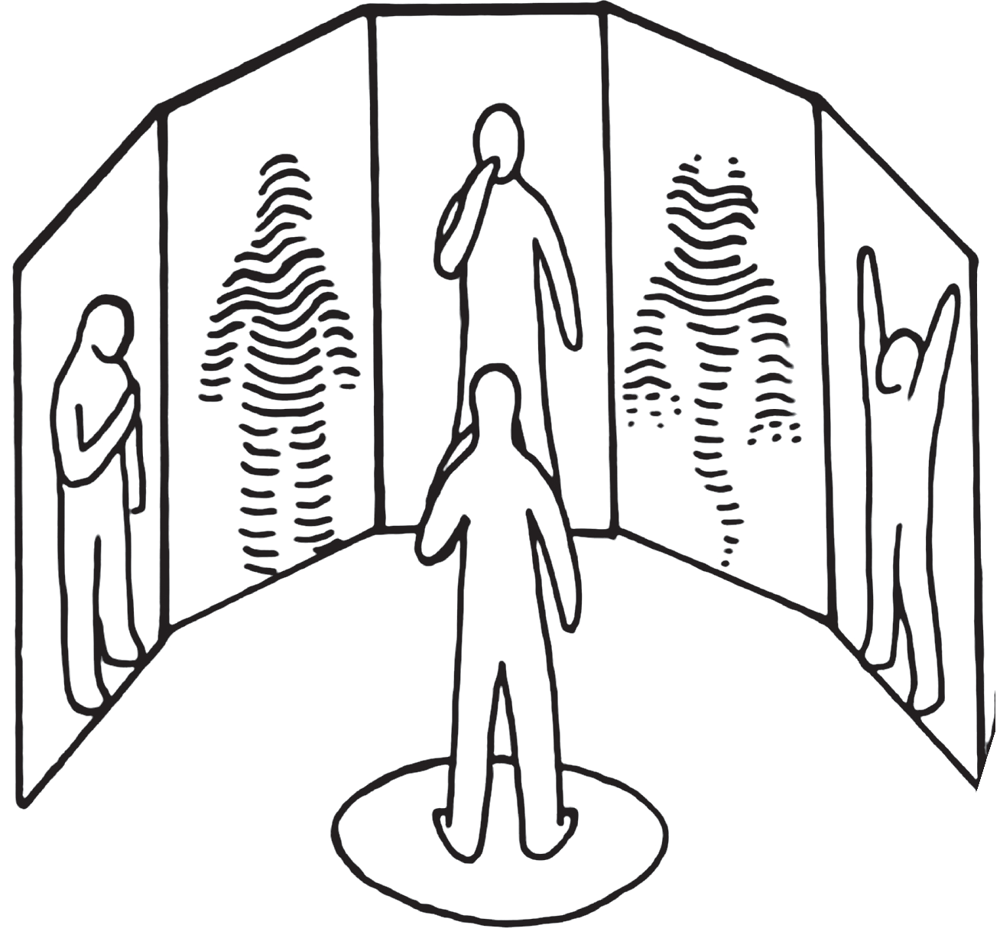
飉彧僧
大师，小生有一疑问，禅宗以修心为主。我可不可以不拘泥于形式，修生活之禅，以见性成佛呢？
Taiguanglin
没有那样的好事！找到了也告诉我。
Taiguanglin
你说的禅，我没修过，所以不敢说什么。抱歉！
Erikmu
元音老人的心中心法门可以修吗？是正法吗？
Taiguanglin
对不起！我在庙里不出门很多年，外面的书都没看过，不敢评论。你可以把重点贴上来，修行的原理是一样的，就看用功用在哪里而已。
920626777
请问楼主，观呼吸和念佛法门有什么相同或不同的地方呢？
Taiguanglin
观呼吸用功用在身根，念佛用功用在意根。观呼吸对现代人来说，只能当做过渡之用。念佛还有后续的进化修行——这个讲念佛三昧时讲。
Taiguanglin
上面都说完了，就是思念阿弥陀佛，淡淡的思念之情。不是文字妄想，不是反复读“阿弥陀佛”四个字；就像你思念母亲，思念爱人般。打坐的时候思念，不要起太粗重的思情，这样会情绪激动；就像一根细丝一样，抓着不放。妄想起来就念佛，不起来就思念——一直思念到四禅为止。
295066960
楼主师兄好，我想问一个问题。关于念佛三昧，您能把您的经历发到我邮箱里吗？多谢楼主。南无阿弥陀佛！
Taiguanglin
念佛三昧已经讲得很清楚了——你就那么修就行了！不要管别人的经历。我能讲的都讲清楚了。
hy2hx
师父，对于普通在家修行人，甚至是初发心的老阿婆、老爷爷，有哪种方法最适合这些大众顺利地往生弥勒菩萨那？
toton126
楼主师兄，那个三际托空要是在衣食住行中都能时时做到的话，将会是怎样？死后还会轮回吗？
Taiguanglin
三际托空是什么样的修法？你怎么理解？每个人的理解都不同！如果不坐禅，想让脑子放空是不可能的，也不能解脱。
Erikmu
打通经脉是守丹田好？还是按佛家的好？佛家怎么修？有什么好推荐的吗？
Taiguanglin
佛门修行不谈气、不观气，用功都用在念佛或者参话头等，不管气，让身体自己来。如果你把南怀瑾书中有疑问的部分贴上来，我看完再论，修行的原理都一样，就看用功用在哪里而已。
还有一个问题，打坐的时候观呼吸或者控制呼吸会怎么样？我是不建议打坐的时候这样做的！
呼吸本来就是靠副交感神经来控制，按照人体需要的氧气量来自己调节。你刻意地控制呼吸，要延长呼吸时间，这样就会和身体原有的机制发生冲突！大脑会让身体僵直，胃和大肠不能蠕动，往上顶起横膈膜，不让你做呼吸。所以，打坐的时候练呼吸很不明智，练不好还不如不练。
再说说观呼吸！我不控制呼吸，我就把注意力放在呼吸上，这样不可以吗？可以是可以——这个修法可以进入初禅——但是进不了二禅！
当你打坐的时间超过三小时的时候，身体非常放松的情况下，你的鼻子到喉咙，里面的气管开始僵直收缩。你把注意力放哪里，哪里就会紧张和收缩僵直——这是人体的基本运作原理。当鼻子到喉咙这一线僵直的时候，你不仅呼吸变得困难，气还不能顺利通过人中和承浆穴、进入膻中——气就会在眉心印堂穴聚集。你会感到眉心处膨胀——无知的你还以为要开天眼，还在那里瞎用功。当气冲开印堂穴的时候，真会感到有光芒射进来——这并不是天眼！你什么都看不见。
更倒霉的是，天上的修罗看你，你就是一个门户大开的躯壳。他就会顺着你的印堂穴进入你的身体——你的修为还不能感觉到有别的灵体进入自己身体内。他会借给你神通，你还以为自己真的修出了神通。他会控制你去干他想干的事，用你的身体给人算命什么的用来积福。他的性格也会慢慢影响你，你会变得贡高我慢，性情暴躁，你自己还感觉不出来。等他玩够了离开你的身体的时候，你不仅没了神通，身体也被他搞垮了。
红极一时的大师们突然消失的现象大家都看过，电视上、报纸上也出现过。
打坐的时候最好的修法是念佛，或参疑情、思情，或耳根圆通法，打通经脉前就观丹田。
非缘非非缘_
菩萨，宽恕我的啰嗦，我实在是感觉我和您有缘。您的帖子我都看了，平易近人。比如说，您说您是棒子，让我感觉到年轻人才有的亲切。其实我很佩服韩国人，他们和任何人说话都会鞠躬。他们很团结、很诚实、很有集体荣誉感、很有民族凝聚力！您说您上学的时候做梦，我也是。我上学的时候，总因为害怕考试，害怕辜负了别人的期待而经常做梦。以至于后来不上学了，也经常做考试没考好、众人批判我的梦。您说的欲界定的考验跟我经历的一模一样。就是有个菩萨，化成一个女身，在梦中当你的情人；而且会来很多次，最后甚至会生扑你。因为一般人一次根本过不了关——欲望真的很可怕！由于无法持续修持，我现在仍然觉得无法彻底离开欲望。还有您说不能观身体中丹田以上的部位，我看过不少大菩萨的著作，心以下属欲界，心到眼是色界，眼以上是无色界。听了您说的，在高天找所缘让我有些担心，因为有时候定下来，手脚全身没有知觉，只剩眼根和耳根的时候，会听见自己头部的血液轰轰的流淌声，震耳欲聋。我止的是人中之上的虚空，以前止在眉心，这样真的不可行吗？如果换位置，不知道初期的止在哪比较好？观全身可以吗？
Taiguanglin
应该参情绪，疑情或者思情。身体没感觉的时候，在身体上用功会和控制身体的潜意识冲突，身体会僵直，时间长了会生病。
疑情、思情都是苦情！疑的是谁，念佛是谁。关键不在这个问题上，而是这个情绪本身。思念的是阿弥陀佛，关键也不是思念对象，而是这个情绪本身。抓着这个情绪不要放，起了别的妄想就再拉回来，继续参，如此反复。当你可以长时间地抓着情绪不放的时候，才算进入三禅。要修三禅，一次打坐时间要超过二十四小时——要尽量延长，坐到坚持不了为止！越是专注，时间过得越快——一天很快就过去了。当你专注到一定程度的时候，你会觉得很累——这个时候就该放下这个情绪了。这么一放，就进入四禅了。想真正开悟，消业的进度还得跟上。
耳根圆通法门也一样！先做到注意力高度集中。要修二禅，一次打坐时间要到十个小时。注意力跑了，就拉回来。等做到高度集中的时候，你会觉得很累——这个时候再放下，耳根境界顿时破灭。注意，不是声音消失，而是注意力消失。声音永远存在，你不能灭声音，而是你不再对声音起注意力。就像你专注地看电视的时候，别人跟你说话，你也听不见；这个时候，是你把注意力集中到电视上。而修行的时候，注意力高度集中长达十小时以上的时候，再一放，注意力就真的消失了；外面的声音也就听不见了，动静二相都不存在了。
所以说，不管是参情绪，还是耳根法门，都是先做到高度集中！内不起妄念，外不被骚扰。当你觉得累的时候，一放就成功了。不管什么法门，你还是先做到高度集中吧。
圆圆柔柔摘月光
刚才打完坐，今天很顺利。但是有个问题，我选用的是师父教的耳根圆通法门，我听音乐听到大约十分钟左右的时候，突然觉得音乐真多余，真想关掉这个音乐，然后就会进入一种很空旷的状态，可我却观不到内动。师父，我想问，在我觉得音乐多余的时候，可以关掉吗？这样直接就进入了一种很静的状态。
Taiguanglin
可以关掉音乐。你要听到内动，身体还得更放松，呼吸更加细微，注意力全都回收到自己身上，而不是在外面乱跑。这得基本打通了中脉才行！现在是排毒练腿，不要着急，慢慢来。
圆圆柔柔摘月光
好的，师父！我一天两壶普洱茶，变成厕所的常客了。今天状态老好了，不晓得师父您有没有加持我。我要加到三十五分钟为基点。希望可以保持！好了，师父，我要磕头去了。
行道子888
莫非真要改观出入息法，换成缘上三根的法门，或者参疑情和思情？虽然按楼主师兄的教法，先排毒、练腿、持肉和色戒、断文字妄想，但这个修行前进的根本法门早晚得做个选择。不知道楼主师兄后续还有没有修行法门的再次总结和解说，方便我等末学依根性而选择修习？比如参疑情和思情的最上等方法，道理是明白，但是真心不知道如何入手。疑情和思情都起不来，也许是没认真参的原因，惭愧！感恩和礼赞师兄演法教化！
Taiguanglin
如果你没打通全身经脉，那就从练呼吸开始，平时一边练一边念佛，还要磕头锻炼身体，打坐的时候观丹田。思情是念佛发展来的。
打通经脉之后，就不要再观身体任何部位，开始参思情、疑情。对你来说，这是后话，先打通经脉再说。不要想太遥远的事情。打通完了，到时候，你的心境又有新的变化，疑情、思情更容易升起。
Taiguanglin
你做得对！就是要这个情绪。不是为了寻找答案，疑问的内容不重要，答案更不重要，只要抓着情绪不放——六根脱落，苦情破灭是时间问题！你要把情绪引到生活中，行住坐卧不离疑情，疑情破得更快。
还有，不要观身体任何变化！那个火苗也不要管。你越是集中注意力观它，它会变得越来越逼真。你选择参疑情是上上之法，观想相对而言是下法——不用管。这个前提是你先把身体调好，经脉全打通之后就不要再观身体。
红宝石199
有些大修行人不提倡打坐，特别是双盘，说会把腿坐坏。比如道家高人胡海牙，他年老了，也是坐轮椅的。师父，真是这样吗？佛门里有没有把腿坐坏的？为了避免这个，我们应该注意些什么？
Taiguanglin
疑情、思情在三个月前就讲过了，去翻前面的帖子，都有的。
想长时间双盘就要调整好姿势，只要有一点点歪斜，都会引起不良反应；还有发心和心法都要纯正，不要学乱七八糟的东西，也不要求神通。
道教修行的极限就是二禅，都在身体上用功，想羽化成仙。
如果进入二禅之后还观身体，就会和潜意识发生冲突。人的潜意识一直控制着身体做基本的新陈代谢，比如心跳、呼吸、内脏的工作，这些都是潜意识管的。你观身体就会和这潜意识发生冲突，潜意识就会让身体僵直，呼吸困难，血液循环不畅，最后会把身体拖垮。所以观身体只在打通经脉前，打通完了就不要观身体了。
珂骏
看了楼主所有的帖子，默默潜水，认真学习。我之前不相信佛，一直在徘徊。后来经信佛的朋友介绍，看完了《六祖坛经》，感动涕零，决定依禅入佛，禅净双修。但是没有人接引，无人度我，很是迷惑。后面就在贴吧看到了您的帖子，也算是和楼主有善缘吧！看了楼主的帖子之后，坚定了我修佛的决心，现在看佛经，感觉很舒服，佛经的道理看似有点绕，
但探讨了人生的根本问题
我从哪里来，到哪里去，我是谁，我想成为什么样的人，这个世界的真相是什么？西方哲学的太浅，《道德经》深，但是没有具体的修行方法。楼主我有一个细微，但是对我很重要的问题：1、如何参话头，就是给自己一个一直疑惑的问题，不断地思考吗？2、我睡眠不好，思虑过多，双盘打坐的时候，念佛的同时，也有另外一个思维在浮想联翩，怎么突破？3、其实我认为就像气功里面的百日筑基一样，学佛的最大困难就是入门，入门无偏差，后面的都好办。感恩楼主！
Taiguanglin
参话头不是思考！抓着那个疑问的情绪，要淡淡的疑问，不是文字妄想。一边念佛一边打妄想正常——一开始都是那么修来着，不要管。不要刻意地控制自己不打妄想，这个控制的欲望也是妄想，只会让你更加烦躁。
阿啦顶身等
师父，我今天能坐个四十来分钟了。每次坐到十五到二十分钟左右的时候，会特别舒服；到了二十五分钟后非常难熬，有点痛了，再过了三十五分钟后发现又开始舒服了。但因为脚忽痛忽舒服的，然后想转移脚痛，就想着这脚痛转移到一个点上，就这个点痛，而不是脚痛，慢慢地也不觉得脚痛了，蛮舒服的。脑袋有点放空，又随时被脚痛痛一下，也不想念佛号了。这到底是好是坏呢？
Taiguanglin
不要陷入舒服的感觉里！最好选择一个法门，长久地坚持下去。训练就要从现在开始，一旦陷入舒服的感觉，修行很难有进展。
阿啦顶身等
好的，师父！那我盘坐时就念南无阿弥陀佛，一字一字慢慢地念可以吗？算一个法门么？
墩儿娘
算啊，念佛法门就是如此的。一个字一个字念清楚，听清楚，时时处处想着南无阿弥陀佛，或者只想四个字，阿弥陀佛；一念阿弥陀佛，念念阿弥陀佛。这就是念佛法门，也叫净土法门——就是一心念佛求生阿弥陀佛极乐净土的。末学就是决定一生修这个法门！
墩儿娘
随喜赞叹师兄选择这个法门——这是最简便、最稳当、最容易一生成就的了！即使还有很多烦恼没断，很多业没有消完，也可以带业往生的。到那边再学，阿弥陀佛亲自教，就不会好心办坏事，走歪路了。随喜赞叹师兄！一起努力吧。阿弥陀佛！阿弥陀佛！
阿啦顶身等
好的，楼主！还有我之前不懂，观想光进入丹田形成能量在转动，我这也是瞎想的。但是后来我看到人说女孩子不能观想下丹田，会血崩。我看到后想了下，好像月经是不正常了，多来了，这样的话是不是不能想下丹田呢？按照您说的气运丹田，那作为女孩子我该运哪呢？
Taiguanglin
这个很正常啊！你观丹田，气就会聚到那里去；那里的血液循环加快，血液会输送更多的养分到那里，那里的器官会活性化。男人一开始打坐观丹田，遗精反而更频繁；女人月经量增加——这个很正常，不会影响健康。
把降魔坐、莲花坐都练成，两侧经脉打通，开始冲任督二脉；打通全身经脉之后，气就会形成循环，这个时候身体才会开始炼精化气。男人会把精液转换成气来储存到丹田，遗精逐渐减少，最后消失。女人也是，经血逐渐减少，到最后绝经。但这个不影响生育，你想生孩子的时候完全可以生。如果你不观丹田，那就念佛。心里念佛，嘴动声带不振动，还是坐跏趺坐。这样也行！
阿啦顶身等
那我守中丹田膻中穴可以不？跟下丹田效果一样吗？念佛我也有呢，基本上是在平时念或者跏趺坐的时候念，观想是在打坐之前想的。所以我之前看到您说的打坐前二十分钟观想，我还认为我瞎弄弄对了呢，哈哈。跏趺坐我只能坐半个小时，坐到中间的时候很舒服，佛号就不想念了，也没别的念想，这样对吗？还有我跏趺坐是脚腕的筋很痛，也就是拐脚，有没有关系呀？坐到后面就全麻了，听说有人这样脚废了，听得我吓死了，不会坐几个小时后脚会因为血液不通畅残废掉吧？还有，韧带自己会打开的，多坐坐就不痛了。谁说脚会废的？真是的！你现在能坐多久？一个小时就够了！慢慢来！经脉一点一点会通的，全通了坐几天都没关系。
雨夜箫吟忆平生
师父，我们这不少在家居士行般舟的，就是一天一夜不断行走念佛。这个法门原理是啥？行般舟前要先通经脉吧？还是在行般舟过程中经脉慢慢就通了？这是题外话，师父时间紧就不用回答了。
Taiguanglin
行般舟的关键也是呼吸，要一次吸够气，然后一口气念佛念到气尽为止——如果出现头晕、头胀就停止。他们只是走路念佛，那修行的效果很小；这本来就是针对年纪大，体力差的人修法，不能猛练磕头，又有好动的习气，不能打坐，那就选个折中的方法，边走边念佛。练得好，也会身体发热，身体一发热，说明正在修复身体，也会逐渐打通经脉——但是很慢很慢！
阿啦顶身等
楼主你说的几禅啥天的，我虽大致知道，但我也不太愿意去关注，因为怕自己执着于这些东西。这些四禅啥的是代表一个人修行到什么境界的意思吗？佛无实相，但我们初学的人是得先借相修才行吗？比如观想佛菩萨像啥的，那人死后佛菩萨以实相示现。还有说打坐的时候若出现佛菩萨像，不要管，别当回事，那是咋个说法呢？思佛，要是过于执着于思佛，又会不会被外魔乘机而入呢？麻烦楼主啦！我问题比较多嘿嘿。
Taiguanglin
我们说行亦禅，坐亦禅，话是有道理。但对于初学来说，修禅定是为了灭五根境界。你一边动、一边看、一边听，五根都在用，怎么灭？还得坐禅，等你灭完了五根境界，之后就是行亦禅了。
关于禅定中的幻觉也都说了，全是假的！你能看到听到，用身体能感觉全是假的。你往上翻几个帖子，上面专门写了一篇有关幻觉的文章( 此文章已被收录在《坐禅》第三章第05 节中的“禅定中的幻觉”这一节——话头禅)。
还有思佛会不会出现幻觉，思佛不是让你想象佛像，而是一种思念的情绪，很淡、很轻微。不要想象具体情节，这样容易出现幻觉——再说出现了就当没看见就是。
还有，你要修到出现幻觉的境界还有很长的路，现在不用担心这些。你现在有工作就好好工作，不要担心明年被辞退怎么办。小学生就好好读书，该玩就玩，别担心上大学选什么专业，毕业找不到工作怎么办。人活在当下，你现在学佛得到利益就可以了，别担心未来会如何。说2012 年要世界末日，这不没事嘛。看电视打坐也可以，先把腿练开，慢慢来，不着急。等以后心静下来了，也想参禅了，到时候再闭眼念佛、思佛。
无法无戒
观疑情，能不能用“苦”情来观，类似“念佛者是谁”？因为我们知道了答案，最后下去就会去“觉”这个“真如”存在，变成了“觉”了。实际上，我也在修“觉”。我习惯了一心二用，我的“觉”是按“似动非动”来察觉自己一切的动。同时我也采用观“苦”，因为“苦”是一直存在，到菩萨地还有“苦”情，绵绵不断。
但我也遇到一个新的问题
我把很多“苦”转成了“烦恼”，而“烦恼”又转了不少为“菩提”。我很多时候，都觉得非“苦”了。实际上求“苦”也很难，但没“苦”，没“苦”，“菩提”就很难增长。我自己觉得，增加“苦”，去疑情“苦”，才能增加 “菩提”，再不断去细察很难发觉的“苦”。只有不断增加新的“苦情”，“菩提”才能增长。师父，这就是我目前的境界。再请师父放心，我不会有意去求速，我目前的速度与我自己的预想差不多。
Taiguanglin
前面讲了，参疑情，关键不是问题，是情绪本身。在我看来，你是不能长时间专注于这个情绪。有其他情绪，还有注意力、文字妄想进来打扰，你就自己给自己找个合理的解释。
菩萨连分别心都没有，哪有什么苦情——只有凡夫才有苦情。菩提没有增长，也不会减少。人就像一张被涂鸦的白纸，修行就是抹去涂鸦的过程。从头到尾都是灭除的过程，不是给白纸旁边加别的白纸，只要把涂鸦抹去，白纸就会显现，人就觉得自己长了智慧。其实智慧本有，从来没有丢过——被涂鸦盖住了而已。
所以，不是增加苦，再把苦转成菩提，而是消灭苦——用疑情消灭一切苦情！苦消灭得越多，菩提显现得越多。你参疑情的时候，观到其他苦情出现，就应该拉回来，继续参疑情——要做到长时间地专注于疑情。进入初禅要打坐四个小时！继续努力。
还有多练呼吸！先把身体练好了，才能长时间打坐。你想，一边吃肉，一边戒肉，能戒肉吗？灭五根境界也一样！我们无时无刻不在用五根，想灭对五根的执着，就得先停止使用五根，停的时间越长越好。
在家人很难挤出太多的时间，这也是自己的业报！你一天可以坐五个小时，何不分两次来坐，一次坐二到三个小时。
hy2hx
师父，我曾经学过耳根圆通法门，其实是属于自学啦，现在有个问题。1、刚开始，我在听鸟叫声，鸟声来了，我知道；鸟声没了，我也知道。那时候，我突然就明白了原来有个东东“一直”都存在，能知道鸟声的生灭；也明白了这个东东不会因为鸟叫声发出来了就消失，也不会因为鸟叫声停止了，这东东就消失；好像不生不灭似的。2、当时感觉观音菩萨好牛啊。3、当时以为这就是所谓的佛性了，因为《心经》说佛性是不生不灭的啊！不过后来觉得这个应该不是佛性吧。4、接下来，我就卡在这里了。佛经里这段耳根圆通法门的现代翻译我也看得一愣一愣的，不知如何继续修行下去了。后面的什么闻性啊、觉性啊、空性啊，我是听得一头雾水啊。5、请问师父，我所认为的这个东东，到底是什么东西啊？是闻性还是觉性？又或者是其他什么东东？跪拜师父！希望能听到师父的现代白话版解释。
Taiguanglin
说的是闻性，就是耳根境界，始终都能听的能力。后面还有观察这个听觉的意识，那是第七识末那识，也叫觉性。对于天人的描述自己在网上找就可以了。
圆圆柔柔摘月光
耳根圆通法门听的音乐，师父能推荐几个吗？
Taiguanglin
光是音乐的，就找冥想音乐；要咒语的，最好是《大悲咒》——这个节奏缓慢，低音量反复地播放就行了。
Erikmu
我想问下，我长期鼻炎导致注意力也不好，这样学习事倍功半啊。想先把气脉打通，把鼻炎治好。目前阶段是用道家方法好，还是用佛家？道家我想按照真气运行法，呼气关注下丹田。佛家似乎不关注身体方法，你有什么好的建议吗？或者可以给我推荐一下佛家的好方法？小止观和六妙法门对于初期打通经脉效果好吗？
Taiguanglin
佛门没有专门练气的法门，除非去少林寺当武僧。你去庙里出家，师父就让你干活，干两年。如果你年轻就让你磕头，一天磕三千个，磕满一年再说。要磕三千个需要五个小时以上，磕满一年，体质就变了，打坐容易多了。
我们不刻意地去观气，打坐时不是心里念佛就是参话头。
我觉得你的鼻炎是业障，不单单是气不通的原因。如果你本来鼻子没事，修行练气之后变成鼻炎了，那是气运错了，有相应的办法。如果你的鼻炎本来就有，那就是业障。你就念《地藏经》，出声念，每天念一遍。之后再打坐，心法就用上面的天台宗的心法。
大困龙
Taiguanglin 你好，我想问个实修问题。禅修时，只感到脑中有无形之力至头顶天灵和百会处有反应，反应范围前二眉上方、眉心、左右二耳上方、后面百会穴一寸这个圆圈。主要以百会穴、天灵和印堂为中心，反应感觉言语说不上来，略形容下：不酸、不麻、不疼、不痒，有满顶动感，平时不容易感出。请问楼主这是什么情况？
Taiguanglin
是你把注意力集中到那个部位，导致内气上涌，汇聚于此，才会那样。
佛门禅修与道家不同，不谈气，不观气。有些东西，你知道了就会着相，会出现很多副作用。就像我们长大的时候，从来就不知道啥叫青春期，就那么过来了。可现在的孩子们知道得多，认为青春期会易怒易躁，自己易怒易躁就认为是青春期，是应该这样。因为是青春期，所以易怒易躁——这种念头如滚雪球一般愈演愈烈，导致很多心理疾病。
佛门修行也是如此！佛陀对身体的理解和认识是绝对的透彻。出家前参加比武，赢得老婆，是武林高手。出家后拜不少外道为师，也练过瑜伽，所以对气的运用了如指掌。但他悟道成佛后，传法时从来不谈气——他知道这个对初学有害无益。
你这种情况要是继续下去，气在头颅越聚越多，会开始头痛，眼睛会充血，大脑微细血管有可能被撑破，那就完蛋了！
传你天台宗的入门观法。想象自己坐在乳白色的光芒中，光芒象征佛的智慧，佛光普照十法界，你认为有它就真有，吸进去的时候想象你在吸佛的光芒，膻中穴中有硬币大小的月亮，此象征自性，呼气的时候想象佛的光芒往下走，洗刷膻中穴的月亮，然后进入丹田气海，就是小肚子。一吸一呼慢慢来，这样会把气引到丹田去，你的那种情况会消失。祝你好运！
奇门遁甲群
你是在真正帮助别人吗？先以想象自己坐在光芒中，先以识性修，若以识性观，观识非常住，存心乃虚妄，初心根本不能入。然后又变成鼻根法门，鼻想本权机，只令摄心住，住成心所住，以生灭的因而求无上的道吗？
Taiguanglin
这是天台宗的入门观法——不是自己瞎编乱造的——是从天台宗师父那里学来的。咱不谈虚的理论！问这个问题的同修拿去修，有好结果就好，没好结果他自己也不会继续下去。
奇门遁甲群@Taiguanglin
不管是哪宗，都在二十五圣各述圆通里吧，不知是以哪一根为主啊？
Taiguanglin
Taiguanglin@ 奇门遁甲群：念咒入门，修念佛三昧，到参话头，话头破了，算什么呢？
奇门遁甲群@Taiguanglin
那您觉得七楼的同修是修何法门？所出现的症状是五阴区域中的哪一部分？
Taiguanglin
Taiguanglin@ 奇门遁甲群：他是观天眼，把注意力集中到眉心处导致的。这门都没入，只能算五阴想中的注意力了。想就有文字妄想，念佛就是。有注意力，各种观都算。有情绪，参话头就是。
奇门遁甲群@Taiguanglin
你还是看看自己说的话有逻辑和针对性吗？是否矛盾啊？
Taiguanglin
Taiguanglin@ 奇门遁甲群：别拿普遍说法套我的措辞！我不玩文字，不玩深沉。就用大白话讲，见谁都一样。要看咬文嚼字的请移步，你也没说出自己什么境界，除非你已经修满了声闻乘，给我挑刺没意义。
無法無天dlf
庙里的生活比我想象的要艰苦得多，比世间任何一种职业都辛苦。看了师父的帖子给了我方向！之前乱打坐，腿一盘就坐，打坐了一星期。记得是去年八月十五，打坐时呼吸有了明显的变化，是肚子自己呼吸的。呼吸很慢、很均、很长，约一分钟呼吸两到三次。似乎将要止吸，那种感觉非常爽。但心要极静，一激动那种呼吸就没了。后来打坐次数多了，直到现在也没达到那种境界。不过在打坐时，腿和胳膊的好多地方在跳动，特别是头上的血管在满头没有规则地乱跑乱跳。头顶最中央的——我不知是什么穴，体内的气从头顶中央穴不断地向外跑，不是外气从头顶中央穴进入体内。怕灵魂出去回不来，于是中止打坐。之后的一段时间里，没有气再从头顶跑出去了。直到现在，打坐身体的主要特征是腿和胳膊很少有穴位跳动，身子没任何反应。脑袋上好多气到处乱跑，脸上、鼻子、嘴边的毛细血管也跑。还有二郎神中眼的穴位时而有气，说是气似非气；说不是气，但又紧巴巴的感觉。以上各种现相，只存在于打坐和读经持咒时。我是散盘，时而也单盘，但不标准。打坐时观得很乱，时而人中，时而下丹田，时而持咒，时而什么也不观，只享受。看了师父的帖要入定必须双盘，这几天在压腿，以上是我修的主要情况，请师父开示，弟子三叩头，不虚言，阿弥陀佛！
Taiguanglin
你那是人中没有冲开，导致气在头颅打转，无法下去。前面给人解答的时候，提到天台宗的入门心法。观想自己坐在乳白色的光芒中——这是阿弥陀佛的智慧之光。再想象自己膻中穴有硬币大小的明月——这是象征自性。吸气的时候，想象你把乳白色的光芒吸进来；呼气的时候，想象这个光芒往下走，洗刷那个膻中穴的明月，再进入丹田。用这个办法可以冲开人中和膻中。
蜀州隐士
师父，我以前一直双盘一小时，每天都坚持。自看了师父的帖子，开始冲刺两小时。我现在己经连续三个晚上熬过了两小时，不过真痛呀！我想问问师父，这样坚持熬会对身体有什么不好的影响吗？
Taiguanglin
对身体好得很，没有任何坏处。但是打通右侧，什么消化不良啊、便秘啊，自己都没有了。
蜀州隐士
师父，还想问个问题：就是打坐会导致气血上头，引起头疼头晕吗？有的话，怎么预防？感恩师父，合十！
Taiguanglin
用天台宗的入门观法，可以把气快速引到丹田，不会头痛的。也可以念佛，打坐的时候，集中注意力念佛，嘴动声带不振动，不出声，这样就可以了。
阿啦顶身等
因为我之前看了几本经典，理论上的东西算是知道一点了，打算在实修上下功夫，与理论相结合。但是在打坐方面，因为实在身边没有善知识，不敢自己乱来，都不知道该怎么办了！但又心急，不想就这么算了。所以有时自己念咒之前，会观想吸进地藏菩萨手上珠子的光，或者金刚菩萨身上的光。因为是自己乱想的，也不知道正确与否。看了楼主的观想，我稍微放心了点。但是我观想的是吸进去时此光洗刷身体的不健康，呼出黑暗的浊气与不健康思想。请问楼主，我这样观想可以吗？
Taiguanglin
嘴和鼻子是用来吸收能量的，不是排污器官！在人体前面，气是从上到下走。你想着从口鼻吐出不好的气，那你的气也会逆流——对身体不好。
你就按照天台宗入门观法来打坐！
不要想着排气，你越想越麻烦，有可能会岔气，让身体自己来。人排出浊气的穴位在脚底和手心。大部分人都是从脚底涌泉穴排出的，浊气重的时候脚底还会起皮，有一些人会从手掌排出。总之，排浊气不是口鼻！你不能那样观想，会越来越难受，最后病倒的。
炎明王
前面提到气聚集到头顶百会和眉心印堂会导致头痛，这个我经历过很多年。痛苦！曾看到南怀瑾说修行时要把意识聚集到心脏部位，但这个办法我用起来不是很舒服，总觉得心那里有气把意识往上顶，好像非顶到大脑不可似的。最近体会到另一个境界，就是我感觉从眉心再往里，往下，大致在眉心和鼻尖之间，大脑比较深，可能是大脑正中的那一个部位，把意识放在那里感觉很轻松，在虚空中观起一个明点或是佛像，会觉得其能量与那个部位产生共振，互吸的感觉，很舒服，不知道这样可以不？补充一点，我以前有过晕厥的体验。当时好像整个身体都消失了，唯独一点意识存留在额头印堂的部位。恢复起来的第一个阶段是能觉知到周围的人和事，但完全没有分别，连父亲都不认识了，随后才回到正常状态。这个经验使我觉得人死的时候应该也是这样的，所以我一直想在额头那个地方进行修炼，请指点！
Taiguanglin
你还没有打通全身经脉，那就用常规的方法修行。干脆不要观气，只管念佛；退而求其次，就用天台宗的入门观法。
修行和别的事不一样，不能标新立异！要走前辈们走过的路，这样你才有可以参考的经验，出了问题也有可以请教的人。修偏门一旦出了问题都没地儿问去。
你的那个观大脑中心的方法真是闻所未闻，我在禅房那些年，各种观、各种心法都听说过，从来没听说过能观大脑中心的。
人在失去意识后，再醒来的时候，最先醒的肯定是耳朵，然后是眼睛。身体不能动，但耳朵能听——不能因此而断定意识在大脑中。意识和整个身体是统一的！身体的所有部位都有意识，是一整块意识。
还是老老实实按部就班地修行吧，打通全身经脉之后就参话头或者参思情，这些常规的方法进境最快，也不危险。
圆圆柔柔摘月光
师父，呼气的时候怎么观想从膻中到丹田呢？呼气，气是往外走啊，师父，吸气的话刚刚好啊。
Taiguanglin
那个天台法门是在呼气的时候观想，光芒洗刷膻中的月亮然后下到丹田。
toton126
前面，你讲过初禅到四禅，舍五根，苦喜二情之类。那我修安那般那，观“出入息”，其它都不观，能否修到四禅？等出入息都没有的时候，是不是进入了下一关？直到最后一关——通关？
Taiguanglin
观出入息不能进入二禅，前面已经讲了！
圆圆柔柔摘月光
师父，您能说一下，达到哪个程度，再看《达摩血脉论》，会一下子就贯通所有的含义？我看《血脉论》之后，真的有很多疑问。
圆圆柔柔摘月光
再说一句，我总觉得《达摩血脉论》说的是禅定中境界的对治。没有入禅定，理解不了达摩所说，甚至会产生歧义和误解。理解是否正确，师父？
Taiguanglin
《血脉论》一直强调见性，四禅以上才叫见性。所有修行都是为了见性的方便法！
Ghyuerf
师父的寺院有在搞原始点吗？现在国内很多寺院都在推广原始点。净空法师还开示过，说原始点很好。但我总觉得原始点有些什么地方必须完善，可是想不出来如何完善。
Taiguanglin
我们的庙不搞原始点。我还在网上看了一下，都是在血管和神经线上下功夫，让血液循环更加流畅，能起到一定的治疗作用。但只靠这种按摩还是治标不治本！你还是从呼吸开始练起，提阴缩肛也要练，这是防止气被别人夺走的方法。
非缘非非缘_
菩萨，我除了练呼吸( 当然我的方法比较极端，年轻气焰嚣张就得这样练) 还看书。现在发现进化论本身缺陷无数，化石证据与DNA 基因追溯相互冲突；相对论反而使一切变得更加神秘！菩萨在那边说的注意力闪烁是什么情况？注意力集中身体会反抗，消散会妄念纷飞，我在不停地调和。
Taiguanglin
注意力闪烁是在四禅以后才能玩的！没有灭尽文字妄想的时候是玩不了的。
龙龙的5200
我想知道生死牢关该怎么破？还有怎样破隔胎之迷？
Taiguanglin
我也想知道什么是生死牢关、什么是隔胎之谜！你先告诉我，我再告诉你怎么破。
龙龙的5200
如果你也不知道的话，就跟我说说隔胎之谜吧！隔胎破了，我认为牢也就破了。
龙龙的5200
隔胎之迷，大概意思就是不记得前世的事情了。
龙龙的5200
初关，重关，生死牢关，是多数慧解脱行者必然要经历的三关。慧解脱者初发菩提心时，后到大悟圣理而离凡得圣的一段时间，是行初关。破初关后，大惑已解，小疑不断，因生死还有挂碍，毕竟还是有着迷，然后到了知生死无碍，有离着迷，是行重关。而生死牢关应该是重关为破的内容。
清净福田
楼主前面已经讲过啦，师兄你去翻一翻就能看见。切记勿求神通才好。
Taiguanglin
龙龙，三关的说法不是佛说——是佛教进入中国后出来的。每个人的理解都不一样，不能拿来当做评判修行境界的标准。按照你的理解，初关就是初禅，重关是四禅，牢关是成为阿罗汉。
还有隔胎之谜，这个你怎么理解？我不懂！
修行境界的高低是根据禅定的次第来看，这个在佛经里有明确的标准。别看那些网上胡说八道解释四禅的，那都不是！
Limshanb
我是初学者，有工作，有家人，预计家人不会支持学佛。我是网上读到一些文章才被引导学佛的，第一因是读到香港钟茂森博士的讲演报告，顺着这个信息又阅读美国医学博士布莱恩·魏斯《前世今生》。我是受现代教育那种，学工科的；若不是看到现在语言、现代知识描述的轮回证明我估计很难相信佛学。我原先对佛学是不信的，现在信了。看了一些佛典，正打算把各宗佛典阅读一遍，搞清原理再全力投入。我的障碍是多疑，凡事总想从原理上理解，总想用现代知识能解释。看了您的一个帖子把佛教历代修法演变过程做的归纳，认定您就是过来之人，希望您发慈悲给我这种类型的人做个开示，我应该如何从头开始一步一步走向彼岸( 从头开始就是从一个完全没有基础的常人开始因循渐进) ？特别是您推荐什么宗门。
Taiguanglin
初学就从念《地藏经》，磕头，练呼吸开始。还要戒肉啊！
处处茧丝
愿楼主一切都好！我最初是不停地念佛号，念了几天，开始是头顶有点疼，后来变成清凉感。有天晚上睡觉的时候，突然感觉自己从身体里飞出来，融到虚空中，听到各种声音。当时有点怕，一直在念佛号，没醒；然后，我想起“唯心所现”这个词，就慢慢地醒了。再后来，念佛号，觉得心里响，那六个字，呼吸不畅，就很少念了。前两天静坐时，盯着眼前一物，注意力慢慢放开，发现那个物品慢慢消融了；再看又出现，闭眼观暗，出现光点，一闪又不见了。因为念佛号，我老是觉得呼吸不畅；修耳根又走神，就想从眼根着手，也不知行不行。另外，我的现状：现在双盘降魔坐，左腿翘起着不了地，三十分钟的样子。大部分时间是腹式呼吸，肚脐眼下的腹肌好像一直就是可以动的。
Taiguanglin
看眼前黑暗可以！也可以眯着眼，低头，看自己前方一米处。眯着眼睛妄想更少，很适合初学。
你现在还没打通经脉，现在谈法门还早着呢！不用管什么法门，尽管坐着熬疼！观丹田最好，等通了再选法门不迟。
换个名
楼主对儒家十三经和诸子百家怎么看？跟佛学有没有共通的地方？我想先钻研儒学和诸子百家，再把人生中的大事都完成了。在过程中打下一个好的经济基础，在财务上能够自由，然后再潜心修行。毕竟佛法高深，我怕我不一定能有成，反而把自己耽误了，不知会不会太迟？
Taiguanglin
你还不如看《阿含经》——一法通万法通。先学佛修行，再看那些世间学问都是小儿科。
当来佛子
( 此人在百度贴吧已无法查到——话头禅)
Taiguanglin
呵呵，多谢吉言啊！禅门对经教并不注重，现在只教人苦参话头，所以论经教我不擅长，所以也不能为你解惑。抱歉！
各有各的所长，修到哪里算哪里，修止观修到顶了，再修别的往上走，还不一样么？
当来佛子
( 此人在百度贴吧已无法查到——话头禅)
Taiguanglin
我没有时间看这些个书。你一定要让我评判他的东西，那你找他的书中有疑问的地方贴上来，我看看；但不要断章取义，最好是有关修行的。
可以！《维摩诘经》不是这么来的么？
谁说话谁就是法主！佛在旁，当由居士说话，居士就是法主；和升座一样，在家众也可以升座讲法。现在也有这么讲的人，但听众不会向其顶礼三拜。
嗯！视佛如生父。你如果真明白了解脱的关键所在，就知道为什么管佛叫四生慈父了。解脱必须由已经解脱的人带，自己绝对不可能。所以感恩其人，永世认作父！
佛经里没有那种情况！佛经里，佛是主人公，怎么可能写别人讲给别人的内容呢？至少也要有佛在旁印证。居士升座讲法，僧人在下可以，但僧人不行礼，其他在家众给居士行鞠躬礼。
麻烦你把你贴的那个什么老人的修法删了吧！只会混淆视听，我也不想过多抨击别人。
那样就不叫经了！只有佛亲说，或者有佛在场认证的才叫经，其他人讲的叫论。不是佛亲说的，只有《六祖坛经》称为经，是对六祖的高度评价。
我是大乘禅宗门下的！我们的观点是：有佛在场认证，谁讲都可以是经；佛不在场，弥勒菩萨讲的也叫论——《瑜伽师地论》。
这个问题，从来没有探讨过！我也不知如何答，抱歉！
谁都想成佛！八地更不在话下。可如何成佛呢？有具体方法吗？志向归志向，一心成佛者必不能成佛。还有你的八地，我的八地理解不同。菩萨十地都是成菩萨后的事；我是凡夫，连阿罗汉都不是——所以修行。还有，解脱的关键所在也不是什么人都能参透的。
我后面还要写一两篇，基本就写完了。可能后面的内容更惊奇，看了也别太纠结。反正我写帖子就没打算露脸，写到哪里算哪里。看的朋友能得到利益就好，为以后的修行当作参考就是。
Itravelalone
当我睡觉平躺时，练习禅定。有时经常会感觉眼睛充血，是不是气血运行得不对？哪里出了问题？当时感觉自己好像很急躁，不够清净。
Taiguanglin
别躺着练！你还不如直接睡觉算了。血压升高，眼睛充血。坐着练吧！前面已经写了很多反应，好的坏的都写了。自己找！
Taiguanglin
修禅三十年，他的只要三年；好手机三千块，只卖三百的是什么手机；还要报名交钱才给灌顶——不符合佛陀传法的宗旨！
修行没有什么捷径，只有符不符合你的根器问题。像戒肉、戒淫这种事情，不管你修什么法门，所花时间都差不多。
等进入初禅开始，要抓住符合自己的法门，不然花了很长时间都没什么进境。
第16 章 禅定、极乐世界、佛世界(61)
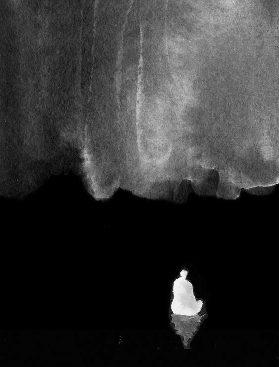
Taiguanglin
那就可以！思维和感觉都是六识执着，只要进入三禅，思维感觉都消失，只留苦喜二情。
295066960
楼主师兄好，我想问一个问题。不修禅定，能证圣果吗？多谢楼主。南无阿弥陀佛！
Taiguanglin
不修禅定，无法解脱。单靠念佛和行善，可以往生极乐世界的下品下生。
920626777
请问楼主，在四禅定时，如何判断在哪个禅定？能说说具体的觉受吗？
Taiguanglin
四禅分上下两个阶段。第一段只有欢喜心，定中只有欢喜心，不起其他任何情绪，理论上可以坐到死为止。三禅还有苦情，坐到一定程度会开始不安，烦躁之心起来，就会出定。四禅就没有这个不安感了。
星辰残月变
师父，不是说进入初禅就可以看到须弥山吗？那如果进入初禅怎么看啊？可以见地狱么？
Taiguanglin
我从来没说过进入初禅就能看见须弥山！别整天想这些东西，对修行没有好处。越是执着于神通，入魔的可能性越高。
Taiguanglin
你是指成为阿罗汉解脱吗？前面说过了！要先有大菩提心，出来传法度人，十年、二十年、三十年，孜孜不倦地为众生服务。上面就会安排一个在人间活动的菩萨或者罗汉来接近你，教你上层修行，最后带你解脱。这样的人现在还有，不多而已。
星辰残月变
师父，成为阿罗汉之后会怎么样？为什么阿罗汉也要和佛一样涅盘？不能永久住世吗？
Taiguanglin
你自己成了阿罗汉就知道了。
阿啦顶身等
师父，佛菩萨阿罗汉等再来人，他们会退转吗？
Taiguanglin
会！我们有一套方法来防止退转。
295066960
师父您好，请问基督教所说的上帝是存在的吗？
920626777
为什么得道的人，不可宣说已得道？
Taiguanglin
只会引起别人贪着、嫉妒和怀疑！
已经得道的人看众生是一目了然；众生看别人，啥也看不出来。说自己得道了，人家叫你证明，你拿什么证明——这是自寻烦恼！所以你如果问我得道没有，那我肯定说没有。如果你问自己现在修行遇到的问题，那我肯定有答案——至于你接不接受是你的事！
Taiguanglin
有！欲界禅定开始，有初禅、二禅、三禅、四禅。四禅分上下两层，后面还有空无边处禅、识无边处禅、无所有处禅、非想非非想处禅——总共九个。把四禅分作二，那就十个。这是凡夫九禅，破了最后一个就是阿罗汉。后面还有罗汉九禅、菩萨十地。所以，入定就有深浅了！
世界的最远尽头
如果有深浅之分，那么最深的是什么定？深入到最深的禅定，能见到什么？
Taiguanglin
最深的叫灭尽定——佛的境界！我不是佛，不知道能看到什么。
wxwy4399
用意时可静，如何做到时时在定？麻烦赐教！谢谢了。
Taiguanglin
对不起！时时在定我还没做到，还是有出定入定，只能根据佛经上的理论来回答。
修完凡夫九禅，还有罗汉九禅，灭九种分别心；可还是有出定入定，所以阿罗汉也做不到时时在定。阿罗汉的宿命通可以观前后五百世，但也要入定才能看。
灭除所有分别心，成为初地的菩萨，就没有了入定出定——定已经灭了；八识真真实实，不再有分别心干扰——神通到了起念即可得答案的境界。
如何成为初地的菩萨，我看你现在不是考虑这个问题的时候！前面还有阿罗汉，还有辟支佛、缘觉、声闻。就先成声闻再说吧！进入四禅第一段就叫声闻。
supid126
当您进入了初禅之后，会进入相应的天界，这个是怎么进去的，如梦一样的出现？还是如自己看电影一样体现的？还有楼主老师不是说定中的世界都是虚幻吗？那初禅天的天界，自己是如何观到的，怎么知道是真是幻呢？
Taiguanglin
修到初禅的人死了才能去初禅天，你想活着就去，那得到二禅以上修出神足通或者天眼通才行。
toton126
耶稣与道家老子的，有没有类似的世界呢？有的请告之！谢谢。
Taiguanglin
上帝算是帝释天吧！修道最多能修到二禅——去二禅天。
圆圆柔柔摘月光
：四天王天、忉利天、须焰摩天、兜率陀天、化乐天、他化自在天、梵众天、梵辅天、大梵天、少光天、无量光天、光音天、少净天、无量净天、遍净天、福生天、福爱天、广果天、无想天、无烦天、无热天、善见天、善现天，色究竟天、摩醯首罗天、非想非非想处天——这是《地藏经》中的诸天。按照师父的演说，我来划分一下:
净居五天
无烦天、无热天、善见天、善现天、色究竟天
下四天
福生天、福爱天、广果天、无想天请问师父，还有摩醯首罗天和非想非非想处天，是声闻和缘觉所在吗？看完师父写的，才明白了原来《地藏经》中所言的奥秘。在“忉利天宫神通品”中佛陀就已经描述过这些！可惜我们凡夫俗子只是读经，却压根不知道经中所含的深意，哎呀！师父，如来所出的种种微妙之音，是不是在各天中所听到的也不一样呢？师父可否也给演绎一下：檀波罗蜜音、尸波罗蜜音、羼提波罗蜜音、毗梨耶波罗蜜音、禅波罗蜜音、般若波罗蜜音、慈悲音、喜舍音，解脱音、无漏音、智慧音、大智慧音、狮子吼音、大狮子吼音、云雷音、大云雷音。师父，弟子汗颜，原来《地藏经》中有这些奥秘！弟子以前还以为《地藏经》是最“普通”、最“没啥深度”的经，弟子无知了！
Taiguanglin
色究竟天也叫摩醯首罗天，那里的天王也是佛弟子，统领整个色界十八天。在《地藏经》里用那一个天代替了整个色界十八天。
用非想非非想处天来代替整个无色界四天。
四禅下四天是声闻，四禅上五天是缘觉，空无边处天是辟支佛。
须陀洹、斯陀含、阿那含分别对应识无边处天、无所有处天、非想非非想处天。
超越了所有二十八天，真正地断生死出轮回者就叫阿罗汉。
那个什么什么音，前面六个就是菩萨的六度法——布施、持戒、忍辱、精进、禅定、智慧。
慈悲喜舍是四无量心，拔苦予乐叫慈悲，随喜赞叹别人的善举是喜，舍就是布施。
放下一切执着就是解脱，证得无上正等正觉就是无漏。
智慧，大智慧就不解释了。
狮子吼是比喻，像狮子吼般有力量，摧破一切无明烦恼。
云雷也是比喻，佛以圆满音声讲法，所有众生都能听到，根据自己的境界获得利益，就像天上的云雷，所有地上的人同时都能看见一样。
圆圆柔柔摘月光
感谢师父的解答。我想师父已经对我有了初步的了解，知道我目前的修行状态。现在就针对我自己的修行状态，我做了一个次第和归纳，请师父帮我指正。1、我现在处于想要进入欲界禅定的起步。在排毒练腿，争取打通经脉，可以进入欲界禅定。要求：读经、不吃肉、磕头。目标：可以坐禅二个小时，经脉通，进入欲界禅定。可能需要二到三年。2、我选用的是观世音菩萨的耳根圆通法门。在我进入欲界禅定后，这个法门就是直接在二禅上三根的耳根上用力——随着耳根的破除，下三根也都随之破除，可以直接进入到二禅的境界。师父，我的理解对吗？需要多久，不清楚。3、还没有提到日程，这个等修行到了，师父再给指导。另外，我做了一个表格，供养大家。不喜欢的可以完全忽略。( 见附图：图12)
观兰法
敬请老师开示一番，修行解脱，成佛作祖有哪些利益？
Taiguanglin
成佛没有任何好处，但做人有太多的痛苦！
单说生老病死，有智慧的人，看到别人的痛苦就应该想到自己的将来。选择本身没有错，你愿意在轮回中沉浮也无可厚非。
修行一开始都是因为欲求不满，求健康是第一个，还有求财、求名、求姻缘的，求什么都可以。等你的心境有了升华，自然升起出离心。
黛眉舒君颜
这世界是不是有来自胜音世界( 一切功德山须弥胜云佛)的修行者？暖阳1 飞舞：师父，您也要打包回极乐老家了？虽然我有生之年不能跪拜供养您，往生之后，您一定要见我，因为我不知道啥品位，能否见得到您！或许我好运，因缘福报具足，可以今生出元神找您去。
toton126
还有就是，我不入极乐世界，还其他的地方可以选择吗？
Taiguanglin
不去极乐世界，就去跟着弥勒菩萨混！还有其他佛世界，但是没有人在人间行走，去的可能性渺茫。只有极乐世界和弥勒菩萨最容易去！
桃花恋乐园
报身佛卢舍那佛会在哪一天？还是和法身佛一样都在都不在？再有，阿罗汉的境界是否可以从进入哪种定来判断？登地菩萨无色界定都破了么？那是不是不在这些天里了？末学的问题有点无知吧，呵呵！不过师父说过，得先把理论搞清楚再前进。既然师父明了大道，把后面也说上吧，知道终点。阿罗汉破九种分别是什么呢？破后登地还是在这些天里吗？愿师父开示！( 见附图：图13)
Taiguanglin
报身佛已经入灭，不存在。弥勒菩萨在兜率天用报身佛住世。法身佛遍满虚空，遍满十法界。
修完四禅和四个无色界定，断生死出轮回的人叫阿罗汉；阿罗汉再修九段罗汉禅，灭九种分别心，就能成为初地菩萨。
这个分别心已经不是凡夫所能理解的部分，说也说不清楚，看的人也无法理解！你自己去极乐世界再学不迟。
初地菩萨再修十段般若波罗蜜，灭十种妄想就能成为等觉菩萨，再修最后一个般若波罗蜜就能成佛了。
我们这个人间，凡夫修行到四禅就算修到极致了；后面的到极乐世界再学，也可以到兜率天学。
Ghyuerf
我对极乐世界不感兴趣，没关系吧？哈，我的目标是修成阿罗汉永久驻世追随地藏菩萨。这样的目标能实现吗？
Taiguanglin
目标选谁都可以，地藏菩萨也可以。
圆圆柔柔摘月光
师父，墩儿娘问了一个问题，我也有了疑问。除了极乐世界，东方净琉璃世界和其他几个佛世界，我们这样修行的人到底要去哪里？如果今生已经证得阿罗汉了，还要去极乐世界吗？还是继续参加轮回来度与自己有缘的人，成为菩萨？成为菩萨后，在哪里？是遍虚空吗？
Taiguanglin
也可以留在这个世界——那就得跟着弥勒菩萨混了，像虚云老和尚。去他那里，等他下来传法的时候一起来帮忙，同时修行。
去哪里自己选！阿罗汉也没有必须去哪里的规定！可以留在这里。不管去哪里，都必须反复投胎来消业和度人——菩萨也要消业、度人。菩萨、罗汉去哪里，只能说去某个佛世界。
再回风起云涌
我向往净土，但如果由于种种原因，无法往生净土，而去了欲界天，那我“往生净土”的愿望会传递给下一个我吗？如果传递的只是记忆，那我还会执着于这个记忆吗？换一种说法，往生欲界天之后，我曾经的性格、思维模式和情感会被重新改写吗？
Taiguanglin
你生到天界，不管去哪里都能带着在人间的记忆。你如果生在人间或者下三途，你会失去记忆。
supid126
老师有个关于修行的。一个凡夫没有大智慧的情况下，修行要有成就很难。但老师多次提及此世没有达成，下一世继续。可问题是，我们都是细菌，都是凡夫，死后，记忆都会抹去。假如此生不出家，守五戒，不做坏事，做人的几率还是蛮大的。但是如何保证下一世继续闻听佛法、继续修行，而拾起前世的进度呢？
Taiguanglin
你要发愿生到有佛法的世界！极乐世界也好，弥勒佛身边也好——得有个方向。
只管打坐修行，只会升到某个天界——到了那里一快乐就忘记修行了。
能升到天界，记忆就带着去了；去其他佛世界都一样，不会被抹去记忆。
星辰残月变
极乐世界是否分等级啊？去了之后是否还要继续胎生啊？记忆是否记得？
墩儿娘
不是胎生的！坐着莲花去——花开就见佛！没有我们做人的生老病死苦的。阿弥陀佛！
Taiguanglin
分等级！看你修为。莲花中生——有记忆。
星辰残月变
极乐世界分三品，为什么要分品啊？不说平等么？
Taiguanglin
佛是佛，凡夫是凡夫——不平等！只是凡夫也可以成佛——从这个意义上平等！幼儿园的孩子和大学生不平等，但是幼儿园孩子也可以上大学——从这个意义上平等！
阿啦顶身等
师父，《金刚经》云“无我相、人相、众生相、寿者相”，那为何还会有极乐世界这一相呢？是否极乐世界亦是一个所幻之梦境？是阿弥陀佛的愿力所出的善之境吗？
Taiguanglin
等觉菩萨要成佛的时候，可以自己幻化出一个世界，把与自己有缘的所有众生带进来进行教化；也可以在已经有的世界，继承上一个佛的衣钵来成佛。极乐世界已经出了很多佛了！
星辰残月变
师父，末法时期还有多久结束啊？佛法还有多少年才会寂灭？暖阳1 飞舞：有两位菩萨——一名美音，二名妙音——对华光开敷遍身如来说：娑婆世界真差劲，我们才不去呢。
佛说
若于此土二十亿百千那由他劫种诸善根，不如于娑婆世界，花一顿饭的时间说诸波罗蜜，教一众生受三皈持五戒——《广博严净不退转轮经》。师父，这个就好像我以前看到的那段经文，记不清了。
炎明王
可是师父说了，大家现在都开始放弃这个世界了。
Taiguanglin
是这个世界的众生业障越来越重，根器越来越低劣，不愿意学佛，所以菩萨们也就放弃离开！
没人愿意学，我喊破嗓子也被当做神经病。这里有各位愿意学，那我就多说；没人提问，我也早点歇息去。
路过的小胡子
问师父，什么是缘分？一切都是定数吗？
Taiguanglin
出生的时候，一生的命运早有安排——大的人生脉络基本都定好了。
一般人只会越来越变坏，因为一直在造新的恶业。
修行人先持戒不造恶业，再行善积德，可以一定程度上把命运往好的方向改。
295066960
善知识您好，请问中国人来生还能做人的比例有多少？每年往生极乐世界的有多少呢？现在地球上证了圣果的人大概有多少呢？
圆圆柔柔摘月光
证圣果的有水果和尚，应该是四果阿罗汉。不用证果，本来就是乘愿再来的菩萨。很多也是默默无闻来，又默默无闻离开。有名气的再来人——宣化上人、印光法师、虚老——最少也是八地菩萨。其实你看看果卿居士的文章里，在万佛城为宣化上人护法的人里边就有一位等觉菩萨，专门来护持上人，很是默默无闻。皮卡堂69@ 圆圆柔柔摘月光：哦！我发现阿修罗道也还可以哦。圆圆柔柔摘月光@ 皮卡堂69：从未想过阿修罗道。要么人道，继续念，继续修；要么极乐世界。最怕的是自己想不起来还有佛菩萨，那是最惨的。当我把《楞严咒》放在一些人眼前的时候，他们连瞟都不瞟一眼的时候，我觉得很悲哀。一个渴求金钱的人，看着一个大金山在眼前却视而不见。圆圆柔柔摘月光@ 皮卡堂69：有一个叫磕大头的卓玛，她的一篇文章写到，有一次她磕大头的时候晕了过去。有像贝壳、蛤那样的生物来找她，请她回向给它们。她就问它们为什么不念佛，这些生物回答，我们天天在一起讨论，拼命地想，就是想不起来要念什么？皮卡堂69@ 圆圆柔柔摘月光：我看阿修罗道和帝释天打架，是不是比人间状况好啊？起码比起人间的凶残好哦？他们还有法力，还学佛呢！我很害怕变成猪给人家吃了。从我的感觉来看，我当人的时候很少，最近一次估计是清代。然后现在，再往后和这中间，都不知道干嘛去了。贝壳、蛤都不能吃哦！路过的小胡子@ 圆圆柔柔摘月光：刚百度了一下，有说是，做功德回向的话是通过佛菩萨转给的，相当于中转站的意思，这个解释比较合理。
toton126
问一个问题，楼主讲过。百年后，所有极乐世界来度人的佛都回去了，那这个世界是不是没有佛的弟子在这里了？那么说，这个世界往好的方向还是往坏的方向，都是靠我们人类自己，是吧？按现在的情形来看，世界并不乐观。但是这个世界物质，越来越走向极向化了，那以后会不会走向心灵层次呢？走到心灵层次的话，世界不会毁灭，不会走，那这个世界就OVER 了。暖阳1 飞舞：好想哭，不敢相信这是真的！不过，难怪国内已经圆寂的高僧都说让念佛，此世界不可久留！回贴也要讲关系@ 暖阳1 飞舞：目前的人类还以为生活得不错，甚至还为了一点资源准备打仗，痴愚啊！人类早晚就这么玩死自己，这个世界没什么好迷恋的！各位师兄早生厌离之心，出此恶尘，往生极乐吧！可怜那些后来人啊！阿弥陀佛！一切都是业力使然！愿众生皆得解脱，安住极乐！
炎明王
师父你前面说下一个世界人寿十岁怎么怎么的，又说现在你们都要放弃这个世界了，那人类文明以后是不是就会堕落到类似于人寿十岁那个世界的样子——完全没有传道的了?说实在的，我内心还有个小欲念，就是我在别的佛学资料上看过，说人可以往生到极乐世界之后再来这个世界，这样就会有很大的福德智慧来了结前生没处理好的缘分。我也是有这个想法，自己这辈子活得很悲惨、很窝囊，总想下辈子再来把一些事情了结了才甘心，不知您能不能给点意见？
Taiguanglin
先去极乐世界，在那里修行好了再回来消业。
这个世界的人一生命运，都是别人给写好的剧本。只要去了极乐世界，你再回来的时候，你的命运你可以自己写。
在投胎前，还可以在意识中进行多次模拟演练，看能不能顺利消业，不能的话降低难度。人活无数世，造的业也很多很多。你可以选择先消哪个，一次投胎不能消太多，有计划地慢慢消业。极乐世界的人也会在后面进行指导，在你投胎期间遇到业障时会告诉你如何选择。
所以说，只要去一回极乐世界，就算进入了不退转之地——重新堕落的可能性很小。我们有一套完整的保护措施，不会轻易出问题——甚至还有大菩萨们组的救援队。当有人下去消业或者传法时发生意外，重新堕落的时候，又会派更厉害的人下去搭救。入伍当兵都会教育你不要放弃战友，我们的世界更是完美！
清净福田
您在文中提到，在禅定中了解了自身的来历，“我的修行那是一日千里，淫欲灭，我看到了自己，看到了一众师兄弟，为首的是观音菩萨和大势至菩萨，看到我们怎么接受释迦牟尼佛的委托，来到这个娑婆世界的人间，开始进行长达三千年的传法活动，我看到了众人启程投胎去人间之前，阿弥陀佛在一一叮嘱，我们的世界不需要语言，直接可以用意识交流，但最后阿弥陀佛居然用人间的两种语言说了一段话，让所有人牢记在心，一种是印度梵文，一种是中文。”同时前面又提到“凡是能摄入眼根、耳根者皆是幻想”，那您又是如何判断上述种种属实非虚呢？末学并不是质疑善知识，只是明知逻辑思维不可信，却也只有以此代步，摸黑前进，还望慈悲开示。阿弥陀佛！暖阳1 飞舞:大悲摄受具诤浊世刹而后发下五百广大愿赞如白莲闻名不退转恭敬顶礼本师大悲尊如白莲花之殊胜大愿海尘( 本师前身) 所发五百大愿——世尊，众菩萨已舍弃此等众生，而于浊世黑暗中，我愿以大悲心摄受他们。
海尘心生一念
我已于如来前劝无数眷属皆发菩提心，众人均发广大愿住持各自刹土，所有菩萨皆舍弃浊世众生，唯除遍入风。故我当为浊世众生发愿。如是发愿必有利于人天众生，诸佛菩萨亦必赞叹。将来有大悲心之菩萨会行此道，十方菩萨亦将度化浊世可怜众生。我涅盘后过不可思议劫，十方诸佛定赞叹我今日所发之愿，听闻后也当发愿住持浊世刹土。我现今应发大愿、出狮吼声。海尘婆罗门便将法衣披于肩上，来到宝藏如来前。当时千万天人出击钹乐音、降下花雨，并赞叹道：“善哉，善男子！”所有在场眷属亦合掌
赞叹
“善哉，善男子！利益我等之大智者，你应发坚定誓愿，我等乐闻。”海尘婆罗门于是右膝着地，当此之时，三千大千世界如来刹土皆一一震动，击钹乐器自然出声，鸟、兽发动听悦耳之鸣，一切树木开花结果，世间恶趣众生痛苦灭尽、生起慈悲心，虚空中天人以鲜花作供养。乃至色究竟天以下天界诸天人为听海尘婆罗门誓言全都来到南赡部洲，手捧妙香、鲜花等各种供品以作供养。
海尘婆罗门合掌作偈赞叹如来道
“禅定解脱如梵天，色界光明如帝释，广行布施如法王，具足宝藏如商主。宣说灭法如山狮，不动稳固如山王，安详平静如大海，功过平等如大地。”海尘如是赞叹如来功德后祈请道：“如来尊者，我已劝请无量无边众生发菩提心，他们亦各自发愿住持未来刹土。其愿度化之众生心地清净、守护善根，因之易于调化。护星等一千零四位婆罗门子，如来也已授记皆当于贤劫中成佛。众圣者虽愿调化具贪、嗔、痴、慢之众生，愿以三乘佛法教化他们，但烦恼障深重众生及浊世众生均被抛弃。一切造五无间罪、舍法、诽谤圣者、执持邪见、远离圣者七财、不孝父母、不恭敬比丘及婆罗门子、造诸恶业、作诸非福德之业、离十善道、于来世痛苦不以为然、不行三善行反持三恶行、被善知识与智者舍弃、身陷囹圄、趋入世间浊流、沉迷轮回利欲、跨入无明黑暗、为恶道摧毁，已入险道等等诸多众生，皆不为此等圣者摄受。娑婆世界贤劫人寿十岁时，可怜众生亦被舍弃。所有一切无有皈依处、怙主之众，只能于轮回漩涡中承受种种苦痛。圣者所居刹土清净无染，所调化众生易于积累善根。不被摄受之众生可怜可叹，此理昭然。”宝藏如来答道：“所言正是。各个众生依自己之意愿发愿、住持刹土，我亦按其誓愿一一为之授记。”海尘婆罗门紧接
着说道
“世尊，看到此种情景，我心如紫根树叶般跳动，并生起大痛苦，身体也感觉疲倦。世尊，众菩萨已舍弃此等众生，而于浊世黑暗中，我愿以大悲心摄受他们。第二个恒河沙数劫中，于贤劫人寿一千岁时，愿我长行菩萨道，对轮回不生厌烦心。愿以禅定力长期调化众生，以欢喜心使之行六度万行。”师父，菩萨不就是要救度众生吗？为什么还会舍弃众生？会有分别，不愿意来此娑婆世界？这与佛法讲的菩提心，不是相违背嘛？有回看到，某世界，佛以神通力让这个世界的菩萨看到了咱们所在的这个五浊恶世，这位菩萨说的是不愿意来此云云……这是为什么？都已经是菩萨了，为什么还有“愿意”？以前，传喜法师讲，一定要感念本师释迦牟尼佛对我们的恩德，因为只有咱们本师成佛的时期是众生最苦，福报最小的时候、最困苦的时候。别的佛菩萨成佛，都是人寿福报特别大。大致意思是这样，但并不是法师原话。
Taiguanglin
这个世界本来就不公平！也有很多不如法的事情——存在即是合理的。
修行人应该关注自己的心！我为什么看到这样的事情就不能接受？是我的心不平？没有别的原因？人为什么生来就分男女？为什么女人要承受生孩子的痛苦？为什么男人要比女人赚更多的钱？——是你的业力和习气把你带进了这个世界。
至于布施，你愿意就做，不愿意就别做！做完还后悔，不能理解，这样就没有什么福报了。布施是修自己的福报，不是给别人财物的。路上有乞丐，我给钱了；后来发现他是骗子，比我还有钱，在利用别人的同情心来行骗！这又怎么了？我布施了，我积福了；他行骗，他受果报。我是不知道的情况下布施的，和我没关系！
还有，世上没有免费的午餐！人家骗你的，早晚要还的——你不用担心。和尚接受供养，那就等于跟你订下了契约，他解脱之后必须来带你——这是定业，不可转！你给越多的和尚布施，日后遇到善知识的概率越高——总不能所有和尚都是骗子吧！只要有一个先解脱了，你也能遇到他而闻正法。就算所有和尚都是骗子，那也得披毛戴角来还——你也不亏！
能不能遇到善知识，只看发心纯不纯；其他一概不考虑，和有钱没钱无关。
平时念《不动明王咒》，可以防止被人诅咒、下蛊等恶事。持咒都要先持戒！不要吃肉，否则念咒也没有什么威力。《楞严咒》也很管用，就是太长，一般人背不下来。
菩萨没有义务度众生！你为什么认为菩萨一定要度众生呢？菩萨要成佛，只要把业消完就可以。怎么消法？就是度人——度那个和自己有因缘，有业力牵引的人，其他人不用度！就因为这样，地藏菩萨才显得伟大嘛！他发愿地狱不空，誓不成佛。其他菩萨都很自在，不会随便发愿——这不是给自己下套嘛。
所以说，供养出家人有多重要！你和越多的修行人结缘，以后你能遇到善知识概率越高。
看你的文章，真的是学生——还是愤青！有很多看不惯的事情。越是这样，越应该发愿往生极乐，或者去兜率天了。
这里不是人待的地方！从极乐世界看这个人间，这里就是垃圾场。众生根器低劣，顽固刚强。这个人间是可以传播佛法的世界中最差的世界——没有比这个更差的地方！现在人寿百岁，下个世界人寿十岁。那时候，人与人之间只有仇恨，父母孩子之间也没有感情；父母杀孩子，孩子杀父母——那样的世界不能接受佛法。
传播佛法也得先看有没有人愿意学，没人愿意学传个什么劲儿！现在这个人间是最恶劣的世界，一般人都不愿意来，看一下都嫌脏。所以，极乐世界派来的人也是最有实力的人。观音、大势至都来人间传法，就看你有没有那么大的福报亲近他们了。
思念父母
修净土的路过，一、如何判断自己目前的修为？二、修净土的一般认为临终后方可去极乐世界，那么如何肉身得见阿弥陀佛、诸大菩萨、龙天护法？证得极乐世界真实不虚？我们不一定要求证得此境界，但也希望有一个努力的方向！望大德随缘开示！感恩！南无阿弥陀佛！
Taiguanglin
第一个目标是戒肉，在梦中都能持戒不吃肉，算你成就了第一个杀戒。之后可以进欲界禅定，开始灭淫欲；还是同样的考核，你在梦中都能持戒，美女来诱惑你，你也不动心，算成就了第二个淫戒。进入初禅，开始灭五根境界，按照舌鼻耳身眼的顺序一个一个灭，每一个都有相应的境界出现。在这里就不说了，对初学没有帮助。你如果到了初禅，真是遇到境界，告诉我，我可以判断是好是坏。
肉身无法见阿弥陀佛！往生极乐在那里又会出现新的肉体，在那里可以见。未修禅定，只靠念佛持戒，可以往生下品三生，中品要三禅以上，上品要无色界定。
可以努力！但要说解脱生死，唯有修禅！
还有极乐世界一个好处就是没有轮回。三品九生都是凡夫，但因为没有痛苦，没有轮回；所以，哪怕你生到下品下生，你也可以一直修到阿罗汉——只是需要很长时间而已。在人间一般中等根器的人，只要苦下功夫，修四十年五十年，基本都能修到三禅。但在极乐世界，下品要修到中品，要几十劫甚至几百劫。看自己如何选择了！
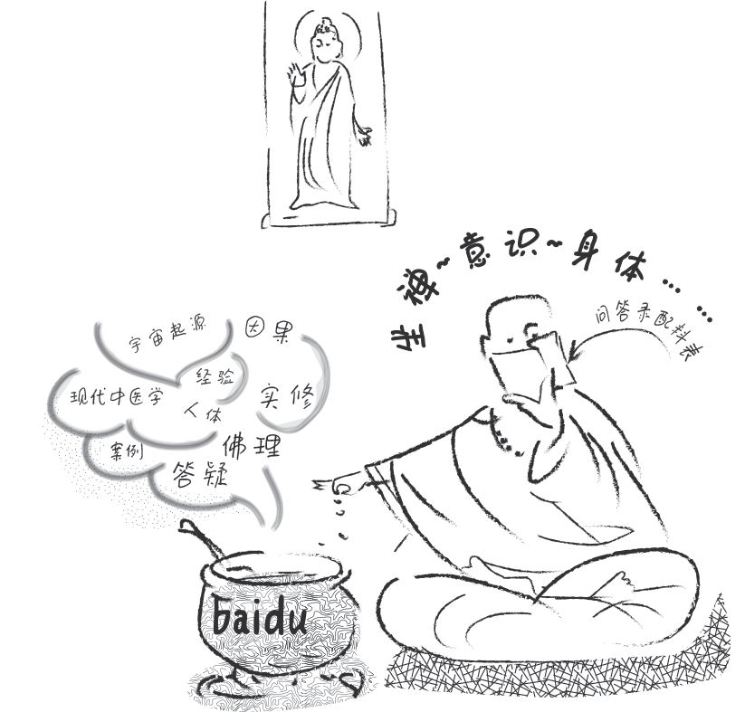
920626777
请问楼主，能说说如何打通中脉或是三脉七轮吗？打通中脉有什么用呢？打通的标准都是什么呢？谢谢。
Taiguanglin
前面已经讲完了！打通中脉才能进入绝对健康状态，这样才能入定。去看前面“三气归元”部分。
第17 章 地狱、轮回(14)
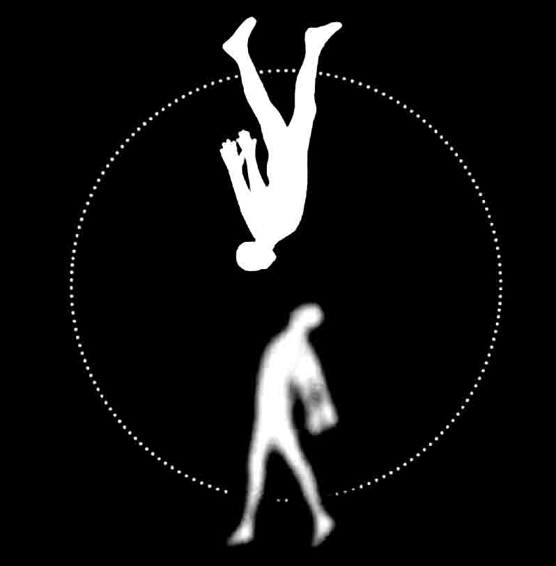
阿啦顶身等
有人说，有些妖魔或冤亲债主会幻化成佛菩萨像来引人，是咋回事呀？
Taiguanglin
至于死后，会有冤亲债主变成你亲人的样子来勾引你——有这个可能性！就看你的修为了。
如果你修到欲界禅定——可以升天界，那死后直接升天，根本不用担心冤亲债主来勾引你；如果是做了很多缺德事，那死后马上堕地狱，也没工夫看别的事。
这两种有区别：能升天的人通常提前知道自己死期，而且死的时候不会那么痛苦，自己做好准备，很安详地离开；要下地狱的那是痛苦不堪，死前就会出现地狱景象，让其感到非常恐怖。
那中间四个道怎么样？通常会等二十四小时！这段时间意识还在尸体旁边徘徊，那些来勾引的冤亲债主就抓这个空档。为了保护死者，最好二十四小时内不要挪动身体。他有感觉的，弄疼了会生气，这样容易下饿鬼道。还有就是念经念佛：一是吓退鬼道中的冤亲债主来勾引他；一是让他跟着念，起欢喜心，还能加点功德。等时间到了，就有鬼差来带走了，去见阎王再判断去哪个道。
对你而言，现在修行，保证自己能升天就可以了，不用担心死前会如何。
toton126
人死后，通中脉的人，神识从顶上出去；那凡人，就从下丹田出去吗？假如有实修，没有通中脉，到死，神识还是从下面走了，是不是？
Taiguanglin
Taiguanglin；那得看你的修为，还有所造的业，综合考量。
就算你不修行，你造了很多善业，也可以从头顶出去升天；虽然只能去四天王天和忉利天，但那里也比人间强多了！就算你修到初禅，你造了很多恶业，你还是会投胎到下三途！
头顶出去是天人，面部是人，面部以下是下四道，从脚出去是地狱。
920626777
请问楼主大师，六道都生活在哪里呢？像人和动物在地球，鬼道、天人、阿修罗、地狱在哪个星球呢？像有人能看见鬼等一些东西，那鬼是一种什么存在呢？是物质，还是非物质的？我们大多数人看不见，是因为所在的世界维度不一样吗？世界是几维的呢？谢谢，阿弥陀佛！
Taiguanglin
天界在银河系的黑洞方向，地狱在反方向，饿鬼、畜生、人都在地球上。
鬼也是物质，是胎生。我们的视力也有频率，就像广播一样，要看别的世界就得修出天眼通。
维度我不懂，只能说不在一个能量空间吧。
星辰残月变
需要修行多久才可以看见地狱啊？昨天一直入不了定，睁眼时有晃动的感觉，不知道算不算？
Taiguanglin
为什么要看地狱？为什么不看天堂？看那些又有什么意义？
先从打通经脉开始，一步一个脚印，就看你修行有多精进了！
单看现在你满脑子妄想，这样下去一辈子也看不了。
星辰残月变
坟地多的地方真的有鬼吗？不是说死后，尸体就是一具臭皮囊么？僵尸也很可怕呢！
Taiguanglin
对于鬼来说，坟就是家。但并不是所有鬼都住在坟里，级别高的乱跑，被坟禁锢的都是级别低的，投胎去了坟就空了。有些坟是空的，有些坟有主。
星辰残月变
饿鬼道是怎么出生的？胎生？还是鬼生？有记忆吗？
Taiguanglin
鬼道是胎生的。有的有人世记忆，有的没有。
路过的小胡子
大师，我想问一下。如果一个“坏人”，他没有“善恶”观念，做一些平凡人认为下地狱的事，但是实际上他却并不知道什么是“地狱”，相反他却只听人说会去“天国”。那么这个所谓的“坏人”死后成鬼，会不会上“天国”？求大师指点，对我修行有帮助，阿弥陀佛！
Taiguanglin
不是先有地狱，你造了恶业被抓进去；而是你先造恶业，先养成坏习气，你的恶业和坏习气形成地狱这样的幻觉，把自己关进去。所以，不管你听没听说过地狱，造了恶业都会下地狱！再说，你害了别人，别人对你的怨念也会形成地狱。
初学每天读一遍《地藏经》，回向冤亲债主！有时间磕头，每天坚持。先消业和锻炼身体，为以后的修行做准备。还有，能不吃肉尽量不吃，或者少吃。
星辰残月变
佩戴《楞严咒》可以除淫心吗？打坐可以佩戴么？
路过的小胡子
一定程度上有作用，但是还得靠自己。个人感觉打坐也应该可以佩戴吧。
Taiguanglin
佩戴在一定程度上防止外邪入侵，但是对于灭习气或者淫欲没有什么直接作用。要真的可以靠佩戴什么东西来灭习气，那大家都戴东西就可以成佛了，不需要修行吧！
星辰残月变
佩戴《楞严咒》的人，淫邪鬼物是否可以上身，靠近啊？
Taiguanglin
有一定的保护作用！但是和你有前世因缘的鬼就不怕那些了。
满城金甲
家里的保家仙怎么送走，据说弄不好还闹腾人。
Taiguanglin
现在一般的楼房没有什么宅仙——你多虑了！就算是平房，宅仙都是来保平安的——你不管就没事！
你要供养，就立个神位，每天上香、供水果和糖果就可以了。通常都是先供佛菩萨，在其下首一起供养宅仙。以前去台湾，那里的人很热衷于供神。
不管怎么说，布施是修福的首选！
宅仙也保善人，不保恶人。
星辰残月变
师父，世间动物是否可以修炼成精啊？中国神龙真的存在吗？
圆圆柔柔摘月光
不仅仅动物，植物都可以的！普陀山一棵几千年的老樟树，曾经皈依宣化上人。是在上人的徒弟去普陀山的时候，它现身问《心经》其中一句的含义，上人的徒弟问他从哪儿听到上人讲法；这棵老樟树说，上人讲法，尽虚空都可以听到！神龙是必须存在的，没有任何疑问。
Taiguanglin
动物也有修行的，龙真的存在。
第18 章 妄想、分别、执着、明心见性(38)
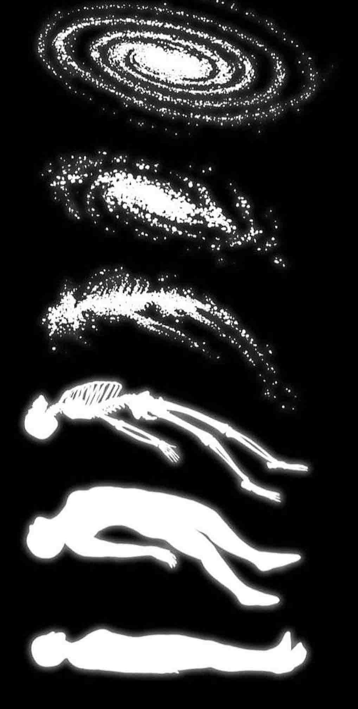
灌水弟
师父，可以用您的大白话解释一下妄想、分别心和执着这三大基本佛教概念么？就像师父曾经解释禅定一样，一看就明白禅定到底是什么意思，而不会误以为禅定是像枯树石头那样呆板的。网上的解释，总是看得一愣一愣，一头雾水。
Taiguanglin
你先弄清楚凡夫的执着吧，后面罗汉的分别心和菩萨的妄想很难用语言来表达，说了你无法理解。
奈何花落K
苦和喜不是感觉吗？喻超越@ 奈何花落K：你应该弄清楚根、境、识的区别和联系，如果根不缘境，识自不生。奈何花落K@ 喻超越：那做梦时，五根是关闭的，意识却还有。
Taiguanglin
Taiguanglin@ 奈何花落K：你看我最后一篇更新( 这里指的是《坐禅》之“如何处理禅定中的幻觉”这节)。
苦喜是情绪，不是感觉。我打你一巴掌，你疼——是感觉；你生气，是情绪。你看到帅哥，眼睛进来的是感觉，升起爱慕之心是情绪。吃到美食，舌头上是感觉，感到高兴是情绪。人先有欢喜心，后出现痛苦的情绪。
根据苦喜二情出现五根境界，包括五种根器和相对应的外界五尘，就是肉身和世间万物，依此再出现注意力和文字妄想。
从对死物的执着发展出对活物的执着，就是爱情。爱生淫欲，爱又生恨，恨极就杀，杀了不解恨就吃。生死相继，轮回不断，由此而来。所以，情绪是罪魁祸首。肉体把感觉传到意识，意识有执着，执着于某种感觉，就命令身体追逐感觉；意识执着于肉的味道，就命令身体吃肉；眼贪光明和美丽，耳贪佳音，鼻贪香，舌贪美味，身贪细软。这些执着无时无刻不在控制着你，让你变成身体的奴隶，忘记了真我。
奈何花落K
你说得很清楚。我想问恐怖是怎么回事？比如从高处坠落时，明知不会死，却害怕得不得了。
Taiguanglin
恐怖属于苦情——怕自己受到伤害！从对安逸的执着发展而来。你说明知不会死，其实是假象。你看人们天天担心这个、担心那个，很多事情明知不会发生，但还是担心。是内心深处有不确定的地方，万一发生意外怎么办——都有这样的想法！
还有身体不喜欢某些感觉。跌落的感觉不喜欢，所以有恐怖。
奈何花落K
我还有一些问题，人在睡着的状态下，是有思维的( 念头、妄想)，为什么睡着( 昏沉) 时，“我”没有了？
Taiguanglin
你有啊！不但有你，还有别人，还有环境，什么都有。
你指的是可以控制自己的理性吧，那你观察很细微了，了不起！
没有修行的人，梦中没有理性——是按照习气来的！醒着的时候，靠理性来控制。比如见到美女，现实中也就多看几眼，在梦中没有理性控制，直接扑上去干了——是淫欲，就是习气发作。所以，梦也是考核的方式，看自己有没有彻底灭除习气。比如吃肉和淫欲，都在梦里考核。佛经有云，真正的菩萨在梦中也会持戒。
奈何花落K
我在梦中有时可以控制自己，比如可以不吵架、不贪财等。我的意思是有梦的时候，是有“我”的，“我”进入房间，我看、我听等等。无梦的时候，念头是存在的，我却什么都不知道了，怎么回事？
Taiguanglin
为什么人睡觉的时候失去意识——你说的是这个问题啊！
白天打的妄想，包括文字妄想、注意力和情绪都属于六识。晚上的睡眠、打坐时的昏沉和白天的妄想，犹如硬币的两面同时存在，就像白天和黑夜一样。就像机器一样，运行一段时间就要休息一段时间，而且，打妄想是消耗极大能量的！科学家研究表明，人吃进去的营养中，九成以上送去大脑用来打妄想。用脑子多的人，比如作家、侦探之类的职业，吃得多也不长胖，所以打妄想是体力活。既然是体力活，就需要休息，休息的方式就是失去意识的睡眠。睡饱了起来精神爽，睡不好头昏脑沉，浑浑噩噩。
我们修行是为了灭除六识！白天的妄想少了，睡眠也减少。进入二禅就基本不用睡觉了——可以用打坐来代替睡眠！
Taiguanglin
没有！是妄想的另一种表现。禅要的是清醒——二十四小时都清醒！
奈何花落K
谢谢！有些明白，有些没明白——我慢慢地再想想。
圆圆柔柔摘月光
“再回过头来看速度，这个世界能有比光速更快的速度吗？那是不可能的，光速是一念的速度，比一念更快就是无念，无念就不会动了。既然没有超过光速的东西，那时间倒流也是不可能了。这个时间观念也是，先有妄想了流向，再用分别心分出未来和过去，妄想流向的方向就是未来。好比先有了人脸，再按照脸部朝向的方向来分出前后一样，你的脸朝向哪里，哪里就是前面，转过身来后面就变成了前面。妄想也一样，新的妄想出现的时间就是未来，你不能倒过来做过去的妄想，你把过去的妄想重新做一遍，那也是新的妄想，还是未来。你把以前看的电影重新看一遍，你也不可能回到以前。所以说，时间是永远不可能倒流的。”师父，这一段没看懂。速度越快，时间越慢。那无念的时候，时间是不是就等同于静止的？如果时间静止了，是不是就是妄想静止了——也就是没有妄想了？推理出来，佛就没有时间这个概念。所以，在佛而言，过去就是现在，就是将来？完了，师父肯定会回答。我不是佛，我不知道佛的境界。可是，按照道理来，是这样吗？如果按照我的理解，时间静止= 没有妄想= 无念。那么妄想开始减少的时候，不就是时间倒流的时候吗？可是，如果压根就没时间这个概念，它又怎么会倒流呢？这不是顺推理和逆推理？这段关于妄想和时间的，等我再看看。或者请师父有时间的时候，给讲一下时间出现的情形吧。谢谢师父啦！
Taiguanglin
这个时候的念，指的是想动的欲望——不是根本妄想。菩萨也没有时间概念！时间是分别心里出现的，以后再讲。
zhoujianbang12
师父，十地菩萨有几个妄想？是一个还是几个？那么依次推，到初地菩萨有几个妄想？是十一个吗？还有，为什么是在有了十一个妄想的时候才产生分别心？而不是在有两个妄想的时候产生分别心？
Taiguanglin
不要想太遥远的内容！先从打通经脉开始，身体不好就练呼吸、磕头。想多了都是烦恼，你现在也理解不了菩萨的妄想是什么。我也没法用语言来说！
zhoujianbang12
师父，妄想是如何产生分别心的？分别心又是如何产生执着的？感觉又是如何产生的？感觉产生之后，被分别心分别产生好恶，那么产生好恶的标准又是什么？别人打了你一下，你会感觉疼，但是为什么会生气？
Taiguanglin
你的问题，我都不知道从哪里开始说！是十万个为什么吗？
能不能现实点，从实际修行开始入手！
你的大部分问题都在前面的帖子写过了。自己慢慢看！
zhoujianbang12
师父，第一个妄想出现之后产生认识对象，认识对象是如何产生的？是为了满足妄想认识的需要而产生的吗？在色界十八天中，认识对象的出现是因为我们产生了孤独这种感觉，为了摆脱这种感觉，认识对象才出现的，对吗？我想问认识对象的出现，是不是为了迎合我们的需要产生的？而不是本来就有的？
Taiguanglin
孤独感让你去找其他人。想知道黑暗中有什么，所以出现了光源。
supid126
还有一个问题，就是假如大脑里的妄想全部没有的话，那用那个脑电波来检测，是不是成为一条直线呐？
Taiguanglin
脑子里没有妄想，可脑细胞还在活动，还在进行新陈代谢，还在分析各种感觉，所以不会变成一条直线的！
Goagora
何为心？何为明心？如何才能明心？何为性？何为见性？如何才能见性？何为明心见性？何为开悟？明心见性和开悟有何关系？何为如来藏？张三的如来藏和李四的如来藏是何关系？
Taiguanglin
看《楞严经》第一段，叫七处征心——佛与阿难论心在哪里！最后的结论是，心不在体内，不在体外，不在根器中；宇宙万物和我肉身，包囊这一切的虚空都在我心中。
明心就是修行过程，有不同法门。性指的是自性。打个比喻，我们看电影，大银幕恒常不变，画面是瞬息万变。这个恒常不变的大银幕是自性；瞬息万变的画面就是妄想、分别、执着所构成的世间万物和肉身，还有脑子里的妄想。见性指的是看到了这个大银幕，认识到这个大银幕恒常不变。
明心是过程，见性是结果。
我们认为的开悟是进入四禅的境界！如果你参话头，疑情一破进入四禅，唯有细细的欢喜心绵绵不断——到这里就叫开悟了。但离解脱生死成阿罗汉还很远，所以开悟不是究竟。
大银幕就是如来藏，可以呈现瞬息万变的画面。每个人的自性都一样，而且是通融的。你中有我，我中有你，犹如两个影子可以叠成一个一样。所以，我们在佛的自性当中，佛知道我们在干嘛、想什么。但我们纠结在瞬息万变的画面中，看不到后面的大银幕——所以不知道佛，也不知道身边的人！
Goagora
心和性又是何关系呢？见性时，是什么见到了性？
Taiguanglin
心就是性，性就是心。性指的是根本，心指的是在这根本上长出来的主干。心依性而有，性靠心来表现。比如脑子里的妄想，一动念就肯定有内容；这个内容就是妄想，妄想就是内容——表达不同。
所谓见性就是没有了心。主干没了，回到根本了——由根本体会到根本。所以见性了，不是说某个个体看到了性，而是性回到了性！
Goagora
没有了心是什么意思呢？是不是没有了妄想？如何能修到没有了心呢？
Taiguanglin
你这个问题问到点上了！在此开演终极佛法，你如果看明白了，恭喜你，可以缩短无数劫的修行( 答案太长，此处省略。答案在《坐禅》第一章第01 节——话头禅)。
妄想既然是可数的，一个变两个，两个变三个，以至于无量的妄想，所以修行只有渐悟，没有顿悟！只能把妄想一点一点消灭，不能一下子消灭干净。所谓顿悟的人，都是修了很长时间，到最后一刻突然开窍，就叫顿悟。
信如108
顶礼楼主！不敢问菩萨十一种妄想。请楼主师兄，有机缘未回国前，为我等愚昧之人开示阿罗汉九种分别心的道理。不能深入讲，大概讲一下也可以！有礼了！
信如108
阿罗汉思考问题用大脑吗？第六识甚至第七识似乎都可以体会，请问如何体会第八识？
Taiguanglin
分别心部分以后会简单讲！我也有我的讲法进度。
阿罗汉梵语原意就是无我之人、没有我执的人、没有一切执着的人、没有文字妄想、没有注意力形成的五根境界、没有苦喜二情、没有四个无色界定里执着的内容、也没有肉身。所以，没有大脑，那就不会用大脑来思考了。只有到了阿罗汉的境界，才能体会到八识里产生的根本妄想。连阿罗汉的分别心也很难用我们的语言来表达——这个妄想更难表达！
佛经里，对分别心和妄想都是点到为止，不详细讲解。
炎明王
关于给草浇水的例子，还想进一步请教师父。例子里说，只要给所有草平等浇水就可以了，没有分别心就不会有偏袒。那假设说，草本身在浇水上就是需要有区别，比如这种草需要多浇、另一种需要少浇、还有一种不能浇就让它干着等等。这样的分别心在做事时必须要有，那如何处理？我十多年前最初学佛的时候，很快就体会到类似于这样的无分别的心态。后来这样子一路走下来，却发现自己的生活越来越糟糕。很多事情在学佛前本可以轻松处理好的，学佛后反而处理不好了——就是因为没有起心去分别。再看普通人分别心很重，随时警惕这个担心那个，该争取的拼了命也要争。虽然在修行人这里看来好像很可笑的样子，但做事却很有成效，日子都过得比我好，有时候还会羡慕他们。这个问题还请师父多指点！
非缘非非缘_
你即便去分别了，结果也是空，所以不必因为求空而刻意不去分别，这也是在分别中。炎明王@ 非缘非非缘_：你之前已经有各位网友给过我回复了，但都是空讲理论。其实他们说的，我自己都可以说得比他们还好听，佛学书上全都有。我早就不玩理论，只讲实修。这里我提出的是实际生活中困扰我很久的问题，如果那些理论有用，我也就不会来提问了。
Taiguanglin
那个分别心问题，一个凡夫是做不到没有分别心的——你得先修出妙观察智！
一是一，二是二，一和二有什么区别？之后再修行灭执着，做到一和二平等对待——就是平等性智；也就是说，你要先把众生如实观察，知道每个众生的过去业、现在的习气、还有想法等，都彻底知道之后，才能进入平等对待的阶段。
你连淫欲都没灭尽，文字妄想、注意力都在。这个时候追求空，那就是顽空，是无记空；就是像木头一样发呆，是极端的愚痴！你走这条路最后会连记忆都消去，你都想不起以前不愉快的事，但是死后却会投胎成蛆虫之类的——是愚痴的极端结果。
修行要一直有觉知的能力，知道自己在干什么！到后面，就有了宿命通、他心通——彻底知道别人。你不知道的情况下干脆发呆，那就是逃避现实！比那些动脑子过日子的人更愚蠢了，生活自然不如别人了。等你有了观察别人心态的能力的时候，不走运都不行。这个世界上最可怕的能力就是他心通，知己知彼百战不殆嘛。
原创的柿子
楼主您好，我有个疑问想请教。在前几页，你讲佛怎样堕成凡夫时就想问了，再结合上面你讲的《金刚经》，我想问阿罗汉有人我分别。“我”和“他人”，是指他有这个妄想，所以阿罗汉的这个“他人”是他幻想出来的，是假象，不是真的，但阿罗汉以为是真的、是活的。就像我现在看到的楼主，其实是我幻想出来的。等我修到只有我相时，我的这种妄想消失了，楼主也消失了。还是说这个“他人”是另一个众生，如同我们现在凡夫的生活中，我认为楼主是个独立的个体或是一群个体，即使我不知道你，我没有妄想这个人，你也是存在的。等我修成只有我相时，楼主还是存在的，但我看楼主如同草一样，不是活物，不会和我互动？这两种应该是哪一种呢？如果你认为人类还是不可能理解这个问题，那就不用麻烦回答了。哈哈哈哈！我看楼主说的，一切从妄想生起，妄想灭，众生灭！所以我认为是第一种。但世界上有无数的佛，所以我又认为是第二种。问题是，如果是第二种，那么每个佛最开始都是有妄想的，所以有众生；那么大家的妄想都是一样的，所以才能生活在同一个世界——怎么这么巧啊？不然每个人的妄想都可以不一样的啊，都活在自己构造的世界里才对啊！活在自己构造的世界里，就是说楼主就是我，我就是楼主，我爸妈是我，我就是我爸妈。等妄想灭，楼主、爸妈和我又恢复成原来的我了。我就没有众生相了。好吧，路过的大神们可以杀了我了。楼主您要有时间的话请关注一下这个渺小的问题，谢谢了。还有我们刚来，楼主就要回国了，那么以后还会继续这里这个帖吗？
圆圆柔柔摘月光
我似乎看懂了你的问题，所以你也把我绕进去了，你是坏人（玩笑哈）。原创的柿子@ 圆圆柔柔摘月光：我有这个疑问，是因为我只看了楼主部分文章。昨天我看了几乎所有的更新，正如楼主所说，已经解答了。我们自性是互通的，如同两个影子可以叠在一起，主动的那一方死后会投生到被动那一方的妄想里——我好像只明白这些了。但我能确定我和楼主不是一个人了，我和你也不是一个人，哈哈哈哈。
圆圆柔柔摘月光
贴吧里的问题，师父不用特意回答了！这里已经解释得很清楚了——就是菩萨度众生有无分别心的那个问题。ruofeilulu@ 圆圆柔柔摘月光：这样看来佛经上说的和实际情况是有区别的，以老师这里为准。
Taiguanglin
仔细看佛经！前面讲法会中出席的菩萨们的时候，二人一组出现的菩萨有很多。药王、药上菩萨，妙音、美音菩萨就是两对搭档——这种菩萨组合很多。
Hlink
这段剧情( 意指《坐禅》第一章第06 节里的“分别心”里，师父和大势至菩萨一起传法的那段——话头禅) 太有意思。能和大势至菩萨一起执行任务，看来师父的级别不低。__ 云阳：请问，人的本我心是一样的吗？__ 云阳：师兄，既然人的自性是一样的，为何后来人会变得如此不同？这其中是否本身就包含命运的不平等？既然自性一样，然则佛何以成为佛？而人何以苦苦营生？
Taiguanglin
同样的种子撒在地上，长出的树木都不一样。人也如此，自性本来都一样；可妄想起来了，越来越多，就会开始出现不同的妄想。这种不同点越来越多，形成每个人的个性，形成不同的习气；不同的习气又造出不同的业，不同的业让你得到不同的报身，引来不同的果报。
《维摩诘经》里说，在遥远的地方有一个世界。那里的佛不用音声传法，而用香气传法；那里的众生也不是用耳朵来闻法，而是由香气来悟法。世界之大无奇不有！看我们周围的动物、植物，有些就是用气味来交流的。命运就是因果报应——对所有人都一样！善有善报，恶有恶报，丝毫不爽。自性都一样！
佛陀也曾经是凡夫，从发心修行到成佛用了三大阿僧祇劫，都是一步一步修上去的。你现在发心也不晚！
时间都是由分别心形成的幻境而已！没有过去、现在、将来，只有妄想、分别、执着。这三个如果还在增加，那你越走越往下。如果你现在开始修行，一点一点消灭这三个，那你是在往上走——一直到最后成佛为止。
愿佛菩萨保佑你！
Taiguanglin
我认为成佛了才叫见性！所以，成佛之前谈这个没意义。当然对于见性有很多种解释，就看你接受什么样的解释了。
920626777
请问禅宗的见性( 即初关、重关、牢关) 与禅定( 初禅、二、三、四禅) 有什么关系吗？
Taiguanglin
我认为成佛了才算见性！
这个人人都有不同理解。有人认为开悟就算见性——那就是四禅下段。我在前面回答别人的问题的时候解释过明心见性。
既然我认为成佛才算见性，那在我这里，禅定是必须的。见性是顶楼，禅定次第是阶梯——没有修行不能见性。这种名相不值得纠结。比如你是大学生，可以叫你大学生，也可以叫你高学历者，也可以叫你本科生，这都没有什么好探讨的。但是佛经里，禅定的次第有明确的标准，这不是可以随便改的。
“明心见性”这个词是到了中国才出来的，所以有很多种不同理解。这是我的理解。看《楞严经》第一段，叫七处征心，佛与阿难论心在哪里，最后的结论是：心不在体内，不在体外，不在根器中，宇宙万物和我肉身，包囊这一切的虚空都在我心中。
明心就是修行过程，有不同法门。性指的是自性。打个比喻，我们看电影，大银幕恒常不变，画面瞬息万变，这个恒常不变的大银幕是自性，瞬息万变的画面就是妄想、分别、执着所构成的世间万物和肉身，还有脑子里的妄想。见性指的是看到了这个大银幕，认识到这个大银幕恒常不变。明心是过程，见性是结果。
我们认为的开悟是进入四禅的境界，如果你参话头，疑情一破进入四禅，唯有细细的欢喜心绵绵不断，到这里就叫开悟了。但离解脱生死成阿罗汉还很远，所以开悟不是究竟。大银幕就是如来藏，可以呈现瞬息万变的画面。每个人的自性都一样，而且是通融的，你中有我，我中有你，犹如两个影子可以叠成一个一样，所以我们在佛的自性当中，佛知道我们在干嘛，想什么。但我们纠结在瞬息万变的画面中，看不到后面的大银幕，所以不知道佛，也不知道身边的人。
还有你说的三关，非佛亲说，不值得探讨，更不能拿来作为评判禅定次第的标准。
逍遥三界8
明心见性、见性成佛了究竟会怎么样？求高人指点。
蜀州隐士
师父，你说的文字妄想到底是啥呀？老是不懂这句！
Taiguanglin
文字妄想，用语言来打的妄想叫文字妄想。中国人想事情肯定用汉语，英国人用英语，法国人用法语，你可以用文字写出来的妄想叫文字妄想。这样还不明白？
920626777
另外，修到什么程度能断文字妄想？
Taiguanglin
文字妄想和注意力都是依据五根境界而产生的，修到五根境界全部破灭，文字妄想就消失了——就是三禅。
Taiguanglin
绝对不能！不入死地，不能断死；不入尘世，不能破尘！
空花水月L
请问师父如何理解慈悲？怎样实修慈悲呢？
Taiguanglin
拔苦予乐叫慈悲！看到众生苦，为其拔苦，给他快乐——这是一种发心，不是一下子就可以起来的。
发心也分次第！
最初发心是求道心，是追求真理的愿望。看到世界、看到生命、看到命运，问为什么——世界是如何形成的，生命、命运又是怎么来的。带着这种疑问寻求真理叫求道心。
佛陀在少年时期，跟着父亲出城游览。看到农夫耕地，在被木犁翻出来的泥土中爬出虫子来，天上的鸟就下来吃虫子。看到这些情形，佛陀产生疑问，世界为什么这般不公平，为什么我不用劳动却锦衣玉食，为什么那个农民在烈日下辛勤劳作，却骨瘦羸弱；为什么虫子要被鸟吃，弱肉强食的自然法则从何而来。这是佛陀初发心探究真理的开始。佛教有一个像叫王子半跏思维像，就是一个年轻人坐在椅子上，一只脚放到另一条腿的膝盖上，一只手托着腮思考，就是表现佛陀发求道心时的景象。
求道心让你接触佛法，闻得四谛法。你认识到人有八苦，从此认识到人唯有苦，无乐可言，这叫观苦心。佛陀管我们的痛苦叫苦苦，是苦中之苦，管我们的快乐叫坏苦。我们的快乐都是由执着而来的，一旦变质变坏，马上就是巨大的痛苦。你爱上一个人，和他在一起是快乐，等分离就是苦——所有事情都一样。你吃到爱吃的美食是快乐，你一个月吃不上你爱吃的东西，那就是苦。
观苦心中发出离心。你决定断生死出轮回，不再进入痛苦的轮回，这叫出离心——这种出离心催动你刻苦修行。
当你修行达到一定境界，灭苦灭到一定程度，你就开始观察众生的苦；你为众生不懂佛法、不知离苦之道而感到惋惜，你决定为众生演说佛法，让他们也能离苦得乐，这叫慈悲心。
当你发现喜与苦是相对的，有苦就有喜，有喜就有苦，给人拔苦予乐并不是究竟，这个时候你会发大菩提心。为众生演说一乘圆满法，开演终极佛法；给众生直指寂灭之乐，永断无明，得阿耨多罗三藐三菩提——翻译过来就是无上正等正觉。
求道心、观苦心、出离心、慈悲心、大菩提心，你觉得你现在发了什么心？
空花水月L
“三界唯心，万法唯识。”“凡所有相，皆是虚妄。”师父怎么理解这两句话的？
Taiguanglin
你看完我上面讲八识、七识、六识、佛是怎么一步一步堕落为人的之后，就不会问这种问题了。
在自性中无缘无故产生第一个妄想。妄想是假，是幻是梦。这第一个妄想一直发展到宇宙万物，所以三界万法都是从自性当中展现出来的幻觉。所有相，都是假的！不是真的！
菩提是在现实中找的、在当下找、在自己心中找；不在心外，不在世外。
你把前面的帖子都看一遍吧。
Taiguanglin
有妄想就叫无明。所以成佛了，就算破了无明关了。
处处茧丝
楼主，要是一个人的追求行动也是注定的，那是不是说，我脑子里每个念头也是注定的？要是这样的话，那我岂不是如同石头，只是一堆原子在撞来撞去？
hy2hx
人会对念头进行反省思考，这就是自主的表现。念头、妄想、习气是前世注定。追求行动是念头妄想，对这个追求的念头妄想的反省思考是自主，而不是石头。追求美女、金钱这个行动是念头妄想，但能反省思考这个行动就不是妄想了。而石头就不能自己思考反省！
奈何花落K
抱歉！你如何确定你所见到的地狱、轮回、极乐世界不是自己的意识化现的？
Taiguanglin
万物唯心造！本来就是我自己妄想中产生的幻境！大家都在做梦。
还有我的境界和你没有任何关系。不管我是谁，我讲的法对你有用就好，没用就不用看——关心别人都是多余的事！
奈何花落K
不好意思，我问你的原因是想确定你所讲的是否和释迦佛的一致。
Taiguanglin
那你应该去参究《八万大藏经》！
奈何花落K
抱歉！如果引起你不高兴的话。只是我心中仍有许多问题想不通，我会慢慢学习的。
Taiguanglin
没有！
怀疑是正常的，我又不能现什么菩萨化身与你看，也不见面，空口论法，只是给你提供参考！你照着修行，得到利益，那我说的是对的；你越修越烦恼，那我的说法和你不对口。
每个人情况不同，适合的法门也不同！
佛法的大道理都在佛经，以佛经为根本，佛经里没有的不用信。祝你好运！
第19 章 爱情、婚姻、家庭关系(13)
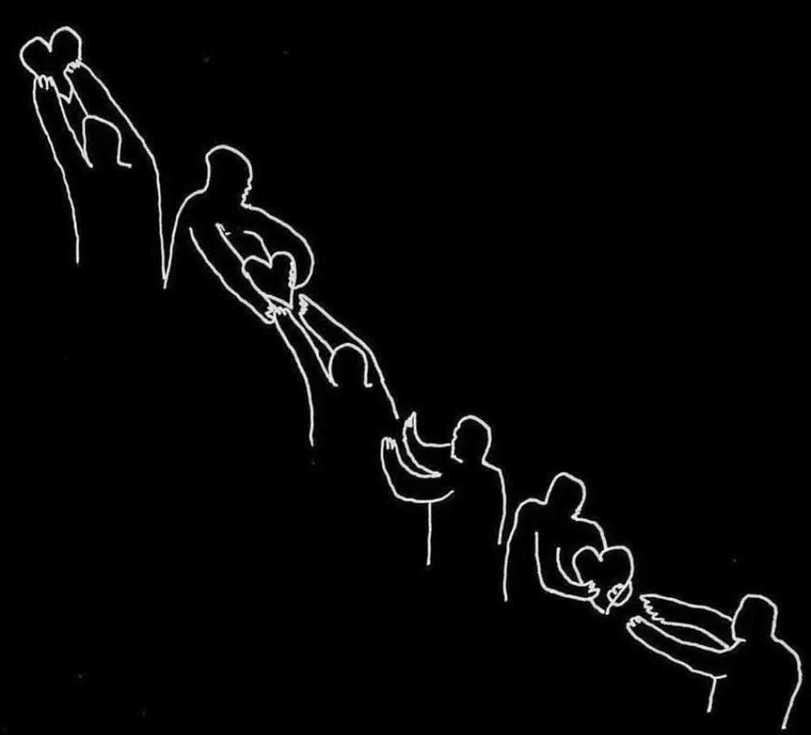
Taiguanglin
爱情～～！谁没有过刻骨铭心的爱情？没爱过的人修行也不能成就。
那个痛苦的情绪一直持续，让人坐立不安，精神恍惚，茶不思饭不想，时间过得超级慢。
我也体验过，我就磕头了。当人升起任何一种情绪的时候，身体会分泌出相应的荷尔蒙。这种荷尔蒙在血液里流淌，会加重这种情绪。所以磕头出汗，把它排出体外，这样痛苦的情绪会缓和不少。身体累了，也能睡个好觉。不过，第二天起来又痛苦，那就再磕头——不经过几个月缓不过来。想打坐，这个情绪也让你无法静下心来，根本不能进入状态，只有拼命磕头和念咒了。
还有一种方法就是哭——哭也能缓解情绪。找个没人的地方痛哭一场，也不是什么坏事——憋着更痛苦。
炎明王
懂得出汗化解情绪的道理，心里也比较自信了，非常感谢！还有师父说那句“苦情只有在遇到境界的时候才会发作”真是说到我心坎了！这次失恋之前，很长一段时间我内心没有任何波动，觉得自己功夫真到家了，结果……
浮生有涯
参阅并收藏师父的帖子好些天了，忍不住转载了部分内容到别处，并推荐了此帖，目的是让更多的朋友能有缘学到这些真修实学。真心感恩师父！在下愚钝，今生唯愿一心念佛求生净土。关于吃肉和淫欲是一直困扰我的两大问题。在家彻底断肉确实有种种困难，但还是准备克服。淫方面还是不知具体如何做，师父说夫妻之间要关照对方，适当还是要做做，但这样又不可能彻底断淫心。师父已达到了即使去做也不会起淫心的境地，但我们这些“初鸟”肯定是只要做就绝难了断淫心。在下为所有已婚在家修行的朋友请教，还请师父给予详细开示。合十感恩师父，南无阿弥陀佛！
Taiguanglin
结婚也是业力牵引，也是要消的业！
你一生要做多少次爱也是有数的！只要你不出去嫖妓，不搞婚外恋，你的修行还是会不断进步！不要纠结在做爱上。如果一年拿出一两个月，找个地方清修一下也是好事。这得看因缘了！
路过的小胡子
请师父开示，家里老催着结婚、挣钱去；而我只想做着这份安逸工作养活自己，然后有时间学佛，不知道该如何是好。Sailing 旅：师父，一个人今生和谁结婚也是注定的吗？我有出家的想法，但父母不会同意，希望我结婚。但若只是随缘的方式，也会等到要结婚的人吗？
Taiguanglin
每天念《地藏经》回向，求地藏菩萨给你引个好姻缘来，半年到一年就有效果。
结婚很好啊，出家也很好，和修行没有什么冲突，就看你怎么把握了。出家吃的饭都是债，还不如自己赚钱养活自己，用剩余的时间修行也可以。
星辰残月变
师父，姻缘是否一切皆有注定？如果我不求，是否就会没有？还是怎么一说？婚姻……2011 暖暖的初夏：顶礼师父！弟子想问，佛弟子究竟该怎样处理和父母的关系才如法呢？对干涉子女生活和孩子教育的父亲，能否回避呢？真的是近则嗔、远则怨。还有父亲一有不满就拿母亲出气，我们做子女的可以为这样关系的父母做些什么吗？感恩！
Taiguanglin
保持距离吧！还是把话说清楚，说教育问题怕爷爷宠坏孙子。
要说能做的，只有念经回向，修行的功德回向，希望父母早点开佛慧，再放生、印经回向。
通常孩子是很难说服父母改变观念的，只能这样了。佛也有度不了的人，更何况我们呢！不用太在意，家家都有难念的经！
你想改变父母本身就是执着。
295066960
师父啊！我是大学生，家人非让我吃肉，没人理解支持啊！南无阿弥陀佛。
Taiguanglin
尽力而为吧，早晚要独立的，不用跟父母闹得太僵。
圆圆柔柔摘月光
师父，这也是一个小小的问题。因为我总是在家里打坐，所以我儿子也开始有模有样地打坐。他可以双盘上，但是坚持的时间比较短，他今年六岁。请问下师父，鼓励他打坐没事吧？我没有教他舌抵上腭，光是教了手印。
Taiguanglin
没关系，教孩子打坐很好啊！呼吸是关键，先教正确的呼吸方法。
精诚唯一
很多同修应该碰到不信佛的人们常说：信佛有什么好？什么都不能做，都空了，有意思吗？有意义吗？我信佛，也相信佛不说妄语。但说实话，还是有很多不明白质疑的地方，因为很多佛说的境界，我们都看不到，感受不到，没有实证。所以很多同修信心不坚定，我也是。但是我想问的是，看到你前面说佛是没有妄想的。那你说阿弥陀佛给你们任务下界来弘法，那阿弥陀佛让你们下来弘法的这个思维是谁的意识？这个意识不是妄想吗？还是你们是自愿下来的，不是阿弥陀佛的意思？还有就是成佛了不生不灭了，也没妄想。假如众生都成佛了——只是假如啊，假如这虚空法界都没众生了，都成佛了，没有了我、人、众生、寿者相了，就是都脱离轮回了，然后呢？难道和虚空一样，就不生不灭？那样的话有什么意义呢？我是凡夫不能理解佛的境界，只是想问，假如佛都把我们度成佛了，那我们再干什么呢？啰嗦了这么多，不知道你能明白我想问什么吗？其实我想问的和不信佛的一样，就是成佛了有什么好的？为什么要成佛啊，没有众生了，佛干什么啊？
圆圆柔柔摘月光
曾经我在学佛初期也在纠结这个问题，而且是非常地纠结啊。父母大人和眷属都问我，对现在的生活为什么那么不满意，而一定要学佛呢？你学佛到底是为了什么？成佛了你要干什么？你能怎么样？有父母、爱人、孩子、有工作、有美好的生活，怎么不好？享受天伦之乐有什么不好？人生就是有快乐、有痛苦的，有什么不好？
圆圆柔柔摘月光
后来，我看到空海法师讲的解脱道，他就有指出，其实学解脱道，一定有一个前提，就是你认为人生是苦的。如果你认为人生不苦，那说明你的解脱也不是真正的。再看宗萨蒋扬钦哲仁波切的《正见》这本书，他明确指出了一个佛教徒应该有的四个基本条件，缺失一个，都不算是真正的佛教徒。其中有一条，就是苦。精诚唯一@ 圆圆柔柔摘月光：如果只想解脱，离苦，那只要脱离轮回就好了——修到菩萨就没苦了啊！干嘛还要再成佛呢？出家的时候，师父会问你为什么要出家？成佛。成佛干什么啊？度众生。怎么不再问没有众生了再干什么啊？没有众生之前有没有佛，干什么来？圆圆柔柔摘月光@ 精诚唯一：所以啊，楼主才说让我发大菩提心。你这么想啊，你自己没苦了，可是众生有苦啊，你不管众生，你总要管自己的父母吧！为了他们啊，延伸到你累生累世的父母，最后延伸到众生。没有众生，也无所谓菩萨和佛。看《华严经》里有写！精诚唯一@ 圆圆柔柔摘月光：可能我没表达清楚，你没明白我想问什么，没有众生和佛的时候，“我们”在哪？我们成佛只是要回到和从前一样吗？圆圆柔柔摘月光@ 精诚唯一：我觉得我有点想抬杠了。没有众生，也没有佛，哪来的我们？hy2hx@ 精诚唯一：没有众生和佛的时候，“我们”在哪？这段话就是佛经上说的“顽空”。修行成佛，修到佛教说的空，并不是什么都没有的。佛这个字的意思是觉悟，修成佛就是修到觉悟。那觉悟个什么？就好像小孩子，要修学一直修到大学甚至博士。到了大学，你就明白了更多的关于世界人生的知识。这就是觉悟成佛。
hy2hx
所以，你说成佛了有什么好的，这就像小孩子说成为大学生、博士生有什么好的一样。学佛悟道就是为了上大学，成为大学生，从而不会再像小孩子、青少年那样，经常做错事惹来麻烦而导致痛苦。hy2hx@ 精诚唯一:“看到你前面说佛是没有妄想的，那你说阿弥陀佛给你们任务下界来弘法，那阿弥陀佛让你们下来弘法的这个思维是谁的意识？这个意识不是妄想吗？”这句话里，你对妄想的理解错误了。我们
先看一下佛学中妄想的定义
谓妄为分别而取种种之相。hy2hx@ 精诚唯一：所以当修成佛，也就是成为大学生的时候，就不会再分别而取种种相了。这时候佛说出来的话，你所认为的意识就不是妄想了。当然那种境界，这里也很难说出来。我也不是佛，当然以上都是我自己的见解。希望对您有帮助。hy2hx@ 精诚唯一：总结一下，佛说的空不是什么都没有啊——这是学佛第一个要迈过的坎。不然自己成为个石头岂不是更好，岂不是更空。以上都属个人见解，希望是正确的，能帮助到别人。
Taiguanglin
你想对别人传法，首先你必须比别人要好！
第一个是健康——修行能得到的第一个利益就是健康。不管你修什么法门，念经、念咒、念佛、打坐、磕头，只要每天一小时以上，坚持三年、五年，还要吃素，那些常见的慢性疾病自己都会好。你比那些不信佛的人健康的时候，才可以向那些生病的人说学佛有多好。
第二，你要有钱——你至少要比一般人有钱。你跟人说你学佛，把钱都布施掉了，现在很穷但很开心，那别人认为你是神经病！每个月拿出一部分收入放生，就算你为了福报这么做也可以，也有相应的果报。过个三年、五年，你就会发现自己越来越富裕了——所以就花更多的钱布施。等你有钱了，就可以向没钱的人说学佛有多好了。
第三，你要幸福——你要比别人幸福。脸上总要挂着笑容，家庭和睦、事业顺利，干啥啥都成，这样你就可以向不幸福的人说学佛有多好了。
如果你没有做到这三点，那最好别跟人提学佛的事——那只会招来数落和不解！
在家人就以富贵表法，你一定要比不信佛的人幸福、有钱、健康，这样才能体现出佛法的伟大。出家人就不说了。
阿弥陀佛目前在极乐世界住世，就像释迦牟尼佛在人间用人的肉身传法四十九年一样。不过阿弥陀佛的寿命很长很长，派弟子们出去传法很正常。这些问题就别问了，对那个世界的事说来无益，让人看起来感觉我是在忽悠人似的——只问和自己修行有关的问题吧！
成佛有什么好？没有什么好不好的问题！而是当凡夫太苦了，生老病死的痛苦就已经够苦的了。看来你是从来没生过什么大病，没有体会过痛得无法入睡，无法吃饭的感觉。
我妈妈是医生，我小时候经常去我妈妈的医院里玩。看那些病人个个都是愁眉苦脸的，时不时就有人死，家属的哭喊声震荡在整个楼道；当时我就想，原来所有人最后都要这么痛苦地死去；那个混得好的人无非就是多几个探病的，混不好的就那么几个亲人轮番守着，有的没钱被轰出去。不管你混得好不好，最后的结局都是痛苦地死亡。
我很怕打针，不想吃药，但偏偏就体弱多病，要经常吃药、打针。人人都会死，那我起码要死得不痛苦，不能像医院里那些病人一样，死前还在身上插那么些管子，还得开膛破肚动刀子，想象一下都恐怖。后来偶然的情况下看到《大悲咒》，上面说念这个咒可以去病，我就试试了，结果一试还真灵啊，就这样开始了修行。
再看历史上大德高僧们最后的结果，有很多人都提前知道自己的死期，做好准备，很安详地死去。先不管他们死后去哪里，单是这种死法我就很向往。
佛干什么？佛啥都不干，也可以干所有事；他想干就干，不想干就不干。这是你在用自己的境界猜度佛！
你是个闲不住的人，如果把你关在一个房间，没有电视、没有书、没有手机，还不能和外界联系，只给你饭吃，估计你坚持不了一个月就要发疯了。大部分人都这样，就是闲不住，非要干点什么，认为不干什么就不行——这便是执着。有执着就有苦，你要是干不了你想干的事，你会感到痛苦。但是佛没有这种执着，所以他没有苦。
那众生都成佛了，佛还干嘛——这是不可能的事情，至少现在看来机会渺茫！已经有无数的佛出世，有无数的菩萨在度人——但众生还是这么多。光这个小小的地球，六十亿人口中信佛的占多少？再看畜生道，苍蝇、蚊子、蚂蚁都有意识，都是众生，这样算，那就不知道有多少众生了！银河系这么大，还有很多其他星球——反正度不完的众生！其实度众生，最后成就的是自己！度着度着，一不留神自己成佛了。
话又说回来，假设一些不可能出现的情况来给自己带来烦恼，这本身就是烦恼。
以前有朋友问，都出家当和尚了，谁来生产，社会怎么维持。我问他，你愿意出家吗？他说不愿意，我说，这不完了嘛！你都不愿意出家。像你这样的人很多很多，怎么可能全人类都出家呢！这种情况再过一千年、一万年都不会出现。
还是世道太平，还可以想这种问题来打发时间。要是赶上乱世，那填饱肚子都成问题；整天都在担惊受怕中逃命，你就知道还是成佛好，还是修行好了。别想这些没结果的事情了，该干嘛干嘛，有空就念念佛，读读经。
第20 章 出家(11)
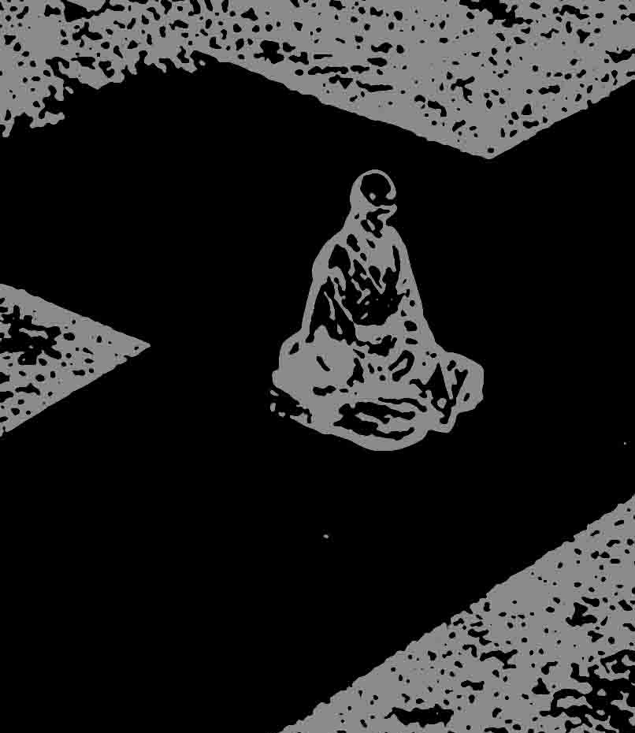
精诚唯一
喝酒了，来跟群友们和师父发发牢骚吧。最近不知怎么了，都不好意思提问题了。这段时间自己变得很懈怠！每天都喝酒，熬腿子也断了，念经也不想念了。坐在电脑前没事的时候，总是想看那些东西( 你们懂得)——邪淫。明知道这样会堕落，可控制不了自己——很痛苦啊！我想出家，在家就想堕落。可是我曾经跟我哥承诺过，要等父母百年( 去世) 之后再出家，哥嫂说我出家是不想养老想逃避。今生这么贫贱，我知道我以前肯定没有种善根修福德，所以我想求智慧解脱想出家。我怕不能遵守诺言。生活得不如意，每天都想麻醉自己。有次做梦，梦到跟师父( 皈依师)在寺里围坐在一起聊天，只是很高兴。我要走的时候，我留了件东西；有个出家师父他说你干什么，我说我还会再回来的。他说，哦。我又说我不想回去啊( 回俗世社会世间的意思)——我怕我会回不来了呀。然后一直哭，醒了眼泪流了一脸，心情还在梦里的情景之中难过啊！难道我今生真的回不到出家的路上了吗？还有个问题是想问师父的。望师父看到能帮我解答一下。
回贴也要讲关系
根据师父对于出家的开示，出家后吃每顿饭都是债，成道后要回来救度这些施主的。如果你单单是觉得生活太苦，而以出家来逃避，末了，修行也没修好的话，对于你欠施主的债，来世披毛戴角也要一一还清的——所以出家这件事要三思。对于你儿子所见一些景象，还是等师父来开示吧。
Taiguanglin
你都有老婆孩子了，出家要三思。
阿啦顶身等
师父，其实从二十三岁起就一直有想出家的念头。最近越来越强烈，一下子对什么都没兴趣了——连最喜欢的上网也觉得一点意思都没有！师父，您有好的寺庙介绍么？能让人实修实证的寺庙或师父？我不想再坐在家空等了！
Taiguanglin
我不会给人介绍师父，自己去附近的庙打听就可以了。
不过我劝你三思，出家吃的饭都是债，你得道了就得回来度他们。等你成菩萨了回过头来看，哇靠，我居然吃了这么多人的供养，要度这么多人才能成佛，还一个个都不是省油的灯，你就后悔了！万一你这辈子偷懒，那得下辈子披毛戴角还。
如果你家境还可以，每天工作不那么忙，那我还是建议你一边赚钱养活自己，一边修行也可以。不一定要出家——这样欠众生的债也少。
阿啦顶身等
哈哈！师父说话好可爱！确实，出家我是想得太简单了，因为我以为去了寺庙，跟上好的老师，我能更精进。我今生除了佛学，对别的是真没特大的兴趣爱好。我怕我今生还没修到上面去，下辈子还在人间，甚至以下，我好怕入胎……
阿啦顶身等
师父睡了，我就留言问个问题哈。您知道北京龙泉寺的学诚法师吗？我关注他很多年了，觉得很正知正见的一个大和尚，一直有想拜他为师的念头。但因为他是方丈住持，感觉很忙，应该不会收我为徒，哎……寻师可真难呀！福报不够！
Taiguanglin
阿啦顶身等，师徒之缘也是很多辈子修来的，不是随随便便就能遇到的，不要着急！关键是发心，发心越纯，遇到好师父的可能性越高。你可以去找那位师父看看，兴许人家会见你，试过总比坐着等要强吧。还有，想象力太丰富也是病，看到一就是一，别联想到十，只会让你头疼。
路过的小胡子
来了大师父说法。很想出家了，可是总感觉条件不允许。
Taiguanglin
出家了吃的饭都是债！自己养活自己，用剩余时间修行也很好。而且出家人有太多的时间，所以更容易懈怠。出家都是缘分，不是说想出家就出家的——不要为这种问题纠结。尽孝也是修行，也是消业。此生不消，来生还得消。
不孝忤逆女
对不起，我还想问，我一直想等我儿子长大了，叫他去寺庙短暂出家。那时间到了，我又叫他回来——算断人慧命、算反而作恶了么？
Taiguanglin
不算！能短暂出家也是了不起的事——你成就你儿子功德无量。出家、在家对于修行没有影响，在家的维摩诘居士、庞居士都很了不起，都解脱了。
你孩子问题吗？让他去寺庙短期出家是好事，但不要强迫孩子——真正出家更得靠个人意愿。
我是反对童子出家的！以前去斯里兰卡，还有其他的东南亚国家。那里有很多童僧，有三十多、四十的人居然意识还停留在中学阶段——就是小时候出家的缘故！要不是穿着袈裟，只能说是智障。
值得05
我去的寺院，没有禅修！去卧龙寺吧，和寺里的僧人不熟啊！
Taiguanglin
只能说机缘未成熟吧！你看我的帖子，自己练双盘也行。等缘分到了，自然会有人来带你入门的。
Erikmu
我想问下如何拜师。我不想出家，或者不能算拜师，就想找个师父指导一下，有问题我去寺庙问就好。我们本地有几个寺庙，但是我没去过。之前感觉，现在除非好的道场，一般寺庙没有正儿八经的修行的。我去寺庙随便问一个僧人我想学禅，然后让他给我引见老师就可以吗？一般僧人会答应么？
Taiguanglin
去庙里就有人专门接待。通常会让你自己修个一年左右再来皈依。去问问看吧！
第21 章 善知识(23)
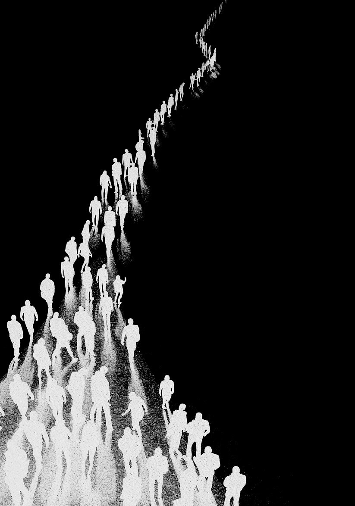
你们给我留一个
请问师父，宣化上人是善知识吗？他所讲的是正法吗？望您开示！
Taiguanglin
我认为是！他是善知识，他师父虚云也是！所讲的都契合佛理，符合佛陀传法的根本宗旨。
Taiguanglin
我不是佛，所以不知道别人成佛与否。但我敢肯定，宣化上人是罗汉以上的人乘愿再来的。
圆圆柔柔摘月光
师父我还有个小问题，我看过宣化上人的传记，上人以前在东北的时候，经常是赤脚走路的。哈尔滨冬天气温都是零下二三十度啊，这样肉体走在地上，为什么冻不坏呢？这是个什么原理？
Taiguanglin
一个是体内气足，一个是有护法神。
圆圆柔柔摘月光
是这样啊！那师父您现在是不是也可以这样冻，也不会受伤？
920626777
楼主能结合自身的修行，谈谈《楞严经》所说的五十阴魔那部分吗？经中那部分比较简略，难以理解，谢谢！
Taiguanglin
去看宣化上人讲解的《楞严经》！他讲得很好，基本都能理解。网上能找到！
圆圆柔柔摘月光
那宣化上人会不知道极乐世界的情况吗？不可能啊！真是令人难以理解。这个问题先放在这里好了，如果以后我再梦到上人，我一定要问的。
Taiguanglin
嗯！你一定要问问。他是阿罗汉以上的人投胎的，不过他不是极乐世界的人——是释迦牟尼佛下边的人。美国也不是极乐世界负责传法的地方，是释迦牟尼佛文殊菩萨下边负责藏传密宗的人们管的地界。
圆圆柔柔摘月光
他是释迦佛的弟子吧？亲传，和我们这样的弟子不一样。我好久没有梦到过了，2014 年到目前都没有梦到。师父，这个问题先放在这里吧。肯定会得到答案的，不影响我修行的。师父晚安！顶礼合十。
炎明王
( 原文散失)( 这里指的是宽净大法师写的《西方极乐世界游记》——话头禅)
炎明王
知道那个游记是真的，我马上就对往生西方有信心了！别人说的我不管了，我信师父的。
圆圆柔柔摘月光
您说宽净法师写的《极乐游记》是真的，可是宣化上人和净空法师都说是伪造的，我不想引起什么争论，但是我觉得宣化上人不会说假。师父能解释一下吗？您前边也说上人至少是阿罗汉或者菩萨再来，那为什么对这个事看法不一致呢？
Taiguanglin
那我就不知道了！去极乐世界用一念跳一个世界的速度去，来回要五年——这是真的！如果是菩萨，就可以瞬间去；阿罗汉还得一个一个跳。还有，所描述那里景象基本都吻合。
因为是说有女人吗？淫欲未灭的人，去了会生为男人和女人相——在下品下生和下品中生，但不会行淫。
阿啦顶身等
圆圆柔柔摘月光，你说宣化上人和净空法师说此事( 此处指的是宽净法师写的极乐游记——话头禅) 伪造，可有视频和证据吗？我也是挺好奇的，感觉一般大德法师很少直接否定一些事情，因为存在肯定是有道理的。依法不依人，依义不依识。不管这事真假，只要它是劝人向善的，它就是好事。还有人说《楞严经》什么的是伪经，我觉得不管人家说什么，只要你觉得这书里面讲的是佛理，是正向的，是向善的，就行了么。很多书就当是看故事去了，别放心上，有用的拿过来，没用的先放着，你说呢？
圆圆柔柔摘月光
《愣严经》肯定不是伪经！因为《愣严咒》的强大力量，我有感应。如果是伪经，有这样大的威力也变成真的了。其实也简单，他说的是不是真的，我们去极乐世界不就知道了吗？295066960@ 圆圆柔柔摘月光：具体讲讲呗！圆圆柔柔摘月光@295066960: 没啥好讲的。想知道，你就自己念《楞严咒》。听别人的感应没意思，不如自己去感应。只要你心诚，精进去读，你都会自己看到自己的前世。这靠的就是《楞严咒》的加持力——在你还没到初禅就可以看到一些宿世。
Taiguanglin
有些时候，已经悟道的人也会说一些奇怪的话。菩萨都有个性，更何况是还没成菩萨的罗汉呢！因为一句不如法的话就把人全盘否定，不是智慧之举！
以前回韩国的时候，听说有一个比丘尼自杀了，原因是她看到她师父犯戒，做一些不该做的事。她出家是因为仰慕师父，结果师父一犯戒，她反而受不了就自杀——愚蠢！
erikmu
南怀瑾的书说得正确吗？他说的比较多修持方面的东西。如果是真东西我想作为参考，所以有此一问。
Taiguanglin
他的书没看过，不敢评论。如果他的书有版权，我以后也不会看。
佛法的版权归释迦牟尼佛，你拿来修可以，把它说成自己的，用来赚钱是盗法行为。有些善知识的书后面直接说：“本书无版权，欢迎翻录流通”——这样的书可以看。
我没有时间看这些个书。你一定要让我评判他的东西，那你找他的书中有疑问的地方贴上来，我看看。但不要断章取义，最好是有关修行的。
阿啦顶身等
您说宣化上人是阿罗汉以上的，那南怀瑾是什么再来吗？他给我感觉无比亲切，我很喜欢他，像爷爷奶奶一样的感觉，又一直看他的书受他教导，学佛起源也是因为他的禅七视频，每次想到他已经走了，我都忍不住眼泪直流，还两次梦到他，哎！感觉他的东西比较对我的胃口，我不喜欢佛教寺庙里那种死板的一套，我就喜欢他这种性格和教法，通俗易懂，贴近大众！
Taiguanglin
南怀瑾不认识，我来中国前已经去世了吧，再说出家的和尚们很少谈及在家修行人，所以我在这里写帖子之后才听到这样的名字，抱歉。
supid128
我闻修佛法，是台湾一个叫空法的法师的视频带我入门的。很多人讲，他是当代开悟者，听了他讲的很多课，很殊胜。我只想求证一下。这位师父我很信，并以此为榜样，去闻思修证，师兄能讲一下，因为师兄曾经在台湾学习嘛！
Taiguanglin
还是别问我别人如何！我不喜欢对别人下评判。再说，我真没听说过，也不知道他都讲了些什么。
判断一个人是不是善知识，先看戒行，再看说的法契合不契合法理，再看是否传承佛陀意志来传法度人。不守戒的不是！说的话和根本佛经相冲突的不是！捞钱的、追求名闻利养的不是！
tiaotiaoqi
新人求解惑。本人已至中年，对人生有一定体悟。多年接触佛法，作为世间法部分，与实际映衬；看世间百态，如拨云见月；反掌观纹，深为赞叹；视为宝典，依教奉行，受益匪浅。但对出世间部分，尚未全信。近读《地藏经》，复生疑惑，疑者有二：1、世尊不能尽数地藏菩萨所度众生，但堕地狱者，暗钝业重，“千万亿劫，求出无期，纵受人身，多被恶业来结其心，不久之间，复堕恶道”，地藏菩萨如何能度？2、地藏菩萨四次发愿，皆为凡夫；婆罗门女及光目女已证菩萨，为何又堕凡夫？抑或一直在不可说劫仍未证菩萨？以上障惑，难以释怀，望同修悉心教我，勿以为憾，不胜感激。
Taiguanglin
1、地藏菩萨也是尽人事听天命，尽最大的努力而已，至于能不能度又是另一回事！度人有概率，不是100% ！要是100%，那无始以来无数的佛菩萨都在努力度人，早该度完了，还有这么多众生怎么解释。
2、地藏菩萨是菩萨，早就成菩萨了。在成菩萨前多次发愿，不是一发愿马上就能成菩萨，中间修行过程中或者轮回中再发愿。
星辰残月变
最重要的问题，求师父解惑。一直不明白《地藏经》上有段说，地藏菩萨前世的父母是婆罗门种，婆罗门不是我们这劫才有的吗？我实在不解，求师父解惑！
Taiguanglin
婆罗门在这里只是象征社会的最高阶层。
精诚唯一
感恩师父法露。不知道您看过网上那个尼泊尔灵修少年视频没有？他也是坐禅，他自己说是初地以上菩萨，您怎么看呢？
Taiguanglin
抱歉！自称菩萨，还露脸的，骗供养的都不是菩萨。
supid126
还有就是楼主老师讲，整个地球六十多亿人口中，进入四禅以上的人可以用三位数来计算。你想，这个四禅内容只有中国、韩国和台湾有保留，其他地方根本没有。那比如泰国、斯里兰卡、尼泊尔、印度、这些国家都没有吗？假如老师学习满了之后，回国了，那我们想跟随老师学习的话，不能的是吧？因为佛法是没有界的，而二元世界里的国有国界、地有地界，那不可能跑到韩国出家吧。有点想不明白就是，台湾的弹丸之地，佛法却如此之精深。到台湾学习的可能还是比较大的。因为台湾出的有大菩提心弘法的高僧确实有几个，在下受益匪浅。那在中国内地有没有好的寺庙呐？因为时下看到的大多都是……真正修行的寺庙，去了很多。地方的寺庙，他们不礼佛、不打坐、不修禅。
Taiguanglin
小乘国家没有四禅的人！那里理论不全面，没法修到四禅。但是印度有外道修行人，能达到四禅的有，再往后修就不可能了。
我的事情我也不知道，随缘吧！大家能遇到的问题我基本都写完了。如法修行，应该不会出现什么大的障碍。
hongfu_qitian
你好！想请教你一个问题。去年年底，本人遇到过一位出来结缘的和尚。他好像有读心术，透过本人的眼睛似乎能够看到本人的过去，甚至还帮助本人预测了今年的一些情况，还交待本人有时间要学习打坐( 现在我在向你请教，就是这样的因缘发展而来的)。能帮我解释一下这是什么情况吗？
那斯我已在路上
我们是从高维度堕落的灵魂，一切都藏在我们的阿卡西记录里？克里昂是谁？
第22 章 开光、供养、持戒(13)
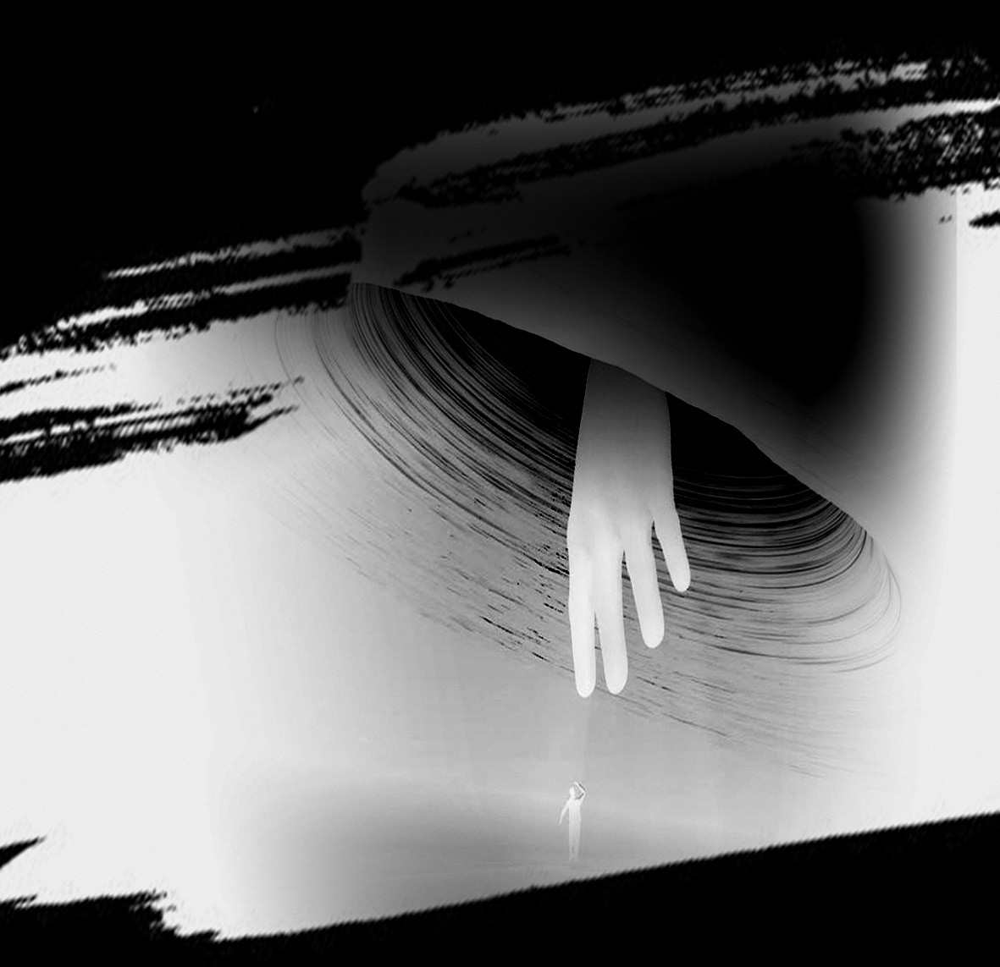
皮卡堂69
怎么供养佛像啊？师父，佛太多了，我就不知道请哪尊，得请释迦牟尼佛才对吧？
Taiguanglin
你喜欢哪个佛菩萨就供哪个。要去极乐世界最好供养西方三圣，可以同时供养三个，也可以只供养观音菩萨。
众生未度不言休
老师，问一个日常问题，关于供养佛像、经书。在家修行人供养佛像有用吗？如何如法地供养佛像？
这得看你的发心纯不纯
如果天天对着佛像求这个那个，还不如不供养——这样会招来乱七八糟的妖魅附在佛像上吃供养。如果你用出离心来修行，那供养佛像，佛菩萨就会分身常驻佛像来加持你。天天上香、上净水都是修去我慢，增长恭敬心、慈悲心的修行。至于开光，你只要如法修行就可以了，不去庙里开光也行。但是你又很在意开光，那就花钱去庙里请和尚们开光就行了。关键还是你的心态！圆圆柔柔摘月光@Taiguanglin: 师父，供画像也是一样的吗？
Taiguanglin
Taiguanglin@ 圆圆柔柔摘月光：画像也可以！
众生未度不言休
老师，我供佛像从来什么都不求。还特地跟家人严肃说过，什么都不准求。因为我觉得会有鬼神附在上面，用功德换取福报。但我有三个佛像是买的，感觉罪孽很大。有一个地藏菩萨画像是网友白送的，幢幡上面居然还有说不出的香味，平时只燃灯和供香、水果、水、鲜花。偶尔还对做大礼拜、忏悔、发愿。我在佛像旁边放了金、银、珊瑚、玛瑙、珍珠等七宝可以吗？
Taiguanglin
那个舍利子可以拿去供养。有的舍利子自己会生仔，供养一段时间之后，大的舍利子旁边会出现小舍利子。还有，供养舍利子有专门的咒语——每天对着舍利子念。这个舍利子如果真的是大德高僧的舍利子，那也有一定的加持效果。你说的这两种，应该都是大舍利子下的仔。
go_world
有人说可以感应到开光的物体，这个开光了，这个没开光。真的可以吗？开光只是一个仪式呢，还是开光的物体真的能被感应到？如果是的话，原理是什么？
Taiguanglin
开光是有，就像一个人穿的衣服，时间长了就会留下那个人的气味一样，一个修为高的人用过的法器，会留下那个人的气场，拿来护身或者修行有一定的作用，但不像市面上随便就能买到的金卡那么普遍。不要指望靠这种东西来提高修为或者快速进步，没那么便宜的事，还是自己修行最靠谱。
hongfu_qitian
你好！想请教你一个问题。请问你如何看待电脑游戏，比如CS和魔兽，还有捕鱼达人之类的电脑游戏，玩这种游戏算是造恶业吗？如果是，那对比现实世界中的杀生有何区别？
Taiguanglin
就算是在游戏里，你让别人伤心了，你也有果报。
hongfu_qitian
你好！想请教你一个问题。开玩笑和吹牛调侃算不算犯妄语戒？
无事不问卜
见道、修道、证道直到解脱前，不好的习气、贪嗔痴什么的还是有的。师父说的是解脱道。你想要解脱，这些不好的习气肯定要断掉的。如果你想修个初禅什么的、戒淫、戒肉就够了。我是这么理解的！
无事不问卜
很多人也说，我不戒淫、不戒肉也一样到初禅。不持戒就算到了初禅，还是会退转，师父说的是每次坐下都能到那个境而不退转，必须持戒。
Taiguanglin
开玩笑、吹牛、调侃，没有伤害别人利益就没事。
295066960
善知识您好，我在看《楞严经》卷八，看到三个增进修行渐次。请问师父意见如何？
Taiguanglin
简单来说，第一步身体持戒，第二步心里持戒，第三步精进修行。当业障现前时，坦然接受，逐渐改变命运。
第23 章 与修行无关的问题(6)
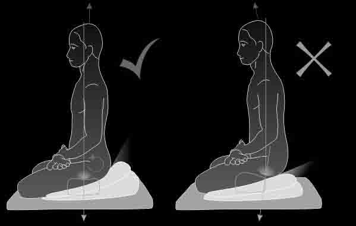
Silverfoxwdc
楼主大德，这个我不太懂能帮解释一下吗？( 见附图：图14) 谢谢。
Taiguanglin
我也不懂，我不是古玩专家。
热血无赖中文版
楼主，马航失踪飞机到底在哪里？以你的能力很轻松就可以知道吧？
星辰残月变
地球是实心的还是空心的？地球内部是否住人？地狱究竟在何方？
炎明王
目前，西方一种得到很多人认同的理论，是说地球不是一个球而更象一个圈，南北两极都是空洞，中间是通的，明白这个意思么?
Tttyu
我只想知道，修成了佛的意识体在别的维度做什么？我认为成佛是好的，可是仍然没有任何意义可言。世界二元对立，总有人在地狱、在天堂——他们对于宇宙存在没有任何区别。佛们也是阴阳对立力量中的一种，他们为善和鬼为恶一样，是一种存在的两个对立面，是被宇宙存在本身决定了的行为。所以，他们理解了很多，却仍未真正瞥见造物主真实的面目。
Taiguanglin
你什么都知道了，还问什么呀？吧里有很多理论强人，跟他们先学理论吧。
第24 章 Taiguanglin 道场(24)
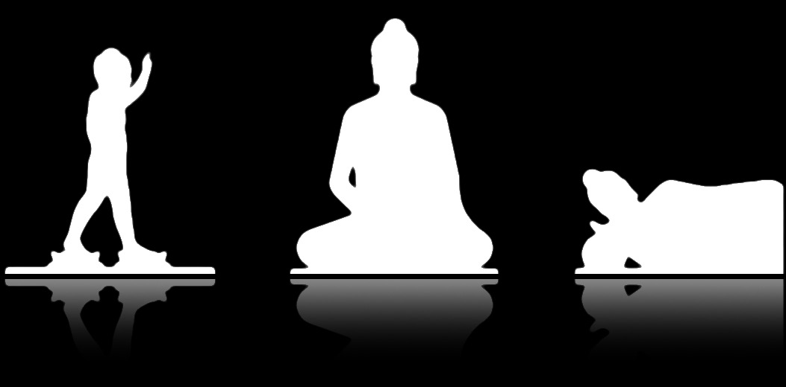
Taiguanglin
本帖只针对实修人！
发牢骚、找安慰的别发！
太简单的、网上能搜到的，自己找去！
来踢馆的自重，本人不屑与人争辩！
先感谢山人吧主提供道场！
阿弥陀佛！善哉啊善哉！(2014-02-25，11:29)
有问题可以提，自己遇到什么境界和困难就先说，这样才能对症下药。别人的修行经验不是对所有人有帮助，反而会起疑惑迷茫。所以，只要关注自己的修行就可以了。(2014-02-26，19:40)
提问者，请先把前面回答别人的帖子都看完——或许有你要的答案。没有再提！我的时间也宝贵，谢谢！(2014-02-28，03:15)
提问的朋友，务必把前面的内容看完——说不定里面有你要的答案。没有的话，再提问！我的时间也很宝贵，谢谢！(2014-02-28，21:02)
之前先给大家介绍一部电影，名字叫《禅》，日本电影。主人公是日本的道远法师，在中国北宋时期来中国求法，在阿育王寺开悟，得到上师印证，回国传法，是一部很好的个人传记电影。其中有一段，有妓女抱着病危的孩子来求救，道远法师叫她去没有死过人的家里求红豆，还是米来着，我忘了。这一段出自佛经，是佛陀的故事，其他事情基本都是真事。其中开悟那一段印象深刻，回国后的传法活动一直到入寂，很是感动人。中国历史上有名的高僧不在少数，却没有一部像样的传记电影，有也是加了太多政治色彩，悲哀。说多了又让人删，还是说正题吧。(2014-03-01，20:29)
你都可以判别我的知见有严重的问题，那我还能跟你谈什么？上面都说得很清楚了。
我打的是百花错拳，自成一套完整的体系；和书上有不同的地方，甚至书上没有的也会出现，而且全部用现代语言。古代的佛教用语到我这里全是现代词汇，方便现代人理解。
别人的论点和我无关，不要拿我的理论和书上的，或者和别人的对号入座。不但对不进去，还会有很大出入。所以不和任何人辩法！
你可以表达你的观点，我不会删，但不会进行无谓的争论。我的时间很宝贵！
在我看来，佛怎么堕落成人，人如何修行回去——重点在这里，其他一切都不重要。佛也对一些问题保持沉默，因为对凡夫脱离烦恼的修行没有帮助，甚至是有百害而无一利。
佛对菩萨讲空，让菩萨们灭了妄想成佛；佛对罗汉们讲平等，让罗汉们灭了分别心成为初地菩萨；佛对凡夫讲放下，让凡夫放下执着，成为罗汉解脱生死。
你要跟我讲空，第一你不是佛，就算你是佛，我不是菩萨。两个凡夫论空，最后没有任何结果，徒增烦恼。我只能回答一个问题，我在这里写文章就是入世。
还是接着说禅，昨天本来要写这个，结果楼上问慈悲心，我就写了发心次第。
居然是来挑刺的，多说无益。
无法无戒
挖墙角啊！哈哈哈，我赞同不孝忤逆女的建议。但反回来说，也就这吧比较兴旺。那边就开个分坛好了。
Taiguanglin
多谢好意！我精力有限，就不到别的地方露脸了，就发这一个帖。但我不反对别人转载，祝美女好运！
不孝忤逆女
我把这帖转到论坛去了，没发几章就被雪藏到八百年没有人去的版块了，当时真要气死了。
Taiguanglin
我本来在佛门吧开帖讲禅，结果被删了！搬来哪个喇嘛的话，真正的佛教徒不是禅修者什么什么的。所以到这里发，随缘而度，没什么的。网上的事本来就不靠谱。阿弥陀佛！(2014-3-5，13:56)
无所谓了，别闹心。我磕头去也，晚上再来发一篇。(2014-3-5，14:06)
佛经以佛灭度后算起，到五百年为止，这段时间由弟子们整理出来，还有别的修行人写的论疏，以此为修行的理论依据。
佛教传到中国后也出现了很多论疏，还有很多新的概念；这些可以参考，但不能和原始佛经相比，至少我是这么认为的。而且，我一再强调：我的理论自成一家，是靠我的实修证得，再拿佛经来印证——整个体系没有偏离原始佛经的根本宗旨！你拿我的跟唐宋时期高僧的论疏比——我们本来就不是同一时代的人，无从比起。
中国开放以来，有很多和尚出国传法，但真正在当地扎根的人不多，为什么？东西方意识形态本来不同！你让西方人理解东方人不是简单的事，你还让西方的现代人理解东方的古代人——这不扯飞机嘛！
还有，论经我真的没兴趣！我只教大家实实在在的修行，不说那些虚无缥缈的空论。
有一次，我在网上聊天群看人高谈阔论，我就问他：你断淫欲没有？五根境界破了没有？
他居然回我：性无能者不是觉悟者！五根境界都是虚幻。
我想现在学佛的人都怎么了，怎么满脑子都是这些不切实际的妄想！
如果在庙里，师父或者师兄这么问你，你这么答，师父会很亲切地告诉你，去大殿磕五千个头，磕不完不许吃饭、不许睡觉——你这根本就是抬杠嘛。就算不是长辈，是你的师弟或者徒弟来这么问你，你也应该如实回答。
佛说了，直心是道场。你断了就说断了，那他会有后续的问题；你就告诉他你的经验，他会对你多一份敬重；你没断，就说没断，他也不会看扁你。
淫欲也好，五根境界也好，这都不是说断就断的。大家一起交流经验，也算是同病相怜，互相勉励，对自己、对别人都有很大的利益。
你这么扯淡地回答，这些晚辈碍于身份不会顶撞你，但以后基本不再拿你当回事了。
我见过七十多岁的老居士还来问和尚们，说自己为淫欲很苦恼，已经信佛大半辈子了，还这样，觉得自己太糟糕了。
你的这种我慢心是妨碍你进步的最大障碍。有一百人来问你，你如实回答一百次，看扁你的没几个，说不定你会真的碰上高人；看你如此诚实，还会教你怎么修行——你这不就得到了很大的利益了嘛！
还有，总是爱在网上贴佛经，拿佛经说事的人也是。
有人网上发帖问：用无心来消灭杂念，怎么样？
我在下面回帖——无心如同枯木。很多在山里修行的人认为这是什么好境界，沉浸在安逸和平静的生活当中，觉得自己很厉害了。等下山接触人和事，境界一来，无心即破，什么情绪都起来了。所以，用无心不能灭杂念。
有人马上贴佛经上来，也不能叫佛经，就是达摩和一个修行人的对话，结论是无心是很高的境界。
你要真明白啥叫无心，你就不会贴这种东西来误导初学了！对初学者来说，无心就是发呆，就是断了觉知的安乐状态。而达摩说的无心是有觉知的，是用第七识分别心来观照一切，但不起文字妄想和注意力，还有情绪。达摩说的是禅，有觉知的禅和发呆不是一个概念。(2014-03-08，16:55)
神通不谈！你自己修到那个程度，自己就出来了——要入定才能看。还有，一开始只能看你这辈子经历的事情和与其对应的前世因果，别的看不了。
念佛法门等讲念佛三昧的时候，详细讲——这是重点，有可能会对大家本来的认知产生冲击，期待吧！
不孝忤逆女
对不起楼主，我转帖的地方并不是道场。可能再难找像这里一样宽容的道场了。要么怕你邪说，要么怕你说正法耽误人家敛财。
不孝忤逆女
我说出来你不要生气，我把它贴到天涯论坛的莲蓬鬼话了，主要是因为不会被删、人多，里面贴的大都是道家的神通，灵异什么的，和佛沾边的人也有一些。
不孝忤逆女
其实我先想搬到国际观察，但那常有骂佛教的，害怕让人造口业。以后再试试！
不孝忤逆女
那个帖子还是叫这个帖子名，就是多了转载两字——用我以前的号发的！
Taiguanglin
我删的！我不在那里骂他了。可过了好几天，他居然还给我回复，挑衅我。我就把所有的都删了，还是老老实实写这个——不骂人好了。呵呵！让那个帖子沉下去。(2014-3-10，18:55)
本来要写念佛三昧，把自己的真实经历写出来。结果发不上来，字数明明不到五千，还分了好几个部分都发不上来——看来佛菩萨不让我发了呢！
估计是我写了些不该告诉别人的东西吧！我再改改吧。
今天就算了，阿弥陀佛！(2014-03-11，20:46)
还有那个转贴我帖子的美女，你别再贴别处去了。我想删的时候找不到咋办，特别是这一段念佛三昧和我自己的部分不要贴到别处去。谢谢！(2014-03-12，12:43)
本帖从六十一楼开始进入正题。提问的朋友，先读完前面的所有帖子再提。
我爱松仁
大师你好，我是一个信徒，很想问一个问题，与修行无关，也不知是否妥当。您是怎么看待其他宗教和其宗教信仰者的呢？一般的佛教徒的看法又是什么呢？
圆圆柔柔摘月光
我和一位要好的佛友一直都在跟随您的帖子，我们有一个不情之请，还是希望师父能够建一个群，在帖子里结缘的诸位都可以加入，也算是圆满了这次传法之行。任何事情要有始有终，既然结了缘，还希望师父能够带我们。不敢说今生证果，至少也能往生西方，继续修行。而我想，大家选择实修，都是希望今生就能达到三禅的境界。大家都有决心，又得遇明师，岂不是天时地利人和吗？还望师父考虑。另外，哪来的韩国和中国的地界之分？我们都在娑婆。宣化上人在美国，难道还耽误中国的弟子拜师吗？现在净空法师也不在国内，台湾四大山头的法师，目前也只有星云大师一人来了国内，还是短期呢！所以，师父不要再有世俗之分。说不准帖子里的我们跟您之前就结缘过！这次，不过是续上了往昔的缘分而已。恳请师父，酌情考虑。顶礼合十！
hy2hx
是啊是啊！师兄说的有理。不过，其实只要有这个帖子就行了，师父他也一样可以传法，重要的是师父能常来这个帖子里。而且这里写的内容，也可以在百度里搜索到。在群里的话，师父说的话，百度就搜不到了；这样一来，或许其他有缘的师兄弟姐妹，就搜不到有关的师父讲的法了( 个人见解)。
Taiguanglin
该写的都会写，不着急！以后回国了，看情况再上来。凡事随缘，不要执着。
圆圆柔柔摘月光
知道了！师父。大道自然，一切随缘。
Taiguanglin
来捣乱的删！谈空论的删！找人辩论的，别来这里！这里只讲实修。
大家时间都很宝贵，花了不少时间读了一篇文章，没有任何利益，还增加烦恼，写这样文章的人是在造恶业！(2014-06-09，20:21)
大家的问题明天再回答吧！都睡觉去吧！我也睡了。(2014-06-10，23:04)
还有时间问题，这个在阿罗汉的分别心部分里，要专门讲一篇有关分别心的内容，到时候再说吧。今天就到这里，睡觉去吧。
无法无戒
我们也不知道您什么时候回国，您上次说愿意把该帖留在这里，不再删掉。为了便于其他同修的阅读，我想把该帖整理出来。用目录的方式查询，直接进入相应的楼层，就可以看想看的内容；这样可以为同修节约很多时间，阅读时也比较有条理，以加深印象。这段时间，我手上没单子，比较空闲，估计花一到两周时间。但这需要师父您的允许。请师父开示！
圆圆柔柔摘月光
我看了太极妈的帖子，她是发了很多的帖子，直接用链接的方式去到相关的问题。师父这里是楼层，我就不晓得怎样做！师兄厉害啊。无法无戒@ 圆圆柔柔摘月光：我也没试过！既然这是好事情，我就去试试，大不了多花点时间。我空闲的时间估计比你们多一点。本想把这无量功德留给你们的，但看你们都没反应。(2014-6-13，09:35)，圆圆柔柔摘月光@ 无法无戒: 我也是很空闲的，可是我不太精通这个，不晓得怎样弄。师兄你说，我们上班时间做这个，是不是背因果啊？可是工作就是不忙啊。无法无戒@ 圆圆柔柔摘月光：假如你也有这意愿，那我们一起来完成，或许能做得更好。我这人比较懒散，心也比较粗。假如你愿意的话，我非常高兴。圆圆柔柔摘月光@ 无法无戒: 等师父批准再说。
圆圆柔柔摘月光
@406942800: 我没晕啊。是我表达不清楚么？不管怎样，谢谢你！406942800@ 圆圆柔柔摘月光：一切皆会成为业障——这习气总会跟着你。
圆圆柔柔摘月光
@406942800: 谢谢您！有些习气，我要慢慢改正。有些习气，我愿意一直保留。我都不明白你在讲什么。恕我直言，您就是出来说法，也得有人愿意听才行，也要字字对机；不是逮到谁，看不惯谁，就能说几句的，到此为止吧！说实话，我不想再跟您有啥因缘。406942800@ 圆圆柔柔摘月光：只是提示，罪过罪过！
消我执
也许都贴到一个文本里，再整理一下，存在自己电脑慢慢看也好，也可给别的同修。406942800@ 圆圆柔柔摘月光：你也诵《楞严咒》。把《楞严经》多读几遍，会更了解什么是习气。读一两遍肯定是不行的。
圆圆柔柔摘月光
@406942800：谢谢您的提醒！不孝忤逆女@ 无法无戒：请问师弟：你几点睡？几点起？无法无戒@ 不孝忤逆女：我除了睡觉，就是休息。不孝忤逆女@ 无法无戒：坐着，还是躺着？无法无戒@ 圆圆柔柔摘月光：师姐好，师父答复同意了。
下面的事可两种选择
1、另开一个贴吧，自己可以一直置顶。2、在这禅定吧里，但很难置顶。采用链接的方式比较简单，也比较快，修改整理都方便。(2014-6-14，07:54)圆圆柔柔摘月光@ 无法无戒：都可以！需要我做什么，你尽管说。不过得周一，现在用手机，不方便。你做主，我配合。
Taiguanglin
不要等啊！这让我多么有负担感。周末休息，有问题可以留。
看今天的问题都很简单，直接在下面回复了。感觉有必要写得长，就另起楼层。祝各位周末好好休息，也陪陪家人，别让亲人伤心。(2014-06-13，21:48)
睡觉了，各位！凌晨还得早起礼佛呢，大家也早点睡吧。十一点之前睡觉是好习惯。周末休息，有问题可以留。(2014-06-13，22:36)
不要骂人——不管骂谁一律删！请在外国和尚面前表现出大国风度，好让和尚回国后大大宣扬上国国民的美德和风采。
红宝石199
2014-6-16 17:28
师父还这么幽默啊……
圆圆柔柔摘月光
该问就问，师父说了有问必答。回国了也没事，上网一样可以。等到人员有一定数量了，咱们就建一个贴吧，用作师父专门的道场。行道子888@ 圆圆柔柔摘月光：建吧做道场，这个可以有。无法无戒@ 圆圆柔柔摘月光：我昨天去申请了，估计有点难度，可能需要再申请几次。无法无戒@ 圆圆柔柔摘月光：你方便的话，你那边也去申请，就标明，是为了传扬师父的这个帖子为主。圆圆柔柔摘月光@ 无法无戒：还不如说宣传中韩文化交流呢，估计审批得还能快点。我也申请试试看哈。贴吧叫什么名字啊？无法无戒@ 圆圆柔柔摘月光：师父的功法主要以中脉为主，我取的是禅定中脉吧。但有一点犹豫，因为真的采用禅定通中脉的似乎很难。我问了不少人，他们修行多年，但都没中脉的感觉。圆圆柔柔摘月光@ 无法无戒：师父没给我回复，我就申请了一个，目前正在审批中，呵呵。红宝石199: 太好了，谢谢各位师兄。功德无量！回贴也要讲关系@ 圆圆柔柔摘月光：想法很好！若能如此，当是我等无边福报！
圆圆柔柔摘月光
我搜了好多想用的名字，发现都用了。真修实证，其实可以啊。你为啥不@Taiguanglin 师父呢？让师父来选择一个。
不孝忤逆女
首先感谢清凉山人提供道场，实应感谢。然后就是，看大家忙碌得好开心的样子。随喜！ 希望能友情禅定贴吧。(2014-6-16，15:02)暖阳1 飞舞：师父，你不是中国人。你不了解国内就存在某些智商低，还爱秀下限的。别理他就好！嫉妒心起来可以害死人，自己着魔了都不知道。可惜好为人师，没人理他，没人搭理他，见到修行好的还嫉妒恨。这脸皮厚的呀，真丢人。我们不会理他，就当看笑话了，要不也太无趣了吧。
Taiguanglin
看各位的问题都比较简单，我就不另起帖回答了——新人务必看完所有帖子！纯理论性的问题没有意义，琢磨来琢磨去，想明白了对修行也没多大帮助。还是老实念佛、老实打坐，从磕头、练呼吸开始吧。
周末休息，加油吧。(2014-07-09，21:36)
Taiguanglin ：明天有事出门，周末休息，先发一帖。周末休息，也不是因为我想休息，看到有那么几位天天等更新，是希望这几位能放心地过周末，陪家人也好，打坐也好，总比坐在电脑面前发呆要好。周末家人都回家了，你还在电脑面前发呆，家里人会说你学佛学得不顾家了。
大家保重，周末愉快！(2014-07-10，20:50)
不是我删的，是百度删的。要求回复都没信，有人贴上来就好，不用我再贴了。
圆圆柔柔摘月光
怪不得我今晚这样执着地等师父，没有这么晚过，难道是潜意识里觉得什么？师父，虽然我知道您回国后和现在并没有区别，可是，情绪还是在作祟，还是有种淡淡的不舍。这里，希望师父常回家看看，也预祝师父回国传法一切顺利！(2014-07-25，23:54)
附 图(18)
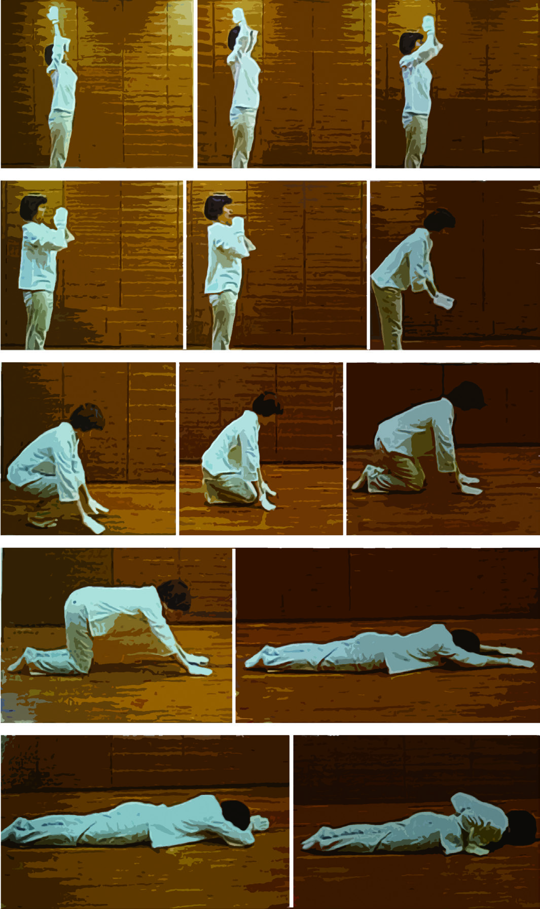
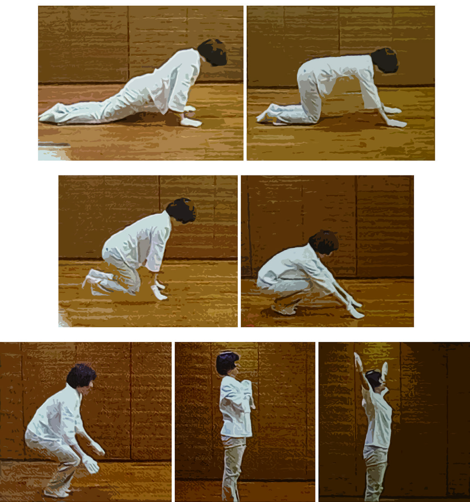
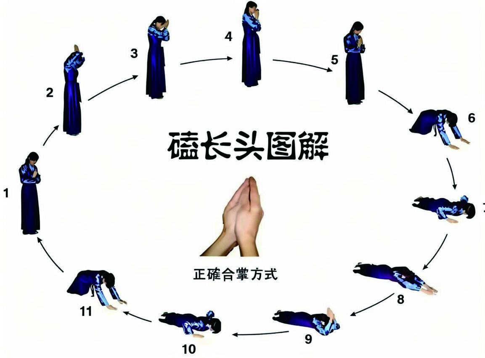
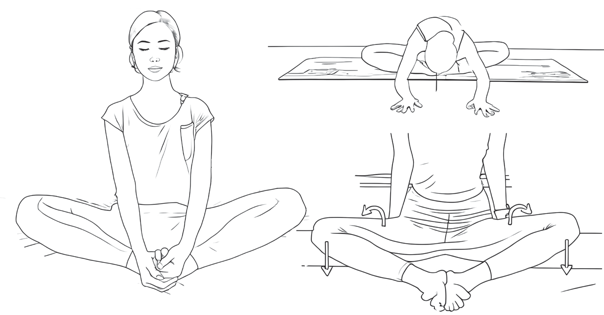
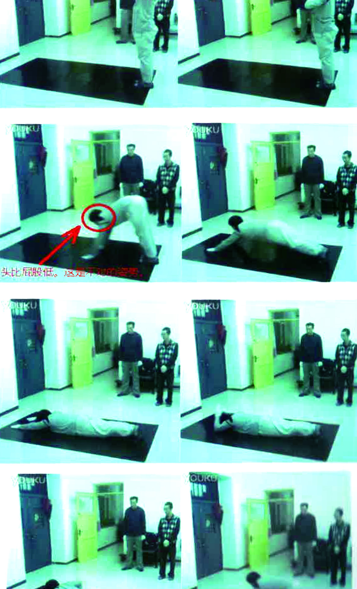
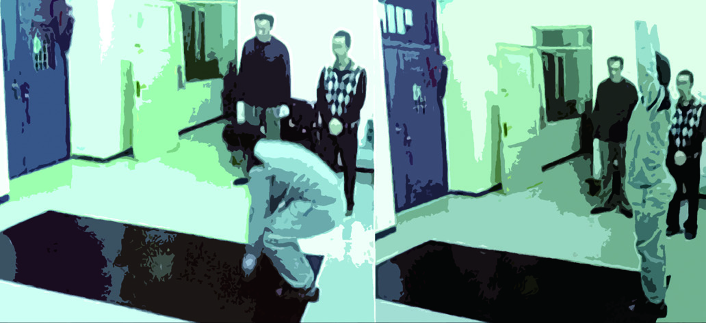
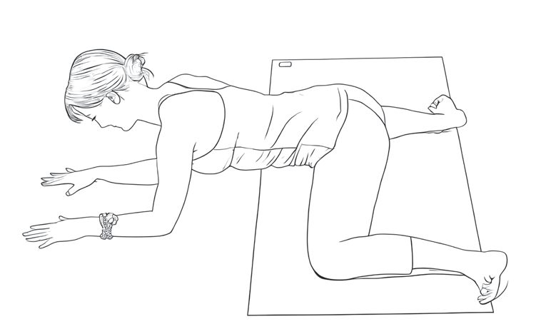
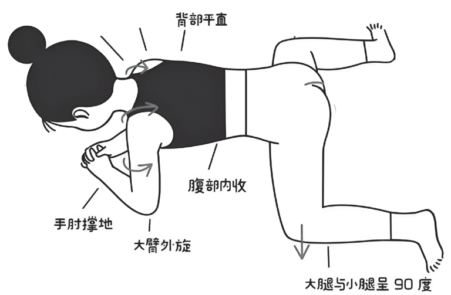
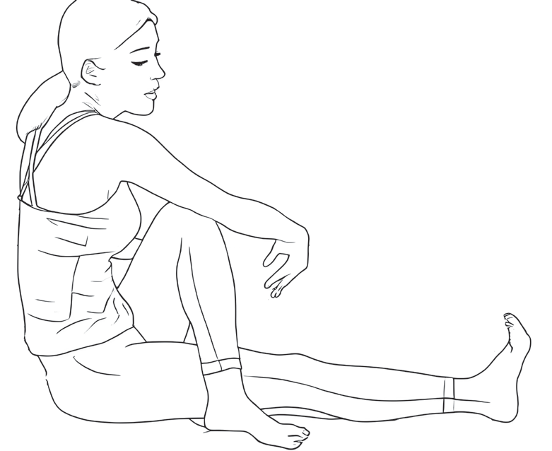
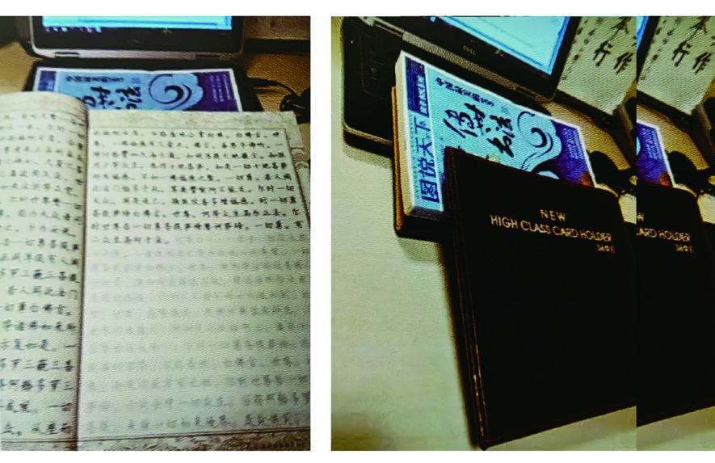
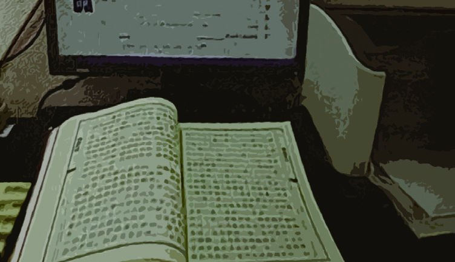
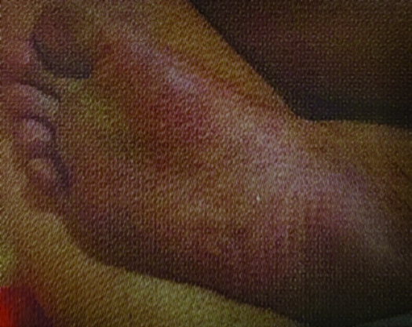
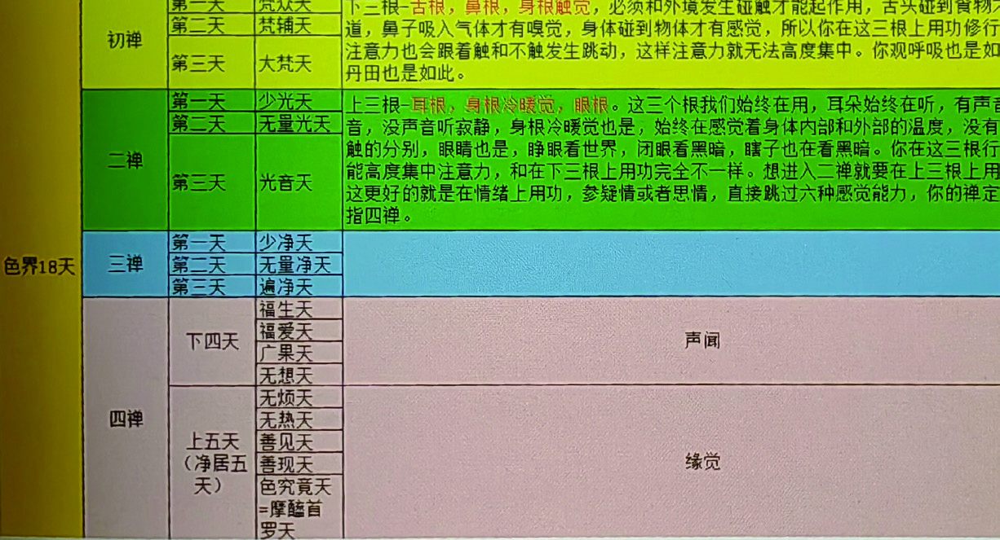
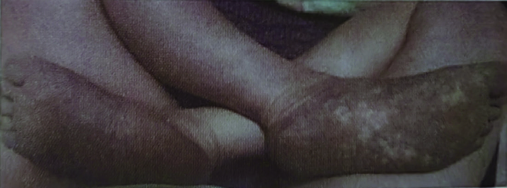
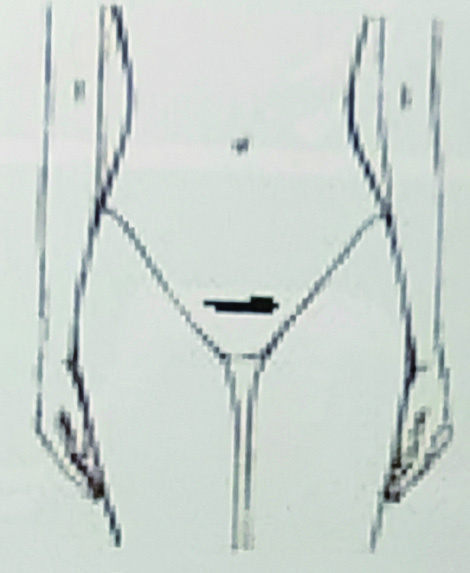
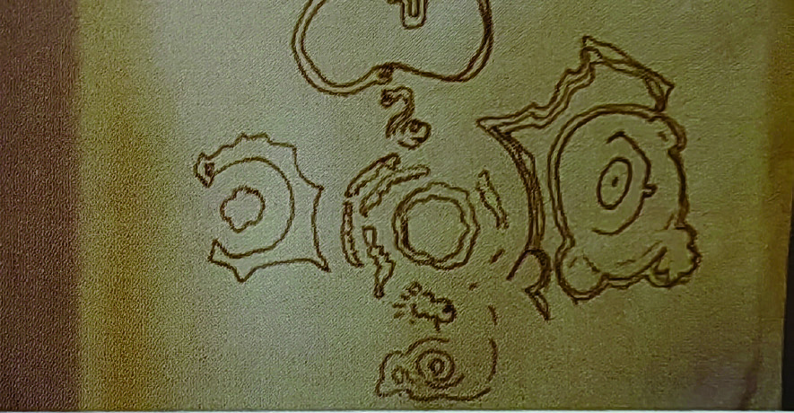
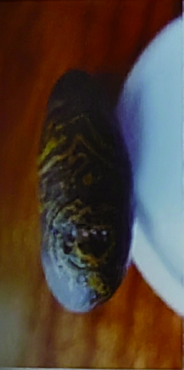
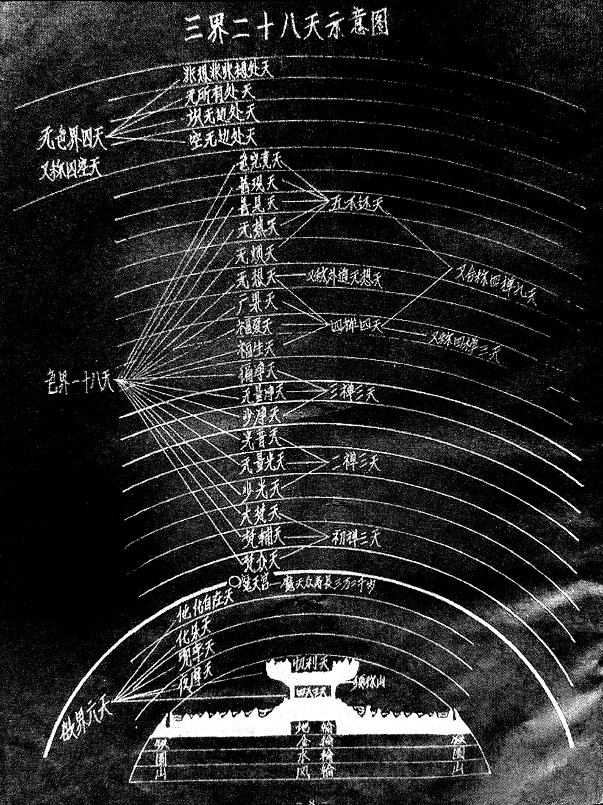